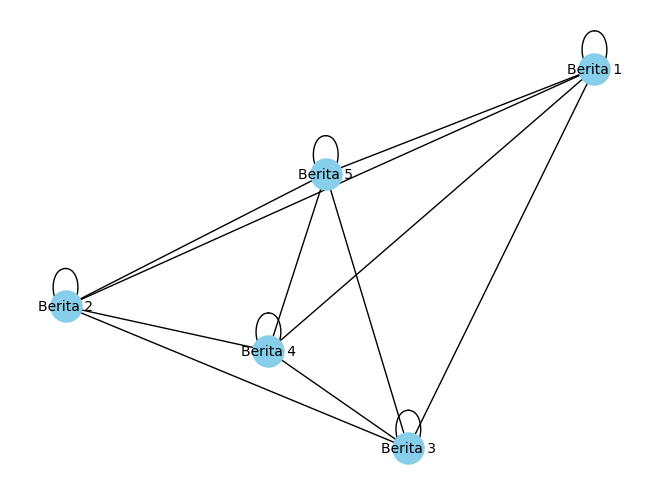

##Crawling
!pip install bs4
Collecting bs4
Downloading bs4-0.0.1.tar.gz (1.1 kB)
Preparing metadata (setup.py) ... ?25l?25hdone
Requirement already satisfied: beautifulsoup4 in /usr/local/lib/python3.10/dist-packages (from bs4) (4.11.2)
Requirement already satisfied: soupsieve>1.2 in /usr/local/lib/python3.10/dist-packages (from beautifulsoup4->bs4) (2.5)
Building wheels for collected packages: bs4
Building wheel for bs4 (setup.py) ... ?25l?25hdone
Created wheel for bs4: filename=bs4-0.0.1-py3-none-any.whl size=1257 sha256=a1c3946d2255a851c95d676b61dcfc8a0d9583aabcb3e562bf1cf7b66a794c94
Stored in directory: /root/.cache/pip/wheels/25/42/45/b773edc52acb16cd2db4cf1a0b47117e2f69bb4eb300ed0e70
Successfully built bs4
Installing collected packages: bs4
Successfully installed bs4-0.0.1
import requests
from bs4 import BeautifulSoup
import pandas as pd
# Membuat list kosong untuk menyimpan data dari semua halaman
all_data = []
# Jumlah halaman yang ingin di-crawl
total_pages = 50
for page in range(1, total_pages + 1):
# URL target dengan nomor halaman
url = f"https://pta.trunojoyo.ac.id/c_search/byprod/10/{page}"
# Mengirim permintaan HTTP GET ke URL
response = requests.get(url)
# Memeriksa apakah permintaan berhasil
if response.status_code == 200:
# Parsing HTML dengan BeautifulSoup
soup = BeautifulSoup(response.text, 'html.parser')
# Cari semua elemen <li> dengan atribut data-id yang mengandung "id-"
data_items = soup.find_all('li', attrs={"data-id": lambda x: x and "id-" in x})
# Iterasi melalui elemen-elemen yang ditemukan
for item in data_items:
# Mengambil judul berita
judul_berita = item.find('a', class_='title').text.strip()
# Mengambil informasi penulis dan dosen pembimbing
penulis = item.find_all('div', style="padding:2px 2px 2px 2px;")
penulis_info = [p.span.text.strip() for p in penulis]
# Mengambil URL selengkapnya
selengkapnya_link = item.find('a', class_='gray button')['href']
# Mengirim permintaan HTTP GET ke halaman selengkapnya
selengkapnya_response = requests.get(selengkapnya_link)
if selengkapnya_response.status_code == 200:
selengkapnya_soup = BeautifulSoup(selengkapnya_response.text, 'html.parser')
# Mencari dan mengambil teks abstrak
abstrak = selengkapnya_soup.find('p', align='justify').text.strip()
else:
abstrak = "Tidak dapat mengambil abstrak"
# Menambahkan data ke list
all_data.append([judul_berita] + penulis_info + [abstrak])
else:
print(f"Gagal mengambil halaman {url}, kode status: {response.status_code}")
# Membuat DataFrame dari list data
df = pd.DataFrame(all_data, columns=["Judul", "Penulis", "Pembimbing 1", "Pembimbing 2", "Abstrak"])
# df.to_csv('data_berita_abstrak.csv', index=False)
---------------------------------------------------------------------------
KeyboardInterrupt Traceback (most recent call last)
<ipython-input-2-90bce9049807> in <cell line: 11>()
37
38 # Mengirim permintaan HTTP GET ke halaman selengkapnya
---> 39 selengkapnya_response = requests.get(selengkapnya_link)
40 if selengkapnya_response.status_code == 200:
41 selengkapnya_soup = BeautifulSoup(selengkapnya_response.text, 'html.parser')
/usr/local/lib/python3.10/dist-packages/requests/api.py in get(url, params, **kwargs)
71 """
72
---> 73 return request("get", url, params=params, **kwargs)
74
75
/usr/local/lib/python3.10/dist-packages/requests/api.py in request(method, url, **kwargs)
57 # cases, and look like a memory leak in others.
58 with sessions.Session() as session:
---> 59 return session.request(method=method, url=url, **kwargs)
60
61
/usr/local/lib/python3.10/dist-packages/requests/sessions.py in request(self, method, url, params, data, headers, cookies, files, auth, timeout, allow_redirects, proxies, hooks, stream, verify, cert, json)
587 }
588 send_kwargs.update(settings)
--> 589 resp = self.send(prep, **send_kwargs)
590
591 return resp
/usr/local/lib/python3.10/dist-packages/requests/sessions.py in send(self, request, **kwargs)
701
702 # Send the request
--> 703 r = adapter.send(request, **kwargs)
704
705 # Total elapsed time of the request (approximately)
/usr/local/lib/python3.10/dist-packages/requests/adapters.py in send(self, request, stream, timeout, verify, cert, proxies)
484
485 try:
--> 486 resp = conn.urlopen(
487 method=request.method,
488 url=url,
/usr/local/lib/python3.10/dist-packages/urllib3/connectionpool.py in urlopen(self, method, url, body, headers, retries, redirect, assert_same_host, timeout, pool_timeout, release_conn, chunked, body_pos, preload_content, decode_content, **response_kw)
789
790 # Make the request on the HTTPConnection object
--> 791 response = self._make_request(
792 conn,
793 method,
/usr/local/lib/python3.10/dist-packages/urllib3/connectionpool.py in _make_request(self, conn, method, url, body, headers, retries, timeout, chunked, response_conn, preload_content, decode_content, enforce_content_length)
466 # Trigger any extra validation we need to do.
467 try:
--> 468 self._validate_conn(conn)
469 except (SocketTimeout, BaseSSLError) as e:
470 self._raise_timeout(err=e, url=url, timeout_value=conn.timeout)
/usr/local/lib/python3.10/dist-packages/urllib3/connectionpool.py in _validate_conn(self, conn)
1095 # Force connect early to allow us to validate the connection.
1096 if conn.is_closed:
-> 1097 conn.connect()
1098
1099 if not conn.is_verified:
/usr/local/lib/python3.10/dist-packages/urllib3/connection.py in connect(self)
640 )
641
--> 642 sock_and_verified = _ssl_wrap_socket_and_match_hostname(
643 sock=sock,
644 cert_reqs=self.cert_reqs,
/usr/local/lib/python3.10/dist-packages/urllib3/connection.py in _ssl_wrap_socket_and_match_hostname(sock, cert_reqs, ssl_version, ssl_minimum_version, ssl_maximum_version, cert_file, key_file, key_password, ca_certs, ca_cert_dir, ca_cert_data, assert_hostname, assert_fingerprint, server_hostname, ssl_context, tls_in_tls)
781 server_hostname = normalized
782
--> 783 ssl_sock = ssl_wrap_socket(
784 sock=sock,
785 keyfile=key_file,
/usr/local/lib/python3.10/dist-packages/urllib3/util/ssl_.py in ssl_wrap_socket(sock, keyfile, certfile, cert_reqs, ca_certs, server_hostname, ssl_version, ciphers, ssl_context, ca_cert_dir, key_password, ca_cert_data, tls_in_tls)
469 pass
470
--> 471 ssl_sock = _ssl_wrap_socket_impl(sock, context, tls_in_tls, server_hostname)
472 return ssl_sock
473
/usr/local/lib/python3.10/dist-packages/urllib3/util/ssl_.py in _ssl_wrap_socket_impl(sock, ssl_context, tls_in_tls, server_hostname)
513 return SSLTransport(sock, ssl_context, server_hostname)
514
--> 515 return ssl_context.wrap_socket(sock, server_hostname=server_hostname)
/usr/lib/python3.10/ssl.py in wrap_socket(self, sock, server_side, do_handshake_on_connect, suppress_ragged_eofs, server_hostname, session)
511 # SSLSocket class handles server_hostname encoding before it calls
512 # ctx._wrap_socket()
--> 513 return self.sslsocket_class._create(
514 sock=sock,
515 server_side=server_side,
/usr/lib/python3.10/ssl.py in _create(cls, sock, server_side, do_handshake_on_connect, suppress_ragged_eofs, server_hostname, context, session)
1069 # non-blocking
1070 raise ValueError("do_handshake_on_connect should not be specified for non-blocking sockets")
-> 1071 self.do_handshake()
1072 except (OSError, ValueError):
1073 self.close()
/usr/lib/python3.10/ssl.py in do_handshake(self, block)
1340 if timeout == 0.0 and block:
1341 self.settimeout(None)
-> 1342 self._sslobj.do_handshake()
1343 finally:
1344 self.settimeout(timeout)
KeyboardInterrupt:
df
| Judul | Penulis | Pembimbing 1 | Pembimbing 2 | Abstrak | |
|---|---|---|---|---|---|
| 0 | PERANCANGAN DAN IMPLEMENTASI SISTEM DATABASE \... | Penulis : A.Ubaidillah S.Kom | Dosen Pembimbing I : Budi Setyono M.T | Dosen Pembimbing II :Hermawan S.T | Sistem informasi akademik (SIAKAD) merupaka... |
| 1 | APLIKASI KONTROL DAN MONITORING JARINGAN KOMPU... | Penulis : M. Basith Ardianto, | Dosen Pembimbing I : Drs. Budi Soesilo, MT | Dosen Pembimbing II :Koko Joni, ST | Berjalannya koneksi jaringan komputer dengan l... |
| 2 | RANCANG BANGUN APLIKASI PROXY SERVER UNTUK\r\n... | Penulis : Akhmad Suyandi, S.Kom | Dosen Pembimbing I : Drs. Budi Soesilo, M.T | Dosen Pembimbing II :Hermawan, ST, MT | Web server adalah sebuah perangkat lunak serve... |
| 3 | SISTEM PENDUKUNG KEPUTUSAN OPTIMASI PENJADWALA... | Penulis : Heri Supriyanto | Dosen Pembimbing I : Mulaab, S.Si., M.Kom | Dosen Pembimbing II :Firli Irhamni, ST., M.Kom | Penjadwalan kuliah di Perguruan Tinggi me... |
| 4 | SISTEM AUGMENTED REALITY ANIMASI BENDA BERGERA... | Penulis : Septian Rahman Hakim | Dosen Pembimbing I : Arik Kurniawati, S.Kom., ... | Dosen Pembimbing II :Haryanto, S.T., M.T. | Seiring perkembangan teknologi yang ada diduni... |
| ... | ... | ... | ... | ... | ... |
| 245 | Perancangan media pengenalan huruf mengunakan ... | Penulis : m hasyim asrori | Dosen Pembimbing I : Cucun Very Angkoso, S.T.,... | Dosen Pembimbing II :Arik Kurniawati, S.Kom.,M.T | Speech Application Programming Interface (SAPI... |
| 246 | Rancang Bangun ERP (Enterprise Resource Planni... | Penulis : Fery Febriyan Syah | Dosen Pembimbing I : Hermawan.,ST., M.Kom | Dosen Pembimbing II :Rika Yunitarini., ST., MT | ABSTRAK\r\nDalam rancang bangun Enterprise Res... |
| 247 | Rancang Bangun ERP ( Enterprise Resource Plann... | Penulis : Rhiyananta Catur Yudowicitro | Dosen Pembimbing I : Hermawan.,ST., M.Kom | Dosen Pembimbing II :Rika Yunitarini., ST., MT | Dalam perancangan Enterprise Resource Plannin... |
| 248 | IMPLEMENTASI ACCELEROMETER DALAM PEMBUATAN GAM... | Penulis : Muhammad Agus Priantoro | Dosen Pembimbing I : Yonathan Ferry Hendrawan,... | Dosen Pembimbing II :Arik Kurniawati, S.Kom., ... | Perkembangan game saat ini sebanding dengan pe... |
| 249 | RANCANG BANGUN ERP (ENTERPRISE RESOURCE PLANNI... | Penulis : Reiza Judis Pradana Verryanto | Dosen Pembimbing I : Hermawan, S.T., M.Kom. | Dosen Pembimbing II :Rika Yunitarini, S.T., M.T. | Enterprice Resource Planning (ERP) merupakan b... |
250 rows × 5 columns
# Simpan DataFrame ke dalam file CSV
df.to_csv('data_berita_informatika_abstrak.csv', index=False)
##Import File CSV Crawling
import pandas as pd
df = pd.read_csv("https://raw.githubusercontent.com/rifkiavendika/PPW/main/data_berita_informatika_abstrak.csv")
df
| Judul | Penulis | Pembimbing 1 | Pembimbing 2 | Abstrak | |
|---|---|---|---|---|---|
| 0 | PERANCANGAN DAN IMPLEMENTASI SISTEM DATABASE \... | Penulis : A.Ubaidillah S.Kom | Dosen Pembimbing I : Budi Setyono M.T | Dosen Pembimbing II :Hermawan S.T | Sistem informasi akademik (SIAKAD) merupaka... |
| 1 | APLIKASI KONTROL DAN MONITORING JARINGAN KOMPU... | Penulis : M. Basith Ardianto, | Dosen Pembimbing I : Drs. Budi Soesilo, MT | Dosen Pembimbing II :Koko Joni, ST | Berjalannya koneksi jaringan komputer dengan l... |
| 2 | RANCANG BANGUN APLIKASI PROXY SERVER UNTUK\r\n... | Penulis : Akhmad Suyandi, S.Kom | Dosen Pembimbing I : Drs. Budi Soesilo, M.T | Dosen Pembimbing II :Hermawan, ST, MT | Web server adalah sebuah perangkat lunak serve... |
| 3 | SISTEM PENDUKUNG KEPUTUSAN OPTIMASI PENJADWALA... | Penulis : Heri Supriyanto | Dosen Pembimbing I : Mulaab, S.Si., M.Kom | Dosen Pembimbing II :Firli Irhamni, ST., M.Kom | Penjadwalan kuliah di Perguruan Tinggi me... |
| 4 | SISTEM AUGMENTED REALITY ANIMASI BENDA BERGERA... | Penulis : Septian Rahman Hakim | Dosen Pembimbing I : Arik Kurniawati, S.Kom., ... | Dosen Pembimbing II :Haryanto, S.T., M.T. | Seiring perkembangan teknologi yang ada diduni... |
| ... | ... | ... | ... | ... | ... |
| 245 | Perancangan media pengenalan huruf mengunakan ... | Penulis : m hasyim asrori | Dosen Pembimbing I : Cucun Very Angkoso, S.T.,... | Dosen Pembimbing II :Arik Kurniawati, S.Kom.,M.T | Speech Application Programming Interface (SAPI... |
| 246 | Rancang Bangun ERP (Enterprise Resource Planni... | Penulis : Fery Febriyan Syah | Dosen Pembimbing I : Hermawan.,ST., M.Kom | Dosen Pembimbing II :Rika Yunitarini., ST., MT | ABSTRAK\r\nDalam rancang bangun Enterprise Res... |
| 247 | Rancang Bangun ERP ( Enterprise Resource Plann... | Penulis : Rhiyananta Catur Yudowicitro | Dosen Pembimbing I : Hermawan.,ST., M.Kom | Dosen Pembimbing II :Rika Yunitarini., ST., MT | Dalam perancangan Enterprise Resource Plannin... |
| 248 | IMPLEMENTASI ACCELEROMETER DALAM PEMBUATAN GAM... | Penulis : Muhammad Agus Priantoro | Dosen Pembimbing I : Yonathan Ferry Hendrawan,... | Dosen Pembimbing II :Arik Kurniawati, S.Kom., ... | Perkembangan game saat ini sebanding dengan pe... |
| 249 | RANCANG BANGUN ERP (ENTERPRISE RESOURCE PLANNI... | Penulis : Reiza Judis Pradana Verryanto | Dosen Pembimbing I : Hermawan, S.T., M.Kom. | Dosen Pembimbing II :Rika Yunitarini, S.T., M.T. | Enterprice Resource Planning (ERP) merupakan b... |
250 rows × 5 columns
##CaseFolding
data=df['Abstrak']
df['CaseFolding'] = data.str.lower()
df
| Judul | Penulis | Pembimbing 1 | Pembimbing 2 | Abstrak | CaseFolding | |
|---|---|---|---|---|---|---|
| 0 | PERANCANGAN DAN IMPLEMENTASI SISTEM DATABASE \... | Penulis : A.Ubaidillah S.Kom | Dosen Pembimbing I : Budi Setyono M.T | Dosen Pembimbing II :Hermawan S.T | Sistem informasi akademik (SIAKAD) merupaka... | sistem informasi akademik (siakad) merupaka... |
| 1 | APLIKASI KONTROL DAN MONITORING JARINGAN KOMPU... | Penulis : M. Basith Ardianto, | Dosen Pembimbing I : Drs. Budi Soesilo, MT | Dosen Pembimbing II :Koko Joni, ST | Berjalannya koneksi jaringan komputer dengan l... | berjalannya koneksi jaringan komputer dengan l... |
| 2 | RANCANG BANGUN APLIKASI PROXY SERVER UNTUK\r\n... | Penulis : Akhmad Suyandi, S.Kom | Dosen Pembimbing I : Drs. Budi Soesilo, M.T | Dosen Pembimbing II :Hermawan, ST, MT | Web server adalah sebuah perangkat lunak serve... | web server adalah sebuah perangkat lunak serve... |
| 3 | SISTEM PENDUKUNG KEPUTUSAN OPTIMASI PENJADWALA... | Penulis : Heri Supriyanto | Dosen Pembimbing I : Mulaab, S.Si., M.Kom | Dosen Pembimbing II :Firli Irhamni, ST., M.Kom | Penjadwalan kuliah di Perguruan Tinggi me... | penjadwalan kuliah di perguruan tinggi me... |
| 4 | SISTEM AUGMENTED REALITY ANIMASI BENDA BERGERA... | Penulis : Septian Rahman Hakim | Dosen Pembimbing I : Arik Kurniawati, S.Kom., ... | Dosen Pembimbing II :Haryanto, S.T., M.T. | Seiring perkembangan teknologi yang ada diduni... | seiring perkembangan teknologi yang ada diduni... |
| ... | ... | ... | ... | ... | ... | ... |
| 245 | Perancangan media pengenalan huruf mengunakan ... | Penulis : m hasyim asrori | Dosen Pembimbing I : Cucun Very Angkoso, S.T.,... | Dosen Pembimbing II :Arik Kurniawati, S.Kom.,M.T | Speech Application Programming Interface (SAPI... | speech application programming interface (sapi... |
| 246 | Rancang Bangun ERP (Enterprise Resource Planni... | Penulis : Fery Febriyan Syah | Dosen Pembimbing I : Hermawan.,ST., M.Kom | Dosen Pembimbing II :Rika Yunitarini., ST., MT | ABSTRAK\r\nDalam rancang bangun Enterprise Res... | abstrak\r\ndalam rancang bangun enterprise res... |
| 247 | Rancang Bangun ERP ( Enterprise Resource Plann... | Penulis : Rhiyananta Catur Yudowicitro | Dosen Pembimbing I : Hermawan.,ST., M.Kom | Dosen Pembimbing II :Rika Yunitarini., ST., MT | Dalam perancangan Enterprise Resource Plannin... | dalam perancangan enterprise resource plannin... |
| 248 | IMPLEMENTASI ACCELEROMETER DALAM PEMBUATAN GAM... | Penulis : Muhammad Agus Priantoro | Dosen Pembimbing I : Yonathan Ferry Hendrawan,... | Dosen Pembimbing II :Arik Kurniawati, S.Kom., ... | Perkembangan game saat ini sebanding dengan pe... | perkembangan game saat ini sebanding dengan pe... |
| 249 | RANCANG BANGUN ERP (ENTERPRISE RESOURCE PLANNI... | Penulis : Reiza Judis Pradana Verryanto | Dosen Pembimbing I : Hermawan, S.T., M.Kom. | Dosen Pembimbing II :Rika Yunitarini, S.T., M.T. | Enterprice Resource Planning (ERP) merupakan b... | enterprice resource planning (erp) merupakan b... |
250 rows × 6 columns
##Character Cleansing
#Import Library untuk Character Cleansing
import string
import re #regex library
data=df['CaseFolding'].astype(str)
def character_cleansing(text):
# menghapus tab, new line, dan back slice
text = text.replace('\\t'," ").replace('\\n'," ").replace('\\u'," ").replace('\\',"")
# menghapus non ASCII (emoticon, chinese word, .etc)
text = text.encode('ascii', 'replace').decode('ascii')
# menghapus mention, link, hashtag
text = ' '.join(re.sub("([@#][A-Za-z0-9]+)|(\w+:\/\/\S+)"," ", text).split())
# menghapus incomplete URL
text = text.replace("http://", " ").replace("https://", " ")
#menghapus nomor
text = re.sub(r"\d+", "", text)
#menghapus punctuation
text = text.translate(str.maketrans("","",string.punctuation))
#menghapus spasi leading & trailing
text = text.strip()
#menghapus spasi tunggal dan ganda
text = re.sub('\s+',' ',text)
# menghapus kata 1 abjad
text=re.sub(r"\b[a-zA-Z]\b", "", text)
return text
df['CharacterCleansing'] = data.apply(character_cleansing)
df
| Judul | Penulis | Pembimbing 1 | Pembimbing 2 | Abstrak | CaseFolding | CharacterCleansing | |
|---|---|---|---|---|---|---|---|
| 0 | PERANCANGAN DAN IMPLEMENTASI SISTEM DATABASE \... | Penulis : A.Ubaidillah S.Kom | Dosen Pembimbing I : Budi Setyono M.T | Dosen Pembimbing II :Hermawan S.T | Sistem informasi akademik (SIAKAD) merupaka... | sistem informasi akademik (siakad) merupaka... | sistem informasi akademik siakad merupakan sis... |
| 1 | APLIKASI KONTROL DAN MONITORING JARINGAN KOMPU... | Penulis : M. Basith Ardianto, | Dosen Pembimbing I : Drs. Budi Soesilo, MT | Dosen Pembimbing II :Koko Joni, ST | Berjalannya koneksi jaringan komputer dengan l... | berjalannya koneksi jaringan komputer dengan l... | berjalannya koneksi jaringan komputer dengan l... |
| 2 | RANCANG BANGUN APLIKASI PROXY SERVER UNTUK\r\n... | Penulis : Akhmad Suyandi, S.Kom | Dosen Pembimbing I : Drs. Budi Soesilo, M.T | Dosen Pembimbing II :Hermawan, ST, MT | Web server adalah sebuah perangkat lunak serve... | web server adalah sebuah perangkat lunak serve... | web server adalah sebuah perangkat lunak serve... |
| 3 | SISTEM PENDUKUNG KEPUTUSAN OPTIMASI PENJADWALA... | Penulis : Heri Supriyanto | Dosen Pembimbing I : Mulaab, S.Si., M.Kom | Dosen Pembimbing II :Firli Irhamni, ST., M.Kom | Penjadwalan kuliah di Perguruan Tinggi me... | penjadwalan kuliah di perguruan tinggi me... | penjadwalan kuliah di perguruan tinggi merupak... |
| 4 | SISTEM AUGMENTED REALITY ANIMASI BENDA BERGERA... | Penulis : Septian Rahman Hakim | Dosen Pembimbing I : Arik Kurniawati, S.Kom., ... | Dosen Pembimbing II :Haryanto, S.T., M.T. | Seiring perkembangan teknologi yang ada diduni... | seiring perkembangan teknologi yang ada diduni... | seiring perkembangan teknologi yang ada diduni... |
| ... | ... | ... | ... | ... | ... | ... | ... |
| 245 | Perancangan media pengenalan huruf mengunakan ... | Penulis : m hasyim asrori | Dosen Pembimbing I : Cucun Very Angkoso, S.T.,... | Dosen Pembimbing II :Arik Kurniawati, S.Kom.,M.T | Speech Application Programming Interface (SAPI... | speech application programming interface (sapi... | speech application programming interface sapi ... |
| 246 | Rancang Bangun ERP (Enterprise Resource Planni... | Penulis : Fery Febriyan Syah | Dosen Pembimbing I : Hermawan.,ST., M.Kom | Dosen Pembimbing II :Rika Yunitarini., ST., MT | ABSTRAK\r\nDalam rancang bangun Enterprise Res... | abstrak\r\ndalam rancang bangun enterprise res... | abstrak dalam rancang bangun enterprise resour... |
| 247 | Rancang Bangun ERP ( Enterprise Resource Plann... | Penulis : Rhiyananta Catur Yudowicitro | Dosen Pembimbing I : Hermawan.,ST., M.Kom | Dosen Pembimbing II :Rika Yunitarini., ST., MT | Dalam perancangan Enterprise Resource Plannin... | dalam perancangan enterprise resource plannin... | dalam perancangan enterprise resource planning... |
| 248 | IMPLEMENTASI ACCELEROMETER DALAM PEMBUATAN GAM... | Penulis : Muhammad Agus Priantoro | Dosen Pembimbing I : Yonathan Ferry Hendrawan,... | Dosen Pembimbing II :Arik Kurniawati, S.Kom., ... | Perkembangan game saat ini sebanding dengan pe... | perkembangan game saat ini sebanding dengan pe... | perkembangan game saat ini sebanding dengan pe... |
| 249 | RANCANG BANGUN ERP (ENTERPRISE RESOURCE PLANNI... | Penulis : Reiza Judis Pradana Verryanto | Dosen Pembimbing I : Hermawan, S.T., M.Kom. | Dosen Pembimbing II :Rika Yunitarini, S.T., M.T. | Enterprice Resource Planning (ERP) merupakan b... | enterprice resource planning (erp) merupakan b... | enterprice resource planning erp merupakan ben... |
250 rows × 7 columns
##Tokenisasi
import nltk
nltk.download('punkt')
nltk.download('stopwords')
[nltk_data] Downloading package punkt to /root/nltk_data...
[nltk_data] Unzipping tokenizers/punkt.zip.
[nltk_data] Downloading package stopwords to /root/nltk_data...
[nltk_data] Unzipping corpora/stopwords.zip.
True
data=df['CharacterCleansing']
# import word_tokenize
from nltk.tokenize import word_tokenize
def word_tokenizing(text):
return word_tokenize(text)
df['Tokenization'] = data.apply(word_tokenizing)
df
| Judul | Penulis | Pembimbing 1 | Pembimbing 2 | Abstrak | CaseFolding | CharacterCleansing | Tokenization | |
|---|---|---|---|---|---|---|---|---|
| 0 | PERANCANGAN DAN IMPLEMENTASI SISTEM DATABASE \... | Penulis : A.Ubaidillah S.Kom | Dosen Pembimbing I : Budi Setyono M.T | Dosen Pembimbing II :Hermawan S.T | Sistem informasi akademik (SIAKAD) merupaka... | sistem informasi akademik (siakad) merupaka... | sistem informasi akademik siakad merupakan sis... | [sistem, informasi, akademik, siakad, merupaka... |
| 1 | APLIKASI KONTROL DAN MONITORING JARINGAN KOMPU... | Penulis : M. Basith Ardianto, | Dosen Pembimbing I : Drs. Budi Soesilo, MT | Dosen Pembimbing II :Koko Joni, ST | Berjalannya koneksi jaringan komputer dengan l... | berjalannya koneksi jaringan komputer dengan l... | berjalannya koneksi jaringan komputer dengan l... | [berjalannya, koneksi, jaringan, komputer, den... |
| 2 | RANCANG BANGUN APLIKASI PROXY SERVER UNTUK\r\n... | Penulis : Akhmad Suyandi, S.Kom | Dosen Pembimbing I : Drs. Budi Soesilo, M.T | Dosen Pembimbing II :Hermawan, ST, MT | Web server adalah sebuah perangkat lunak serve... | web server adalah sebuah perangkat lunak serve... | web server adalah sebuah perangkat lunak serve... | [web, server, adalah, sebuah, perangkat, lunak... |
| 3 | SISTEM PENDUKUNG KEPUTUSAN OPTIMASI PENJADWALA... | Penulis : Heri Supriyanto | Dosen Pembimbing I : Mulaab, S.Si., M.Kom | Dosen Pembimbing II :Firli Irhamni, ST., M.Kom | Penjadwalan kuliah di Perguruan Tinggi me... | penjadwalan kuliah di perguruan tinggi me... | penjadwalan kuliah di perguruan tinggi merupak... | [penjadwalan, kuliah, di, perguruan, tinggi, m... |
| 4 | SISTEM AUGMENTED REALITY ANIMASI BENDA BERGERA... | Penulis : Septian Rahman Hakim | Dosen Pembimbing I : Arik Kurniawati, S.Kom., ... | Dosen Pembimbing II :Haryanto, S.T., M.T. | Seiring perkembangan teknologi yang ada diduni... | seiring perkembangan teknologi yang ada diduni... | seiring perkembangan teknologi yang ada diduni... | [seiring, perkembangan, teknologi, yang, ada, ... |
| ... | ... | ... | ... | ... | ... | ... | ... | ... |
| 245 | Perancangan media pengenalan huruf mengunakan ... | Penulis : m hasyim asrori | Dosen Pembimbing I : Cucun Very Angkoso, S.T.,... | Dosen Pembimbing II :Arik Kurniawati, S.Kom.,M.T | Speech Application Programming Interface (SAPI... | speech application programming interface (sapi... | speech application programming interface sapi ... | [speech, application, programming, interface, ... |
| 246 | Rancang Bangun ERP (Enterprise Resource Planni... | Penulis : Fery Febriyan Syah | Dosen Pembimbing I : Hermawan.,ST., M.Kom | Dosen Pembimbing II :Rika Yunitarini., ST., MT | ABSTRAK\r\nDalam rancang bangun Enterprise Res... | abstrak\r\ndalam rancang bangun enterprise res... | abstrak dalam rancang bangun enterprise resour... | [abstrak, dalam, rancang, bangun, enterprise, ... |
| 247 | Rancang Bangun ERP ( Enterprise Resource Plann... | Penulis : Rhiyananta Catur Yudowicitro | Dosen Pembimbing I : Hermawan.,ST., M.Kom | Dosen Pembimbing II :Rika Yunitarini., ST., MT | Dalam perancangan Enterprise Resource Plannin... | dalam perancangan enterprise resource plannin... | dalam perancangan enterprise resource planning... | [dalam, perancangan, enterprise, resource, pla... |
| 248 | IMPLEMENTASI ACCELEROMETER DALAM PEMBUATAN GAM... | Penulis : Muhammad Agus Priantoro | Dosen Pembimbing I : Yonathan Ferry Hendrawan,... | Dosen Pembimbing II :Arik Kurniawati, S.Kom., ... | Perkembangan game saat ini sebanding dengan pe... | perkembangan game saat ini sebanding dengan pe... | perkembangan game saat ini sebanding dengan pe... | [perkembangan, game, saat, ini, sebanding, den... |
| 249 | RANCANG BANGUN ERP (ENTERPRISE RESOURCE PLANNI... | Penulis : Reiza Judis Pradana Verryanto | Dosen Pembimbing I : Hermawan, S.T., M.Kom. | Dosen Pembimbing II :Rika Yunitarini, S.T., M.T. | Enterprice Resource Planning (ERP) merupakan b... | enterprice resource planning (erp) merupakan b... | enterprice resource planning erp merupakan ben... | [enterprice, resource, planning, erp, merupaka... |
250 rows × 8 columns
##StopWord
!pip install nltk
Requirement already satisfied: nltk in /usr/local/lib/python3.10/dist-packages (3.8.1)
Requirement already satisfied: click in /usr/local/lib/python3.10/dist-packages (from nltk) (8.1.7)
Requirement already satisfied: joblib in /usr/local/lib/python3.10/dist-packages (from nltk) (1.3.2)
Requirement already satisfied: regex>=2021.8.3 in /usr/local/lib/python3.10/dist-packages (from nltk) (2023.6.3)
Requirement already satisfied: tqdm in /usr/local/lib/python3.10/dist-packages (from nltk) (4.66.1)
import string
import nltk
from nltk.corpus import stopwords
nltk.download('stopwords')
[nltk_data] Downloading package stopwords to /root/nltk_data...
[nltk_data] Package stopwords is already up-to-date!
True
from nltk.corpus import stopwords
data=df['Tokenization']
def stopword(words):
list_stopwords = stopwords.words('indonesian')
#Mengubah List ke dictionary
list_stopwords = set(list_stopwords)
#remove stopword pada list token
return [word for word in words if word not in list_stopwords]
#Stopwording
df['Stopword'] = data.apply(stopword)
df
| Judul | Penulis | Pembimbing 1 | Pembimbing 2 | Abstrak | CaseFolding | CharacterCleansing | Tokenization | Stopword | |
|---|---|---|---|---|---|---|---|---|---|
| 0 | PERANCANGAN DAN IMPLEMENTASI SISTEM DATABASE \... | Penulis : A.Ubaidillah S.Kom | Dosen Pembimbing I : Budi Setyono M.T | Dosen Pembimbing II :Hermawan S.T | Sistem informasi akademik (SIAKAD) merupaka... | sistem informasi akademik (siakad) merupaka... | sistem informasi akademik siakad merupakan sis... | [sistem, informasi, akademik, siakad, merupaka... | [sistem, informasi, akademik, siakad, sistem, ... |
| 1 | APLIKASI KONTROL DAN MONITORING JARINGAN KOMPU... | Penulis : M. Basith Ardianto, | Dosen Pembimbing I : Drs. Budi Soesilo, MT | Dosen Pembimbing II :Koko Joni, ST | Berjalannya koneksi jaringan komputer dengan l... | berjalannya koneksi jaringan komputer dengan l... | berjalannya koneksi jaringan komputer dengan l... | [berjalannya, koneksi, jaringan, komputer, den... | [berjalannya, koneksi, jaringan, komputer, lan... |
| 2 | RANCANG BANGUN APLIKASI PROXY SERVER UNTUK\r\n... | Penulis : Akhmad Suyandi, S.Kom | Dosen Pembimbing I : Drs. Budi Soesilo, M.T | Dosen Pembimbing II :Hermawan, ST, MT | Web server adalah sebuah perangkat lunak serve... | web server adalah sebuah perangkat lunak serve... | web server adalah sebuah perangkat lunak serve... | [web, server, adalah, sebuah, perangkat, lunak... | [web, server, perangkat, lunak, server, berfun... |
| 3 | SISTEM PENDUKUNG KEPUTUSAN OPTIMASI PENJADWALA... | Penulis : Heri Supriyanto | Dosen Pembimbing I : Mulaab, S.Si., M.Kom | Dosen Pembimbing II :Firli Irhamni, ST., M.Kom | Penjadwalan kuliah di Perguruan Tinggi me... | penjadwalan kuliah di perguruan tinggi me... | penjadwalan kuliah di perguruan tinggi merupak... | [penjadwalan, kuliah, di, perguruan, tinggi, m... | [penjadwalan, kuliah, perguruan, kompleks, per... |
| 4 | SISTEM AUGMENTED REALITY ANIMASI BENDA BERGERA... | Penulis : Septian Rahman Hakim | Dosen Pembimbing I : Arik Kurniawati, S.Kom., ... | Dosen Pembimbing II :Haryanto, S.T., M.T. | Seiring perkembangan teknologi yang ada diduni... | seiring perkembangan teknologi yang ada diduni... | seiring perkembangan teknologi yang ada diduni... | [seiring, perkembangan, teknologi, yang, ada, ... | [seiring, perkembangan, teknologi, didunia, mu... |
| ... | ... | ... | ... | ... | ... | ... | ... | ... | ... |
| 245 | Perancangan media pengenalan huruf mengunakan ... | Penulis : m hasyim asrori | Dosen Pembimbing I : Cucun Very Angkoso, S.T.,... | Dosen Pembimbing II :Arik Kurniawati, S.Kom.,M.T | Speech Application Programming Interface (SAPI... | speech application programming interface (sapi... | speech application programming interface sapi ... | [speech, application, programming, interface, ... | [speech, application, programming, interface, ... |
| 246 | Rancang Bangun ERP (Enterprise Resource Planni... | Penulis : Fery Febriyan Syah | Dosen Pembimbing I : Hermawan.,ST., M.Kom | Dosen Pembimbing II :Rika Yunitarini., ST., MT | ABSTRAK\r\nDalam rancang bangun Enterprise Res... | abstrak\r\ndalam rancang bangun enterprise res... | abstrak dalam rancang bangun enterprise resour... | [abstrak, dalam, rancang, bangun, enterprise, ... | [abstrak, rancang, bangun, enterprise, resourc... |
| 247 | Rancang Bangun ERP ( Enterprise Resource Plann... | Penulis : Rhiyananta Catur Yudowicitro | Dosen Pembimbing I : Hermawan.,ST., M.Kom | Dosen Pembimbing II :Rika Yunitarini., ST., MT | Dalam perancangan Enterprise Resource Plannin... | dalam perancangan enterprise resource plannin... | dalam perancangan enterprise resource planning... | [dalam, perancangan, enterprise, resource, pla... | [perancangan, enterprise, resource, planning, ... |
| 248 | IMPLEMENTASI ACCELEROMETER DALAM PEMBUATAN GAM... | Penulis : Muhammad Agus Priantoro | Dosen Pembimbing I : Yonathan Ferry Hendrawan,... | Dosen Pembimbing II :Arik Kurniawati, S.Kom., ... | Perkembangan game saat ini sebanding dengan pe... | perkembangan game saat ini sebanding dengan pe... | perkembangan game saat ini sebanding dengan pe... | [perkembangan, game, saat, ini, sebanding, den... | [perkembangan, game, sebanding, perkembangan, ... |
| 249 | RANCANG BANGUN ERP (ENTERPRISE RESOURCE PLANNI... | Penulis : Reiza Judis Pradana Verryanto | Dosen Pembimbing I : Hermawan, S.T., M.Kom. | Dosen Pembimbing II :Rika Yunitarini, S.T., M.T. | Enterprice Resource Planning (ERP) merupakan b... | enterprice resource planning (erp) merupakan b... | enterprice resource planning erp merupakan ben... | [enterprice, resource, planning, erp, merupaka... | [enterprice, resource, planning, erp, bentuk, ... |
250 rows × 9 columns
stop_words = set(stopwords.words('indonesian'))
print(stop_words)
{'kemungkinan', 'bagaimanakah', 'asalkan', 'mereka', 'hari', 'sekadarnya', 'akhirnya', 'rata', 'diketahui', 'demikian', 'sebutlah', 'sebaliknya', 'bahkan', 'berlalu', 'entahlah', 'justru', 'tegasnya', 'bersiap', 'katakanlah', 'seusai', 'keduanya', 'sebagainya', 'olehnya', 'bukanlah', 'pukul', 'seberapa', 'seperlunya', 'nah', 'menjawab', 'diperlukan', 'dua', 'kinilah', 'dilalui', 'sedemikian', 'seenaknya', 'siapakah', 'termasuk', 'lima', 'masalah', 'buat', 'apakah', 'tiba-tiba', 'hanya', 'cukup', 'disebut', 'setibanya', 'mengetahui', 'bulan', 'beginilah', 'jelaslah', 'tersebut', 'ibaratnya', 'bisa', 'akulah', 'dijelaskannya', 'katanya', 'tandas', 'dimaksud', 'kesampaian', 'mirip', 'sebesar', 'semakin', 'bolehkah', 'kapanpun', 'apa', 'dialah', 'diperkirakan', 'dan', 'manakala', 'bagaimana', 'semua', 'setidaknya', 'yakni', 'cukupkah', 'gunakan', 'merasa', 'ditunjuki', 'bersama', 'sambil', 'tertuju', 'secara', 'betul', 'dimaksudkannya', 'berkeinginan', 'menjadi', 'diperbuat', 'di', 'adanya', 'dipersoalkan', 'jangankan', 'seharusnya', 'per', 'menanyakan', 'seolah-olah', 'sepantasnyalah', 'tambah', 'pun', 'biasa', 'selamanya', 'dimaksudnya', 'tampaknya', 'bung', 'dikarenakan', 'masa', 'berkenaan', 'setempat', 'waduh', 'lewat', 'jelas', 'umum', 'betulkah', 'semuanya', 'artinya', 'kemudian', 'kira-kira', 'disebutkannya', 'jadilah', 'tidakkah', 'hanyalah', 'tunjuk', 'berawal', 'ditambahkan', 'sesekali', 'sekitar', 'selanjutnya', 'berapa', 'datang', 'terdapat', 'ditandaskan', 'toh', 'makanya', 'bolehlah', 'diperbuatnya', 'bukan', 'lamanya', 'hingga', 'bukankah', 'diri', 'kok', 'sekurangnya', 'tanyakan', 'keinginan', 'kenapa', 'dimulailah', 'berapalah', 'dong', 'kiranya', 'seingat', 'kamulah', 'atas', 'terjadinya', 'dimintai', 'berturut-turut', 'sebagai', 'terutama', 'melihatnya', 'menanyai', 'selalu', 'beri', 'diminta', 'terhadap', 'yang', 'itulah', 'mulai', 'menggunakan', 'sering', 'sebaik', 'seolah', 'sekarang', 'mendapat', 'bagaimanapun', 'dimulainya', 'sesuatu', 'suatu', 'menghendaki', 'menyatakan', 'membuat', 'mengucapkannya', 'dirinya', 'meyakini', 'sebab', 'selaku', 'guna', 'karena', 'ibarat', 'ibaratkan', 'juga', 'apalagi', 'dikerjakan', 'lalu', 'berbagai', 'mengingatkan', 'andalah', 'naik', 'nyaris', 'perlunya', 'sesegera', 'dikira', 'diungkapkan', 'haruslah', 'misalkan', 'sempat', 'empat', 'namun', 'berapapun', 'penting', 'bersama-sama', 'berdatangan', 'sebegini', 'usah', 'setengah', 'rupanya', 'menunjuk', 'sebelum', 'tengah', 'ternyata', 'mengenai', 'berjumlah', 'selama', 'menunjukkan', 'kitalah', 'sesuatunya', 'ditanya', 'tetapi', 'memperlihatkan', 'menginginkan', 'mampukah', 'begitulah', 'sinilah', 'sesampai', 'harus', 'jadi', 'wahai', 'kedua', 'dimisalkan', 'enggaknya', 'berupa', 'mula', 'semula', 'sejenak', 'menambahkan', 'kembali', 'usai', 'keluar', 'semampu', 'tadinya', 'sudah', 'sudahlah', 'berikan', 'perlu', 'menurut', 'diperlihatkan', 'terlalu', 'cara', 'aku', 'sela', 'diingatkan', 'secukupnya', 'ialah', 'pak', 'sekalipun', 'sebetulnya', 'teringat', 'dapat', 'begitupun', 'akankah', 'itu', 'tuturnya', 'soal', 'pula', 'tapi', 'mendapatkan', 'mengingat', 'kebetulan', 'sesudahnya', 'diucapkan', 'ibu', 'sana', 'inginkah', 'benarlah', 'pastilah', 'misal', 'sebutnya', 'serta', 'terlebih', 'dekat', 'pentingnya', 'mempertanyakan', 'mengibaratkannya', 'sejak', 'segala', 'ditunjukkan', 'berikutnya', 'menuturkan', 'pertama-tama', 'semaunya', 'sekiranya', 'demikianlah', 'berikut', 'kita', 'bagian', 'memungkinkan', 'perlukah', 'rasa', 'seluruh', 'merekalah', 'mulailah', 'bapak', 'sesama', 'menanti', 'diketahuinya', 'kami', 'nantinya', 'adalah', 'mengapa', 'berakhirlah', 'sesudah', 'belakangan', 'tiap', 'asal', 'mempersoalkan', 'sepantasnya', 'walau', 'bersiap-siap', 'kalian', 'boleh', 'keseluruhannya', 'saatnya', 'sampai', 'untuk', 'besar', 'mau', 'menyeluruh', 'memastikan', 'menandaskan', 'lagi', 'siapa', 'sama-sama', 'saja', 'dahulu', 'kira', 'berujar', 'dari', 'lagian', 'adapun', 'panjang', 'keadaan', 'sama', 'baru', 'ditunjuk', 'awalnya', 'bermacam-macam', 'disini', 'terhadapnya', 'siapapun', 'dibuat', 'tinggi', 'disampaikan', 'diantara', 'minta', 'berakhirnya', 'kan', 'menyangkut', 'meyakinkan', 'hendaklah', 'belakang', 'seluruhnya', 'kalaulah', 'diberi', 'banyak', 'ditanyakan', 'ikut', 'tetap', 'meski', 'terbanyak', 'sajalah', 'terjadilah', 'mengatakan', 'yaitu', 'segera', 'sekadar', 'telah', 'antara', 'kelamaan', 'tentu', 'kemungkinannya', 'semata', 'lanjutnya', 'begitu', 'bagi', 'harusnya', 'menyampaikan', 'jangan', 'disebutkan', 'inilah', 'berkehendak', 'kata', 'sini', 'ujar', 'mengakhiri', 'agar', 'caranya', 'memerlukan', 'menyebutkan', 'sendiri', 'bakalan', 'ini', 'pada', 'meminta', 'sendirinya', 'agaknya', 'berada', 'berlainan', 'enggak', 'kelima', 'luar', 'mungkinkah', 'persoalan', 'sebagaimana', 'terakhir', 'ujarnya', 'mengatakannya', 'dipertanyakan', 'bermaksud', 'biasanya', 'pertanyakan', 'bertanya-tanya', 'turut', 'antaranya', 'benar', 'terasa', 'masing-masing', 'diperlukannya', 'lainnya', 'malahan', 'melainkan', 'masihkah', 'tutur', 'depan', 'jauh', 'menuju', 'dituturkan', 'didapat', 'memulai', 'kapankah', 'mungkin', 'se', 'sendirian', 'walaupun', 'sepanjang', 'tanpa', 'tidak', 'akan', 'benarkah', 'sebut', 'tandasnya', 'sedangkan', 'dengan', 'belum', 'jika', 'dilihat', 'seseorang', 'bahwasanya', 'sepertinya', 'soalnya', 'seringnya', 'sebisanya', 'beginikah', 'sangat', 'para', 'masih', 'sebegitu', 'bermula', 'berlebihan', 'sebaiknya', 'semampunya', 'seketika', 'padanya', 'apatah', 'berarti', 'berturut', 'cukuplah', 'sayalah', 'pasti', 'saling', 'bagai', 'berkata', 'bertanya', 'ditunjukkannya', 'sekitarnya', 'menantikan', 'awal', 'digunakan', 'lama', 'saya', 'sebaik-baiknya', 'tentunya', 'manalagi', 'tak', 'sampaikan', 'bakal', 'maupun', 'menjelaskan', 'selain', 'semacam', 'entah', 'seterusnya', 'sewaktu', 'ada', 'melakukan', 'pernah', 'oleh', 'anda', 'berlangsung', 'paling', 'cuma', 'menunjuki', 'ditujukan', 'jawabnya', 'dijelaskan', 'kini', 'pantas', 'selama-lamanya', 'mendatangi', 'seperti', 'percuma', 'dia', 'sudahkah', 'menaiki', 'mulanya', 'jumlah', 'semata-mata', 'dimungkinkan', 'kepada', 'satu', 'berapakah', 'belumlah', 'bahwa', 'kalaupun', 'jikalau', 'disinilah', 'berkali-kali', 'kelihatan', 'mengibaratkan', 'tanyanya', 'kelihatannya', 'jumlahnya', 'tentulah', 'dipastikan', 'ingin', 'diberikannya', 'jelasnya', 'menegaskan', 'menanti-nanti', 'tahu', 'bukannya', 'bilakah', 'jadinya', 'apaan', 'terjadi', 'rasanya', 'sekaligus', 'akhiri', 'tanya', 'sangatlah', 'keseluruhan', 'diantaranya', 'dalam', 'ungkap', 'mana', 'segalanya', 'bawah', 'tertentu', 'khususnya', 'setelah', 'ditanyai', 'kecil', 'sesaat', 'sepihak', 'diberikan', 'masalahnya', 'tahun', 'malah', 'sejauh', 'meskipun', 'dikatakannya', 'dulu', 'terkira', 'semasih', 'dini', 'tepat', 'kasus', 'teringat-ingat', 'diibaratkannya', 'tampak', 'diakhirinya', 'setiap', 'tempat', 'diingat', 'ke', 'pihaknya', 'sebabnya', 'dipergunakan', 'beginian', 'yakin', 'supaya', 'wong', 'setinggi', 'sebagian', 'terus', 'semisalnya', 'demi', 'sekalian', 'atau', 'itukah', 'punya', 'inginkan', 'memihak', 'kurang', 'sebelumnya', 'tegas', 'ataukah', 'didatangkan', 'tentang', 'ucap', 'diibaratkan', 'menunjuknya', 'dijawab', 'apabila', 'janganlah', 'masing', 'mempunyai', 'bekerja', 'nanti', 'waktunya', 'tidaklah', 'diakhiri', 'kapan', 'ketika', 'ataupun', 'daripada', 'agak', 'lebih', 'semisal', 'kamu', 'umumnya', 'mempersiapkan', 'jelaskan', 'sekecil', 'saat', 'sedang', 'sedikitnya', 'siap', 'serupa', 'bila', 'padahal', 'mengerjakan', 'diinginkan', 'dikatakan', 'sebuah', 'karenanya', 'bagaikan', 'lanjut', 'pihak', 'sebenarnya', 'tambahnya', 'tadi', 'sekali-kali', 'dilakukan', 'seorang', 'tiga', 'ditunjuknya', 'ia', 'melalui', 'ingat', 'dimaksudkan', 'sedikit', 'bertutur', 'dimulai', 'memintakan', 'sehingga', 'kala', 'lain', 'terdahulu', 'setiba', 'begini', 'sejumlah', 'wah', 'amatlah', 'inikah', 'jawaban', 'lah', 'memisalkan', 'pertanyaan', 'terdiri', 'kamilah', 'mengucapkan', 'akhir', 'nyatanya', 'hampir', 'sekali', 'waktu', 'berakhir', 'dibuatnya', 'memperbuat', 'mendatang', 'diucapkannya', 'baik', 'semasa', 'memberi', 'makin', 'memperkirakan', 'balik', 'menanya', 'hal', 'sekurang-kurangnya', 'mengira', 'dipunyai', 'dituturkannya', 'hendaknya', 'ingat-ingat', 'mengungkapkan', 'merupakan', 'antar', 'macam', 'sampai-sampai', 'ungkapnya', 'bermacam', 'ucapnya', 'memang', 'hendak', 'setidak-tidaknya', 'maka', 'katakan', 'mendatangkan', 'kalau', 'menyiapkan', 'begitukah', 'ditegaskan', 'pertama', 'bisakah', 'sebanyak', 'kepadanya', 'beberapa', 'keterlaluan', 'mampu', 'mempergunakan', 'melihat', 'sementara', 'terlihat', 'amat', 'memberikan', 'jawab', 'tiba', 'misalnya', 'tersampaikan', 'tersebutlah'}
##Stemming
!pip install Sastrawi
Collecting Sastrawi
Downloading Sastrawi-1.0.1-py2.py3-none-any.whl (209 kB)
━━━━━━━━━━━━━━━━━━━━━━━━━━━━━━━━━━━━━━━━ 209.7/209.7 kB 2.7 MB/s eta 0:00:00
?25hInstalling collected packages: Sastrawi
Successfully installed Sastrawi-1.0.1
from Sastrawi.Stemmer.StemmerFactory import StemmerFactory
# Inisialisasi stemmer Sastrawi
factory = StemmerFactory()
stemmer = factory.create_stemmer()
# Fungsi untuk melakukan stemming pada kolom token
def stem_tokens(tokens):
return [stemmer.stem(token) for token in tokens]
# Kolom token yang ingin di-stem
data = df["Stopword"]
# Melakukan stemming pada kolom token tertentu
df["Stemming"] = data.apply(stem_tokens)
df
| Judul | Penulis | Pembimbing 1 | Pembimbing 2 | Abstrak | CaseFolding | CharacterCleansing | Tokenization | Stopword | Stemming | |
|---|---|---|---|---|---|---|---|---|---|---|
| 0 | PERANCANGAN DAN IMPLEMENTASI SISTEM DATABASE \... | Penulis : A.Ubaidillah S.Kom | Dosen Pembimbing I : Budi Setyono M.T | Dosen Pembimbing II :Hermawan S.T | Sistem informasi akademik (SIAKAD) merupaka... | sistem informasi akademik (siakad) merupaka... | sistem informasi akademik siakad merupakan sis... | [sistem, informasi, akademik, siakad, merupaka... | [sistem, informasi, akademik, siakad, sistem, ... | [sistem, informasi, akademik, siakad, sistem, ... |
| 1 | APLIKASI KONTROL DAN MONITORING JARINGAN KOMPU... | Penulis : M. Basith Ardianto, | Dosen Pembimbing I : Drs. Budi Soesilo, MT | Dosen Pembimbing II :Koko Joni, ST | Berjalannya koneksi jaringan komputer dengan l... | berjalannya koneksi jaringan komputer dengan l... | berjalannya koneksi jaringan komputer dengan l... | [berjalannya, koneksi, jaringan, komputer, den... | [berjalannya, koneksi, jaringan, komputer, lan... | [jalan, koneksi, jaring, komputer, lancar, gan... |
| 2 | RANCANG BANGUN APLIKASI PROXY SERVER UNTUK\r\n... | Penulis : Akhmad Suyandi, S.Kom | Dosen Pembimbing I : Drs. Budi Soesilo, M.T | Dosen Pembimbing II :Hermawan, ST, MT | Web server adalah sebuah perangkat lunak serve... | web server adalah sebuah perangkat lunak serve... | web server adalah sebuah perangkat lunak serve... | [web, server, adalah, sebuah, perangkat, lunak... | [web, server, perangkat, lunak, server, berfun... | [web, server, perangkat, lunak, server, fungsi... |
| 3 | SISTEM PENDUKUNG KEPUTUSAN OPTIMASI PENJADWALA... | Penulis : Heri Supriyanto | Dosen Pembimbing I : Mulaab, S.Si., M.Kom | Dosen Pembimbing II :Firli Irhamni, ST., M.Kom | Penjadwalan kuliah di Perguruan Tinggi me... | penjadwalan kuliah di perguruan tinggi me... | penjadwalan kuliah di perguruan tinggi merupak... | [penjadwalan, kuliah, di, perguruan, tinggi, m... | [penjadwalan, kuliah, perguruan, kompleks, per... | [jadwal, kuliah, guru, kompleks, masalah, vari... |
| 4 | SISTEM AUGMENTED REALITY ANIMASI BENDA BERGERA... | Penulis : Septian Rahman Hakim | Dosen Pembimbing I : Arik Kurniawati, S.Kom., ... | Dosen Pembimbing II :Haryanto, S.T., M.T. | Seiring perkembangan teknologi yang ada diduni... | seiring perkembangan teknologi yang ada diduni... | seiring perkembangan teknologi yang ada diduni... | [seiring, perkembangan, teknologi, yang, ada, ... | [seiring, perkembangan, teknologi, didunia, mu... | [iring, kembang, teknologi, dunia, muncul, tek... |
| ... | ... | ... | ... | ... | ... | ... | ... | ... | ... | ... |
| 245 | Perancangan media pengenalan huruf mengunakan ... | Penulis : m hasyim asrori | Dosen Pembimbing I : Cucun Very Angkoso, S.T.,... | Dosen Pembimbing II :Arik Kurniawati, S.Kom.,M.T | Speech Application Programming Interface (SAPI... | speech application programming interface (sapi... | speech application programming interface sapi ... | [speech, application, programming, interface, ... | [speech, application, programming, interface, ... | [speech, application, programming, interface, ... |
| 246 | Rancang Bangun ERP (Enterprise Resource Planni... | Penulis : Fery Febriyan Syah | Dosen Pembimbing I : Hermawan.,ST., M.Kom | Dosen Pembimbing II :Rika Yunitarini., ST., MT | ABSTRAK\r\nDalam rancang bangun Enterprise Res... | abstrak\r\ndalam rancang bangun enterprise res... | abstrak dalam rancang bangun enterprise resour... | [abstrak, dalam, rancang, bangun, enterprise, ... | [abstrak, rancang, bangun, enterprise, resourc... | [abstrak, rancang, bangun, enterprise, resourc... |
| 247 | Rancang Bangun ERP ( Enterprise Resource Plann... | Penulis : Rhiyananta Catur Yudowicitro | Dosen Pembimbing I : Hermawan.,ST., M.Kom | Dosen Pembimbing II :Rika Yunitarini., ST., MT | Dalam perancangan Enterprise Resource Plannin... | dalam perancangan enterprise resource plannin... | dalam perancangan enterprise resource planning... | [dalam, perancangan, enterprise, resource, pla... | [perancangan, enterprise, resource, planning, ... | [ancang, enterprise, resource, planning, erp, ... |
| 248 | IMPLEMENTASI ACCELEROMETER DALAM PEMBUATAN GAM... | Penulis : Muhammad Agus Priantoro | Dosen Pembimbing I : Yonathan Ferry Hendrawan,... | Dosen Pembimbing II :Arik Kurniawati, S.Kom., ... | Perkembangan game saat ini sebanding dengan pe... | perkembangan game saat ini sebanding dengan pe... | perkembangan game saat ini sebanding dengan pe... | [perkembangan, game, saat, ini, sebanding, den... | [perkembangan, game, sebanding, perkembangan, ... | [kembang, game, banding, kembang, teknologi, l... |
| 249 | RANCANG BANGUN ERP (ENTERPRISE RESOURCE PLANNI... | Penulis : Reiza Judis Pradana Verryanto | Dosen Pembimbing I : Hermawan, S.T., M.Kom. | Dosen Pembimbing II :Rika Yunitarini, S.T., M.T. | Enterprice Resource Planning (ERP) merupakan b... | enterprice resource planning (erp) merupakan b... | enterprice resource planning erp merupakan ben... | [enterprice, resource, planning, erp, merupaka... | [enterprice, resource, planning, erp, bentuk, ... | [enterprice, resource, planning, erp, bentuk, ... |
250 rows × 10 columns
df.to_csv("Data+Preprocessing.csv", index=False)
##Feature Extraction
!pip install scikit-learn
Requirement already satisfied: scikit-learn in /usr/local/lib/python3.10/dist-packages (1.2.2)
Requirement already satisfied: numpy>=1.17.3 in /usr/local/lib/python3.10/dist-packages (from scikit-learn) (1.23.5)
Requirement already satisfied: scipy>=1.3.2 in /usr/local/lib/python3.10/dist-packages (from scikit-learn) (1.11.3)
Requirement already satisfied: joblib>=1.1.1 in /usr/local/lib/python3.10/dist-packages (from scikit-learn) (1.3.2)
Requirement already satisfied: threadpoolctl>=2.0.0 in /usr/local/lib/python3.10/dist-packages (from scikit-learn) (3.2.0)
import pandas as pd
from sklearn.feature_extraction.text import CountVectorizer
# Menggabungkan token-token kembali menjadi teks
df["Teks"] = df["Stemming"].apply(lambda tokens: ' '.join(tokens))
df["Teks"]
0 sistem informasi akademik siakad sistem inform...
1 jalan koneksi jaring komputer lancar ganggu ha...
2 web server perangkat lunak server fungsi terim...
3 jadwal kuliah guru kompleks masalah variabel t...
4 iring kembang teknologi dunia muncul teknologi...
...
245 speech application programming interface sapi ...
246 abstrak rancang bangun enterprise resource pla...
247 ancang enterprise resource planning erp butuh ...
248 kembang game banding kembang teknologi langsun...
249 enterprice resource planning erp bentuk enterp...
Name: Teks, Length: 250, dtype: object
# Inisialisasi CountVectorizer
vectorizer = CountVectorizer()
# Menghitung TF dan membentuk VSM
tf_matrix = vectorizer.fit_transform(df["Teks"])
# Membentuk DataFrame dari matriks TF
tf_df = pd.DataFrame(tf_matrix.toarray(), columns=vectorizer.get_feature_names_out())
# Hasil VSM dalam term frequency
tf_df
| aam | ability | abjad | absolut | absolute | abstract | abstrak | abstraksi | abu | acak | ... | yakersuda | yale | yamaha | yan | yatu | ycrcb | yogyakarta | zachman | zaman | zf | |
|---|---|---|---|---|---|---|---|---|---|---|---|---|---|---|---|---|---|---|---|---|---|
| 0 | 0 | 0 | 0 | 0 | 0 | 0 | 0 | 0 | 0 | 0 | ... | 0 | 0 | 0 | 0 | 0 | 0 | 0 | 0 | 0 | 0 |
| 1 | 0 | 0 | 0 | 0 | 0 | 0 | 0 | 0 | 0 | 0 | ... | 0 | 0 | 0 | 0 | 0 | 0 | 0 | 0 | 0 | 0 |
| 2 | 0 | 0 | 0 | 0 | 0 | 0 | 0 | 0 | 0 | 0 | ... | 0 | 0 | 0 | 0 | 0 | 0 | 0 | 0 | 0 | 0 |
| 3 | 0 | 0 | 0 | 0 | 0 | 0 | 0 | 0 | 0 | 0 | ... | 0 | 0 | 0 | 0 | 0 | 0 | 0 | 0 | 0 | 0 |
| 4 | 0 | 0 | 0 | 0 | 0 | 0 | 0 | 0 | 0 | 0 | ... | 0 | 0 | 0 | 0 | 0 | 0 | 0 | 0 | 0 | 0 |
| ... | ... | ... | ... | ... | ... | ... | ... | ... | ... | ... | ... | ... | ... | ... | ... | ... | ... | ... | ... | ... | ... |
| 245 | 0 | 0 | 0 | 0 | 0 | 0 | 0 | 0 | 0 | 0 | ... | 0 | 0 | 0 | 0 | 0 | 0 | 0 | 0 | 0 | 0 |
| 246 | 0 | 0 | 0 | 0 | 0 | 0 | 1 | 1 | 0 | 0 | ... | 0 | 0 | 0 | 0 | 0 | 0 | 0 | 2 | 0 | 3 |
| 247 | 0 | 0 | 0 | 0 | 0 | 0 | 0 | 1 | 0 | 0 | ... | 0 | 0 | 0 | 0 | 0 | 0 | 0 | 0 | 0 | 2 |
| 248 | 0 | 0 | 0 | 0 | 0 | 0 | 0 | 0 | 0 | 0 | ... | 0 | 0 | 0 | 0 | 0 | 0 | 0 | 0 | 0 | 0 |
| 249 | 0 | 0 | 0 | 0 | 0 | 0 | 0 | 1 | 0 | 0 | ... | 0 | 0 | 0 | 0 | 0 | 0 | 0 | 1 | 0 | 3 |
250 rows × 3361 columns
##Word2Vec
!pip install gensim
Requirement already satisfied: gensim in /usr/local/lib/python3.10/dist-packages (4.3.2)
Requirement already satisfied: numpy>=1.18.5 in /usr/local/lib/python3.10/dist-packages (from gensim) (1.23.5)
Requirement already satisfied: scipy>=1.7.0 in /usr/local/lib/python3.10/dist-packages (from gensim) (1.11.3)
Requirement already satisfied: smart-open>=1.8.1 in /usr/local/lib/python3.10/dist-packages (from gensim) (6.4.0)
from gensim.models import Word2Vec
# Membangun model Word2Vec dari kolom "Stemming"
word2vec_model = Word2Vec(df["Stemming"], vector_size=100, window=5, min_count=1, sg=0)
vectors = [word2vec_model.wv[token] for token in df['Stemming'] if token]
import numpy as np
# Menghitung rata-rata vektor kata untuk setiap dokumen
average_vectors = []
for doc_vectors in vectors:
if len(doc_vectors) > 0:
average_vector = np.mean(doc_vectors, axis=0)
average_vectors.append(average_vector)
else:
# Jika dokumen tidak memiliki vektor kata, kita bisa mengisi dengan vektor nol
average_vectors.append(np.zeros(100))
average_vectors
[array([-0.04915428, 0.17573187, 0.0334021 , 0.0082684 , 0.00318122,
-0.36763275, 0.15800402, 0.43837976, -0.08191717, -0.13141927,
-0.1809929 , -0.35183045, 0.00968814, 0.07645752, 0.07710303,
-0.14864473, 0.04533113, -0.23813713, -0.03303039, -0.3493382 ,
0.16708803, 0.04322861, 0.06693541, -0.05244887, -0.04860555,
0.06297731, -0.20880334, -0.11720175, -0.1491808 , 0.09109614,
0.1582351 , 0.09491922, -0.02800539, -0.12287838, -0.1262379 ,
0.20162094, -0.00719693, -0.14660828, -0.18982837, -0.32446444,
0.05838193, -0.16608204, 0.02959188, 0.02993325, 0.18641856,
-0.06341324, -0.20694293, -0.10536573, 0.06306553, 0.03628404,
0.16210526, -0.17272417, -0.03068018, -0.01177501, -0.1719252 ,
0.02468173, 0.1135093 , -0.1031026 , -0.3000145 , 0.10588153,
0.0414763 , 0.03415766, -0.03724509, -0.05873156, -0.2360475 ,
0.18247056, 0.12414889, 0.24678408, -0.26337627, 0.19516422,
-0.1359531 , 0.11110407, 0.24190253, -0.02609877, 0.23644859,
0.13729821, -0.00432254, 0.01292945, -0.1632559 , 0.02244313,
-0.0821687 , 0.03908019, -0.1330165 , 0.25346884, -0.03256432,
-0.01506616, 0.07407435, 0.26787257, 0.28932092, 0.10024612,
0.31351507, 0.08189422, -0.03167413, 0.03636183, 0.29182905,
0.18073231, 0.1526169 , -0.16298376, 0.09259608, -0.02779932],
dtype=float32),
array([-0.04426162, 0.16830488, 0.02863273, 0.01148056, -0.00094196,
-0.35126683, 0.15329641, 0.4210337 , -0.08090185, -0.12360107,
-0.17475519, -0.34112182, 0.01082437, 0.07175207, 0.07182816,
-0.14589876, 0.04438716, -0.2313798 , -0.03337093, -0.3407325 ,
0.16350284, 0.04460797, 0.06617177, -0.05085423, -0.04510468,
0.06076929, -0.19933034, -0.11479118, -0.14486754, 0.08757152,
0.15330796, 0.09208228, -0.02543516, -0.11696439, -0.12045938,
0.19270606, -0.00838486, -0.14361128, -0.18058321, -0.31495744,
0.05316726, -0.16117348, 0.03166085, 0.02937122, 0.18065676,
-0.05917531, -0.20157765, -0.10335005, 0.05904464, 0.03547978,
0.15754476, -0.1671929 , -0.0306635 , -0.01243561, -0.16135292,
0.02394379, 0.10926195, -0.10002887, -0.28842384, 0.10185051,
0.04043538, 0.03251599, -0.03723445, -0.05571641, -0.22966176,
0.17608285, 0.11582965, 0.23774038, -0.25564447, 0.18502212,
-0.12979083, 0.10545805, 0.23368578, -0.02389445, 0.22512865,
0.13210125, -0.0010337 , 0.01112947, -0.15898713, 0.02302344,
-0.07581554, 0.03781017, -0.1285282 , 0.24567305, -0.03227335,
-0.01680395, 0.06814035, 0.25716522, 0.2757027 , 0.09944203,
0.30105016, 0.07642442, -0.03107893, 0.03499133, 0.28132942,
0.17324558, 0.14840406, -0.15748487, 0.08843637, -0.02943859],
dtype=float32),
array([-0.0484199 , 0.18035208, 0.0308053 , 0.00869219, 0.00154127,
-0.38175073, 0.16154377, 0.4563039 , -0.08421477, -0.13846816,
-0.19029061, -0.36557695, 0.00825379, 0.07839943, 0.08053447,
-0.15709367, 0.0458496 , -0.2506445 , -0.03529105, -0.3673655 ,
0.17139097, 0.04494324, 0.07004577, -0.05689583, -0.04971391,
0.06582177, -0.21736962, -0.12384423, -0.15719722, 0.09668584,
0.16241218, 0.10142797, -0.03155941, -0.12598512, -0.13426699,
0.20582408, -0.00890403, -0.15410978, -0.1958999 , -0.3382358 ,
0.06003676, -0.17271069, 0.03544027, 0.02995345, 0.19594851,
-0.06686242, -0.2170021 , -0.1076462 , 0.06843935, 0.0382889 ,
0.16906399, -0.17715468, -0.03126398, -0.01280979, -0.17772801,
0.02521058, 0.11800794, -0.10660914, -0.312389 , 0.10759056,
0.04412462, 0.03413012, -0.04059163, -0.06077075, -0.24617638,
0.1906481 , 0.12756358, 0.2583083 , -0.27495882, 0.19833745,
-0.14082363, 0.11787881, 0.25363573, -0.02780703, 0.24649164,
0.14248598, -0.00445286, 0.0160622 , -0.16690792, 0.02182559,
-0.0827288 , 0.0387067 , -0.1385194 , 0.26834974, -0.03047513,
-0.0151255 , 0.07716364, 0.2802477 , 0.29979318, 0.1062279 ,
0.3281153 , 0.08783329, -0.03363974, 0.03819619, 0.3072691 ,
0.18943603, 0.15661679, -0.17012635, 0.0971211 , -0.02901678],
dtype=float32),
array([-0.06366926, 0.23035707, 0.03822034, 0.00998315, 0.00178601,
-0.48272562, 0.20774509, 0.57850367, -0.10811863, -0.17215925,
-0.23814641, -0.46233082, 0.01164503, 0.10023428, 0.10006678,
-0.19760035, 0.0592178 , -0.31275246, -0.04513111, -0.46183887,
0.21648741, 0.05872359, 0.08928579, -0.06937412, -0.06307512,
0.08142132, -0.27390087, -0.15705721, -0.19672102, 0.11844905,
0.21106704, 0.12711033, -0.03533787, -0.15849143, -0.16653582,
0.262038 , -0.00815089, -0.19391245, -0.24805172, -0.42789277,
0.07358883, -0.2178683 , 0.04256524, 0.03535181, 0.24519485,
-0.08799478, -0.27265248, -0.13918254, 0.08293491, 0.04752529,
0.2133739 , -0.22649965, -0.04250808, -0.01697356, -0.22259945,
0.03367706, 0.15057485, -0.13785262, -0.39150003, 0.13698624,
0.06112034, 0.04626691, -0.04890029, -0.07725517, -0.3142738 ,
0.24353431, 0.16260698, 0.3222889 , -0.3476623 , 0.25195825,
-0.1775463 , 0.14852355, 0.31903628, -0.03424646, 0.31022444,
0.18126908, -0.00444998, 0.01889377, -0.21443042, 0.03227117,
-0.10155254, 0.05078486, -0.17636986, 0.33615658, -0.04132419,
-0.02059608, 0.09597767, 0.35114592, 0.37839848, 0.1324373 ,
0.41542011, 0.10679273, -0.04206542, 0.0491054 , 0.38567126,
0.2366583 , 0.19955249, -0.21589953, 0.12602036, -0.03861348],
dtype=float32),
array([-0.04552874, 0.16875097, 0.03052361, 0.00756311, 0.00142492,
-0.35665014, 0.14962617, 0.4260998 , -0.08218185, -0.12748176,
-0.17603976, -0.34107134, 0.00683258, 0.07675916, 0.07312495,
-0.14688453, 0.04163613, -0.231281 , -0.03067725, -0.342438 ,
0.16155136, 0.04289378, 0.06297459, -0.05215632, -0.04567689,
0.06105234, -0.20267062, -0.11733455, -0.1461761 , 0.08860765,
0.15321842, 0.09332121, -0.02635838, -0.12037034, -0.12185654,
0.19422247, -0.0082173 , -0.14242816, -0.1833601 , -0.31214258,
0.05499084, -0.16376227, 0.03056197, 0.02797754, 0.18335745,
-0.06243267, -0.1999455 , -0.10277787, 0.06426924, 0.03555793,
0.15698214, -0.16534145, -0.03088168, -0.01094916, -0.16533361,
0.02391304, 0.10820679, -0.09937107, -0.29285887, 0.10196576,
0.04119277, 0.03251534, -0.03696876, -0.05726019, -0.22806473,
0.17607379, 0.11940369, 0.23990092, -0.25468785, 0.1867017 ,
-0.13083509, 0.10825247, 0.23443626, -0.02639704, 0.23191334,
0.13252392, -0.00256714, 0.01131407, -0.15714425, 0.02460786,
-0.07541043, 0.03396745, -0.13010208, 0.25091022, -0.03138751,
-0.01467689, 0.07086033, 0.25767684, 0.27940896, 0.09828231,
0.30474347, 0.08029505, -0.03288645, 0.0390251 , 0.28327334,
0.17612436, 0.14743893, -0.15962017, 0.08848599, -0.02547983],
dtype=float32),
array([-5.14503829e-02, 1.87870398e-01, 3.37614156e-02, 7.70804519e-03,
1.74312285e-04, -3.93992096e-01, 1.68488815e-01, 4.69016790e-01,
-8.80957320e-02, -1.39826879e-01, -1.92756057e-01, -3.73321533e-01,
9.86957923e-03, 8.20214972e-02, 8.12535062e-02, -1.60960078e-01,
5.07653654e-02, -2.55511314e-01, -3.44730169e-02, -3.74269575e-01,
1.78751796e-01, 4.68553081e-02, 7.19520822e-02, -5.94251156e-02,
-5.14431521e-02, 6.72010779e-02, -2.22803310e-01, -1.27849042e-01,
-1.58901259e-01, 9.71023664e-02, 1.66511670e-01, 1.05396688e-01,
-3.21685262e-02, -1.31456465e-01, -1.35822475e-01, 2.12825879e-01,
-1.25511289e-02, -1.58630833e-01, -2.03738183e-01, -3.47888559e-01,
6.13243021e-02, -1.79547027e-01, 3.42320986e-02, 3.03247795e-02,
2.01380134e-01, -6.82677999e-02, -2.21834227e-01, -1.14849053e-01,
6.82207793e-02, 3.95877659e-02, 1.75005391e-01, -1.81782439e-01,
-3.51123586e-02, -1.25643667e-02, -1.80942908e-01, 2.44131219e-02,
1.21882915e-01, -1.12438329e-01, -3.19856375e-01, 1.11821637e-01,
4.58293892e-02, 3.64858061e-02, -3.94450463e-02, -6.16682842e-02,
-2.50538528e-01, 1.98013246e-01, 1.32317469e-01, 2.64237165e-01,
-2.82136202e-01, 2.05976531e-01, -1.43271863e-01, 1.21413521e-01,
2.56859690e-01, -2.71479301e-02, 2.52358586e-01, 1.48170993e-01,
-1.04545359e-03, 1.51929138e-02, -1.71726823e-01, 2.55751964e-02,
-8.42075124e-02, 4.16669361e-02, -1.42948270e-01, 2.73160219e-01,
-3.22255045e-02, -1.68990511e-02, 8.18278939e-02, 2.85957724e-01,
3.08666945e-01, 1.07623436e-01, 3.36800396e-01, 8.55500773e-02,
-3.49205658e-02, 3.97464745e-02, 3.12781751e-01, 1.94578707e-01,
1.61995322e-01, -1.74980432e-01, 1.00154623e-01, -3.22315805e-02],
dtype=float32),
array([-4.89128828e-02, 1.76703885e-01, 3.31129022e-02, 5.49300108e-03,
4.07288549e-03, -3.76532525e-01, 1.60954908e-01, 4.45583612e-01,
-8.50134343e-02, -1.34658232e-01, -1.84138373e-01, -3.61001998e-01,
9.32745263e-03, 7.61354566e-02, 7.84969255e-02, -1.57885507e-01,
4.46679182e-02, -2.44326189e-01, -3.17938142e-02, -3.57699364e-01,
1.70133248e-01, 4.25498337e-02, 6.50592893e-02, -5.55195957e-02,
-4.87278551e-02, 6.48296103e-02, -2.11576909e-01, -1.21540308e-01,
-1.54511273e-01, 9.03084651e-02, 1.60992801e-01, 9.92063582e-02,
-3.01073827e-02, -1.23541884e-01, -1.28985137e-01, 2.05528215e-01,
-1.16691031e-02, -1.50711149e-01, -1.90448940e-01, -3.32801998e-01,
5.76102398e-02, -1.68235481e-01, 3.40064578e-02, 2.96327416e-02,
1.92328468e-01, -6.69217929e-02, -2.11787894e-01, -1.07790992e-01,
6.86902702e-02, 3.86752188e-02, 1.68446526e-01, -1.73043877e-01,
-3.28018442e-02, -1.19859278e-02, -1.72056228e-01, 2.49612685e-02,
1.16136767e-01, -1.04178339e-01, -3.04784983e-01, 1.04689062e-01,
4.44161557e-02, 3.40204947e-02, -3.97866480e-02, -5.86618409e-02,
-2.44158626e-01, 1.86955541e-01, 1.23360239e-01, 2.50560045e-01,
-2.67359883e-01, 1.95749611e-01, -1.36493489e-01, 1.15528762e-01,
2.47456148e-01, -2.44543422e-02, 2.43141904e-01, 1.41336933e-01,
-3.12086544e-04, 1.40629429e-02, -1.65030241e-01, 2.58415919e-02,
-8.03481564e-02, 4.08249348e-02, -1.35666758e-01, 2.59319335e-01,
-2.91308239e-02, -1.60687268e-02, 7.47082010e-02, 2.73271263e-01,
2.92957693e-01, 1.04932949e-01, 3.22158486e-01, 8.57313871e-02,
-3.14446315e-02, 3.88261303e-02, 2.99329728e-01, 1.84419200e-01,
1.54095411e-01, -1.65671781e-01, 9.54888836e-02, -2.85427812e-02],
dtype=float32),
array([-0.06215002, 0.22672492, 0.03887289, 0.00789225, 0.00622974,
-0.47566527, 0.20442702, 0.569372 , -0.10667794, -0.17345816,
-0.23003325, -0.4570524 , 0.01401902, 0.10017449, 0.10010671,
-0.19669548, 0.06062495, -0.30466175, -0.04198992, -0.45512667,
0.21982849, 0.05316013, 0.0864985 , -0.06836635, -0.06061863,
0.07930475, -0.26648846, -0.15483527, -0.19282067, 0.11551574,
0.20246369, 0.12387116, -0.0369355 , -0.15992361, -0.16292082,
0.25868577, -0.0082839 , -0.18714358, -0.24305154, -0.4197681 ,
0.07710189, -0.21307364, 0.04267598, 0.03769728, 0.2448571 ,
-0.08518244, -0.270148 , -0.13463989, 0.08442559, 0.04617891,
0.20920764, -0.21992943, -0.03820018, -0.01750241, -0.22039773,
0.03024312, 0.15048356, -0.13459238, -0.384059 , 0.13181773,
0.05613805, 0.04287979, -0.0462735 , -0.07582934, -0.31006843,
0.23914862, 0.1603606 , 0.32013276, -0.34507754, 0.250617 ,
-0.17349906, 0.14507431, 0.3127833 , -0.03389914, 0.30655727,
0.17686236, -0.00190448, 0.01849845, -0.21311268, 0.03194644,
-0.1010357 , 0.0478253 , -0.17478839, 0.33006543, -0.03655054,
-0.01888261, 0.09835167, 0.3478649 , 0.37031668, 0.13037819,
0.40405568, 0.10477549, -0.03938259, 0.0478351 , 0.37923843,
0.2341962 , 0.19523703, -0.21326306, 0.12275353, -0.0353457 ],
dtype=float32),
array([-0.05192453, 0.19603415, 0.03477452, 0.00675267, 0.00197088,
-0.41526532, 0.17763393, 0.49274203, -0.09308542, -0.14650834,
-0.2054051 , -0.39700884, 0.01074313, 0.08622761, 0.08607624,
-0.1678282 , 0.05093806, -0.2677203 , -0.0350291 , -0.39706936,
0.18683247, 0.04796582, 0.07693469, -0.06058028, -0.05440624,
0.06969295, -0.23095018, -0.13700187, -0.16964008, 0.098423 ,
0.18032971, 0.10759981, -0.03143188, -0.13743672, -0.14178348,
0.2240138 , -0.01075144, -0.16570868, -0.2099996 , -0.36530742,
0.06287507, -0.18824024, 0.03739515, 0.03259182, 0.21230851,
-0.0735077 , -0.2330126 , -0.118813 , 0.07353715, 0.04123819,
0.181222 , -0.18929105, -0.03357112, -0.01251853, -0.18907684,
0.02983077, 0.12872766, -0.11734773, -0.3339048 , 0.11814664,
0.05102343, 0.03600872, -0.04378178, -0.06466544, -0.26728535,
0.20455146, 0.13633807, 0.27720493, -0.2964169 , 0.2154917 ,
-0.15182504, 0.12539428, 0.27292857, -0.02655825, 0.26735356,
0.15378447, -0.00156827, 0.01669399, -0.18127044, 0.02899644,
-0.08693159, 0.04308885, -0.15102008, 0.2874415 , -0.03256158,
-0.01811852, 0.08173756, 0.29974785, 0.32411796, 0.11511353,
0.35348758, 0.09312576, -0.03421593, 0.04089759, 0.32890263,
0.20230399, 0.17108113, -0.18568593, 0.1046072 , -0.03440912],
dtype=float32),
array([-0.05332002, 0.18960436, 0.03589926, 0.00780442, 0.00215377,
-0.39818445, 0.16889262, 0.47270888, -0.08845515, -0.1413619 ,
-0.19509272, -0.3810258 , 0.01050244, 0.08366033, 0.08314357,
-0.16030064, 0.0486979 , -0.25918436, -0.03470408, -0.37737885,
0.18072353, 0.04643384, 0.07202022, -0.05707718, -0.04939823,
0.06770524, -0.22662541, -0.12799135, -0.16175939, 0.09704795,
0.17320336, 0.10251465, -0.03221325, -0.13283117, -0.13658363,
0.21486689, -0.00788388, -0.16012548, -0.20451875, -0.35018325,
0.06207225, -0.17922997, 0.03407666, 0.03072787, 0.20198418,
-0.07009951, -0.2243504 , -0.11351921, 0.06953858, 0.03939104,
0.17561075, -0.18457967, -0.03364889, -0.01316767, -0.18503614,
0.02646034, 0.1227513 , -0.111987 , -0.32268244, 0.11298313,
0.04824086, 0.03618834, -0.04122361, -0.0634338 , -0.25650564,
0.19750068, 0.13410975, 0.26792267, -0.28457415, 0.20978013,
-0.14504108, 0.12257241, 0.2615479 , -0.02831442, 0.25578582,
0.14871563, -0.00360616, 0.01632273, -0.17446056, 0.02694703,
-0.08588907, 0.03970717, -0.14588445, 0.27635145, -0.0324146 ,
-0.01694164, 0.07952677, 0.28919172, 0.31283343, 0.11191764,
0.33663553, 0.08758127, -0.03530756, 0.03984341, 0.31624418,
0.19702174, 0.16675194, -0.17686638, 0.10045329, -0.03248274],
dtype=float32),
array([-0.05481266, 0.19719486, 0.03738982, 0.00901085, 0.00269345,
-0.41490582, 0.17559321, 0.4928267 , -0.09134877, -0.14762902,
-0.2026112 , -0.39647463, 0.01041706, 0.08687868, 0.08749106,
-0.16699173, 0.04914159, -0.26879412, -0.0356939 , -0.39404646,
0.18845905, 0.04833413, 0.07410629, -0.05946448, -0.0522976 ,
0.06946294, -0.23487686, -0.13382283, -0.1674191 , 0.10128627,
0.17919426, 0.10701344, -0.03109952, -0.13929126, -0.14128838,
0.2230955 , -0.00744254, -0.16717413, -0.21430215, -0.363065 ,
0.06459858, -0.18658535, 0.03451016, 0.0327125 , 0.21121527,
-0.07386474, -0.23246765, -0.11813577, 0.07166654, 0.04255163,
0.18266043, -0.19256532, -0.03372492, -0.0123638 , -0.19115129,
0.02795334, 0.12709919, -0.11721674, -0.33590892, 0.11721621,
0.05026086, 0.03821209, -0.04310668, -0.06515621, -0.26641998,
0.20536213, 0.13998924, 0.2794667 , -0.29581448, 0.21762644,
-0.15036237, 0.12561448, 0.2722872 , -0.03005341, 0.2656519 ,
0.15511966, -0.00413037, 0.0138847 , -0.18186162, 0.0293021 ,
-0.08962484, 0.04205913, -0.15084866, 0.2880079 , -0.03455971,
-0.01562258, 0.08263125, 0.30070204, 0.3258329 , 0.11600171,
0.3513639 , 0.09179314, -0.03871563, 0.04170505, 0.32895136,
0.20473297, 0.17163435, -0.18302448, 0.10401051, -0.03267235],
dtype=float32),
array([-0.05891332, 0.21566069, 0.03836482, 0.00914331, 0.00183302,
-0.45036346, 0.19382101, 0.5371753 , -0.10033698, -0.15987474,
-0.22183459, -0.43093637, 0.01117341, 0.0919833 , 0.09445745,
-0.18464576, 0.05459371, -0.29015118, -0.04062774, -0.42880097,
0.2039886 , 0.05241607, 0.08201095, -0.06643393, -0.05824609,
0.0751835 , -0.25623095, -0.14696077, -0.18520232, 0.11016549,
0.19330855, 0.11723109, -0.03431508, -0.15028596, -0.1527045 ,
0.24346958, -0.01068495, -0.17814024, -0.23024309, -0.397944 ,
0.07005598, -0.20113988, 0.04007968, 0.03612161, 0.22978982,
-0.08145419, -0.25469884, -0.12759426, 0.08025597, 0.04462257,
0.19849761, -0.21005024, -0.03777625, -0.01700472, -0.2090353 ,
0.02914469, 0.13830183, -0.12697913, -0.36464587, 0.12664261,
0.05368957, 0.04263499, -0.04485269, -0.07022351, -0.29015616,
0.22549932, 0.15350947, 0.30182177, -0.32587203, 0.23622234,
-0.16436082, 0.1382374 , 0.296222 , -0.03179309, 0.2904582 ,
0.16933592, -0.00308962, 0.01700478, -0.1990693 , 0.02772732,
-0.09731592, 0.04569755, -0.16473432, 0.3115649 , -0.03929065,
-0.02081949, 0.090409 , 0.32922065, 0.35275608, 0.12430039,
0.383987 , 0.09964541, -0.04030589, 0.04430689, 0.3601389 ,
0.22079882, 0.18529388, -0.20074144, 0.11746816, -0.03541635],
dtype=float32),
array([-0.04843814, 0.17868634, 0.03488102, 0.00904222, 0.00435591,
-0.37860954, 0.16095783, 0.44851732, -0.08365701, -0.13352135,
-0.18697546, -0.3625254 , 0.0087457 , 0.0772425 , 0.07904379,
-0.1543629 , 0.04706163, -0.24539761, -0.03427206, -0.36114672,
0.1697747 , 0.04548396, 0.06911234, -0.05485685, -0.04840702,
0.06287428, -0.21389143, -0.12276126, -0.15344618, 0.09316212,
0.16404365, 0.09827061, -0.03150399, -0.12620758, -0.12861052,
0.20622952, -0.00785863, -0.1518224 , -0.19439691, -0.33342332,
0.05782416, -0.17328864, 0.03292345, 0.03103402, 0.19334124,
-0.06456745, -0.2135068 , -0.10807917, 0.06660895, 0.03770997,
0.1673442 , -0.17616506, -0.03392258, -0.01285084, -0.17571849,
0.02441286, 0.11565249, -0.10654821, -0.307072 , 0.10461774,
0.04290925, 0.03516453, -0.03748158, -0.05927408, -0.24286665,
0.18919498, 0.12672462, 0.2525945 , -0.2717024 , 0.19738397,
-0.1368903 , 0.11422834, 0.24904503, -0.02670803, 0.24399163,
0.14189632, -0.0028158 , 0.01392412, -0.16635199, 0.02399285,
-0.08063565, 0.03993262, -0.13569143, 0.26193208, -0.03144564,
-0.01571685, 0.07565761, 0.27593753, 0.2963001 , 0.10206725,
0.3209521 , 0.08154464, -0.03106654, 0.03922649, 0.30180416,
0.18572888, 0.1565443 , -0.17107962, 0.09726959, -0.03058348],
dtype=float32),
array([-0.06520463, 0.23484638, 0.04463072, 0.01150681, 0.00294294,
-0.49349084, 0.2111808 , 0.5906445 , -0.11175483, -0.1765176 ,
-0.24425745, -0.47399473, 0.01016781, 0.10079701, 0.10258172,
-0.20229542, 0.06105693, -0.32000557, -0.04426448, -0.47118488,
0.2235511 , 0.05921415, 0.09049007, -0.07227229, -0.06262199,
0.08534033, -0.28143027, -0.16106863, -0.20137607, 0.12087981,
0.2126415 , 0.12999886, -0.03674831, -0.1668271 , -0.16896254,
0.26806265, -0.01179913, -0.19675216, -0.2556334 , -0.43645805,
0.07640601, -0.22266811, 0.04172045, 0.04032242, 0.25079674,
-0.08923069, -0.2794938 , -0.14052384, 0.08742594, 0.04903332,
0.2182762 , -0.23092169, -0.04170488, -0.01531448, -0.23056494,
0.03495435, 0.1523727 , -0.14098337, -0.39999634, 0.13983326,
0.05710814, 0.04556464, -0.05136304, -0.07889162, -0.32056162,
0.2474197 , 0.16597071, 0.3319554 , -0.35671872, 0.25843582,
-0.18216787, 0.15138207, 0.32330784, -0.03639825, 0.31914443,
0.18542615, -0.00414413, 0.01833432, -0.22048922, 0.03189683,
-0.10616288, 0.05050077, -0.1798154 , 0.3433865 , -0.04240054,
-0.02102092, 0.10026155, 0.36172283, 0.3861408 , 0.13632181,
0.42211178, 0.10853735, -0.04284864, 0.0499666 , 0.39417323,
0.24251553, 0.20283833, -0.22143435, 0.12499967, -0.03919943],
dtype=float32),
array([-0.05154801, 0.19099429, 0.03537949, 0.0100534 , 0.00267815,
-0.3992526 , 0.1735819 , 0.47764987, -0.09099091, -0.14447583,
-0.19653812, -0.38243285, 0.01007217, 0.08253278, 0.08626629,
-0.16472739, 0.04988574, -0.2594384 , -0.03525548, -0.382606 ,
0.18329933, 0.04744868, 0.07181456, -0.0607936 , -0.05080665,
0.06606835, -0.22635244, -0.13041468, -0.16372553, 0.09897354,
0.17165177, 0.1031514 , -0.03116606, -0.13156478, -0.13761872,
0.21704628, -0.00781409, -0.15969025, -0.2060089 , -0.3557726 ,
0.06342089, -0.18079636, 0.03524094, 0.03242837, 0.20561412,
-0.07456324, -0.22804205, -0.11466794, 0.07017079, 0.03929033,
0.17785463, -0.18623208, -0.03277383, -0.01217296, -0.18555294,
0.02813249, 0.12479669, -0.11153724, -0.32433122, 0.11314816,
0.04836098, 0.03708894, -0.03907552, -0.0625462 , -0.26023352,
0.19991264, 0.13506608, 0.2690963 , -0.29092172, 0.21021374,
-0.1449654 , 0.12147873, 0.262843 , -0.0289299 , 0.25744215,
0.14800037, -0.00343783, 0.01602073, -0.17839041, 0.02464375,
-0.08494517, 0.04077397, -0.14892009, 0.2798362 , -0.03009331,
-0.01608443, 0.08312234, 0.29207045, 0.3159175 , 0.10934699,
0.3404061 , 0.08877907, -0.03585624, 0.04083522, 0.31816146,
0.19715144, 0.16632612, -0.17985818, 0.10473686, -0.03229741],
dtype=float32),
array([-0.06380368, 0.23088712, 0.04174043, 0.01281596, 0.00270246,
-0.48774132, 0.20962252, 0.57907224, -0.10869718, -0.17300175,
-0.23763031, -0.46493924, 0.00963106, 0.10123653, 0.10181461,
-0.19866098, 0.06178784, -0.3170489 , -0.04436667, -0.4640075 ,
0.21925394, 0.05860173, 0.0897883 , -0.0715353 , -0.0631707 ,
0.08350194, -0.2771141 , -0.15831734, -0.19992162, 0.11904233,
0.20810968, 0.12716468, -0.03579198, -0.16097672, -0.16770576,
0.26338053, -0.01303329, -0.19725458, -0.24918582, -0.4312546 ,
0.07717125, -0.22107446, 0.04354211, 0.03800234, 0.24928956,
-0.08446843, -0.27623245, -0.13833694, 0.08428232, 0.0505053 ,
0.21521555, -0.2277116 , -0.04434622, -0.0145576 , -0.22785698,
0.03044725, 0.14896436, -0.13619377, -0.39488515, 0.1354433 ,
0.05739829, 0.04519333, -0.05062671, -0.07837202, -0.31515047,
0.24258058, 0.16376428, 0.3275808 , -0.3495288 , 0.25692353,
-0.17879538, 0.14739288, 0.32167232, -0.03326455, 0.31285104,
0.18043278, -0.00283515, 0.01954985, -0.21634924, 0.02957657,
-0.10442061, 0.04991473, -0.17664033, 0.33707258, -0.03991357,
-0.02140172, 0.09983367, 0.35482362, 0.38200656, 0.13306019,
0.4163084 , 0.10746097, -0.04319311, 0.05055462, 0.3888053 ,
0.23952256, 0.20027238, -0.21880859, 0.12481675, -0.03727082],
dtype=float32),
array([-0.07052973, 0.26637942, 0.046299 , 0.01050399, 0.00555977,
-0.56266147, 0.2428466 , 0.6706018 , -0.12741557, -0.2048281 ,
-0.27399668, -0.53842276, 0.01311182, 0.11535315, 0.12039655,
-0.2295981 , 0.0709706 , -0.35971788, -0.04910534, -0.5350531 ,
0.25822192, 0.06412161, 0.10113428, -0.08213303, -0.07346944,
0.09688719, -0.31847665, -0.18094528, -0.22864611, 0.13739091,
0.24145393, 0.14621432, -0.04470995, -0.18846771, -0.19266544,
0.30509987, -0.0114479 , -0.2229593 , -0.2903478 , -0.49477643,
0.0869272 , -0.24911776, 0.04949607, 0.04319962, 0.28583363,
-0.100862 , -0.3200775 , -0.16228488, 0.09902036, 0.05580723,
0.24885969, -0.2603989 , -0.04410608, -0.02266146, -0.26013112,
0.03508752, 0.17599732, -0.15741704, -0.45329988, 0.15844104,
0.06648117, 0.04902193, -0.05693435, -0.09023383, -0.3641978 ,
0.2825824 , 0.18892673, 0.37358472, -0.405626 , 0.29257685,
-0.20875774, 0.17170335, 0.36699787, -0.0396593 , 0.36146784,
0.20693842, -0.00216495, 0.02460274, -0.25105983, 0.03467812,
-0.12260731, 0.05897271, -0.20484279, 0.38965312, -0.04589779,
-0.02172349, 0.11462192, 0.40836594, 0.43566838, 0.15039155,
0.47934762, 0.12239996, -0.04914146, 0.05551533, 0.44904158,
0.27588582, 0.2315625 , -0.25184014, 0.14476834, -0.04269248],
dtype=float32),
array([-0.05853583, 0.21824202, 0.03918974, 0.00958933, 0.00378168,
-0.4553226 , 0.19771105, 0.5444683 , -0.10296838, -0.1650945 ,
-0.22237772, -0.43615103, 0.01018739, 0.09330639, 0.09499886,
-0.18784018, 0.05689926, -0.29496297, -0.0403668 , -0.4361066 ,
0.20859176, 0.05379122, 0.08341413, -0.06886494, -0.05885832,
0.07769431, -0.25591472, -0.14936629, -0.18584862, 0.1107427 ,
0.19705749, 0.11965668, -0.03617306, -0.15401591, -0.15737686,
0.24648717, -0.0089877 , -0.18022531, -0.23497778, -0.40321583,
0.0728155 , -0.20420706, 0.04026859, 0.03666122, 0.23226173,
-0.08301349, -0.25949895, -0.12693787, 0.08050998, 0.04564721,
0.20190652, -0.21216406, -0.03622199, -0.01721203, -0.21084124,
0.02971328, 0.14215674, -0.1295992 , -0.36791754, 0.12654544,
0.05362892, 0.04066435, -0.04501754, -0.07329393, -0.29842925,
0.23006439, 0.15548965, 0.3059231 , -0.33254144, 0.24057722,
-0.1681723 , 0.14131132, 0.29898047, -0.03061017, 0.29383126,
0.169194 , -0.00343669, 0.01689034, -0.20521201, 0.02975459,
-0.09788799, 0.048405 , -0.16955969, 0.31771168, -0.0368582 ,
-0.01785902, 0.09466571, 0.33048594, 0.35608757, 0.12293244,
0.38826036, 0.09949894, -0.0384206 , 0.04558774, 0.3646972 ,
0.22473201, 0.18932937, -0.20365202, 0.11977815, -0.03712636],
dtype=float32),
array([-0.06391494, 0.22788325, 0.0407015 , 0.00776662, 0.0049254 ,
-0.47741365, 0.20606332, 0.5698659 , -0.10979269, -0.17073324,
-0.2333956 , -0.45694485, 0.01052907, 0.09794218, 0.10234498,
-0.19839206, 0.05964124, -0.30964097, -0.042004 , -0.45760763,
0.21953064, 0.05386872, 0.08895199, -0.06964071, -0.06132521,
0.07977906, -0.26955923, -0.15506572, -0.19185159, 0.11589624,
0.2063861 , 0.1270668 , -0.03736999, -0.16087092, -0.16259651,
0.26068613, -0.00842403, -0.18754892, -0.24563362, -0.4235284 ,
0.07610961, -0.2128985 , 0.04163979, 0.03757719, 0.24332863,
-0.08683228, -0.27411318, -0.13382606, 0.08429535, 0.04662445,
0.21213883, -0.22199783, -0.03852672, -0.01712854, -0.22449103,
0.03252096, 0.14743607, -0.1363115 , -0.385078 , 0.13430704,
0.05828522, 0.04484107, -0.04857964, -0.07686577, -0.3113955 ,
0.24068072, 0.16333933, 0.32001448, -0.3470359 , 0.251173 ,
-0.17649043, 0.14814511, 0.31210515, -0.03251063, 0.30746552,
0.17743504, -0.00409098, 0.02132005, -0.21389008, 0.0303128 ,
-0.10304154, 0.04723145, -0.17645192, 0.33116248, -0.03930678,
-0.01965059, 0.09779567, 0.34998587, 0.3731203 , 0.12965667,
0.40692312, 0.10625521, -0.0412468 , 0.04557532, 0.38235146,
0.23330265, 0.200569 , -0.21408701, 0.12486298, -0.03676951],
dtype=float32),
array([-0.05504709, 0.19912598, 0.03718662, 0.00919652, 0.00165506,
-0.41654685, 0.17634957, 0.49276945, -0.09324516, -0.14836165,
-0.20473 , -0.39707202, 0.01074752, 0.08563433, 0.08672426,
-0.17010483, 0.04960529, -0.26930872, -0.03749262, -0.39612383,
0.18800779, 0.04899944, 0.07498252, -0.06057497, -0.05240658,
0.070255 , -0.2362197 , -0.13253903, -0.16913708, 0.10305733,
0.1767334 , 0.10885847, -0.0317362 , -0.13866518, -0.14303744,
0.22558762, -0.00912044, -0.16708982, -0.21244445, -0.366096 ,
0.0648811 , -0.18909867, 0.03807911, 0.03225467, 0.21196821,
-0.07196385, -0.23574734, -0.11885427, 0.07166646, 0.04094841,
0.1821356 , -0.19243473, -0.03432771, -0.01350748, -0.1925138 ,
0.02801848, 0.12792377, -0.11627535, -0.3365838 , 0.11826564,
0.04967663, 0.03803236, -0.0432849 , -0.06503054, -0.26493943,
0.20673749, 0.14006415, 0.27776122, -0.29739895, 0.21826027,
-0.15188824, 0.12727927, 0.27279034, -0.02843724, 0.2687341 ,
0.1554346 , -0.00400768, 0.01603783, -0.1815832 , 0.02623231,
-0.08962501, 0.04293407, -0.1495271 , 0.2898509 , -0.03517346,
-0.01689236, 0.08307336, 0.30188686, 0.32560492, 0.1150198 ,
0.35327512, 0.09275181, -0.03820244, 0.03975896, 0.3307948 ,
0.20367129, 0.17145376, -0.18628475, 0.10477123, -0.0306389 ],
dtype=float32),
array([-0.04083176, 0.14956477, 0.02671595, 0.00698607, 0.00167275,
-0.3114098 , 0.13276859, 0.372727 , -0.06804972, -0.11112432,
-0.15250282, -0.29881987, 0.00888015, 0.06374817, 0.06663512,
-0.12712389, 0.03826575, -0.20313166, -0.02836057, -0.29830876,
0.14061362, 0.03492803, 0.05750182, -0.04562506, -0.04093837,
0.05417641, -0.17601463, -0.10138521, -0.1282552 , 0.07696457,
0.13538569, 0.08076188, -0.02322148, -0.10356417, -0.10706298,
0.17019148, -0.00801468, -0.12693574, -0.15946461, -0.27470642,
0.04806055, -0.13983378, 0.02768284, 0.02466752, 0.16106318,
-0.05642672, -0.17697528, -0.08865758, 0.05476812, 0.0308625 ,
0.1384839 , -0.14559315, -0.02809761, -0.01047003, -0.1432016 ,
0.01918613, 0.09770613, -0.08837061, -0.25323495, 0.08883633,
0.03668411, 0.02890388, -0.03307928, -0.04888875, -0.20358069,
0.15572496, 0.10495594, 0.20984776, -0.22558565, 0.16456513,
-0.11477124, 0.09460295, 0.20586519, -0.0217666 , 0.20037176,
0.11708622, -0.00204828, 0.01000892, -0.13762568, 0.01929752,
-0.06650601, 0.03167071, -0.11439802, 0.2168907 , -0.02486473,
-0.01242981, 0.06312376, 0.22781907, 0.24470587, 0.08539933,
0.26424602, 0.06876182, -0.02616943, 0.03186459, 0.24899977,
0.15481244, 0.12969649, -0.14085618, 0.07921948, -0.02206533],
dtype=float32),
array([-0.06396797, 0.22826402, 0.03938995, 0.00790889, 0.00377055,
-0.47975016, 0.20662428, 0.57427675, -0.11036795, -0.17152089,
-0.23540226, -0.45979246, 0.00930393, 0.09876817, 0.10090107,
-0.20044598, 0.06041845, -0.3096779 , -0.04029117, -0.4598033 ,
0.21961549, 0.05466921, 0.08788019, -0.06895426, -0.06301134,
0.07958743, -0.2711532 , -0.1552914 , -0.1967082 , 0.11742829,
0.20683435, 0.12651075, -0.03682768, -0.16177326, -0.1638846 ,
0.25980508, -0.01093875, -0.1897736 , -0.24743576, -0.42463398,
0.07609259, -0.21531935, 0.04013613, 0.04003123, 0.24742602,
-0.08761434, -0.27317062, -0.13550693, 0.08496553, 0.04694413,
0.21143702, -0.22428325, -0.03822358, -0.01719188, -0.22399092,
0.03090591, 0.14688648, -0.13823928, -0.3871161 , 0.13455865,
0.05701767, 0.04345756, -0.0488271 , -0.07584739, -0.31118044,
0.24093401, 0.16446987, 0.3233891 , -0.34881914, 0.25236493,
-0.17768691, 0.14915296, 0.31576744, -0.03298216, 0.3091545 ,
0.17822039, -0.00220341, 0.02065505, -0.21356174, 0.02862195,
-0.10275833, 0.04809419, -0.17528091, 0.33484444, -0.04022516,
-0.01996587, 0.09855499, 0.35063052, 0.3753392 , 0.12941681,
0.40928897, 0.10591656, -0.04013708, 0.04718409, 0.38465384,
0.2345044 , 0.200631 , -0.21503568, 0.12548071, -0.03698462],
dtype=float32),
array([-0.05362951, 0.19681166, 0.03663654, 0.01035747, 0.00114607,
-0.4114788 , 0.17484929, 0.49054667, -0.09144036, -0.14713442,
-0.20209518, -0.39156252, 0.01043162, 0.08397613, 0.08597049,
-0.16995312, 0.0512623 , -0.26653692, -0.0362989 , -0.3916866 ,
0.18533407, 0.04840261, 0.07430945, -0.0595034 , -0.05252486,
0.07128421, -0.23440357, -0.13410014, -0.16742314, 0.10160065,
0.1765209 , 0.10826641, -0.03129427, -0.13636345, -0.14116885,
0.22425303, -0.01125153, -0.16325438, -0.21098194, -0.36511016,
0.06349187, -0.1850506 , 0.03457895, 0.03231315, 0.2098571 ,
-0.07215992, -0.23366374, -0.11815951, 0.07295938, 0.04100458,
0.18167147, -0.19136809, -0.03505656, -0.01548686, -0.19078879,
0.02632098, 0.12536404, -0.11511765, -0.33430853, 0.11539102,
0.04728762, 0.0373927 , -0.04105838, -0.06365591, -0.26683202,
0.20508072, 0.13786668, 0.27467564, -0.2956677 , 0.21678762,
-0.14990447, 0.12634383, 0.2698677 , -0.02908023, 0.2670301 ,
0.15407267, -0.00267828, 0.01594908, -0.1823209 , 0.02640206,
-0.08820861, 0.04105783, -0.14985773, 0.28450015, -0.03591732,
-0.01767686, 0.08301115, 0.29894567, 0.32040113, 0.11226426,
0.34931564, 0.09060714, -0.03475163, 0.0410999 , 0.32739708,
0.20298357, 0.16832963, -0.18394126, 0.10443598, -0.03205509],
dtype=float32),
array([-0.0536502 , 0.1942773 , 0.03465843, 0.01018806, 0.00421264,
-0.40871182, 0.17502537, 0.48408908, -0.09417151, -0.14547911,
-0.20116849, -0.38939458, 0.01036478, 0.08348628, 0.08700118,
-0.16668817, 0.05192911, -0.26357022, -0.03811231, -0.38745558,
0.1816207 , 0.04649986, 0.07600556, -0.05973784, -0.05303516,
0.0698195 , -0.23038492, -0.13285221, -0.16621025, 0.0992872 ,
0.17512509, 0.10595689, -0.03100943, -0.13664503, -0.13824533,
0.2228383 , -0.00674033, -0.16105564, -0.20535387, -0.35990754,
0.06181792, -0.18106325, 0.03632423, 0.0331637 , 0.207594 ,
-0.07342717, -0.23000702, -0.11712655, 0.07123888, 0.04137401,
0.18141447, -0.18941863, -0.0345848 , -0.01324297, -0.18963611,
0.02792579, 0.12603195, -0.11362013, -0.32790357, 0.11560677,
0.04849964, 0.0361301 , -0.04024993, -0.06462982, -0.2625456 ,
0.20300333, 0.13612981, 0.27296522, -0.29291645, 0.21536085,
-0.14876352, 0.12505083, 0.2669657 , -0.02803581, 0.26042914,
0.15133561, -0.0026629 , 0.0175275 , -0.18135591, 0.02676918,
-0.08852244, 0.0409391 , -0.14858946, 0.2809662 , -0.03410776,
-0.01728727, 0.08202536, 0.29604274, 0.31805012, 0.11237049,
0.34535426, 0.09092351, -0.0347797 , 0.04091521, 0.3260061 ,
0.19814399, 0.16847181, -0.18370946, 0.10628559, -0.0321285 ],
dtype=float32),
array([-0.0692748 , 0.24902995, 0.04277232, 0.01165061, 0.00378679,
-0.5225949 , 0.22316407, 0.6241353 , -0.11783049, -0.18824947,
-0.2542081 , -0.4989901 , 0.01023058, 0.1073017 , 0.1106456 ,
-0.2161321 , 0.06256066, -0.3368585 , -0.04939542, -0.49996093,
0.23467092, 0.06031729, 0.0981113 , -0.07772607, -0.06885885,
0.08691013, -0.29665434, -0.17161436, -0.21305466, 0.12899925,
0.22252917, 0.13351178, -0.03930244, -0.17491078, -0.17950028,
0.28181592, -0.01056623, -0.20716941, -0.26462486, -0.4627112 ,
0.08075149, -0.23428674, 0.04573683, 0.04001506, 0.26738176,
-0.09312904, -0.2976525 , -0.14527844, 0.093531 , 0.05300374,
0.23168817, -0.24302061, -0.04183141, -0.01768919, -0.24112995,
0.03504887, 0.16319077, -0.14641574, -0.42320675, 0.14717367,
0.06321725, 0.04920947, -0.05189047, -0.08149548, -0.33764273,
0.25939664, 0.17439263, 0.35124317, -0.37906423, 0.27233395,
-0.19054535, 0.16074573, 0.34476134, -0.03792584, 0.3360269 ,
0.19330677, -0.0041519 , 0.02075168, -0.23194335, 0.03149547,
-0.11095906, 0.05154834, -0.19033387, 0.36405462, -0.04168753,
-0.02047034, 0.1057879 , 0.38117877, 0.40858784, 0.14498828,
0.44567084, 0.1176765 , -0.04442477, 0.05270364, 0.41970772,
0.2552584 , 0.21527745, -0.23215683, 0.13578123, -0.04224859],
dtype=float32),
array([-0.06182435, 0.22578375, 0.04080599, 0.00956004, 0.00159489,
-0.4698806 , 0.202994 , 0.56057394, -0.10647265, -0.16708975,
-0.23238076, -0.45068392, 0.01062028, 0.09588411, 0.09845026,
-0.19477366, 0.05786617, -0.30505595, -0.04247992, -0.44736266,
0.21241677, 0.05455569, 0.08452649, -0.06935221, -0.06129212,
0.07848214, -0.26723725, -0.15482391, -0.19212855, 0.11626205,
0.20136333, 0.12272198, -0.03663338, -0.159024 , -0.16178975,
0.25500152, -0.01050876, -0.18637127, -0.23985335, -0.41674525,
0.07260218, -0.21137992, 0.04123092, 0.03766252, 0.24133493,
-0.08531155, -0.26687956, -0.13255088, 0.08407857, 0.04707694,
0.20655517, -0.21887775, -0.0395237 , -0.01602114, -0.2185801 ,
0.02860123, 0.1446699 , -0.1314258 , -0.38060233, 0.1324515 ,
0.05598545, 0.04342703, -0.048104 , -0.0740156 , -0.30280888,
0.23436178, 0.15994105, 0.3162923 , -0.34100884, 0.24630912,
-0.17147236, 0.14312676, 0.3089812 , -0.03336885, 0.30385357,
0.17571644, -0.00380404, 0.01816001, -0.20670596, 0.03051062,
-0.10013834, 0.04636662, -0.1708241 , 0.3260419 , -0.04053237,
-0.02219989, 0.09341849, 0.34387597, 0.36701423, 0.12946436,
0.400438 , 0.10530112, -0.0416174 , 0.04656871, 0.37607917,
0.23088934, 0.19380847, -0.20958737, 0.12218069, -0.03871628],
dtype=float32),
array([-0.05636971, 0.20535007, 0.03588713, 0.00854507, 0.00283081,
-0.424973 , 0.18516745, 0.50813574, -0.09433107, -0.1509736 ,
-0.20767973, -0.4046363 , 0.01114772, 0.08582105, 0.09063596,
-0.17572398, 0.05379041, -0.2741492 , -0.03937446, -0.40266326,
0.18985505, 0.04891273, 0.0805106 , -0.06139674, -0.05505849,
0.07298493, -0.24009699, -0.13626546, -0.17284684, 0.10368042,
0.18157034, 0.10737772, -0.03242697, -0.14055012, -0.14400916,
0.23036867, -0.00558452, -0.16716196, -0.21760136, -0.37621436,
0.0632588 , -0.18913905, 0.03701025, 0.0313235 , 0.21619384,
-0.0766887 , -0.23997565, -0.11969076, 0.07320429, 0.04176416,
0.18746586, -0.19700876, -0.03565224, -0.01596661, -0.19737753,
0.02891872, 0.13024078, -0.11903566, -0.34257665, 0.11945272,
0.05150443, 0.0382816 , -0.04037677, -0.06698568, -0.2749869 ,
0.21146381, 0.14402704, 0.28672615, -0.30665457, 0.22192281,
-0.15429841, 0.13062535, 0.28027064, -0.02711226, 0.2727711 ,
0.15776077, -0.00434063, 0.01840119, -0.19074853, 0.02802539,
-0.09106168, 0.04296734, -0.15542305, 0.29468513, -0.03296137,
-0.01862893, 0.08611546, 0.31122 , 0.33153734, 0.11377878,
0.36010632, 0.09464171, -0.03525609, 0.0414121 , 0.34038442,
0.20560758, 0.17696686, -0.19082609, 0.1096876 , -0.03335952],
dtype=float32),
array([-0.06216513, 0.22074102, 0.03884489, 0.00916796, 0.00434419,
-0.46369296, 0.20032752, 0.5544561 , -0.10670076, -0.16550522,
-0.22674781, -0.44491744, 0.0077464 , 0.0952105 , 0.09835801,
-0.19146264, 0.05640816, -0.30104068, -0.03962534, -0.4437777 ,
0.21044587, 0.05205532, 0.08650135, -0.06776061, -0.06115069,
0.07788357, -0.26290497, -0.15048806, -0.19060303, 0.11431649,
0.19854467, 0.12184899, -0.03246273, -0.15720929, -0.15874346,
0.2519739 , -0.01081901, -0.1844255 , -0.23726387, -0.41121382,
0.07428888, -0.20867011, 0.03832668, 0.03884878, 0.23901635,
-0.08587251, -0.26413676, -0.12816238, 0.08300441, 0.04376315,
0.20370057, -0.21756777, -0.03704795, -0.01602615, -0.21543755,
0.03100037, 0.1424287 , -0.13234448, -0.37527525, 0.13076955,
0.05634549, 0.04229786, -0.04570099, -0.07460896, -0.3003751 ,
0.23025264, 0.1575865 , 0.31365618, -0.33760494, 0.24390624,
-0.17240568, 0.14431535, 0.3048064 , -0.03219669, 0.29990977,
0.17333642, -0.0045696 , 0.01998263, -0.20548874, 0.02775759,
-0.09830488, 0.04589463, -0.16954857, 0.32165548, -0.0388294 ,
-0.02066358, 0.0943468 , 0.34102598, 0.36187637, 0.12677135,
0.39622614, 0.10342902, -0.03984209, 0.04442597, 0.3716901 ,
0.22765754, 0.19437347, -0.20860128, 0.12123234, -0.0359356 ],
dtype=float32),
array([-0.05593334, 0.21244207, 0.03617025, 0.00933129, 0.00268103,
-0.44865832, 0.19097145, 0.5334178 , -0.1010806 , -0.16238536,
-0.21832158, -0.42949694, 0.01106025, 0.09501492, 0.09560616,
-0.18400395, 0.0577077 , -0.28713313, -0.03996615, -0.42517862,
0.20587337, 0.05061252, 0.08030521, -0.06585702, -0.05787164,
0.0748589 , -0.25556347, -0.14435154, -0.18152831, 0.10991836,
0.19252579, 0.11854764, -0.03707298, -0.15064631, -0.15471129,
0.24231145, -0.00953867, -0.17958263, -0.23141338, -0.39374912,
0.07086563, -0.20144717, 0.03978446, 0.0349115 , 0.22516672,
-0.07934821, -0.2519874 , -0.12827656, 0.07949179, 0.04567359,
0.19688766, -0.20818125, -0.03420645, -0.01562722, -0.20667157,
0.02746737, 0.14009038, -0.12704808, -0.36100808, 0.12699766,
0.0555495 , 0.03841592, -0.04665675, -0.07134624, -0.29057616,
0.22428465, 0.15163353, 0.29812908, -0.3241034 , 0.23550731,
-0.16441374, 0.13564928, 0.29146317, -0.03108048, 0.28624836,
0.16499875, -0.00304472, 0.01834496, -0.19713601, 0.02762846,
-0.09589319, 0.0468505 , -0.1638513 , 0.31092697, -0.03512744,
-0.01694031, 0.08957248, 0.32374755, 0.34958887, 0.12136558,
0.3826797 , 0.0950561 , -0.0390421 , 0.047037 , 0.3558899 ,
0.2198541 , 0.18405288, -0.200486 , 0.11541208, -0.03432497],
dtype=float32),
array([-0.05432573, 0.20508818, 0.03812016, 0.01024542, 0.00352849,
-0.42923978, 0.18383622, 0.51059496, -0.09643392, -0.1529461 ,
-0.21167487, -0.4099782 , 0.01058938, 0.08676948, 0.09035468,
-0.17694427, 0.05227053, -0.27919504, -0.03800874, -0.4088497 ,
0.19295405, 0.05102831, 0.07804731, -0.06586336, -0.0548855 ,
0.07160039, -0.2430832 , -0.13838704, -0.17544883, 0.10606777,
0.18484408, 0.11219981, -0.03375193, -0.14140746, -0.14669383,
0.23359609, -0.00799608, -0.17247961, -0.21832801, -0.38045046,
0.06852462, -0.19311514, 0.03734142, 0.03456426, 0.21854347,
-0.07423428, -0.24293876, -0.12189095, 0.07434594, 0.04302646,
0.19030596, -0.20016092, -0.03736272, -0.01472551, -0.1977804 ,
0.02857561, 0.13357626, -0.12214886, -0.34775046, 0.12026751,
0.05208698, 0.04003185, -0.04266297, -0.06946833, -0.27617022,
0.21589698, 0.14468144, 0.28778052, -0.3086265 , 0.22662541,
-0.15629774, 0.13113043, 0.28059462, -0.02796454, 0.27605432,
0.15848824, -0.00270645, 0.01702359, -0.191509 , 0.02717249,
-0.09211404, 0.04491871, -0.15634796, 0.29736552, -0.03542699,
-0.0173913 , 0.08662702, 0.31246188, 0.33579823, 0.11795951,
0.36656567, 0.09367603, -0.03775982, 0.04265874, 0.3426752 ,
0.20993845, 0.17832479, -0.19286717, 0.10935492, -0.03513295],
dtype=float32),
array([-0.04454662, 0.16890574, 0.03142127, 0.00728609, 0.00126377,
-0.3550989 , 0.14969784, 0.42361206, -0.07950883, -0.12550923,
-0.17588708, -0.34166548, 0.01020372, 0.07424852, 0.07358006,
-0.14578217, 0.04299981, -0.23113742, -0.02815301, -0.33980936,
0.1630745 , 0.03945225, 0.06504273, -0.05372436, -0.04679226,
0.06083813, -0.20055431, -0.11414026, -0.14585052, 0.08578281,
0.1549994 , 0.09316202, -0.02565894, -0.11618834, -0.12256005,
0.19222963, -0.0076864 , -0.14267135, -0.18291299, -0.3132413 ,
0.05323514, -0.15887782, 0.02917848, 0.02791175, 0.17963877,
-0.06336634, -0.19907667, -0.10143751, 0.06172134, 0.03663198,
0.15731837, -0.16557199, -0.03002955, -0.01162628, -0.16381462,
0.02257727, 0.10859225, -0.0995921 , -0.28877166, 0.09968286,
0.04167769, 0.03151955, -0.03610197, -0.05769227, -0.23146696,
0.17640615, 0.11603423, 0.23845087, -0.2554774 , 0.18634762,
-0.12961258, 0.10901527, 0.23417677, -0.02540343, 0.2299187 ,
0.13346353, -0.00187102, 0.01312906, -0.15625677, 0.0256986 ,
-0.07568004, 0.0355278 , -0.12994777, 0.24982257, -0.03094357,
-0.01522834, 0.07011625, 0.25734696, 0.28074157, 0.09948709,
0.3021088 , 0.07962285, -0.03042874, 0.03748474, 0.28348866,
0.17620176, 0.14462064, -0.15914842, 0.08852601, -0.02757917],
dtype=float32),
array([-0.05294017, 0.19066514, 0.03348026, 0.00701103, 0.00130954,
-0.39898217, 0.17289501, 0.47764075, -0.0892859 , -0.1424869 ,
-0.19585079, -0.38378996, 0.00847091, 0.08169778, 0.08267465,
-0.16464914, 0.04773976, -0.25902647, -0.03704586, -0.3814637 ,
0.18259795, 0.04592554, 0.07255294, -0.05935268, -0.05174562,
0.06634767, -0.22714847, -0.13213432, -0.1623444 , 0.09820988,
0.17214365, 0.10551326, -0.03259772, -0.13154559, -0.1380696 ,
0.2165718 , -0.00964259, -0.15985572, -0.20697547, -0.3524256 ,
0.06392705, -0.17963353, 0.03350494, 0.0312292 , 0.20577809,
-0.07190981, -0.22569378, -0.11308728, 0.07229359, 0.04025217,
0.1778066 , -0.1852186 , -0.0321911 , -0.01257044, -0.18620424,
0.02518007, 0.12475003, -0.11493137, -0.32566682, 0.11083875,
0.04885727, 0.03810735, -0.04106651, -0.06500691, -0.26013595,
0.198378 , 0.13551395, 0.2683184 , -0.28830647, 0.21006177,
-0.14645757, 0.12257408, 0.26353672, -0.02657024, 0.25864607,
0.15094249, -0.00164783, 0.01309368, -0.17338873, 0.02618094,
-0.08740999, 0.04021829, -0.14708604, 0.27525607, -0.0329303 ,
-0.01931685, 0.08040884, 0.29049322, 0.31200475, 0.10934281,
0.34068358, 0.08926301, -0.03355095, 0.03985606, 0.31992626,
0.19882762, 0.16588314, -0.17725189, 0.10296107, -0.03016821],
dtype=float32),
array([-0.06685596, 0.24190116, 0.04448164, 0.0112812 , 0.00452615,
-0.5050067 , 0.21565628, 0.6017821 , -0.11461399, -0.18178362,
-0.24454103, -0.4818196 , 0.01201834, 0.10512071, 0.10706939,
-0.20597656, 0.06385739, -0.32774907, -0.04810547, -0.48440105,
0.2273413 , 0.06144869, 0.09220309, -0.07358207, -0.066514 ,
0.08689982, -0.28803426, -0.16249798, -0.2056178 , 0.12219213,
0.21525215, 0.13252436, -0.0369703 , -0.16950846, -0.17383534,
0.27495942, -0.01113713, -0.20166992, -0.2589151 , -0.44605717,
0.07954988, -0.225396 , 0.04326258, 0.03929948, 0.25853056,
-0.09123635, -0.288512 , -0.1418603 , 0.09150251, 0.05178554,
0.22048382, -0.23301974, -0.04233758, -0.01656041, -0.23389636,
0.03539219, 0.15776406, -0.1437299 , -0.40767637, 0.1428339 ,
0.06114284, 0.04581089, -0.05133342, -0.07929167, -0.32911518,
0.2523407 , 0.16942354, 0.3402624 , -0.36362627, 0.2663968 ,
-0.1842914 , 0.15530129, 0.3295814 , -0.03536418, 0.32653803,
0.18912755, -0.00199954, 0.02122157, -0.22592284, 0.0298038 ,
-0.10795182, 0.05133061, -0.18457188, 0.3519552 , -0.04104821,
-0.01948535, 0.10206206, 0.3705225 , 0.39443126, 0.1385698 ,
0.42899227, 0.109579 , -0.04334547, 0.05227925, 0.40412465,
0.24831997, 0.2062512 , -0.22671947, 0.12895949, -0.03943511],
dtype=float32),
array([-0.05041478, 0.1803121 , 0.03334541, 0.00976691, 0.00127512,
-0.37868664, 0.1628686 , 0.45102534, -0.08590134, -0.13518642,
-0.1865599 , -0.36048272, 0.00903693, 0.0757052 , 0.0790789 ,
-0.15809862, 0.04613926, -0.24560584, -0.0346176 , -0.36126497,
0.17230143, 0.04561858, 0.06864824, -0.05500121, -0.04893009,
0.06292178, -0.21468937, -0.12484162, -0.15454306, 0.09200286,
0.16041462, 0.0986225 , -0.02829967, -0.12637487, -0.1280569 ,
0.20422216, -0.01012187, -0.15124007, -0.19517118, -0.3363621 ,
0.06099516, -0.17011051, 0.03233298, 0.02977076, 0.19236399,
-0.06806279, -0.21405374, -0.10649628, 0.06742729, 0.0350163 ,
0.16674519, -0.17729318, -0.03199036, -0.01292728, -0.17599541,
0.02468236, 0.11645404, -0.10699239, -0.3053064 , 0.10614506,
0.04487057, 0.03490936, -0.03816966, -0.06044773, -0.24490184,
0.18913092, 0.12792435, 0.25246444, -0.27365777, 0.1979206 ,
-0.1383578 , 0.11786115, 0.24914795, -0.02818997, 0.24455567,
0.14122157, -0.00208866, 0.01423007, -0.16771625, 0.02427901,
-0.08213074, 0.04029818, -0.1379285 , 0.26252913, -0.03378079,
-0.01727808, 0.0755925 , 0.2778443 , 0.297273 , 0.10334205,
0.32279962, 0.08318087, -0.03390496, 0.03658282, 0.30501783,
0.18724985, 0.15616523, -0.16938882, 0.09705313, -0.03088058],
dtype=float32),
array([-0.04673196, 0.17677455, 0.03188922, 0.00654742, 0.00295639,
-0.3729042 , 0.16063593, 0.44298542, -0.08546972, -0.13245805,
-0.18172738, -0.35555905, 0.00808298, 0.076315 , 0.07977021,
-0.15149386, 0.04413891, -0.24065714, -0.03435931, -0.3546352 ,
0.17029908, 0.04490244, 0.06705963, -0.05292657, -0.04949943,
0.06405862, -0.21063678, -0.12061346, -0.15079072, 0.09092131,
0.16305007, 0.0978183 , -0.02924823, -0.12381972, -0.12751412,
0.20287666, -0.00861251, -0.14938025, -0.1922905 , -0.33162063,
0.05810995, -0.166177 , 0.03247834, 0.02791107, 0.1902429 ,
-0.0676992 , -0.21149598, -0.10560914, 0.06482365, 0.0366622 ,
0.16547339, -0.17362039, -0.03172233, -0.01272672, -0.17357767,
0.02338197, 0.11491342, -0.10560702, -0.30141377, 0.10586087,
0.04608106, 0.03479817, -0.03721705, -0.06000488, -0.23919836,
0.18512633, 0.12736665, 0.24885687, -0.26969367, 0.19496442,
-0.1387131 , 0.11480569, 0.24408147, -0.02743797, 0.24001409,
0.13938466, -0.00225905, 0.0149513 , -0.16724241, 0.02363504,
-0.07838596, 0.03784386, -0.13737513, 0.2596804 , -0.03223636,
-0.01468181, 0.07386715, 0.27003083, 0.28991255, 0.10229542,
0.31699774, 0.08369236, -0.033204 , 0.03715236, 0.29838392,
0.18119292, 0.15462154, -0.16692965, 0.09627317, -0.02951084],
dtype=float32),
array([-0.05136674, 0.18726608, 0.03523066, 0.00710293, 0.0006354 ,
-0.3926863 , 0.16889732, 0.46515048, -0.08726415, -0.13872579,
-0.19116993, -0.37459794, 0.00994329, 0.08053118, 0.08255963,
-0.16123015, 0.04661026, -0.25371143, -0.03484479, -0.3720546 ,
0.17868796, 0.04609862, 0.07098397, -0.05621099, -0.05177221,
0.06614655, -0.22288626, -0.12714098, -0.16015095, 0.0956757 ,
0.16845804, 0.10232473, -0.03106204, -0.12895484, -0.13368075,
0.21329792, -0.00746601, -0.15727414, -0.20221223, -0.34710428,
0.06098526, -0.17292601, 0.03584406, 0.02955523, 0.19948082,
-0.07137982, -0.22166058, -0.11105634, 0.06959388, 0.03834446,
0.17273244, -0.18208188, -0.03270413, -0.01344888, -0.18125784,
0.02472133, 0.12189642, -0.11126485, -0.317913 , 0.10932085,
0.04898878, 0.0356826 , -0.03920221, -0.06079878, -0.2530997 ,
0.19479159, 0.1339184 , 0.2598387 , -0.2820344 , 0.20522302,
-0.1436022 , 0.12048385, 0.25705928, -0.0290761 , 0.25249678,
0.14772886, -0.00249238, 0.01559415, -0.17368565, 0.02549504,
-0.08527708, 0.04114741, -0.14373524, 0.273317 , -0.03496854,
-0.01593416, 0.07793517, 0.28454587, 0.30474836, 0.10720258,
0.33564928, 0.08774277, -0.03357944, 0.03985275, 0.31289995,
0.19197838, 0.1622037 , -0.17414549, 0.09996777, -0.0312492 ],
dtype=float32),
array([-0.04892073, 0.17534763, 0.03147371, 0.00775443, 0.00228047,
-0.36648947, 0.15672928, 0.4369618 , -0.08283009, -0.13113038,
-0.17762809, -0.3472345 , 0.00796768, 0.07464797, 0.07787278,
-0.15277573, 0.04568873, -0.2376019 , -0.03154869, -0.35050464,
0.16616553, 0.04169779, 0.06772319, -0.05317626, -0.04740191,
0.06253681, -0.20790108, -0.11900863, -0.14846551, 0.09011669,
0.15630351, 0.09550222, -0.02781463, -0.12263536, -0.12430566,
0.19979091, -0.00771218, -0.14633825, -0.18711211, -0.3252939 ,
0.05561727, -0.16398968, 0.03135473, 0.0289971 , 0.18499793,
-0.06665885, -0.20781338, -0.1015111 , 0.06421418, 0.03715614,
0.16226675, -0.17011103, -0.03045707, -0.01298393, -0.16857733,
0.02389604, 0.11408435, -0.10345204, -0.29459336, 0.10177385,
0.04345875, 0.03573989, -0.03669697, -0.0580867 , -0.23915724,
0.18216623, 0.12415979, 0.2477592 , -0.26490995, 0.19338673,
-0.13366127, 0.11360449, 0.24051131, -0.02421648, 0.23506258,
0.13613482, -0.00388247, 0.0154061 , -0.1636032 , 0.02276605,
-0.07855478, 0.03692196, -0.13407785, 0.25313753, -0.02861152,
-0.01489154, 0.07509549, 0.26679644, 0.28489935, 0.10005818,
0.312551 , 0.08136559, -0.0313514 , 0.03631401, 0.29298878,
0.17996888, 0.15220167, -0.16336831, 0.09593429, -0.03051002],
dtype=float32),
array([-0.04846469, 0.1763414 , 0.03257151, 0.00747067, 0.0020809 ,
-0.3694116 , 0.15859775, 0.44061258, -0.08416771, -0.12917702,
-0.18189405, -0.35428786, 0.00888684, 0.07618245, 0.07721993,
-0.15360075, 0.04516202, -0.23933747, -0.03590744, -0.35277897,
0.16791487, 0.0425739 , 0.06683038, -0.05433424, -0.04719916,
0.06290737, -0.20925708, -0.1215076 , -0.15342706, 0.0893444 ,
0.158259 , 0.09814446, -0.02839882, -0.12298854, -0.12773788,
0.2007234 , -0.00871093, -0.14955331, -0.18717688, -0.32852307,
0.05655279, -0.1656348 , 0.03144928, 0.02943525, 0.1884189 ,
-0.06591628, -0.20868713, -0.10419189, 0.06657399, 0.03619241,
0.1643023 , -0.17273046, -0.03178243, -0.01112591, -0.17025834,
0.02509868, 0.11229302, -0.10490233, -0.30010885, 0.10262095,
0.04383117, 0.03294034, -0.03657134, -0.05924406, -0.2400718 ,
0.1851597 , 0.12432193, 0.24749722, -0.26611063, 0.1943168 ,
-0.13366748, 0.11420356, 0.24009606, -0.02800226, 0.2388618 ,
0.13927881, 0.00044235, 0.01345176, -0.16365495, 0.0245172 ,
-0.07771735, 0.03691489, -0.1353454 , 0.25749522, -0.03182378,
-0.01498819, 0.07375807, 0.26729804, 0.28786516, 0.10185339,
0.31673095, 0.0828985 , -0.03214961, 0.03694813, 0.29495478,
0.18219236, 0.15293215, -0.1656583 , 0.09398113, -0.02997431],
dtype=float32),
array([-0.06492238, 0.23105828, 0.04007585, 0.00874326, 0.0051401 ,
-0.48766178, 0.20920317, 0.5821449 , -0.11108441, -0.17562386,
-0.2378663 , -0.46634012, 0.01095306, 0.10331818, 0.10424684,
-0.20049804, 0.06215261, -0.31595373, -0.04244177, -0.46750233,
0.22245665, 0.05598928, 0.09015898, -0.0706846 , -0.06162618,
0.08226417, -0.2750915 , -0.1554203 , -0.19733521, 0.11891049,
0.20920284, 0.12776405, -0.03704735, -0.16290191, -0.16665134,
0.26452804, -0.0095965 , -0.19333133, -0.2489878 , -0.43148744,
0.07721943, -0.21980524, 0.04157934, 0.03970942, 0.24994646,
-0.08935235, -0.27906203, -0.13594207, 0.08630015, 0.04934553,
0.21536864, -0.22695029, -0.03938721, -0.01549583, -0.22720379,
0.03211189, 0.15028895, -0.13882352, -0.39371154, 0.13678333,
0.05769568, 0.04532564, -0.04810175, -0.07677738, -0.31830347,
0.24317372, 0.16584297, 0.32857534, -0.3538172 , 0.2569594 ,
-0.17827982, 0.15158375, 0.32066804, -0.03452699, 0.31398818,
0.18119197, -0.0025997 , 0.01847994, -0.21766505, 0.03004747,
-0.10387098, 0.04887084, -0.1798941 , 0.3401137 , -0.03790806,
-0.02076033, 0.09786052, 0.35848665, 0.38119122, 0.1347801 ,
0.4143984 , 0.10804782, -0.04212326, 0.04813685, 0.39025348,
0.2403858 , 0.20358822, -0.21778587, 0.12937184, -0.03759715],
dtype=float32),
array([-0.05237111, 0.191828 , 0.03223916, 0.00969734, 0.00275713,
-0.3997668 , 0.17166443, 0.4764187 , -0.08940847, -0.14171754,
-0.19177972, -0.38085088, 0.00575461, 0.08412727, 0.08342803,
-0.16251154, 0.05104613, -0.2587389 , -0.03487013, -0.38240427,
0.17818636, 0.04744493, 0.07453391, -0.05673544, -0.05414759,
0.06950732, -0.2257618 , -0.13005 , -0.16112387, 0.09570193,
0.17020199, 0.10553266, -0.02688421, -0.130146 , -0.13727647,
0.21602923, -0.00994699, -0.15932323, -0.20336543, -0.35320118,
0.06345546, -0.18008229, 0.03539992, 0.02986182, 0.20185517,
-0.07088322, -0.22555089, -0.11246578, 0.06974848, 0.04017803,
0.17546077, -0.18464799, -0.03759417, -0.01046178, -0.1868263 ,
0.02506423, 0.12197312, -0.11190508, -0.3245809 , 0.11089134,
0.04932042, 0.0350918 , -0.04053565, -0.06257261, -0.2593226 ,
0.1988914 , 0.13377337, 0.2704958 , -0.2875175 , 0.21205682,
-0.14713208, 0.12169041, 0.2634328 , -0.02823259, 0.25535265,
0.14672473, -0.00249544, 0.01633558, -0.17731446, 0.02367148,
-0.08507992, 0.04148528, -0.145212 , 0.27782878, -0.03129481,
-0.01772826, 0.08187447, 0.29198086, 0.31171712, 0.10872517,
0.34147042, 0.08827713, -0.03305639, 0.04212812, 0.31934708,
0.19579358, 0.1648079 , -0.18079025, 0.1028725 , -0.02902531],
dtype=float32),
array([-0.05997579, 0.21768181, 0.03974646, 0.01065189, 0.00297778,
-0.45628008, 0.19642885, 0.54258895, -0.10408825, -0.16316761,
-0.22496009, -0.43575513, 0.01129662, 0.09407359, 0.09708671,
-0.18780638, 0.05597923, -0.29574242, -0.04322748, -0.43574664,
0.20584892, 0.05322653, 0.08221425, -0.0648995 , -0.05750173,
0.07769851, -0.2593347 , -0.14812359, -0.18616794, 0.11030836,
0.19653285, 0.11861617, -0.03506168, -0.15206034, -0.15566348,
0.24710995, -0.00882083, -0.18242222, -0.2328652 , -0.40409794,
0.06972607, -0.2057241 , 0.03824569, 0.03772489, 0.23297083,
-0.07977451, -0.25810203, -0.1298198 , 0.08073803, 0.04557509,
0.20112108, -0.215661 , -0.04023535, -0.01553849, -0.21303417,
0.03069004, 0.14095756, -0.12945823, -0.3696235 , 0.12894128,
0.05441639, 0.0414304 , -0.04603745, -0.07314797, -0.294588 ,
0.22978665, 0.15306829, 0.3053656 , -0.3300444 , 0.24082781,
-0.16917314, 0.1409463 , 0.2992248 , -0.03277105, 0.2929122 ,
0.1714849 , -0.00315973, 0.01767589, -0.20292269, 0.0301132 ,
-0.09744194, 0.04675369, -0.16606365, 0.3166362 , -0.03825534,
-0.0195588 , 0.09129465, 0.33261365, 0.3580227 , 0.12494396,
0.3889557 , 0.10113584, -0.04102135, 0.0449075 , 0.3647375 ,
0.22525613, 0.189577 , -0.20346422, 0.11739006, -0.03627968],
dtype=float32),
array([-0.05448102, 0.19935763, 0.03374182, 0.00859275, 0.00203384,
-0.41858032, 0.17950767, 0.4981779 , -0.09773591, -0.14796434,
-0.20571493, -0.40132537, 0.01086859, 0.08748632, 0.08969569,
-0.17293452, 0.0511211 , -0.27218932, -0.03809249, -0.4005661 ,
0.19016358, 0.0489688 , 0.07414059, -0.06136673, -0.05386436,
0.07135776, -0.237075 , -0.1358613 , -0.17002 , 0.10141324,
0.1798226 , 0.11050127, -0.03084051, -0.13966815, -0.14429112,
0.22692457, -0.00754781, -0.16910869, -0.21352865, -0.3689284 ,
0.06408882, -0.1867223 , 0.0372566 , 0.03471195, 0.21390437,
-0.07508182, -0.23691146, -0.11849637, 0.07472853, 0.04230019,
0.18667458, -0.19538191, -0.03510909, -0.01449815, -0.19528411,
0.02688208, 0.12826118, -0.11724143, -0.33885476, 0.1207822 ,
0.05079469, 0.03849472, -0.04291164, -0.06658328, -0.27005133,
0.20969012, 0.1409381 , 0.28128108, -0.3020091 , 0.22100729,
-0.15444988, 0.12868361, 0.2738362 , -0.02963658, 0.2680849 ,
0.15750419, -0.00266496, 0.01717485, -0.18479459, 0.02763131,
-0.08908138, 0.04266066, -0.1541101 , 0.29070166, -0.0366011 ,
-0.0179747 , 0.08397371, 0.30591053, 0.32768774, 0.11552612,
0.35499445, 0.09368788, -0.0358128 , 0.04155275, 0.33400616,
0.20515162, 0.17495276, -0.18758547, 0.10815603, -0.03386561],
dtype=float32),
array([-0.04931248, 0.17982695, 0.03075235, 0.00939693, 0.00183963,
-0.37446868, 0.16030227, 0.44399342, -0.08421045, -0.13450922,
-0.1838949 , -0.35530037, 0.00972358, 0.07688664, 0.07812062,
-0.15468918, 0.04417171, -0.23967119, -0.03308463, -0.35839197,
0.16969004, 0.04534636, 0.06822035, -0.05695466, -0.05091486,
0.06145597, -0.21174842, -0.11969278, -0.15170476, 0.09095012,
0.1593914 , 0.09519257, -0.02953757, -0.1247407 , -0.12739496,
0.20227115, -0.00865693, -0.15113531, -0.19105165, -0.32912037,
0.06005686, -0.16768394, 0.0312591 , 0.02999911, 0.19167882,
-0.06811084, -0.21218947, -0.10671657, 0.06530189, 0.03547258,
0.16611521, -0.17331177, -0.02996115, -0.01287843, -0.1740022 ,
0.0237676 , 0.11737007, -0.1050389 , -0.30232918, 0.10679315,
0.04361294, 0.0338915 , -0.03781597, -0.06030781, -0.24224517,
0.18623896, 0.12427686, 0.25218165, -0.26802796, 0.19699234,
-0.13892186, 0.11275884, 0.24735653, -0.02582372, 0.2427412 ,
0.13745484, -0.00347667, 0.01605149, -0.16775934, 0.02429308,
-0.08122924, 0.03688057, -0.13841134, 0.25820035, -0.0312124 ,
-0.01345814, 0.07189424, 0.27296153, 0.2933829 , 0.10445031,
0.31851617, 0.08404865, -0.03187146, 0.03721976, 0.2974795 ,
0.18542205, 0.15548868, -0.16697147, 0.09434154, -0.03034328],
dtype=float32),
array([-0.05661391, 0.201949 , 0.03694924, 0.01078381, 0.00235575,
-0.42135847, 0.18099669, 0.50223505, -0.09512168, -0.1495904 ,
-0.20763609, -0.4030521 , 0.0129757 , 0.08656594, 0.08927001,
-0.17558213, 0.05187931, -0.27428976, -0.03893681, -0.40263847,
0.1906613 , 0.04915436, 0.07719296, -0.0612699 , -0.05428196,
0.0717263 , -0.23874079, -0.13793069, -0.17148244, 0.10429606,
0.18230638, 0.10896649, -0.03266273, -0.13958405, -0.14341679,
0.22974057, -0.00878577, -0.16855082, -0.21630865, -0.37394664,
0.06636792, -0.18905853, 0.03591543, 0.03358747, 0.21401767,
-0.07554527, -0.23887831, -0.1192039 , 0.07295283, 0.04021993,
0.18647969, -0.19802319, -0.03618987, -0.01293155, -0.1958482 ,
0.02947138, 0.12982373, -0.11834066, -0.34080833, 0.11816999,
0.05036674, 0.0380565 , -0.04203169, -0.06705786, -0.27215177,
0.21081345, 0.14234091, 0.28198338, -0.30464035, 0.22198328,
-0.15504642, 0.12925957, 0.2777935 , -0.03013312, 0.2701963 ,
0.15693788, -0.00472401, 0.01682476, -0.18727294, 0.02612498,
-0.09027935, 0.04336098, -0.1526796 , 0.29115027, -0.03528117,
-0.01627722, 0.08474383, 0.30847198, 0.32989728, 0.11542675,
0.36040118, 0.09377936, -0.03788483, 0.04327504, 0.33646193,
0.20557156, 0.17590727, -0.18702461, 0.1082544 , -0.03381627],
dtype=float32),
array([-5.20783179e-02, 1.95468947e-01, 3.64321619e-02, 6.59978483e-03,
4.34682192e-03, -4.11453217e-01, 1.76833391e-01, 4.91987586e-01,
-9.27676931e-02, -1.46531895e-01, -2.01572508e-01, -3.94044608e-01,
1.18667735e-02, 8.30534101e-02, 8.61619785e-02, -1.69678092e-01,
5.13784923e-02, -2.66775280e-01, -3.50115597e-02, -3.94625664e-01,
1.87289312e-01, 4.77202721e-02, 7.41385370e-02, -6.19707741e-02,
-5.43724373e-02, 6.88884556e-02, -2.31992856e-01, -1.33559540e-01,
-1.68878645e-01, 1.01947613e-01, 1.77943140e-01, 1.08632468e-01,
-3.17479149e-02, -1.36351630e-01, -1.41805321e-01, 2.23564506e-01,
-1.19131897e-02, -1.65932760e-01, -2.11196899e-01, -3.63954067e-01,
6.28992021e-02, -1.86977342e-01, 3.61173972e-02, 3.42120714e-02,
2.08758891e-01, -7.41552413e-02, -2.31564343e-01, -1.19497485e-01,
7.27679133e-02, 4.23295237e-02, 1.82261720e-01, -1.90469444e-01,
-3.46356444e-02, -1.42047787e-02, -1.89164340e-01, 2.66676769e-02,
1.27467528e-01, -1.13842897e-01, -3.34566772e-01, 1.17191672e-01,
4.84892651e-02, 3.73480618e-02, -4.21137586e-02, -6.40209392e-02,
-2.65810519e-01, 2.06441954e-01, 1.35480464e-01, 2.75151700e-01,
-2.94964850e-01, 2.14297354e-01, -1.50311932e-01, 1.26436755e-01,
2.71287560e-01, -2.77928524e-02, 2.65863955e-01, 1.55930802e-01,
-3.79096542e-04, 1.48910237e-02, -1.81237817e-01, 2.90994663e-02,
-8.78693312e-02, 4.29957397e-02, -1.49879575e-01, 2.86798388e-01,
-3.59660760e-02, -1.73165109e-02, 8.31132531e-02, 2.97930807e-01,
3.23526293e-01, 1.14727929e-01, 3.51564765e-01, 9.22028422e-02,
-3.39794531e-02, 4.25901599e-02, 3.29851747e-01, 2.04889864e-01,
1.70395970e-01, -1.83355749e-01, 1.05929829e-01, -3.35788392e-02],
dtype=float32),
array([-0.05476596, 0.1972576 , 0.03602641, 0.01015864, 0.00312732,
-0.41112414, 0.17775925, 0.49029988, -0.09260216, -0.1477297 ,
-0.20294507, -0.3929297 , 0.01009364, 0.08527886, 0.08515245,
-0.16761021, 0.050516 , -0.26766106, -0.03726941, -0.39398947,
0.18566376, 0.04940606, 0.07510712, -0.06030522, -0.05390822,
0.07041246, -0.23335022, -0.1336139 , -0.16931482, 0.10246946,
0.1784361 , 0.10611593, -0.03206825, -0.13629298, -0.14113997,
0.2232401 , -0.00792367, -0.16491023, -0.21252853, -0.3657241 ,
0.06433189, -0.1881268 , 0.03507755, 0.03226041, 0.21177372,
-0.07401931, -0.23220196, -0.1180835 , 0.07050751, 0.04200429,
0.18214926, -0.1933925 , -0.0352678 , -0.0142782 , -0.19217952,
0.02742113, 0.12502812, -0.11668148, -0.33382094, 0.11827291,
0.04981363, 0.03823056, -0.04152417, -0.06592512, -0.26682782,
0.20431744, 0.1394884 , 0.2769362 , -0.2966532 , 0.21826352,
-0.1525296 , 0.12724386, 0.27223355, -0.03064195, 0.26606414,
0.15379423, -0.00336576, 0.01652694, -0.18220638, 0.02710418,
-0.08792192, 0.04109545, -0.15117411, 0.2865481 , -0.03339222,
-0.0193357 , 0.08166295, 0.3028586 , 0.32411206, 0.11332075,
0.3495973 , 0.09228154, -0.0357457 , 0.0433858 , 0.3294544 ,
0.20330179, 0.17058115, -0.18235353, 0.10617236, -0.03090553],
dtype=float32),
array([-0.0702543 , 0.25524536, 0.04405484, 0.01111744, 0.00538916,
-0.5365474 , 0.23224215, 0.6400711 , -0.12097766, -0.19556995,
-0.26026404, -0.5126522 , 0.01134291, 0.11002627, 0.1141721 ,
-0.21852207, 0.06879888, -0.34510672, -0.04723639, -0.5110157 ,
0.24465966, 0.06158955, 0.09719207, -0.07992272, -0.06866735,
0.09176403, -0.30541754, -0.17284136, -0.21788903, 0.12987435,
0.23003249, 0.1396156 , -0.04263254, -0.17951506, -0.18286866,
0.29100826, -0.01085488, -0.2113652 , -0.2751146 , -0.47360405,
0.08423996, -0.23873177, 0.04607535, 0.0412587 , 0.2729685 ,
-0.09691757, -0.3058154 , -0.15276438, 0.09434996, 0.05285774,
0.23707326, -0.24821198, -0.04253942, -0.02066855, -0.24785182,
0.0351743 , 0.16879554, -0.15102808, -0.43244502, 0.15014067,
0.06378412, 0.04702786, -0.05411601, -0.08541965, -0.34841347,
0.26842812, 0.18098937, 0.35760403, -0.38709974, 0.27993172,
-0.19782358, 0.1634546 , 0.35016623, -0.03645407, 0.34470367,
0.1966807 , -0.00247912, 0.0229202 , -0.24022546, 0.03325392,
-0.11585005, 0.05654242, -0.19452064, 0.37263396, -0.0438179 ,
-0.01980738, 0.11001678, 0.39043343, 0.41640967, 0.1435002 ,
0.457576 , 0.1175915 , -0.04488344, 0.05260577, 0.42941695,
0.26278025, 0.22037043, -0.2407207 , 0.13926515, -0.04130248],
dtype=float32),
array([-0.06724335, 0.23885074, 0.04090621, 0.00870956, 0.00493102,
-0.4989715 , 0.21574907, 0.5959442 , -0.11613043, -0.17730217,
-0.24471827, -0.47749558, 0.01020198, 0.10273243, 0.10696135,
-0.20704442, 0.06308512, -0.32230687, -0.04292678, -0.4784887 ,
0.22866191, 0.05672202, 0.09472384, -0.07248868, -0.06439307,
0.08340674, -0.2811297 , -0.16036999, -0.20282108, 0.12080132,
0.21602964, 0.13220783, -0.03828524, -0.1688364 , -0.16985819,
0.272051 , -0.00896888, -0.19670387, -0.2577711 , -0.44267902,
0.0801998 , -0.22368918, 0.04424535, 0.03856548, 0.25548276,
-0.09162919, -0.28586084, -0.14030261, 0.08850119, 0.0480281 ,
0.22022562, -0.23188603, -0.04094099, -0.01741138, -0.23388548,
0.03306261, 0.15403713, -0.143321 , -0.40235987, 0.13993862,
0.06109597, 0.045875 , -0.04975738, -0.07962417, -0.32495013,
0.2512084 , 0.17210498, 0.33533606, -0.36377254, 0.2639783 ,
-0.1838449 , 0.15465792, 0.32601443, -0.0337298 , 0.32210386,
0.18665163, -0.0028786 , 0.02244714, -0.22337382, 0.03067726,
-0.10778486, 0.05028212, -0.18458083, 0.34694105, -0.04113121,
-0.02055247, 0.10282388, 0.36587727, 0.38894898, 0.1357482 ,
0.42586794, 0.11164399, -0.04235123, 0.04807331, 0.40011784,
0.24423885, 0.20949364, -0.22418396, 0.13058196, -0.03836157],
dtype=float32),
array([-0.06043428, 0.21542904, 0.03957289, 0.01020315, 0.00211308,
-0.4514995 , 0.19413105, 0.53827804, -0.10260283, -0.1598642 ,
-0.22206804, -0.4307676 , 0.01183791, 0.09150186, 0.09532106,
-0.1872208 , 0.05612442, -0.2922336 , -0.0411761 , -0.43038943,
0.2011801 , 0.0540695 , 0.08433934, -0.06441843, -0.05905007,
0.07678701, -0.25679713, -0.14747398, -0.18389605, 0.11016294,
0.19516434, 0.11531696, -0.03369875, -0.15087068, -0.15398647,
0.24640085, -0.00900591, -0.18093035, -0.23091361, -0.40061232,
0.0710932 , -0.20379277, 0.03876515, 0.03623833, 0.2304326 ,
-0.08063524, -0.25461423, -0.12785527, 0.07840962, 0.04405917,
0.20053725, -0.21082829, -0.03734213, -0.01383949, -0.20941119,
0.03187507, 0.13977982, -0.1281976 , -0.36504582, 0.12622677,
0.05348407, 0.03965782, -0.04399865, -0.07039081, -0.29107127,
0.22480293, 0.15351617, 0.30277896, -0.32771975, 0.23710386,
-0.16656588, 0.13905105, 0.29703644, -0.03063076, 0.2912189 ,
0.16854082, -0.00311578, 0.01893949, -0.20050246, 0.03096601,
-0.097002 , 0.0468415 , -0.16585305, 0.3135508 , -0.04025155,
-0.02080786, 0.08996503, 0.33209598, 0.35261446, 0.12292921,
0.38671193, 0.1002498 , -0.0398117 , 0.04568947, 0.36097404,
0.22169311, 0.18719423, -0.20116328, 0.1175428 , -0.03571097],
dtype=float32),
array([-0.04951629, 0.19467317, 0.035457 , 0.00958485, 0.0033689 ,
-0.40910232, 0.17436092, 0.4891472 , -0.09346582, -0.14706215,
-0.20056055, -0.3925952 , 0.00956073, 0.08411001, 0.08538717,
-0.1679175 , 0.05066844, -0.26490715, -0.03508181, -0.39261025,
0.18795174, 0.04794268, 0.07234043, -0.06102915, -0.05210311,
0.07135729, -0.23113514, -0.13378793, -0.16763496, 0.10041719,
0.17710562, 0.10722569, -0.03157437, -0.13650185, -0.13978206,
0.22298129, -0.00835782, -0.16416684, -0.21197912, -0.3601492 ,
0.06413627, -0.184884 , 0.03631364, 0.032764 , 0.2088428 ,
-0.07328909, -0.23151152, -0.11659012, 0.07281153, 0.04164737,
0.18025546, -0.1910149 , -0.03363799, -0.0125552 , -0.1899328 ,
0.02825133, 0.12448774, -0.1146249 , -0.33432782, 0.11805063,
0.04812856, 0.03749007, -0.04295429, -0.06356002, -0.26578024,
0.2033525 , 0.1336329 , 0.27717587, -0.29407528, 0.2147064 ,
-0.15056776, 0.12613316, 0.269069 , -0.02766766, 0.26388365,
0.15379776, -0.00299812, 0.01335282, -0.18237814, 0.02710454,
-0.08886577, 0.04088701, -0.14941287, 0.28822118, -0.03452962,
-0.01629266, 0.08243787, 0.29773036, 0.32182586, 0.11288363,
0.34968966, 0.0937162 , -0.03835253, 0.04327104, 0.3265161 ,
0.20399426, 0.16883388, -0.1836668 , 0.10243198, -0.03126125],
dtype=float32),
array([-0.05002862, 0.18476254, 0.03288407, 0.00755944, 0.00437358,
-0.38674858, 0.16484253, 0.4635427 , -0.08718331, -0.13656397,
-0.19086444, -0.37173727, 0.01234868, 0.07915253, 0.08071277,
-0.16009368, 0.04711691, -0.25143558, -0.03156376, -0.37002802,
0.17766856, 0.04371677, 0.07084505, -0.05863217, -0.05056733,
0.06503461, -0.2180254 , -0.125868 , -0.15836787, 0.09324592,
0.1683237 , 0.10155664, -0.03088336, -0.12723432, -0.13260765,
0.20964377, -0.01136495, -0.15571184, -0.19842206, -0.34335765,
0.05958166, -0.17637295, 0.03390216, 0.032247 , 0.19702704,
-0.0689004 , -0.2179287 , -0.11223157, 0.06812614, 0.03912996,
0.17081909, -0.17958577, -0.03182466, -0.01238241, -0.17832492,
0.02595788, 0.11999533, -0.10911119, -0.31506297, 0.1092409 ,
0.04555577, 0.03578565, -0.04060616, -0.06011908, -0.24997868,
0.1940363 , 0.12821941, 0.2596145 , -0.27744126, 0.20100722,
-0.14132358, 0.11729183, 0.254989 , -0.02562401, 0.24982445,
0.14533286, -0.0010713 , 0.01332631, -0.16906025, 0.0267013 ,
-0.08131123, 0.03907595, -0.13992156, 0.26764572, -0.03158743,
-0.01716569, 0.07794241, 0.28064904, 0.30432308, 0.10752024,
0.33128133, 0.08669127, -0.03114412, 0.04046779, 0.3086233 ,
0.19169223, 0.16017796, -0.17239715, 0.09760755, -0.03124088],
dtype=float32),
array([-0.0436342 , 0.16355494, 0.02958121, 0.00649401, 0.00200122,
-0.341688 , 0.14506416, 0.4100989 , -0.07670722, -0.12263352,
-0.16796818, -0.3255296 , 0.00776108, 0.07131007, 0.06993654,
-0.13902058, 0.04156833, -0.22186178, -0.03225889, -0.32599303,
0.15586862, 0.03904634, 0.06240422, -0.05252735, -0.04433766,
0.05648573, -0.19459529, -0.11155609, -0.1383237 , 0.08303384,
0.14617239, 0.08930776, -0.02650244, -0.11423393, -0.11769555,
0.18572748, -0.00839557, -0.13593972, -0.17704289, -0.30139178,
0.05414604, -0.15441231, 0.03006825, 0.02834122, 0.17632875,
-0.06258503, -0.19249287, -0.09700963, 0.06095529, 0.03582073,
0.15177378, -0.15932484, -0.02819611, -0.01170281, -0.15966552,
0.02228376, 0.10587072, -0.09834294, -0.2756191 , 0.09665264,
0.04097827, 0.03137609, -0.03510303, -0.05367947, -0.2215636 ,
0.16946015, 0.11508571, 0.23045637, -0.24655256, 0.17888388,
-0.1244783 , 0.10324816, 0.22426718, -0.02287086, 0.22066814,
0.12908496, -0.00156378, 0.01381838, -0.15000497, 0.02335434,
-0.07351931, 0.03489359, -0.12627457, 0.2356351 , -0.02752369,
-0.01609192, 0.07044178, 0.24957767, 0.26819223, 0.09545697,
0.29079074, 0.07504345, -0.02937973, 0.03315052, 0.27397907,
0.17008053, 0.14110741, -0.15258913, 0.08781473, -0.02639178],
dtype=float32),
array([-0.04422569, 0.17204192, 0.03100965, 0.00602907, 0.00177196,
-0.3618091 , 0.15490574, 0.42799833, -0.08101983, -0.1289176 ,
-0.17821561, -0.3455798 , 0.00823462, 0.07190895, 0.0748559 ,
-0.14760624, 0.04334333, -0.2341552 , -0.03183073, -0.3443038 ,
0.16226205, 0.04305043, 0.06580997, -0.05298398, -0.04564863,
0.06187299, -0.2031435 , -0.11733676, -0.1470774 , 0.08988145,
0.15772462, 0.09425449, -0.02629585, -0.11782651, -0.12330202,
0.19665551, -0.00761285, -0.14539555, -0.18640338, -0.3175232 ,
0.0562706 , -0.16302073, 0.0303826 , 0.02790754, 0.18281552,
-0.06533542, -0.20274319, -0.10355585, 0.06361838, 0.03645755,
0.15828799, -0.16714326, -0.03059695, -0.00863994, -0.16686802,
0.02499594, 0.11179087, -0.09863009, -0.2920668 , 0.10286292,
0.04317556, 0.03384437, -0.03743299, -0.05576551, -0.23315257,
0.17955352, 0.11637835, 0.24124299, -0.25862563, 0.18838573,
-0.13294856, 0.11127815, 0.23677729, -0.02356726, 0.23237492,
0.13662507, -0.00247482, 0.01220896, -0.16010876, 0.02658537,
-0.07660925, 0.03858236, -0.13113211, 0.25179663, -0.03027518,
-0.01338461, 0.07157828, 0.26207593, 0.28364605, 0.09791755,
0.306646 , 0.08146576, -0.03341383, 0.03789126, 0.28784084,
0.17767482, 0.14839351, -0.16169506, 0.09121685, -0.02755522],
dtype=float32),
array([-5.33197448e-02, 1.90226078e-01, 3.50021981e-02, 8.21034517e-03,
-2.07468096e-04, -4.02261645e-01, 1.72255367e-01, 4.81622517e-01,
-9.09173787e-02, -1.44531772e-01, -1.98233932e-01, -3.84541959e-01,
9.93371475e-03, 8.20908844e-02, 8.28764886e-02, -1.65254667e-01,
4.79535908e-02, -2.60824144e-01, -3.66960503e-02, -3.84650290e-01,
1.81246743e-01, 4.84799109e-02, 7.49542490e-02, -5.78525029e-02,
-5.29452376e-02, 6.91413581e-02, -2.27519542e-01, -1.30751699e-01,
-1.63033992e-01, 9.92893353e-02, 1.74331009e-01, 1.06760345e-01,
-3.05039473e-02, -1.31973341e-01, -1.36955246e-01, 2.19398543e-01,
-9.32096131e-03, -1.63679972e-01, -2.07465887e-01, -3.56966823e-01,
6.22209646e-02, -1.81324929e-01, 3.61093618e-02, 3.01233418e-02,
2.05135316e-01, -7.28430748e-02, -2.27584615e-01, -1.15318261e-01,
6.92520961e-02, 3.95581983e-02, 1.77876115e-01, -1.88665494e-01,
-3.37121934e-02, -1.28799975e-02, -1.86098322e-01, 2.64095794e-02,
1.25128284e-01, -1.13940410e-01, -3.27014625e-01, 1.13042995e-01,
5.01983464e-02, 3.71380672e-02, -4.06319983e-02, -6.39945790e-02,
-2.61817992e-01, 2.02288806e-01, 1.34187743e-01, 2.68931538e-01,
-2.88687319e-01, 2.09241018e-01, -1.47912204e-01, 1.22731321e-01,
2.65737593e-01, -2.66876370e-02, 2.59929031e-01, 1.50436729e-01,
-4.11853753e-03, 1.68155562e-02, -1.78381130e-01, 2.67622154e-02,
-8.42961520e-02, 4.17092331e-02, -1.46948561e-01, 2.79696137e-01,
-3.45826522e-02, -1.75598916e-02, 8.21830556e-02, 2.93096691e-01,
3.15501720e-01, 1.09578542e-01, 3.44799906e-01, 8.95117819e-02,
-3.59091461e-02, 4.04092520e-02, 3.19808602e-01, 1.96700156e-01,
1.65391535e-01, -1.79437891e-01, 1.03214689e-01, -3.30536589e-02],
dtype=float32),
array([-0.04903828, 0.1767915 , 0.03373264, 0.00832265, 0.00194601,
-0.37424108, 0.1600037 , 0.44553956, -0.08551512, -0.134193 ,
-0.18454888, -0.35636348, 0.00820834, 0.07706121, 0.07728145,
-0.15372875, 0.04607711, -0.24075122, -0.03353928, -0.35601422,
0.16763127, 0.04431933, 0.06818932, -0.05475125, -0.04865548,
0.06277834, -0.21075827, -0.12241361, -0.15445979, 0.09123143,
0.16133173, 0.09639592, -0.02961831, -0.12457267, -0.12841058,
0.20368716, -0.00985292, -0.14970659, -0.19231081, -0.33034065,
0.05772513, -0.1684046 , 0.03316691, 0.02954381, 0.19152199,
-0.06606408, -0.21089154, -0.1083048 , 0.06445643, 0.03757344,
0.16429071, -0.1753762 , -0.03242021, -0.01471408, -0.17512041,
0.02437916, 0.1136843 , -0.10307813, -0.3036606 , 0.10508139,
0.04284346, 0.03461531, -0.03720476, -0.05890042, -0.24159886,
0.1878601 , 0.12735468, 0.25050518, -0.27084622, 0.19705316,
-0.13717178, 0.11507686, 0.24633224, -0.02609999, 0.242395 ,
0.13849749, -0.00106978, 0.01439612, -0.16608253, 0.02418932,
-0.07950477, 0.03808499, -0.13699019, 0.2592531 , -0.03040173,
-0.0174029 , 0.07508913, 0.27242988, 0.29303455, 0.10272948,
0.3181047 , 0.08210646, -0.03155858, 0.03761645, 0.29830977,
0.18356311, 0.15523654, -0.16672328, 0.0955057 , -0.03032379],
dtype=float32),
array([-0.04609206, 0.16314319, 0.02977845, 0.00680296, 0.00239134,
-0.34293142, 0.14613824, 0.41060016, -0.07829408, -0.12249812,
-0.16835628, -0.3291777 , 0.00971341, 0.07217423, 0.07235619,
-0.14113748, 0.04130546, -0.22199297, -0.03093865, -0.3287959 ,
0.15521415, 0.03985472, 0.06435119, -0.04947766, -0.04343593,
0.05732461, -0.19358158, -0.11140142, -0.1401009 , 0.08451177,
0.14755686, 0.08935477, -0.0261239 , -0.11538417, -0.11953824,
0.18503042, -0.00854278, -0.13686526, -0.17704968, -0.3048746 ,
0.05301023, -0.15203722, 0.03000369, 0.02597785, 0.175993 ,
-0.06186856, -0.19547229, -0.09685501, 0.0593992 , 0.03452669,
0.151069 , -0.15946613, -0.02955827, -0.01128954, -0.16027544,
0.02104323, 0.10582143, -0.09752974, -0.27897206, 0.09632072,
0.04033199, 0.03118793, -0.03520968, -0.05432294, -0.22375643,
0.17196262, 0.11765424, 0.2306051 , -0.24906667, 0.18169023,
-0.12633264, 0.1070691 , 0.22533292, -0.02551784, 0.22105911,
0.12920332, -0.00102133, 0.01281791, -0.1544098 , 0.0219959 ,
-0.07361979, 0.03478077, -0.12598626, 0.23999947, -0.02769953,
-0.01556654, 0.06869157, 0.25108594, 0.26828745, 0.09501161,
0.29275736, 0.07551927, -0.0288107 , 0.03468165, 0.27547488,
0.16839844, 0.1433028 , -0.15310417, 0.08979468, -0.02838055],
dtype=float32),
array([-0.05301844, 0.19388919, 0.03497537, 0.00608994, 0.00348455,
-0.40466467, 0.17432675, 0.47964615, -0.09110619, -0.14264192,
-0.19998594, -0.38822445, 0.00962347, 0.08290061, 0.08578293,
-0.16521621, 0.04788062, -0.26181594, -0.03764545, -0.38601708,
0.1844568 , 0.04747765, 0.07162121, -0.05813717, -0.05334141,
0.06810899, -0.23103595, -0.13378848, -0.16658004, 0.09783553,
0.17446502, 0.10763508, -0.03032935, -0.13396488, -0.14009748,
0.22031194, -0.00883163, -0.16199769, -0.20838562, -0.3585019 ,
0.06289866, -0.18258381, 0.03456432, 0.03093887, 0.20804001,
-0.07299489, -0.22766986, -0.11399733, 0.0723246 , 0.04106226,
0.17914003, -0.18826187, -0.03454016, -0.01496844, -0.18898033,
0.0259515 , 0.12443769, -0.11401416, -0.32808393, 0.11422247,
0.04830765, 0.03799914, -0.04101909, -0.06481627, -0.25929376,
0.20256817, 0.13539456, 0.27063468, -0.29043317, 0.21231455,
-0.14894298, 0.12332094, 0.2662665 , -0.02877967, 0.26219743,
0.15216795, -0.0021196 , 0.01309983, -0.1783781 , 0.02766655,
-0.0876554 , 0.03890065, -0.1484323 , 0.27872443, -0.03508044,
-0.01990754, 0.0800359 , 0.29526702, 0.31754228, 0.11143297,
0.3448662 , 0.09009037, -0.03597618, 0.04082047, 0.3224367 ,
0.20014736, 0.16880417, -0.17917576, 0.10265209, -0.03133377],
dtype=float32),
array([-0.05355072, 0.19353653, 0.0337734 , 0.00721324, 0.00346439,
-0.4016941 , 0.17251426, 0.48051056, -0.08954816, -0.14586492,
-0.19715333, -0.38489625, 0.00859887, 0.08291607, 0.08437575,
-0.16585034, 0.05072073, -0.2603507 , -0.0344224 , -0.3835629 ,
0.18245485, 0.04646474, 0.07499979, -0.05922132, -0.05076807,
0.06866695, -0.22816084, -0.13107541, -0.16280083, 0.09738223,
0.1735406 , 0.10585929, -0.03142435, -0.1359228 , -0.13705239,
0.2171696 , -0.00734104, -0.15936157, -0.20761448, -0.35521695,
0.06188497, -0.17973532, 0.03577053, 0.03108672, 0.2057081 ,
-0.07290595, -0.22963059, -0.1132516 , 0.07114543, 0.04009046,
0.17777115, -0.18671626, -0.03369759, -0.01436294, -0.1880605 ,
0.02753322, 0.12466529, -0.11384704, -0.3239367 , 0.1120967 ,
0.04812693, 0.03651875, -0.03934027, -0.06357614, -0.26113826,
0.2001541 , 0.13633817, 0.26897964, -0.29060453, 0.21127681,
-0.14713146, 0.12316193, 0.26296878, -0.02654899, 0.259695 ,
0.1499001 , -0.0036177 , 0.01720333, -0.1806771 , 0.02503212,
-0.08644984, 0.04084937, -0.1474289 , 0.27983811, -0.03245681,
-0.01638021, 0.08200632, 0.29440963, 0.31211045, 0.10811356,
0.3431694 , 0.08959719, -0.03443462, 0.03956741, 0.3224157 ,
0.19759448, 0.16736099, -0.1803901 , 0.10556649, -0.03104932],
dtype=float32),
array([-0.05548654, 0.20332868, 0.03747476, 0.01020122, 0.0008419 ,
-0.42791346, 0.1834576 , 0.5091782 , -0.09617155, -0.152667 ,
-0.21132457, -0.40753362, 0.009415 , 0.08724228, 0.08847222,
-0.17726406, 0.05118795, -0.2776917 , -0.03851288, -0.4066285 ,
0.19233578, 0.05076074, 0.07692692, -0.06209734, -0.05522868,
0.07218597, -0.24232115, -0.14128864, -0.1757649 , 0.105037 ,
0.18370086, 0.11104249, -0.03287029, -0.14351253, -0.14691113,
0.23069555, -0.01083582, -0.17048138, -0.21947868, -0.37883353,
0.06595638, -0.19202521, 0.03819355, 0.03469809, 0.21932384,
-0.07611749, -0.24063227, -0.12297177, 0.07497127, 0.04226204,
0.18855613, -0.20025665, -0.03684164, -0.01473084, -0.19919078,
0.02761743, 0.13080373, -0.12011541, -0.34782228, 0.12041598,
0.05054506, 0.04043821, -0.04319204, -0.06754372, -0.27508387,
0.2133851 , 0.1441735 , 0.28454223, -0.30842802, 0.22446847,
-0.15662633, 0.13075319, 0.2827836 , -0.0317705 , 0.2764798 ,
0.16039166, -0.00364864, 0.01503507, -0.1889127 , 0.02676425,
-0.09056877, 0.04205006, -0.15614098, 0.2957079 , -0.03705856,
-0.01893223, 0.08534414, 0.31079042, 0.3355964 , 0.11769702,
0.36323482, 0.09339184, -0.03828006, 0.04252534, 0.341935 ,
0.21008705, 0.17563727, -0.19116484, 0.11007936, -0.0358107 ],
dtype=float32),
array([-0.05117247, 0.18647036, 0.03434121, 0.00894059, 0.00115146,
-0.3903174 , 0.1666893 , 0.46538034, -0.08781087, -0.13708188,
-0.19346532, -0.3771072 , 0.00842874, 0.08180098, 0.08125583,
-0.16065314, 0.04641378, -0.25487506, -0.03344183, -0.37465805,
0.17693707, 0.04452131, 0.07019046, -0.05709199, -0.05255854,
0.06593973, -0.22044834, -0.12527232, -0.1612071 , 0.09551004,
0.16916144, 0.10322067, -0.02904084, -0.12876903, -0.13563035,
0.21198943, -0.00830046, -0.15772296, -0.20218304, -0.34517086,
0.06002889, -0.1771601 , 0.03160473, 0.03028783, 0.20001626,
-0.06773055, -0.21975175, -0.11304932, 0.0696791 , 0.0381081 ,
0.17386016, -0.18218656, -0.03137405, -0.01333833, -0.18206975,
0.02659924, 0.12075295, -0.1100345 , -0.31789157, 0.11093248,
0.04745925, 0.03588901, -0.03947177, -0.06257762, -0.25244334,
0.19553012, 0.13078229, 0.2641869 , -0.2804034 , 0.20682186,
-0.143157 , 0.11853514, 0.2584157 , -0.02924871, 0.25168058,
0.14945392, -0.00266201, 0.01441945, -0.17168747, 0.02588717,
-0.08509365, 0.03729535, -0.14356846, 0.27162448, -0.03470699,
-0.01669061, 0.07517124, 0.2830117 , 0.3082624 , 0.10911164,
0.33315733, 0.08613651, -0.03422655, 0.03733851, 0.31176457,
0.19383524, 0.16080488, -0.17424154, 0.09754409, -0.02857847],
dtype=float32),
array([-0.06379248, 0.22937964, 0.04067841, 0.0080774 , 0.00597936,
-0.47796693, 0.2072172 , 0.5716996 , -0.11033209, -0.17072175,
-0.23387231, -0.45812756, 0.01043242, 0.09869485, 0.10242062,
-0.1987257 , 0.06044173, -0.30921274, -0.04224272, -0.45868197,
0.21965693, 0.05478265, 0.09059407, -0.0699688 , -0.06212868,
0.07938429, -0.26970643, -0.15490492, -0.1939622 , 0.1156117 ,
0.20697878, 0.12710786, -0.03716193, -0.16139227, -0.16291343,
0.26101586, -0.00819584, -0.18804835, -0.24685878, -0.42373466,
0.07661472, -0.21383753, 0.04143541, 0.03751275, 0.24441133,
-0.08700819, -0.27395108, -0.13414669, 0.08512948, 0.04705258,
0.21191795, -0.22249316, -0.03926892, -0.0168072 , -0.22449455,
0.03286162, 0.14804608, -0.13686833, -0.38609943, 0.13398969,
0.05835754, 0.04375068, -0.04875958, -0.07741787, -0.31257033,
0.2415028 , 0.1639396 , 0.32032976, -0.34896475, 0.25216323,
-0.17716233, 0.14828892, 0.31296623, -0.03256062, 0.307904 ,
0.17797972, -0.00299201, 0.02080704, -0.21389784, 0.03030856,
-0.10283596, 0.04828827, -0.17694888, 0.33256012, -0.03923302,
-0.01969322, 0.09809477, 0.3513907 , 0.37399706, 0.130929 ,
0.40855774, 0.10719764, -0.04126414, 0.04590153, 0.38374195,
0.23424459, 0.20118545, -0.21446012, 0.12533757, -0.03758688],
dtype=float32),
array([-0.04549544, 0.1690204 , 0.02973318, 0.00597039, 0.00278229,
-0.35718173, 0.15291172, 0.4240003 , -0.07789458, -0.12606123,
-0.17517066, -0.34012505, 0.00656934, 0.07116392, 0.07336126,
-0.14702685, 0.0439945 , -0.23074101, -0.03163409, -0.3388867 ,
0.16026302, 0.04139529, 0.06502721, -0.05253864, -0.04538768,
0.05955948, -0.20105767, -0.11683904, -0.1452788 , 0.08647096,
0.15437406, 0.0931844 , -0.02708902, -0.11893313, -0.12093933,
0.19243802, -0.0100986 , -0.1445509 , -0.183298 , -0.31565684,
0.05506276, -0.16133253, 0.03327852, 0.0280228 , 0.18152028,
-0.06404667, -0.20331453, -0.10134032, 0.06317167, 0.03698049,
0.15772852, -0.16781257, -0.0294584 , -0.01122028, -0.16632506,
0.02347166, 0.112042 , -0.09989794, -0.2896844 , 0.10179128,
0.04364668, 0.03153697, -0.03487859, -0.05543542, -0.2282136 ,
0.17933045, 0.11802483, 0.23808475, -0.25840056, 0.18638279,
-0.13173592, 0.10986333, 0.23367982, -0.02614521, 0.23025443,
0.13218847, -0.00126523, 0.01386911, -0.15755738, 0.02204859,
-0.07771616, 0.03804774, -0.13122667, 0.24667078, -0.0313569 ,
-0.01702086, 0.07189342, 0.25952712, 0.27840373, 0.09738415,
0.30331746, 0.0784734 , -0.03196291, 0.03576661, 0.28459123,
0.17522565, 0.14814761, -0.16001993, 0.09046131, -0.02937496],
dtype=float32),
array([-0.04394828, 0.16089937, 0.02898235, 0.00856644, 0.00069084,
-0.33379686, 0.14262483, 0.3980988 , -0.0753789 , -0.11861706,
-0.16282062, -0.31840613, 0.00740469, 0.06860203, 0.07042234,
-0.13841705, 0.04052451, -0.21727529, -0.03019098, -0.3187152 ,
0.14853007, 0.03894255, 0.06010151, -0.04738101, -0.04314369,
0.05816426, -0.18887061, -0.10760026, -0.13667755, 0.08394849,
0.14259686, 0.08697335, -0.02553135, -0.11156609, -0.11450117,
0.1808337 , -0.00808286, -0.13305518, -0.17024338, -0.2974207 ,
0.05178555, -0.15023133, 0.0269661 , 0.02616132, 0.17019837,
-0.05978553, -0.18990193, -0.09343272, 0.0588002 , 0.03349895,
0.14579552, -0.1558584 , -0.02824466, -0.0128737 , -0.15358782,
0.02072875, 0.10112398, -0.09346681, -0.27119875, 0.09511612,
0.03867592, 0.03173668, -0.03467573, -0.05075549, -0.21538576,
0.16681652, 0.11328433, 0.2235012 , -0.24124286, 0.1767477 ,
-0.12143528, 0.10282817, 0.21952571, -0.02372908, 0.21699171,
0.12361282, -0.00227733, 0.01293771, -0.14698642, 0.02000142,
-0.07159973, 0.03382489, -0.12117841, 0.2313684 , -0.0287159 ,
-0.01520948, 0.06566133, 0.2436138 , 0.26110905, 0.09200345,
0.2845216 , 0.07448798, -0.02884599, 0.03376365, 0.2660158 ,
0.16518012, 0.13654792, -0.14955592, 0.08634362, -0.02684251],
dtype=float32),
array([-6.6139132e-02, 2.3528920e-01, 4.6248615e-02, 1.0130644e-02,
-1.4466220e-04, -5.0122666e-01, 2.1167208e-01, 5.9379691e-01,
-1.1068584e-01, -1.8139045e-01, -2.4219434e-01, -4.7637492e-01,
1.0037389e-02, 1.0359020e-01, 1.0226437e-01, -2.0659906e-01,
5.9220906e-02, -3.2622007e-01, -4.4451270e-02, -4.7657141e-01,
2.2575170e-01, 5.8809292e-02, 9.1560394e-02, -7.4320666e-02,
-6.4617440e-02, 8.3747260e-02, -2.8127047e-01, -1.5772362e-01,
-2.0536050e-01, 1.2152148e-01, 2.1609963e-01, 1.3291429e-01,
-3.8700387e-02, -1.6555373e-01, -1.7192145e-01, 2.6941356e-01,
-1.2842302e-02, -2.0305458e-01, -2.5679821e-01, -4.4539592e-01,
7.1996517e-02, -2.2135755e-01, 4.4440009e-02, 3.7185352e-02,
2.5476360e-01, -9.0628088e-02, -2.8173724e-01, -1.4355706e-01,
9.3881190e-02, 5.2149706e-02, 2.2342318e-01, -2.2842336e-01,
-4.3264523e-02, -1.8579995e-02, -2.2893965e-01, 3.1299233e-02,
1.5344559e-01, -1.4046776e-01, -4.0769252e-01, 1.3774841e-01,
5.9454419e-02, 4.7886666e-02, -5.0144818e-02, -7.9872996e-02,
-3.2627714e-01, 2.5073022e-01, 1.6622676e-01, 3.3351350e-01,
-3.5974216e-01, 2.6128194e-01, -1.8109328e-01, 1.5484747e-01,
3.2815185e-01, -3.4854725e-02, 3.2224423e-01, 1.8959005e-01,
-1.9410955e-03, 1.5717834e-02, -2.2086905e-01, 3.2593008e-02,
-1.0866038e-01, 5.3889245e-02, -1.8346591e-01, 3.4782305e-01,
-4.2164445e-02, -2.4059253e-02, 1.0159600e-01, 3.6142272e-01,
3.9311078e-01, 1.4126648e-01, 4.2789015e-01, 1.1512482e-01,
-4.0348981e-02, 5.0527446e-02, 3.9754313e-01, 2.4624069e-01,
2.0807898e-01, -2.1959476e-01, 1.2573475e-01, -4.0488243e-02],
dtype=float32),
array([-0.05816441, 0.20204066, 0.03948037, 0.00804856, -0.0007857 ,
-0.42611128, 0.18152377, 0.5036755 , -0.09523708, -0.15318547,
-0.2060583 , -0.40329581, 0.00853358, 0.08939815, 0.08609523,
-0.17542003, 0.05053009, -0.2744349 , -0.03806301, -0.40506268,
0.1905694 , 0.05096226, 0.07610434, -0.06188215, -0.05342807,
0.07155352, -0.24007717, -0.13660845, -0.17294678, 0.10203274,
0.18495367, 0.11320253, -0.03178031, -0.14132023, -0.14600527,
0.22867806, -0.00824702, -0.17109917, -0.2174346 , -0.37812808,
0.06175448, -0.18942897, 0.03850651, 0.03106432, 0.2150762 ,
-0.07746996, -0.23970433, -0.12166164, 0.07938527, 0.04315592,
0.19048373, -0.1953907 , -0.03623531, -0.01480428, -0.19454515,
0.02953464, 0.13165987, -0.11796971, -0.34505305, 0.11872784,
0.05234984, 0.04006841, -0.04328309, -0.0665741 , -0.27538884,
0.21191351, 0.14266399, 0.2843007 , -0.30641034, 0.22374846,
-0.1547436 , 0.12978575, 0.27962938, -0.02897845, 0.27451277,
0.16019869, -0.00243911, 0.01516542, -0.18702035, 0.02835278,
-0.09169819, 0.04580655, -0.15559107, 0.29609028, -0.03524642,
-0.02049548, 0.08421391, 0.3071606 , 0.33295792, 0.11874051,
0.36419374, 0.09598903, -0.03366983, 0.04312314, 0.33760938,
0.20745878, 0.17664362, -0.18812001, 0.10753512, -0.03599775],
dtype=float32),
array([-0.05132087, 0.18260087, 0.0334898 , 0.00866741, 0.00290725,
-0.38630214, 0.16571765, 0.4585451 , -0.08778746, -0.13841829,
-0.19102347, -0.3696324 , 0.00920334, 0.07831716, 0.08116084,
-0.15993078, 0.04864392, -0.25122583, -0.03623647, -0.36786997,
0.1747533 , 0.04760402, 0.06919414, -0.05561774, -0.05042704,
0.0658269 , -0.22067563, -0.12630521, -0.15826166, 0.09428521,
0.16705582, 0.10238509, -0.02880466, -0.1289405 , -0.13240021,
0.20938036, -0.00898445, -0.15595797, -0.1992877 , -0.34342393,
0.06005231, -0.17544815, 0.03223916, 0.02997055, 0.19935052,
-0.06966385, -0.21752942, -0.10910903, 0.06891084, 0.0377444 ,
0.170071 , -0.18120733, -0.03181679, -0.01402251, -0.18030185,
0.02540198, 0.11889686, -0.11054452, -0.3109812 , 0.11033563,
0.0473 , 0.03615341, -0.03946836, -0.06144501, -0.24905819,
0.19526184, 0.12916626, 0.25894246, -0.2778502 , 0.2023359 ,
-0.14129977, 0.11911424, 0.25425214, -0.02806785, 0.2499387 ,
0.14624639, -0.00249585, 0.01301701, -0.1708734 , 0.02562077,
-0.08496429, 0.04099667, -0.1413285 , 0.26898926, -0.03456316,
-0.01709746, 0.07672864, 0.28179544, 0.30289653, 0.10761096,
0.32915196, 0.08524343, -0.03609366, 0.04092725, 0.30712703,
0.19152258, 0.15844634, -0.17070091, 0.09766354, -0.03036316],
dtype=float32),
array([-0.05237181, 0.18981601, 0.03395365, 0.00834524, 0.00202777,
-0.39728147, 0.17105931, 0.47534922, -0.09126534, -0.14082344,
-0.19673659, -0.37902805, 0.00888403, 0.08028281, 0.08151799,
-0.16462618, 0.04846031, -0.25748047, -0.03642118, -0.38015515,
0.17892969, 0.04854581, 0.07321146, -0.05572987, -0.05056364,
0.06528185, -0.22643825, -0.13202268, -0.16416094, 0.09710061,
0.17206697, 0.10309178, -0.02931635, -0.13395725, -0.13661753,
0.21550785, -0.00816567, -0.15872917, -0.20369162, -0.3532614 ,
0.06327926, -0.17928673, 0.03333472, 0.03147506, 0.20389384,
-0.0708706 , -0.22395794, -0.11291507, 0.07038364, 0.03695755,
0.17596267, -0.18582714, -0.0338281 , -0.0140682 , -0.18543407,
0.0266741 , 0.12165748, -0.11220487, -0.32267705, 0.11104695,
0.04667271, 0.03745639, -0.04073532, -0.06287883, -0.25678015,
0.19785692, 0.13461761, 0.26605347, -0.28800273, 0.2084125 ,
-0.14638448, 0.12207199, 0.26275322, -0.02911093, 0.25798342,
0.14769755, -0.00288631, 0.01496881, -0.17623387, 0.02551427,
-0.08571931, 0.04119277, -0.14444233, 0.27569553, -0.03443534,
-0.01784053, 0.079064 , 0.29141572, 0.31118944, 0.10913932,
0.33889377, 0.08852056, -0.03444992, 0.03877894, 0.3197575 ,
0.19590747, 0.16427064, -0.177762 , 0.10350569, -0.03237689],
dtype=float32),
array([-0.05336266, 0.19728915, 0.03335201, 0.00844366, 0.00355357,
-0.41425616, 0.17855969, 0.4930318 , -0.09527209, -0.14749168,
-0.20367841, -0.39559907, 0.01030102, 0.08670398, 0.08812113,
-0.17059618, 0.05185973, -0.26854756, -0.03703413, -0.39626846,
0.1873936 , 0.04796738, 0.07510178, -0.06059179, -0.05324547,
0.07109801, -0.23440655, -0.13293694, -0.16683583, 0.10143112,
0.17724322, 0.10943922, -0.03168511, -0.13819799, -0.14122805,
0.22429211, -0.008494 , -0.16679114, -0.21102941, -0.3656902 ,
0.06478371, -0.1869228 , 0.03763906, 0.03350081, 0.21108814,
-0.0727207 , -0.23349585, -0.11608116, 0.07240743, 0.0412461 ,
0.18259908, -0.1924255 , -0.03374046, -0.01507143, -0.19407907,
0.02742453, 0.12876546, -0.11511739, -0.33474994, 0.1181946 ,
0.04913231, 0.03801415, -0.04207165, -0.0661033 , -0.26658064,
0.2057147 , 0.1407545 , 0.27840942, -0.2980183 , 0.21895011,
-0.15352455, 0.12572324, 0.27181762, -0.0299464 , 0.26642224,
0.1555277 , -0.00349603, 0.01640884, -0.18195933, 0.0272106 ,
-0.08893891, 0.04243999, -0.15304704, 0.2865543 , -0.03521183,
-0.01681882, 0.08155619, 0.30278093, 0.32475334, 0.11341827,
0.3529424 , 0.09253728, -0.03542679, 0.0411095 , 0.3295466 ,
0.2027174 , 0.17390315, -0.18451118, 0.1080761 , -0.03378761],
dtype=float32),
array([-0.05854015, 0.21042597, 0.0373677 , 0.01103167, 0.00321583,
-0.43819153, 0.18913074, 0.5230595 , -0.10130069, -0.15568471,
-0.21282683, -0.41986144, 0.01064395, 0.09037078, 0.09365882,
-0.17851102, 0.05517269, -0.28462204, -0.04158708, -0.4193188 ,
0.19777094, 0.05128962, 0.0807419 , -0.06319313, -0.05785567,
0.07449681, -0.24849355, -0.144036 , -0.17931345, 0.10708858,
0.19098149, 0.11218515, -0.03266777, -0.14613414, -0.14938444,
0.23995247, -0.00819727, -0.17554863, -0.22294444, -0.39030004,
0.06909081, -0.19825518, 0.03765867, 0.03426515, 0.22421908,
-0.08099139, -0.2480647 , -0.12442487, 0.07472657, 0.04338199,
0.19490051, -0.20461398, -0.0376955 , -0.0148555 , -0.2023641 ,
0.03146123, 0.13708861, -0.1219647 , -0.353818 , 0.12355436,
0.05139533, 0.03997895, -0.04521658, -0.06941795, -0.28390244,
0.21864386, 0.14868768, 0.29319924, -0.31548247, 0.23057276,
-0.1622145 , 0.13505384, 0.28807616, -0.02979406, 0.28257212,
0.16316739, -0.00267593, 0.01995641, -0.1953385 , 0.02802303,
-0.09448697, 0.04487397, -0.16077842, 0.30278975, -0.03742694,
-0.02029197, 0.0878338 , 0.3213039 , 0.34202585, 0.11937822,
0.37271252, 0.09663185, -0.03736804, 0.04403075, 0.3513091 ,
0.21475664, 0.183354 , -0.19640625, 0.11390783, -0.03445885],
dtype=float32),
array([-0.05177836, 0.18602635, 0.03262354, 0.0087214 , 0.00296983,
-0.3886914 , 0.17060287, 0.4667751 , -0.08918781, -0.14171393,
-0.18945959, -0.37257951, 0.00761316, 0.08093815, 0.08403173,
-0.15935929, 0.04965222, -0.2517734 , -0.03482362, -0.3728165 ,
0.1772947 , 0.04731693, 0.07120251, -0.05937501, -0.04897749,
0.06533943, -0.2210869 , -0.12707229, -0.15791203, 0.09535381,
0.16839217, 0.09924147, -0.03043059, -0.12921469, -0.13385595,
0.21231388, -0.00777231, -0.15374313, -0.2008333 , -0.34654254,
0.05941555, -0.17617306, 0.03299563, 0.02988751, 0.1990771 ,
-0.07246708, -0.2238388 , -0.108638 , 0.06905407, 0.03807055,
0.17241414, -0.18164873, -0.02953412, -0.01153268, -0.1787559 ,
0.02508876, 0.12278336, -0.10999817, -0.31492165, 0.10829941,
0.04847135, 0.03647407, -0.03876103, -0.06143756, -0.2543227 ,
0.19407646, 0.13163234, 0.2620935 , -0.28410828, 0.20449737,
-0.14066708, 0.11902623, 0.25596967, -0.02682353, 0.25029233,
0.14317873, -0.00285586, 0.01814656, -0.17444436, 0.02207538,
-0.08318856, 0.03921208, -0.14467503, 0.2714221 , -0.02974098,
-0.01519772, 0.07987545, 0.28468233, 0.3061515 , 0.10524539,
0.33217433, 0.08469377, -0.03306763, 0.03946629, 0.31318045,
0.19153307, 0.16302924, -0.17662275, 0.10451473, -0.03029519],
dtype=float32),
array([-0.0699802 , 0.24597521, 0.04412488, 0.01160271, 0.00423748,
-0.51668537, 0.2191744 , 0.61317056, -0.11633903, -0.18596895,
-0.252364 , -0.4940851 , 0.01268823, 0.10724776, 0.10999992,
-0.212739 , 0.06446845, -0.33413813, -0.04574717, -0.4922445 ,
0.23216654, 0.06087823, 0.09662837, -0.07788066, -0.06534048,
0.08615941, -0.29431066, -0.1656605 , -0.21047813, 0.12664218,
0.22021139, 0.1340815 , -0.03881055, -0.1706863 , -0.1799006 ,
0.28106746, -0.00951286, -0.20482945, -0.2631516 , -0.45599937,
0.08041279, -0.23164104, 0.04476019, 0.04043112, 0.26224083,
-0.09198019, -0.2945251 , -0.14446557, 0.09252357, 0.05084074,
0.22785015, -0.23851673, -0.04024496, -0.01816868, -0.23887496,
0.03593908, 0.15980841, -0.14437036, -0.41693068, 0.14543177,
0.06328381, 0.04747239, -0.05267093, -0.08149414, -0.3336862 ,
0.2554764 , 0.17081547, 0.3444743 , -0.37190512, 0.27083305,
-0.18954355, 0.15974087, 0.33786643, -0.03676584, 0.33200333,
0.19128203, -0.00555975, 0.01967666, -0.22765702, 0.03124516,
-0.10988677, 0.05123213, -0.18775372, 0.35784754, -0.04198316,
-0.02136717, 0.10278251, 0.3759656 , 0.40489042, 0.14355053,
0.44003537, 0.11603984, -0.04581644, 0.05144602, 0.4133774 ,
0.2506338 , 0.2099784 , -0.22886725, 0.1341757 , -0.04200403],
dtype=float32),
array([-3.7863017e-03, 7.9563018e-03, 7.6948764e-04, 5.5589440e-04,
7.9967650e-03, 4.0911520e-03, 5.8043422e-03, -6.5075434e-03,
-1.5005219e-03, 1.3416362e-03, 2.8925610e-03, -9.0685897e-03,
5.3945924e-03, 8.6457087e-03, -6.8009780e-03, 7.8562796e-03,
2.8376186e-03, -8.5614622e-03, 7.0769070e-03, 1.0141027e-03,
1.3650167e-03, 3.9250576e-03, -8.9715132e-03, 8.6402986e-03,
-2.4426484e-03, 6.1804093e-03, 9.6966717e-03, -7.6093017e-03,
6.3549518e-04, 8.8847039e-04, 8.0336519e-03, 6.8425466e-03,
-4.9703958e-04, 7.3037148e-03, 9.4742449e-03, -6.0885129e-03,
3.3799922e-03, 6.5203430e-04, -9.9240812e-03, 4.7171949e-03,
-4.1436208e-03, -5.6693552e-05, -7.5635791e-04, 8.1278607e-03,
-7.7285981e-03, 8.2799084e-03, 2.9282903e-03, 8.4465202e-03,
-2.3934268e-03, -1.4059091e-03, -8.7124463e-03, -3.9396095e-03,
-6.7430986e-03, -2.2143936e-03, 8.8834222e-03, -9.2649898e-03,
-2.4662816e-03, 2.8926777e-03, 8.1167631e-03, -1.6921652e-03,
-3.0641533e-03, 3.0156600e-03, 5.8090067e-03, -7.2172452e-03,
2.4062311e-03, -3.6115933e-03, 2.3015474e-03, 5.1984703e-03,
-1.1292410e-03, 5.3315782e-03, 3.7865997e-03, 5.4731726e-04,
8.1139198e-03, -1.0008084e-03, -1.6427732e-03, 6.7371596e-03,
-8.1227766e-03, 8.1575511e-04, 4.3353997e-03, -2.1949483e-03,
-2.4318649e-03, 9.5806010e-03, -1.6345334e-03, -9.2702173e-03,
-1.7850304e-03, 7.0985984e-03, 9.1911796e-03, 4.5280037e-03,
-1.0132205e-03, -8.3099473e-03, -1.3123703e-03, 4.4410322e-03,
-1.8249286e-03, -8.6986991e-03, 9.0975193e-03, 8.6901346e-03,
-7.0806192e-03, -2.5747763e-03, 6.3843345e-03, -5.5303337e-04],
dtype=float32),
array([-0.05264353, 0.18621357, 0.03450955, 0.00930801, 0.0024185 ,
-0.39104506, 0.17006648, 0.4656609 , -0.08893242, -0.1407979 ,
-0.1941342 , -0.37248018, 0.00889713, 0.0802305 , 0.08278352,
-0.15989599, 0.04886622, -0.255151 , -0.03614499, -0.37441918,
0.174696 , 0.04721908, 0.07149583, -0.05735043, -0.04844056,
0.06627931, -0.22143121, -0.1286535 , -0.1622482 , 0.09705228,
0.16738187, 0.10150345, -0.02846071, -0.13237756, -0.13414043,
0.21254218, -0.01078776, -0.15692046, -0.2003822 , -0.3462762 ,
0.06331856, -0.17619458, 0.0342592 , 0.03226235, 0.20196965,
-0.06953327, -0.22271056, -0.11256532, 0.06794061, 0.04000331,
0.17164074, -0.1835615 , -0.03477017, -0.0133455 , -0.18361844,
0.02779742, 0.12230246, -0.10863912, -0.3177741 , 0.10993483,
0.04428164, 0.0378496 , -0.03956686, -0.06351328, -0.25371853,
0.19300383, 0.13207684, 0.2601962 , -0.28145558, 0.20532303,
-0.14271885, 0.12011379, 0.2585204 , -0.02886088, 0.2533382 ,
0.14534503, -0.00145105, 0.01437667, -0.17488727, 0.02286004,
-0.08435508, 0.04043381, -0.14201486, 0.27206916, -0.03230418,
-0.01826348, 0.07679226, 0.2858441 , 0.30700335, 0.10729649,
0.33327502, 0.08689557, -0.03499628, 0.03944035, 0.3097883 ,
0.19170704, 0.16219214, -0.17527899, 0.10082142, -0.03090614],
dtype=float32),
array([-0.06608212, 0.24163532, 0.04260815, 0.00965033, 0.00452483,
-0.5039401 , 0.21719982, 0.6004241 , -0.11394446, -0.18290831,
-0.2436918 , -0.48080364, 0.0123453 , 0.10491756, 0.10840185,
-0.20693763, 0.0634251 , -0.32548225, -0.04617774, -0.48117387,
0.22920032, 0.05676 , 0.09291302, -0.07437032, -0.0646219 ,
0.08472594, -0.28448135, -0.16198692, -0.20284596, 0.11977246,
0.21659566, 0.13130769, -0.04087234, -0.16784337, -0.16997217,
0.2730509 , -0.00857524, -0.20017256, -0.25712067, -0.44462743,
0.07843372, -0.22534299, 0.04485587, 0.03916712, 0.2550059 ,
-0.0904932 , -0.2863549 , -0.14241898, 0.08730645, 0.04834867,
0.22236036, -0.23379064, -0.0421618 , -0.01884756, -0.23460849,
0.03433157, 0.15616173, -0.14147851, -0.40566465, 0.13998051,
0.05999805, 0.04540904, -0.04904762, -0.08067185, -0.32761362,
0.2525625 , 0.17053153, 0.33678886, -0.36446017, 0.2644191 ,
-0.1836541 , 0.1545588 , 0.33003667, -0.03395254, 0.3229581 ,
0.18564524, -0.00375456, 0.02087561, -0.22518703, 0.03434618,
-0.10887574, 0.05022938, -0.18474564, 0.3483881 , -0.03963974,
-0.02054744, 0.10299841, 0.36656338, 0.39307076, 0.13555932,
0.42551562, 0.11015162, -0.04217992, 0.04942971, 0.40151504,
0.24603772, 0.20902851, -0.22587019, 0.13045809, -0.03928108],
dtype=float32),
array([-0.0543212 , 0.20028189, 0.03790248, 0.00867281, 0.00239621,
-0.42278442, 0.1801842 , 0.4998412 , -0.09295911, -0.15076625,
-0.20749345, -0.40459743, 0.01127713, 0.08831855, 0.08730823,
-0.17087765, 0.05099029, -0.2735244 , -0.03704882, -0.40340063,
0.19118975, 0.05036648, 0.07471181, -0.05991118, -0.05679338,
0.07093226, -0.23794603, -0.1368098 , -0.17416157, 0.10397664,
0.18232717, 0.10958199, -0.03118013, -0.14148805, -0.14548334,
0.22979459, -0.0100673 , -0.1701878 , -0.21792372, -0.37374756,
0.06680889, -0.19132099, 0.03490562, 0.03403538, 0.2162445 ,
-0.07376339, -0.23563458, -0.12247617, 0.07540023, 0.04070425,
0.18630067, -0.19715671, -0.03555864, -0.01342773, -0.19532576,
0.02819179, 0.12786709, -0.11890568, -0.3440441 , 0.12009799,
0.04953127, 0.03723981, -0.04310349, -0.06511822, -0.2697058 ,
0.21066518, 0.14067723, 0.2826211 , -0.30323514, 0.22136755,
-0.15462276, 0.1289741 , 0.2775696 , -0.03053251, 0.27353987,
0.15775268, -0.00474782, 0.01460133, -0.18697107, 0.02694417,
-0.09072637, 0.04325245, -0.15640007, 0.2940915 , -0.03643291,
-0.01822166, 0.08437816, 0.30768505, 0.33212447, 0.11630729,
0.3608963 , 0.09328258, -0.03822294, 0.04283622, 0.33687037,
0.2077863 , 0.17347606, -0.18936308, 0.10623769, -0.03384724],
dtype=float32),
array([-0.04824429, 0.16973722, 0.03040201, 0.00799226, 0.000885 ,
-0.35361767, 0.15118414, 0.41936556, -0.08004049, -0.12602447,
-0.17393047, -0.33727425, 0.00852526, 0.07169962, 0.07314098,
-0.14496642, 0.04245831, -0.2294566 , -0.03244535, -0.33631802,
0.15741386, 0.0414681 , 0.06355337, -0.05286285, -0.04486979,
0.06107244, -0.20011786, -0.11523188, -0.14423378, 0.08712697,
0.1526073 , 0.09121439, -0.02589969, -0.11701506, -0.1215543 ,
0.19123957, -0.00819505, -0.13969494, -0.18031675, -0.3144511 ,
0.05442949, -0.15816715, 0.03128743, 0.02837645, 0.1780911 ,
-0.06244516, -0.19826539, -0.10168497, 0.06239327, 0.03512916,
0.15488175, -0.1653229 , -0.02908306, -0.01262317, -0.16391031,
0.02427081, 0.1072525 , -0.09970783, -0.28700477, 0.09942603,
0.04310916, 0.03326057, -0.03634439, -0.05497044, -0.22844315,
0.17747533, 0.11875159, 0.23506844, -0.25512895, 0.1851779 ,
-0.1305631 , 0.10824929, 0.23249835, -0.02541602, 0.22789328,
0.1323326 , -0.00206771, 0.01462944, -0.15668394, 0.02271742,
-0.07578824, 0.0351637 , -0.1278438 , 0.24432297, -0.02980416,
-0.01638716, 0.07287178, 0.25826678, 0.27638304, 0.09779782,
0.3011159 , 0.07782875, -0.03078832, 0.03432175, 0.28222263,
0.17373078, 0.14648837, -0.15868118, 0.09066203, -0.02812281],
dtype=float32),
array([-0.04638925, 0.17199598, 0.03143109, 0.00909893, 0.00189412,
-0.36063704, 0.15326062, 0.4318273 , -0.08091769, -0.12863623,
-0.18022363, -0.34629092, 0.01072962, 0.07527874, 0.07462523,
-0.14773503, 0.0448636 , -0.23645006, -0.03035869, -0.34626052,
0.16518797, 0.04262079, 0.06469756, -0.05407635, -0.04736629,
0.06116739, -0.20677945, -0.11740635, -0.1485226 , 0.08778008,
0.15859464, 0.09426883, -0.02819422, -0.12003352, -0.12411142,
0.19647816, -0.0080695 , -0.14553222, -0.18748099, -0.31940317,
0.05523595, -0.16340563, 0.02975766, 0.02995953, 0.18471117,
-0.06303156, -0.20247194, -0.10360082, 0.06397844, 0.03606331,
0.16118082, -0.16839236, -0.02946215, -0.00997141, -0.1670935 ,
0.02230452, 0.11347814, -0.1027035 , -0.29451573, 0.10238627,
0.04023574, 0.03251834, -0.03733976, -0.05662978, -0.23272713,
0.17956027, 0.11911512, 0.24289295, -0.25830367, 0.18946877,
-0.1329782 , 0.1104515 , 0.23869185, -0.02600097, 0.23331317,
0.1357749 , -0.00401212, 0.01350511, -0.15852894, 0.0223555 ,
-0.07936549, 0.03635658, -0.13285308, 0.25261143, -0.03343767,
-0.0151693 , 0.07399633, 0.2638706 , 0.2867799 , 0.10097469,
0.30727974, 0.08183324, -0.03313956, 0.03891953, 0.28884453,
0.18035133, 0.14976811, -0.16232203, 0.09229452, -0.02837189],
dtype=float32),
array([-5.45618236e-02, 1.99044883e-01, 3.59922238e-02, 1.12404274e-02,
3.88013461e-04, -4.15059298e-01, 1.77025571e-01, 4.94009614e-01,
-9.22652781e-02, -1.49186715e-01, -2.04063937e-01, -3.95100027e-01,
9.30012390e-03, 8.38185847e-02, 8.69920850e-02, -1.70521766e-01,
5.06455936e-02, -2.69224942e-01, -3.67693566e-02, -3.95202607e-01,
1.86699465e-01, 4.95070145e-02, 7.41846412e-02, -5.97994216e-02,
-5.35113253e-02, 7.17519969e-02, -2.36633077e-01, -1.36641428e-01,
-1.68571800e-01, 1.03828669e-01, 1.77357689e-01, 1.08818650e-01,
-3.11090145e-02, -1.37618706e-01, -1.42802507e-01, 2.26356655e-01,
-1.10962130e-02, -1.64783970e-01, -2.12089181e-01, -3.67922127e-01,
6.54059201e-02, -1.86958343e-01, 3.44270356e-02, 3.24096829e-02,
2.11786121e-01, -7.32265934e-02, -2.35566333e-01, -1.18157476e-01,
7.27099553e-02, 4.13030498e-02, 1.82774231e-01, -1.93183482e-01,
-3.45130973e-02, -1.51738767e-02, -1.91273302e-01, 2.74526961e-02,
1.27128825e-01, -1.15426868e-01, -3.36342663e-01, 1.16026700e-01,
4.79971506e-02, 3.75060961e-02, -4.20137569e-02, -6.50164708e-02,
-2.69099206e-01, 2.06421867e-01, 1.40521735e-01, 2.76610374e-01,
-2.98158526e-01, 2.18398333e-01, -1.52327433e-01, 1.26501814e-01,
2.72637725e-01, -2.94488743e-02, 2.67801076e-01, 1.54983371e-01,
-1.75058236e-03, 1.55421151e-02, -1.84271827e-01, 2.57697925e-02,
-8.96789283e-02, 4.12933044e-02, -1.50124446e-01, 2.87373245e-01,
-3.61129940e-02, -1.92082431e-02, 8.29715580e-02, 3.01933169e-01,
3.22910160e-01, 1.13025501e-01, 3.53328764e-01, 9.16664302e-02,
-3.58918421e-02, 4.09036241e-02, 3.30415577e-01, 2.03536376e-01,
1.70189798e-01, -1.84937835e-01, 1.06260583e-01, -3.24149691e-02],
dtype=float32),
array([-3.7863017e-03, 7.9563018e-03, 7.6948764e-04, 5.5589440e-04,
7.9967650e-03, 4.0911520e-03, 5.8043422e-03, -6.5075434e-03,
-1.5005219e-03, 1.3416362e-03, 2.8925610e-03, -9.0685897e-03,
5.3945924e-03, 8.6457087e-03, -6.8009780e-03, 7.8562796e-03,
2.8376186e-03, -8.5614622e-03, 7.0769070e-03, 1.0141027e-03,
1.3650167e-03, 3.9250576e-03, -8.9715132e-03, 8.6402986e-03,
-2.4426484e-03, 6.1804093e-03, 9.6966717e-03, -7.6093017e-03,
6.3549518e-04, 8.8847039e-04, 8.0336519e-03, 6.8425466e-03,
-4.9703958e-04, 7.3037148e-03, 9.4742449e-03, -6.0885129e-03,
3.3799922e-03, 6.5203430e-04, -9.9240812e-03, 4.7171949e-03,
-4.1436208e-03, -5.6693552e-05, -7.5635791e-04, 8.1278607e-03,
-7.7285981e-03, 8.2799084e-03, 2.9282903e-03, 8.4465202e-03,
-2.3934268e-03, -1.4059091e-03, -8.7124463e-03, -3.9396095e-03,
-6.7430986e-03, -2.2143936e-03, 8.8834222e-03, -9.2649898e-03,
-2.4662816e-03, 2.8926777e-03, 8.1167631e-03, -1.6921652e-03,
-3.0641533e-03, 3.0156600e-03, 5.8090067e-03, -7.2172452e-03,
2.4062311e-03, -3.6115933e-03, 2.3015474e-03, 5.1984703e-03,
-1.1292410e-03, 5.3315782e-03, 3.7865997e-03, 5.4731726e-04,
8.1139198e-03, -1.0008084e-03, -1.6427732e-03, 6.7371596e-03,
-8.1227766e-03, 8.1575511e-04, 4.3353997e-03, -2.1949483e-03,
-2.4318649e-03, 9.5806010e-03, -1.6345334e-03, -9.2702173e-03,
-1.7850304e-03, 7.0985984e-03, 9.1911796e-03, 4.5280037e-03,
-1.0132205e-03, -8.3099473e-03, -1.3123703e-03, 4.4410322e-03,
-1.8249286e-03, -8.6986991e-03, 9.0975193e-03, 8.6901346e-03,
-7.0806192e-03, -2.5747763e-03, 6.3843345e-03, -5.5303337e-04],
dtype=float32),
array([-0.05613232, 0.20974162, 0.0388075 , 0.00881302, 0.00280151,
-0.44234416, 0.19035129, 0.5277518 , -0.09959327, -0.15949348,
-0.21615706, -0.4247945 , 0.01115751, 0.09057434, 0.0914872 ,
-0.17948149, 0.05381752, -0.28696507, -0.03728512, -0.4234227 ,
0.20259868, 0.05246767, 0.08137911, -0.0665905 , -0.05770056,
0.07608652, -0.25024736, -0.1429837 , -0.1794919 , 0.10828871,
0.19206096, 0.11490954, -0.03316836, -0.14550279, -0.15224317,
0.24133281, -0.0090013 , -0.17792512, -0.22765534, -0.39204112,
0.06707591, -0.19755383, 0.03810596, 0.03546058, 0.22552292,
-0.0787927 , -0.24973257, -0.12806736, 0.07763041, 0.0451225 ,
0.19555151, -0.20380653, -0.03805341, -0.01564741, -0.20403568,
0.0282057 , 0.13759235, -0.12278206, -0.35924968, 0.12453064,
0.05036397, 0.04052236, -0.04496999, -0.06913465, -0.28827006,
0.22129051, 0.14513314, 0.29599994, -0.31735215, 0.23157501,
-0.16325025, 0.13555259, 0.28968602, -0.02863836, 0.28394333,
0.1654577 , -0.0031588 , 0.01585598, -0.19691677, 0.03063169,
-0.09428441, 0.04529148, -0.16056031, 0.30943808, -0.03661483,
-0.01670334, 0.08838436, 0.3218594 , 0.345265 , 0.12227686,
0.37794912, 0.09864055, -0.03829236, 0.04578229, 0.3534593 ,
0.21932824, 0.1816696 , -0.19789189, 0.11294074, -0.03384507],
dtype=float32),
array([-0.0758993 , 0.2669563 , 0.05500515, 0.01433502, 0.00429097,
-0.5629888 , 0.24065937, 0.6701198 , -0.12232535, -0.2050971 ,
-0.27352428, -0.5401633 , 0.01750772, 0.11656534, 0.11899957,
-0.23358959, 0.07182752, -0.3666747 , -0.04788112, -0.5367917 ,
0.25546268, 0.06684882, 0.10513828, -0.08548851, -0.07140594,
0.09748462, -0.32063672, -0.17813927, -0.23025693, 0.14347225,
0.23922606, 0.14918381, -0.04255647, -0.19018418, -0.19491862,
0.30714858, -0.01255198, -0.22696029, -0.29385746, -0.49628127,
0.08989897, -0.253973 , 0.0515792 , 0.04467157, 0.29059252,
-0.10235739, -0.31921518, -0.16075118, 0.10112838, 0.05137334,
0.25013444, -0.25990817, -0.04014163, -0.02177672, -0.26494357,
0.04064466, 0.1709169 , -0.1537496 , -0.45320442, 0.16137211,
0.07070398, 0.05081456, -0.05771525, -0.08640846, -0.36136308,
0.28069255, 0.19136363, 0.37821782, -0.4055011 , 0.29540095,
-0.20598675, 0.17268428, 0.36876404, -0.040686 , 0.36608267,
0.21235824, -0.00262076, 0.02097881, -0.24848844, 0.03633365,
-0.12279508, 0.05824294, -0.20785442, 0.3921771 , -0.04709971,
-0.02302517, 0.11598582, 0.40937603, 0.44414416, 0.15742216,
0.4828664 , 0.12349069, -0.05267246, 0.05257775, 0.4514183 ,
0.27364168, 0.23037623, -0.25084624, 0.14483763, -0.04700811],
dtype=float32),
array([-0.06595517, 0.23843051, 0.04255668, 0.01251749, 0.0047613 ,
-0.50060415, 0.21485573, 0.59682155, -0.11391911, -0.1787832 ,
-0.24617933, -0.47945502, 0.01335985, 0.10244907, 0.10723086,
-0.20605609, 0.0629475 , -0.32783392, -0.04417863, -0.4787557 ,
0.22533898, 0.05901759, 0.09113749, -0.07409535, -0.0645889 ,
0.08485907, -0.28399292, -0.16311514, -0.20558137, 0.12271663,
0.21755327, 0.13119194, -0.03720289, -0.16751193, -0.1717068 ,
0.2708301 , -0.01143588, -0.20351033, -0.25791392, -0.44571573,
0.07626237, -0.22532824, 0.04281722, 0.03969453, 0.25681254,
-0.08978382, -0.2829899 , -0.14136559, 0.08868834, 0.05180738,
0.22033726, -0.23402727, -0.04199455, -0.01733997, -0.23145133,
0.03357637, 0.1542018 , -0.14134666, -0.40550438, 0.14176133,
0.05874797, 0.04939944, -0.0529188 , -0.07740525, -0.32313028,
0.2503318 , 0.16530873, 0.33658868, -0.36036906, 0.2639985 ,
-0.1819744 , 0.15458798, 0.3305924 , -0.03557272, 0.32354963,
0.18690266, -0.0026738 , 0.01837993, -0.22120689, 0.03027008,
-0.10788345, 0.05025684, -0.1854368 , 0.3479131 , -0.04201212,
-0.0220894 , 0.10083792, 0.36810806, 0.3938327 , 0.13780893,
0.4262882 , 0.11260126, -0.04605031, 0.05331329, 0.40076315,
0.24726449, 0.20691463, -0.22274354, 0.12934417, -0.04113328],
dtype=float32),
array([-0.06524649, 0.23982656, 0.04560002, 0.00795438, 0.00218715,
-0.50458497, 0.21689141, 0.6018125 , -0.11295517, -0.18186015,
-0.24651691, -0.48147792, 0.01365056, 0.10085735, 0.10513496,
-0.20550565, 0.06179272, -0.3267443 , -0.0445671 , -0.48257232,
0.22734289, 0.06109278, 0.09440599, -0.07421053, -0.06649847,
0.08801623, -0.2836378 , -0.16172895, -0.20496698, 0.12319729,
0.2182235 , 0.13269854, -0.03731076, -0.16598713, -0.17301714,
0.27496642, -0.01118556, -0.20355742, -0.26026213, -0.44515172,
0.07788485, -0.22709365, 0.04267636, 0.03932093, 0.25768286,
-0.09218648, -0.2826188 , -0.14601699, 0.08934148, 0.05004295,
0.22165915, -0.23504603, -0.0443244 , -0.01788143, -0.23439364,
0.0336059 , 0.15417154, -0.13958152, -0.40637493, 0.14094499,
0.06195366, 0.04750345, -0.04958815, -0.0785353 , -0.32732478,
0.25346184, 0.16584894, 0.33752057, -0.36139137, 0.26352865,
-0.18420249, 0.15665185, 0.3310805 , -0.03345734, 0.3242035 ,
0.18844956, -0.00330751, 0.01769303, -0.22421098, 0.03437311,
-0.10608685, 0.05141743, -0.18563917, 0.35293365, -0.04166522,
-0.02102704, 0.10187377, 0.3660367 , 0.39332312, 0.13745965,
0.42852226, 0.11249591, -0.04347455, 0.05173845, 0.40444717,
0.24701293, 0.20884416, -0.22589405, 0.12790436, -0.04058543],
dtype=float32),
array([-0.05535838, 0.19757445, 0.03477755, 0.01005528, 0.00317667,
-0.41332397, 0.17830633, 0.4944651 , -0.09297322, -0.14918602,
-0.20270845, -0.3947478 , 0.00775314, 0.08507212, 0.08632851,
-0.17008194, 0.05240434, -0.26730374, -0.0352344 , -0.39518052,
0.18804425, 0.04979531, 0.07762238, -0.0614571 , -0.05365087,
0.07022232, -0.23505196, -0.13472825, -0.16811615, 0.10083769,
0.17904434, 0.10743567, -0.03216889, -0.13947241, -0.14048749,
0.22527984, -0.01026341, -0.16646439, -0.21202438, -0.3676662 ,
0.06442191, -0.18548828, 0.0386718 , 0.03183341, 0.21206221,
-0.07263294, -0.23459178, -0.12001126, 0.07296937, 0.04177373,
0.18280883, -0.19341041, -0.03516024, -0.01518754, -0.19313861,
0.02821351, 0.12818536, -0.11507627, -0.3349914 , 0.11708317,
0.04893385, 0.0380092 , -0.04014407, -0.06496049, -0.26669 ,
0.20659737, 0.13986006, 0.2786413 , -0.29856586, 0.21761912,
-0.15310107, 0.126241 , 0.27277702, -0.02947069, 0.2672543 ,
0.15593512, -0.00288242, 0.01640515, -0.18400581, 0.02619019,
-0.08929431, 0.04089453, -0.15093511, 0.2868339 , -0.03580318,
-0.01863901, 0.0834825 , 0.30206242, 0.32394397, 0.11368842,
0.351346 , 0.09091789, -0.03530942, 0.04247526, 0.33093315,
0.20434979, 0.17156905, -0.18744773, 0.10633303, -0.03205847],
dtype=float32),
array([-0.04505958, 0.16756003, 0.03141242, 0.00722752, 0.00240381,
-0.35235173, 0.15085062, 0.41708747, -0.07895029, -0.12540734,
-0.1743411 , -0.33542216, 0.0082865 , 0.07284345, 0.07347867,
-0.1442458 , 0.04386684, -0.2279844 , -0.03183928, -0.3370525 ,
0.15902933, 0.04113312, 0.06494455, -0.04993984, -0.04566637,
0.05976802, -0.19914328, -0.11524195, -0.14394376, 0.08561143,
0.1496663 , 0.09004223, -0.02768858, -0.11786056, -0.12096104,
0.19047737, -0.01024904, -0.14116375, -0.18122725, -0.31173116,
0.0541222 , -0.15880932, 0.03005207, 0.02848946, 0.18009387,
-0.06308427, -0.19915949, -0.09991924, 0.06217563, 0.03624084,
0.15529284, -0.16312183, -0.02992636, -0.01102479, -0.16310275,
0.0213282 , 0.10830788, -0.09951825, -0.28510046, 0.10000432,
0.04147168, 0.03287658, -0.03445613, -0.05495919, -0.22742525,
0.17425746, 0.11920656, 0.23446675, -0.2535831 , 0.1852518 ,
-0.12872939, 0.10645831, 0.23209092, -0.02430279, 0.22633421,
0.13117328, -0.00360425, 0.01376048, -0.15658247, 0.02221792,
-0.07764152, 0.03575637, -0.13010378, 0.24425085, -0.02975382,
-0.01588678, 0.07120754, 0.25649825, 0.27480033, 0.0957754 ,
0.29907492, 0.07767662, -0.03100349, 0.03413461, 0.2796237 ,
0.17378132, 0.14509422, -0.15771985, 0.0901586 , -0.02838209],
dtype=float32),
array([-3.7863017e-03, 7.9563018e-03, 7.6948764e-04, 5.5589440e-04,
7.9967650e-03, 4.0911520e-03, 5.8043422e-03, -6.5075434e-03,
-1.5005219e-03, 1.3416362e-03, 2.8925610e-03, -9.0685897e-03,
5.3945924e-03, 8.6457087e-03, -6.8009780e-03, 7.8562796e-03,
2.8376186e-03, -8.5614622e-03, 7.0769070e-03, 1.0141027e-03,
1.3650167e-03, 3.9250576e-03, -8.9715132e-03, 8.6402986e-03,
-2.4426484e-03, 6.1804093e-03, 9.6966717e-03, -7.6093017e-03,
6.3549518e-04, 8.8847039e-04, 8.0336519e-03, 6.8425466e-03,
-4.9703958e-04, 7.3037148e-03, 9.4742449e-03, -6.0885129e-03,
3.3799922e-03, 6.5203430e-04, -9.9240812e-03, 4.7171949e-03,
-4.1436208e-03, -5.6693552e-05, -7.5635791e-04, 8.1278607e-03,
-7.7285981e-03, 8.2799084e-03, 2.9282903e-03, 8.4465202e-03,
-2.3934268e-03, -1.4059091e-03, -8.7124463e-03, -3.9396095e-03,
-6.7430986e-03, -2.2143936e-03, 8.8834222e-03, -9.2649898e-03,
-2.4662816e-03, 2.8926777e-03, 8.1167631e-03, -1.6921652e-03,
-3.0641533e-03, 3.0156600e-03, 5.8090067e-03, -7.2172452e-03,
2.4062311e-03, -3.6115933e-03, 2.3015474e-03, 5.1984703e-03,
-1.1292410e-03, 5.3315782e-03, 3.7865997e-03, 5.4731726e-04,
8.1139198e-03, -1.0008084e-03, -1.6427732e-03, 6.7371596e-03,
-8.1227766e-03, 8.1575511e-04, 4.3353997e-03, -2.1949483e-03,
-2.4318649e-03, 9.5806010e-03, -1.6345334e-03, -9.2702173e-03,
-1.7850304e-03, 7.0985984e-03, 9.1911796e-03, 4.5280037e-03,
-1.0132205e-03, -8.3099473e-03, -1.3123703e-03, 4.4410322e-03,
-1.8249286e-03, -8.6986991e-03, 9.0975193e-03, 8.6901346e-03,
-7.0806192e-03, -2.5747763e-03, 6.3843345e-03, -5.5303337e-04],
dtype=float32),
array([-0.05338359, 0.19882497, 0.03734292, 0.00800601, 0.00280667,
-0.41637778, 0.17864636, 0.49646887, -0.0935127 , -0.14982478,
-0.20183158, -0.39739165, 0.01074648, 0.08508032, 0.08641874,
-0.17035548, 0.05102787, -0.26819292, -0.0379201 , -0.39770192,
0.18862231, 0.04774267, 0.07833708, -0.06158788, -0.05393164,
0.07017614, -0.2342755 , -0.13404572, -0.16948438, 0.10311133,
0.17856584, 0.10936461, -0.03088527, -0.13725014, -0.14258341,
0.22649996, -0.00910557, -0.16665171, -0.21344236, -0.36895552,
0.06368975, -0.18698795, 0.0357001 , 0.03343674, 0.21132007,
-0.07487996, -0.23488723, -0.11874694, 0.07322875, 0.0411858 ,
0.18259147, -0.1938164 , -0.03470698, -0.01409412, -0.19239262,
0.02883142, 0.12823135, -0.11526088, -0.33619148, 0.11775848,
0.05044768, 0.03811755, -0.04042481, -0.06583597, -0.27044338,
0.2075321 , 0.13964155, 0.27976438, -0.3006044 , 0.217931 ,
-0.15170535, 0.12817831, 0.2742546 , -0.02710122, 0.26693583,
0.15632626, -0.0025294 , 0.0154761 , -0.18482287, 0.02725492,
-0.08768129, 0.04377336, -0.15267682, 0.2892321 , -0.03359433,
-0.01652956, 0.08351135, 0.30278736, 0.32456115, 0.11343552,
0.3542195 , 0.09154326, -0.03583136, 0.04134431, 0.33204198,
0.20454085, 0.1726067 , -0.18734159, 0.10676293, -0.03271257],
dtype=float32),
array([-0.05775037, 0.2127398 , 0.03834565, 0.00974531, 0.00198084,
-0.44460833, 0.18955779, 0.52959895, -0.10050825, -0.15896453,
-0.21978407, -0.4249194 , 0.01041104, 0.09110544, 0.09373227,
-0.1835417 , 0.05519641, -0.28703117, -0.03932871, -0.42425108,
0.20053641, 0.05215865, 0.08121268, -0.06444318, -0.05617308,
0.07480051, -0.2523074 , -0.1454308 , -0.18234201, 0.10916375,
0.19166858, 0.11563599, -0.03429825, -0.14951657, -0.15169188,
0.24141303, -0.0094465 , -0.17681764, -0.22727214, -0.39336443,
0.06981772, -0.20027225, 0.03829197, 0.03577485, 0.22745581,
-0.07885145, -0.25243613, -0.12650755, 0.07818861, 0.04372075,
0.19625272, -0.20824996, -0.03760497, -0.01606311, -0.2065112 ,
0.02904462, 0.13588326, -0.12572058, -0.36144248, 0.12489857,
0.05277618, 0.04296219, -0.04453617, -0.06956076, -0.28731403,
0.22348194, 0.15033318, 0.29703918, -0.3213608 , 0.23342143,
-0.16321214, 0.13588758, 0.2929236 , -0.03163429, 0.2884347 ,
0.1659847 , -0.00378874, 0.0164867 , -0.19623123, 0.02769781,
-0.09458807, 0.04499577, -0.16203105, 0.3086805 , -0.03798487,
-0.01902663, 0.08805609, 0.32371828, 0.34915993, 0.12270673,
0.37782314, 0.09800971, -0.03924729, 0.04283879, 0.35533193,
0.21851446, 0.18446666, -0.19967711, 0.11449198, -0.03581753],
dtype=float32),
array([-5.09329103e-02, 1.85192943e-01, 3.34580131e-02, 6.35793107e-03,
4.08487115e-03, -3.91399235e-01, 1.67565078e-01, 4.67857540e-01,
-8.93911198e-02, -1.38752148e-01, -1.94359258e-01, -3.75958920e-01,
1.16633475e-02, 8.10031742e-02, 8.31605121e-02, -1.61804959e-01,
4.81979474e-02, -2.54296809e-01, -3.36490273e-02, -3.75820816e-01,
1.78287819e-01, 4.63815480e-02, 7.03735203e-02, -5.79407699e-02,
-5.21058701e-02, 6.49011731e-02, -2.21289918e-01, -1.28070146e-01,
-1.61239401e-01, 9.51560885e-02, 1.70656115e-01, 1.02608263e-01,
-3.14027593e-02, -1.29305556e-01, -1.33641124e-01, 2.14548349e-01,
-1.21193919e-02, -1.57505289e-01, -2.00145736e-01, -3.47120851e-01,
6.01791143e-02, -1.77989542e-01, 3.37746181e-02, 3.25227268e-02,
1.99913129e-01, -6.94769919e-02, -2.19518498e-01, -1.12259708e-01,
6.85931891e-02, 3.97547670e-02, 1.74087539e-01, -1.81295753e-01,
-3.36119756e-02, -1.37414364e-02, -1.79879218e-01, 2.74793580e-02,
1.21117137e-01, -1.09937347e-01, -3.18123996e-01, 1.11272559e-01,
4.65517044e-02, 3.56527045e-02, -4.17229868e-02, -6.01584390e-02,
-2.52345681e-01, 1.95232973e-01, 1.29614592e-01, 2.61235148e-01,
-2.79529452e-01, 2.04567671e-01, -1.43058211e-01, 1.19803511e-01,
2.58269340e-01, -2.58762073e-02, 2.53884375e-01, 1.46344677e-01,
-1.47357816e-04, 1.42658642e-02, -1.71606243e-01, 2.63041276e-02,
-8.41147229e-02, 4.15917635e-02, -1.42819330e-01, 2.71782458e-01,
-3.30567583e-02, -1.64759941e-02, 7.89714828e-02, 2.84386039e-01,
3.08210433e-01, 1.08347528e-01, 3.34596604e-01, 8.76333341e-02,
-3.22625078e-02, 4.02244329e-02, 3.12519044e-01, 1.93565115e-01,
1.60268217e-01, -1.75625488e-01, 1.00067146e-01, -3.22007313e-02],
dtype=float32),
array([-0.05916798, 0.21032102, 0.03897118, 0.01032336, 0.00177717,
-0.44138741, 0.18868321, 0.52834535, -0.09903053, -0.15768503,
-0.21660532, -0.42332974, 0.01107217, 0.09079362, 0.09097732,
-0.18027195, 0.05378559, -0.28838828, -0.03901589, -0.42162716,
0.20021543, 0.05139818, 0.0821493 , -0.06360289, -0.05715854,
0.07689822, -0.25033864, -0.143931 , -0.18028945, 0.1071123 ,
0.19213524, 0.11630912, -0.03416535, -0.14758128, -0.15205435,
0.24002264, -0.01094708, -0.17800619, -0.2285277 , -0.3902247 ,
0.06804901, -0.19950369, 0.04018808, 0.03469587, 0.22404775,
-0.08073657, -0.24856596, -0.12631913, 0.07678805, 0.04448398,
0.1948948 , -0.20482533, -0.03605872, -0.01627011, -0.20620733,
0.02791936, 0.13711569, -0.12451498, -0.35840172, 0.12378079,
0.05096444, 0.04106928, -0.04571743, -0.07020646, -0.28653672,
0.21914221, 0.14744174, 0.2988957 , -0.31762993, 0.2309237 ,
-0.16146402, 0.13507438, 0.29116708, -0.03042553, 0.2847151 ,
0.16610092, -0.003174 , 0.01728056, -0.19531368, 0.02884694,
-0.09670476, 0.04340534, -0.16157408, 0.3084954 , -0.0380633 ,
-0.01832066, 0.0890863 , 0.3223999 , 0.34508225, 0.12125584,
0.37648854, 0.09885931, -0.03882183, 0.04485456, 0.3530263 ,
0.21887636, 0.18134199, -0.19771376, 0.11315124, -0.03547611],
dtype=float32),
array([-0.05919151, 0.2142345 , 0.03809822, 0.00968625, 0.00207747,
-0.44852108, 0.19320408, 0.53444093, -0.1028742 , -0.15898307,
-0.21882813, -0.42710823, 0.0112226 , 0.09328566, 0.09393617,
-0.18413882, 0.05728221, -0.29018933, -0.03946046, -0.42937753,
0.20372821, 0.05106366, 0.08353925, -0.06602918, -0.05686732,
0.07505803, -0.25332463, -0.14508209, -0.1822867 , 0.10796539,
0.19483657, 0.1165811 , -0.03257691, -0.14945729, -0.1533755 ,
0.24444307, -0.00828861, -0.17982979, -0.23072441, -0.39663658,
0.06969524, -0.19980732, 0.03749823, 0.03569766, 0.22906487,
-0.0803863 , -0.25549498, -0.12602325, 0.07772058, 0.04524606,
0.19893189, -0.20822015, -0.03777582, -0.01296579, -0.20909926,
0.02944822, 0.13937652, -0.12636265, -0.36449495, 0.12641633,
0.05383545, 0.04062932, -0.04626433, -0.07247017, -0.29028586,
0.22397424, 0.15096068, 0.30053994, -0.32530904, 0.2361776 ,
-0.163904 , 0.13856411, 0.29320282, -0.03294491, 0.28931123,
0.1678474 , -0.00274137, 0.01626173, -0.19799963, 0.02851353,
-0.09548091, 0.04431367, -0.16337286, 0.31244555, -0.03720193,
-0.01964258, 0.0888976 , 0.32770535, 0.34935865, 0.12332229,
0.38133153, 0.09955903, -0.03904838, 0.04330515, 0.3573939 ,
0.22147542, 0.18517995, -0.20077065, 0.11638936, -0.03493332],
dtype=float32),
array([-0.05581937, 0.2089908 , 0.0377164 , 0.01029109, 0.00212198,
-0.43672365, 0.18679985, 0.5211091 , -0.09807114, -0.15711696,
-0.21326603, -0.41749465, 0.01041759, 0.09052715, 0.09402838,
-0.17955402, 0.0543091 , -0.28409222, -0.03931001, -0.41713122,
0.19857156, 0.05163769, 0.07989068, -0.06427282, -0.0569271 ,
0.07379713, -0.24790855, -0.14068604, -0.17781666, 0.10627089,
0.18859601, 0.11377798, -0.02987926, -0.14713351, -0.14943004,
0.23655882, -0.00954248, -0.17403041, -0.22278576, -0.38706893,
0.06658459, -0.19610877, 0.03591828, 0.03356603, 0.22365028,
-0.07773376, -0.24868241, -0.12245946, 0.07632133, 0.04506068,
0.19193386, -0.20142996, -0.0369718 , -0.01315243, -0.20183295,
0.02955848, 0.1347806 , -0.12305635, -0.3517746 , 0.12264003,
0.05287596, 0.04195935, -0.04762075, -0.06892901, -0.28483483,
0.21795288, 0.14559534, 0.29165822, -0.31537482, 0.23059635,
-0.16285834, 0.13517493, 0.28807598, -0.03260196, 0.2826608 ,
0.16320722, -0.00329409, 0.01591884, -0.1941683 , 0.02647378,
-0.09396852, 0.0448411 , -0.15956615, 0.30462918, -0.03420234,
-0.01907845, 0.0867997 , 0.31852353, 0.342988 , 0.12027753,
0.37267974, 0.09781933, -0.03789714, 0.04484728, 0.3488019 ,
0.21369876, 0.17786306, -0.19519927, 0.11089635, -0.03409395],
dtype=float32),
array([-0.06045322, 0.22083436, 0.03798173, 0.00814082, 0.0035627 ,
-0.46455705, 0.19791012, 0.5555045 , -0.10443406, -0.16925348,
-0.22643578, -0.4456801 , 0.00925919, 0.09668317, 0.0978457 ,
-0.19227222, 0.05825919, -0.3009256 , -0.03894348, -0.44424123,
0.21260026, 0.05309044, 0.08570134, -0.0673422 , -0.05891999,
0.07820541, -0.2630899 , -0.15144092, -0.1897597 , 0.11461771,
0.19689557, 0.12188405, -0.03374822, -0.1581326 , -0.16013795,
0.25261512, -0.00951309, -0.18365486, -0.23843335, -0.4103381 ,
0.07573251, -0.20985791, 0.03986691, 0.03590778, 0.23917997,
-0.08459651, -0.26488024, -0.13075474, 0.08309014, 0.04637484,
0.20503178, -0.2170355 , -0.03696232, -0.016091 , -0.2153079 ,
0.03042925, 0.14522968, -0.13178667, -0.3756142 , 0.13015115,
0.05577118, 0.04210889, -0.04698508, -0.07417481, -0.30160734,
0.23277034, 0.15652223, 0.31146106, -0.3366049 , 0.24307221,
-0.17081948, 0.14261466, 0.30645463, -0.03129241, 0.30035183,
0.17295337, -0.00365324, 0.01946722, -0.2058256 , 0.03051114,
-0.0974945 , 0.04696055, -0.17002249, 0.32399172, -0.03731601,
-0.0188474 , 0.09593277, 0.34027085, 0.36283398, 0.12678032,
0.3967276 , 0.10332367, -0.039588 , 0.04600558, 0.37061858,
0.22957432, 0.19180988, -0.2084177 , 0.12033679, -0.03526551],
dtype=float32),
array([-0.05586448, 0.21642303, 0.04271961, 0.00699885, 0.00282637,
-0.4523404 , 0.19449404, 0.5379459 , -0.10192654, -0.16322598,
-0.22052947, -0.43376347, 0.01105 , 0.09187414, 0.09305181,
-0.18532605, 0.05588737, -0.29117057, -0.03930509, -0.4351147 ,
0.20641306, 0.05327068, 0.08506573, -0.06690309, -0.06033539,
0.07810739, -0.25415516, -0.1469792 , -0.1861746 , 0.113189 ,
0.19467935, 0.11828287, -0.03261221, -0.1479161 , -0.15551902,
0.24742447, -0.01061091, -0.18182161, -0.23383991, -0.40036994,
0.06720482, -0.20425299, 0.03885577, 0.03703541, 0.22965713,
-0.08360858, -0.25524053, -0.13284318, 0.08057923, 0.04700324,
0.1986508 , -0.21145973, -0.03837456, -0.01469013, -0.21000804,
0.03077939, 0.1382047 , -0.12538022, -0.36744973, 0.12883762,
0.05386352, 0.04160241, -0.04545233, -0.0705737 , -0.29402605,
0.22457314, 0.14872207, 0.30280387, -0.3238207 , 0.2354955 ,
-0.1651552 , 0.1409453 , 0.29895216, -0.02898809, 0.29018584,
0.17306603, -0.00068224, 0.01471266, -0.19955537, 0.03121161,
-0.09410158, 0.04914571, -0.16678077, 0.31669888, -0.03733057,
-0.01788039, 0.0894888 , 0.32832128, 0.35544887, 0.12531741,
0.38646495, 0.09988189, -0.04148046, 0.04533644, 0.3582838 ,
0.22324792, 0.18799405, -0.20406128, 0.11541756, -0.03662663],
dtype=float32),
array([-0.05852322, 0.21390884, 0.03660915, 0.00629292, 0.0050636 ,
-0.44725484, 0.19146179, 0.53473973, -0.10005347, -0.16211928,
-0.21643916, -0.42857432, 0.00945959, 0.09331462, 0.09585881,
-0.1843468 , 0.05614975, -0.28821516, -0.03875047, -0.4282688 ,
0.20628333, 0.05119767, 0.08331192, -0.06534591, -0.05763478,
0.07586831, -0.2510617 , -0.14409725, -0.1799889 , 0.10693317,
0.19095968, 0.11656553, -0.03487772, -0.1517634 , -0.15174241,
0.24216674, -0.00712632, -0.1748032 , -0.22863333, -0.39311704,
0.0718407 , -0.19963862, 0.03909588, 0.03407298, 0.22791412,
-0.08064628, -0.25521868, -0.12592986, 0.07890434, 0.04448317,
0.19608171, -0.20538741, -0.03634605, -0.01740886, -0.2072328 ,
0.03053744, 0.13963538, -0.12700367, -0.35887778, 0.12482784,
0.05368968, 0.04032097, -0.04323835, -0.0705421 , -0.29154035,
0.22550704, 0.15108076, 0.30022925, -0.32427603, 0.23521236,
-0.16347477, 0.1372911 , 0.29262662, -0.03180784, 0.28755078,
0.16573566, -0.00268242, 0.01832535, -0.19968887, 0.03083604,
-0.09620221, 0.04398879, -0.16460998, 0.309463 , -0.03466174,
-0.01706559, 0.09214357, 0.3276578 , 0.34771678, 0.12045652,
0.37903878, 0.09844781, -0.03593709, 0.04375153, 0.35671195,
0.21952581, 0.18499584, -0.2007153 , 0.11564222, -0.03240213],
dtype=float32),
array([-6.91923350e-02, 2.46451586e-01, 4.45179529e-02, 1.23018045e-02,
-4.21311503e-04, -5.16689360e-01, 2.21424520e-01, 6.13714814e-01,
-1.17195509e-01, -1.83686674e-01, -2.53507197e-01, -4.91838574e-01,
1.31122554e-02, 1.04966685e-01, 1.08598202e-01, -2.13067263e-01,
6.40800372e-02, -3.33863437e-01, -4.69573252e-02, -4.92552698e-01,
2.31863409e-01, 6.06658608e-02, 9.26000401e-02, -7.49599487e-02,
-6.82196468e-02, 8.78891796e-02, -2.92017430e-01, -1.69235602e-01,
-2.09463045e-01, 1.26011834e-01, 2.22595617e-01, 1.33446455e-01,
-3.79701816e-02, -1.71780363e-01, -1.75322086e-01, 2.80626148e-01,
-1.19195636e-02, -2.04816654e-01, -2.63348609e-01, -4.56171423e-01,
8.00616816e-02, -2.31887326e-01, 4.40434478e-02, 4.16186117e-02,
2.63288349e-01, -9.28520486e-02, -2.92052209e-01, -1.46132186e-01,
8.96132737e-02, 5.11968769e-02, 2.27737904e-01, -2.39207149e-01,
-4.32339609e-02, -1.76509172e-02, -2.39642069e-01, 3.52439694e-02,
1.59627527e-01, -1.46241412e-01, -4.16963190e-01, 1.44551307e-01,
6.10080101e-02, 4.87529486e-02, -5.28273955e-02, -8.02632421e-02,
-3.32840741e-01, 2.58130312e-01, 1.73228234e-01, 3.45368564e-01,
-3.73937041e-01, 2.72236109e-01, -1.89081371e-01, 1.58588246e-01,
3.38829786e-01, -3.62762101e-02, 3.33160669e-01, 1.91640809e-01,
-4.29882016e-03, 2.07946096e-02, -2.29331374e-01, 3.23452577e-02,
-1.11354239e-01, 5.18715978e-02, -1.88813433e-01, 3.57929796e-01,
-4.32264917e-02, -2.12301183e-02, 1.04018383e-01, 3.76536310e-01,
4.03299928e-01, 1.41429886e-01, 4.39843029e-01, 1.13441393e-01,
-4.53400649e-02, 5.19815758e-02, 4.12650853e-01, 2.51627624e-01,
2.12010741e-01, -2.31285557e-01, 1.32136926e-01, -4.11030874e-02],
dtype=float32),
array([-0.06281125, 0.23042722, 0.03957176, 0.01152789, 0.00361514,
-0.4808545 , 0.20617837, 0.5730696 , -0.11070992, -0.17304434,
-0.23497255, -0.46052778, 0.013318 , 0.09937151, 0.10359721,
-0.19945869, 0.06093775, -0.31146348, -0.04411775, -0.45674017,
0.21735376, 0.05602374, 0.08856212, -0.07211587, -0.0623841 ,
0.07979754, -0.27058145, -0.15490203, -0.19385059, 0.11579016,
0.20601937, 0.12307846, -0.03685425, -0.15972807, -0.16459128,
0.26115048, -0.00802451, -0.19048057, -0.24564303, -0.42478836,
0.07575975, -0.21574976, 0.04128466, 0.03713059, 0.24641646,
-0.08727077, -0.27265656, -0.13627152, 0.08558298, 0.04846757,
0.20993884, -0.2214637 , -0.03945113, -0.01830483, -0.22184974,
0.03161127, 0.14887664, -0.13635968, -0.3872695 , 0.13446507,
0.05691357, 0.04478826, -0.04750318, -0.07466385, -0.31355467,
0.2400174 , 0.16229545, 0.32321784, -0.34734493, 0.25273123,
-0.17493686, 0.14697441, 0.31488672, -0.03260398, 0.30871496,
0.1792422 , -0.00341116, 0.02007365, -0.21524078, 0.02921128,
-0.10264461, 0.0487937 , -0.17611954, 0.33261067, -0.03843076,
-0.02025115, 0.09850732, 0.35085288, 0.3715848 , 0.12920772,
0.40844598, 0.10547137, -0.0406709 , 0.04838163, 0.38537663,
0.23577781, 0.19877107, -0.21533677, 0.12503146, -0.03779701],
dtype=float32),
array([-0.06380966, 0.23017427, 0.04248215, 0.00837725, 0.00343635,
-0.4856654 , 0.20900503, 0.5779952 , -0.1104564 , -0.1763026 ,
-0.23557785, -0.4611362 , 0.01042307, 0.09989921, 0.10067374,
-0.1982281 , 0.05941908, -0.3142438 , -0.0450758 , -0.4605155 ,
0.21349683, 0.0583977 , 0.08878998, -0.06817004, -0.06263725,
0.08102702, -0.27295348, -0.15807226, -0.19756123, 0.11604297,
0.20893015, 0.12302051, -0.03648982, -0.161802 , -0.1657072 ,
0.26322767, -0.01248362, -0.19271617, -0.244936 , -0.43049648,
0.07350813, -0.21642381, 0.04241155, 0.03914421, 0.24709535,
-0.08668718, -0.27474844, -0.13819037, 0.08430596, 0.04839541,
0.212292 , -0.22321941, -0.04140201, -0.01671363, -0.22361414,
0.03328103, 0.14903377, -0.13490213, -0.388515 , 0.13640788,
0.05752875, 0.04605352, -0.04864695, -0.07374541, -0.31249735,
0.24227265, 0.16295174, 0.32321966, -0.34913552, 0.2553368 ,
-0.17572467, 0.14801839, 0.317147 , -0.03286552, 0.3126662 ,
0.17901377, -0.00398107, 0.02200212, -0.21239796, 0.0300772 ,
-0.10263303, 0.04902076, -0.17557073, 0.3363063 , -0.0388899 ,
-0.02059011, 0.09680247, 0.35333237, 0.37734106, 0.13188358,
0.41216436, 0.1063608 , -0.04004315, 0.04789511, 0.38600406,
0.23833223, 0.19996262, -0.21876414, 0.1238853 , -0.04080607],
dtype=float32),
array([-0.06583335, 0.2380099 , 0.04009843, 0.01029818, 0.00495389,
-0.49638945, 0.21508928, 0.5928048 , -0.11350815, -0.17724666,
-0.24091718, -0.4747493 , 0.0106145 , 0.10345902, 0.10584078,
-0.20473732, 0.06249457, -0.3191125 , -0.04352093, -0.47497547,
0.22676533, 0.05685429, 0.09382708, -0.07283712, -0.06386047,
0.08411672, -0.28270417, -0.1596786 , -0.20208646, 0.11964705,
0.21486743, 0.13079128, -0.03668147, -0.16539 , -0.16813554,
0.26953846, -0.00927622, -0.19378114, -0.2521077 , -0.438921 ,
0.07822433, -0.22208409, 0.04108395, 0.03934294, 0.25372836,
-0.09061345, -0.28308675, -0.13839808, 0.08845141, 0.04873109,
0.21773799, -0.22920762, -0.03972684, -0.01721023, -0.23021626,
0.03402431, 0.15400626, -0.1418672 , -0.39946255, 0.13848647,
0.06102428, 0.04415725, -0.04828334, -0.07862867, -0.32499582,
0.24778166, 0.16819017, 0.33349714, -0.35992315, 0.26207092,
-0.18184382, 0.15108387, 0.32447025, -0.033724 , 0.319184 ,
0.18416771, -0.00271714, 0.02080888, -0.22174743, 0.0299147 ,
-0.10714182, 0.04899386, -0.18058056, 0.3439046 , -0.04044887,
-0.01938712, 0.10243554, 0.36291787, 0.38506535, 0.13348484,
0.4211071 , 0.10847073, -0.03914206, 0.04792646, 0.3974172 ,
0.24218847, 0.20581447, -0.22363509, 0.12884387, -0.03750987],
dtype=float32),
array([-0.05832628, 0.21981195, 0.0394913 , 0.00767761, 0.00469682,
-0.46425205, 0.1983944 , 0.5533347 , -0.10450204, -0.16603398,
-0.22924733, -0.44467628, 0.01460801, 0.09526877, 0.09818448,
-0.19036634, 0.05535644, -0.30117977, -0.03951305, -0.4453848 ,
0.21095707, 0.05285456, 0.0842229 , -0.06955656, -0.06232215,
0.07719602, -0.26108903, -0.15080456, -0.18906032, 0.11450217,
0.20043604, 0.12202544, -0.03523785, -0.15215066, -0.1586314 ,
0.25353962, -0.01259179, -0.18536922, -0.23765045, -0.41022685,
0.07188689, -0.21106641, 0.04091476, 0.03730645, 0.23630778,
-0.08238441, -0.26082513, -0.1334823 , 0.0820482 , 0.04723967,
0.20388381, -0.21308966, -0.03885471, -0.01510869, -0.211738 ,
0.03111098, 0.1436809 , -0.12932664, -0.3768504 , 0.1312052 ,
0.05483378, 0.04106838, -0.04919494, -0.07144504, -0.29880685,
0.23097625, 0.1531897 , 0.3084657 , -0.33144498, 0.24173555,
-0.16831857, 0.14201358, 0.30475956, -0.0308328 , 0.2997521 ,
0.17452687, -0.00077213, 0.01763779, -0.20241468, 0.03194518,
-0.09925445, 0.0483714 , -0.16808708, 0.32333842, -0.03833754,
-0.01976076, 0.09253564, 0.33678937, 0.36490858, 0.128718 ,
0.39705226, 0.10468227, -0.03991868, 0.04830135, 0.3704543 ,
0.2292709 , 0.19058108, -0.2073037 , 0.1182345 , -0.03696736],
dtype=float32),
array([-0.05543859, 0.20232455, 0.03439909, 0.00680954, 0.00476191,
-0.42139602, 0.18272941, 0.5016192 , -0.09700947, -0.15161182,
-0.20501307, -0.4016466 , 0.01074793, 0.08725681, 0.09019573,
-0.17285009, 0.05438498, -0.2708586 , -0.0372613 , -0.40211454,
0.19391161, 0.04814909, 0.07764929, -0.06252477, -0.05414062,
0.0709421 , -0.23892327, -0.1343865 , -0.1703376 , 0.10129197,
0.17976905, 0.11077418, -0.03257604, -0.1405272 , -0.1422822 ,
0.22775592, -0.00924045, -0.16534278, -0.21499889, -0.3735184 ,
0.06647965, -0.18678653, 0.03530246, 0.03366771, 0.21594255,
-0.0768884 , -0.23938648, -0.12035001, 0.07236136, 0.04282012,
0.18561982, -0.19344114, -0.03585263, -0.01551667, -0.1965389 ,
0.02944294, 0.13190185, -0.11909954, -0.34017548, 0.1179921 ,
0.05089752, 0.03671899, -0.04267175, -0.06581023, -0.2745439 ,
0.21194398, 0.14520276, 0.2829416 , -0.3047043 , 0.22264543,
-0.1535762 , 0.12773733, 0.27484807, -0.02625174, 0.26902568,
0.1563676 , -0.00356984, 0.01830932, -0.18731874, 0.02808574,
-0.08992007, 0.0440413 , -0.1542203 , 0.2926537 , -0.03507376,
-0.01703906, 0.08765958, 0.30648348, 0.32756627, 0.11369079,
0.35829297, 0.09077448, -0.0341843 , 0.03935523, 0.33748904,
0.20626716, 0.17381924, -0.19003318, 0.1095973 , -0.03206667],
dtype=float32),
array([-0.04927437, 0.18386237, 0.03338541, 0.00815425, 0.00157455,
-0.38275126, 0.16747648, 0.45733374, -0.08743288, -0.13694575,
-0.18774123, -0.36865 , 0.00774987, 0.07878505, 0.07930744,
-0.15963314, 0.04811086, -0.24956205, -0.03594582, -0.3670633 ,
0.17295213, 0.04537845, 0.07095755, -0.05532627, -0.04849548,
0.06636157, -0.21572408, -0.12527545, -0.15503111, 0.09411369,
0.1645339 , 0.10086871, -0.02895871, -0.12760803, -0.13066255,
0.20856231, -0.00621422, -0.15185161, -0.19648266, -0.34162268,
0.05835673, -0.17348301, 0.03266531, 0.02884692, 0.19545045,
-0.07012209, -0.21641123, -0.10727477, 0.0672303 , 0.03766852,
0.16971456, -0.17889172, -0.03091192, -0.01249918, -0.18053283,
0.02735991, 0.11844034, -0.10857015, -0.31131265, 0.10965255,
0.04768623, 0.0362135 , -0.03549688, -0.06163687, -0.25024736,
0.19086187, 0.12982692, 0.25905406, -0.2777055 , 0.20113213,
-0.14067839, 0.11896053, 0.2525819 , -0.02548834, 0.24595541,
0.14354865, -0.00308699, 0.01735796, -0.17254527, 0.02563456,
-0.080961 , 0.03929114, -0.14061981, 0.26550624, -0.02991925,
-0.01600145, 0.07913055, 0.28078002, 0.30041882, 0.10609959,
0.32495582, 0.08544253, -0.03349229, 0.03637222, 0.30513734,
0.18696795, 0.1585616 , -0.17202252, 0.10112572, -0.02993757],
dtype=float32),
array([-0.04759057, 0.17573528, 0.02938589, 0.00859412, 0.00091826,
-0.3611522 , 0.15805821, 0.43178692, -0.08048641, -0.12892738,
-0.17708981, -0.34380588, 0.00895358, 0.07310112, 0.07580499,
-0.14899376, 0.04648869, -0.2341019 , -0.0340506 , -0.34312865,
0.16215739, 0.04104054, 0.06635596, -0.05097484, -0.04790711,
0.06238787, -0.2044893 , -0.11727121, -0.14747664, 0.08992013,
0.15554625, 0.09188042, -0.02732031, -0.11789723, -0.12327025,
0.19615154, -0.00587191, -0.1434422 , -0.18735278, -0.3210238 ,
0.05403782, -0.1624425 , 0.03167026, 0.02750863, 0.18436919,
-0.06451907, -0.2043732 , -0.10298446, 0.06103817, 0.03381526,
0.15946908, -0.16931021, -0.02962882, -0.01197883, -0.16971192,
0.02405089, 0.10968149, -0.10197431, -0.2914646 , 0.10349661,
0.04269712, 0.03389886, -0.03515675, -0.05787387, -0.23477647,
0.18003537, 0.12189519, 0.24517186, -0.261534 , 0.18811801,
-0.13323978, 0.11137591, 0.23930886, -0.02470246, 0.23222862,
0.13564606, -0.00335568, 0.01590681, -0.16205682, 0.02215998,
-0.07608666, 0.03639321, -0.13108742, 0.25080732, -0.02850652,
-0.01589923, 0.07249429, 0.2660587 , 0.28305075, 0.09560943,
0.30549031, 0.08016074, -0.03099809, 0.03485315, 0.29134676,
0.17527434, 0.15045053, -0.16168572, 0.09469397, -0.02912721],
dtype=float32),
array([-0.05168861, 0.1990404 , 0.03453516, 0.01049546, 0.00226525,
-0.41074067, 0.17751624, 0.4895055 , -0.09490651, -0.14630517,
-0.20283633, -0.39163908, 0.01027279, 0.08503006, 0.08653894,
-0.16895999, 0.05256063, -0.26472273, -0.03810139, -0.39234513,
0.18429399, 0.04752416, 0.07344791, -0.05993755, -0.05487297,
0.06949677, -0.23307319, -0.13286895, -0.16776632, 0.10146686,
0.17753837, 0.10574743, -0.03126615, -0.13621007, -0.14016058,
0.22368252, -0.00742466, -0.16423362, -0.21186493, -0.3653462 ,
0.062689 , -0.18659855, 0.03504014, 0.03405175, 0.20746933,
-0.07238144, -0.2326195 , -0.11795593, 0.07079139, 0.0419172 ,
0.18015091, -0.19224876, -0.03504059, -0.01447118, -0.19181724,
0.02736919, 0.12554522, -0.11477023, -0.33249533, 0.11629536,
0.0494276 , 0.03864011, -0.04127524, -0.06419721, -0.26556066,
0.20359057, 0.13841514, 0.27608368, -0.29770234, 0.21587133,
-0.15165785, 0.12733643, 0.2716445 , -0.02985744, 0.26510352,
0.15489441, -0.00228176, 0.01631914, -0.18149845, 0.02535166,
-0.08900777, 0.04150081, -0.14924647, 0.2853437 , -0.03337282,
-0.01814093, 0.08225553, 0.30016887, 0.32130948, 0.11251738,
0.35058722, 0.0908797 , -0.03619564, 0.04164901, 0.32859135,
0.20096993, 0.16820647, -0.18354127, 0.10503216, -0.03231528],
dtype=float32),
array([-0.05819604, 0.20964812, 0.03921281, 0.00956066, 0.00230521,
-0.4438027 , 0.18870951, 0.5259152 , -0.09959427, -0.15937552,
-0.21670988, -0.42090744, 0.00933252, 0.08912434, 0.09364854,
-0.18165696, 0.05573907, -0.28738275, -0.0393529 , -0.42064902,
0.19726717, 0.05262823, 0.08050947, -0.06064769, -0.05745659,
0.07512666, -0.2484775 , -0.1428215 , -0.18075486, 0.10742558,
0.18976068, 0.11345427, -0.03444346, -0.14704199, -0.15136391,
0.24213189, -0.00937166, -0.17615484, -0.22425577, -0.39038754,
0.06677583, -0.19634096, 0.0391445 , 0.03637612, 0.22448854,
-0.07824311, -0.25008813, -0.12605184, 0.07572049, 0.04462595,
0.19305877, -0.20412028, -0.03713038, -0.01688928, -0.20429851,
0.03115424, 0.13619877, -0.12337253, -0.3550624 , 0.12323216,
0.05064733, 0.03980299, -0.04444754, -0.06788686, -0.2860135 ,
0.22045305, 0.14782305, 0.29558071, -0.31706986, 0.23325026,
-0.16164699, 0.13532403, 0.28962708, -0.02895984, 0.28423563,
0.1645897 , -0.00301298, 0.01936723, -0.19599018, 0.02734493,
-0.09516191, 0.04453824, -0.16007276, 0.3042825 , -0.03633821,
-0.01682155, 0.08912276, 0.32360482, 0.34657356, 0.11893081,
0.37503597, 0.097015 , -0.03452848, 0.04280888, 0.35238728,
0.21749203, 0.18288825, -0.1986387 , 0.11195974, -0.03640081],
dtype=float32),
array([-0.06155844, 0.22200663, 0.03969275, 0.00880683, 0.00127641,
-0.46278876, 0.20079206, 0.55208915, -0.10472399, -0.16460592,
-0.22798672, -0.44521213, 0.01090429, 0.09521627, 0.09547438,
-0.19305186, 0.05738334, -0.29843333, -0.04260358, -0.44142905,
0.20870538, 0.0531419 , 0.08619677, -0.06564961, -0.05899417,
0.08018161, -0.25946087, -0.15101394, -0.18922313, 0.11329176,
0.19874139, 0.12110316, -0.03618467, -0.151801 , -0.15899041,
0.2507939 , -0.00842818, -0.18527387, -0.23881972, -0.41180322,
0.07138459, -0.20895211, 0.04163786, 0.03491152, 0.23661074,
-0.08409792, -0.26081234, -0.13423865, 0.08034532, 0.04486451,
0.20486012, -0.2165547 , -0.03867299, -0.01628454, -0.21818255,
0.02825434, 0.14241764, -0.12994981, -0.37813243, 0.13205734,
0.05725075, 0.04182187, -0.04362035, -0.07328572, -0.30024692,
0.23215018, 0.15623353, 0.31215018, -0.33529463, 0.24206235,
-0.17033915, 0.14316544, 0.3054519 , -0.02998411, 0.2983251 ,
0.17492306, -0.00129169, 0.02032406, -0.2082962 , 0.0292482 ,
-0.09838919, 0.04699426, -0.16866903, 0.32094666, -0.03743877,
-0.01814112, 0.09431186, 0.3393985 , 0.36338577, 0.12793003,
0.39282268, 0.10380699, -0.04113756, 0.04489899, 0.37062508,
0.22843526, 0.19166401, -0.20505798, 0.12084784, -0.03531033],
dtype=float32),
array([-5.70186339e-02, 2.10395545e-01, 4.15313989e-02, 7.19298562e-03,
-7.59960531e-05, -4.45546865e-01, 1.88797683e-01, 5.29379725e-01,
-9.99284461e-02, -1.61692128e-01, -2.15764627e-01, -4.25246924e-01,
1.01249125e-02, 8.95153955e-02, 9.17365253e-02, -1.80954814e-01,
5.32399639e-02, -2.87246138e-01, -3.88171896e-02, -4.25360739e-01,
1.99690610e-01, 5.23757897e-02, 8.25959817e-02, -6.72189966e-02,
-5.74758463e-02, 7.67379627e-02, -2.51462460e-01, -1.41830906e-01,
-1.82700545e-01, 1.08889036e-01, 1.90837726e-01, 1.17908999e-01,
-3.16498056e-02, -1.47095367e-01, -1.52299717e-01, 2.40983948e-01,
-1.10766068e-02, -1.79804713e-01, -2.30041191e-01, -3.94438535e-01,
6.51449189e-02, -1.99937761e-01, 3.93033512e-02, 3.49751376e-02,
2.26081178e-01, -8.09193403e-02, -2.49734074e-01, -1.29373416e-01,
7.94232786e-02, 4.59251404e-02, 1.96550161e-01, -2.06514642e-01,
-3.96098234e-02, -1.60347447e-02, -2.05252632e-01, 2.94669960e-02,
1.34724393e-01, -1.23139150e-01, -3.61861467e-01, 1.24383956e-01,
5.23396395e-02, 4.22300771e-02, -4.42454778e-02, -6.91113025e-02,
-2.89435923e-01, 2.22371519e-01, 1.46728858e-01, 2.96519399e-01,
-3.17853242e-01, 2.33066797e-01, -1.62394464e-01, 1.37798801e-01,
2.91613340e-01, -2.97641102e-02, 2.87347168e-01, 1.69999138e-01,
-1.69366016e-03, 1.48825832e-02, -1.97686538e-01, 3.07429973e-02,
-9.44709778e-02, 4.74812277e-02, -1.63746551e-01, 3.10019284e-01,
-3.81254368e-02, -1.90766212e-02, 8.93309712e-02, 3.21903139e-01,
3.48636210e-01, 1.23872682e-01, 3.80968064e-01, 1.00690156e-01,
-3.76029797e-02, 4.63026874e-02, 3.53957504e-01, 2.18700767e-01,
1.85583100e-01, -1.97387695e-01, 1.10902131e-01, -3.64763960e-02],
dtype=float32),
array([-0.0599874 , 0.22369848, 0.04239411, 0.00909119, 0.00209197,
-0.47286814, 0.200316 , 0.5635033 , -0.1060067 , -0.16741565,
-0.23138368, -0.45217243, 0.01089157, 0.09755529, 0.09711874,
-0.19288632, 0.05879501, -0.30551502, -0.0419302 , -0.4529584 ,
0.21557327, 0.05512081, 0.08704384, -0.07072487, -0.0618048 ,
0.08035477, -0.2672267 , -0.15376545, -0.19213796, 0.11720891,
0.204098 , 0.12318362, -0.03340695, -0.15502365, -0.16262083,
0.25867897, -0.01060299, -0.18921956, -0.24311027, -0.4182605 ,
0.07195383, -0.21356727, 0.03895992, 0.03961617, 0.23902637,
-0.08501489, -0.26530907, -0.13652968, 0.08446064, 0.04752228,
0.20724678, -0.2198966 , -0.04014548, -0.01482883, -0.21796653,
0.03126884, 0.14387357, -0.13259351, -0.38301992, 0.13474129,
0.05637159, 0.04281349, -0.04709644, -0.07344861, -0.30633986,
0.23726228, 0.15403068, 0.3163174 , -0.33925143, 0.24699858,
-0.17237419, 0.14455867, 0.30872452, -0.03254982, 0.3043021 ,
0.17891395, -0.00268963, 0.01635278, -0.2064052 , 0.03163657,
-0.09905671, 0.04857566, -0.17135979, 0.3299031 , -0.04084039,
-0.01872341, 0.09306698, 0.3420152 , 0.37024713, 0.131507 ,
0.40214837, 0.10510187, -0.04108628, 0.04900399, 0.37598267,
0.23300642, 0.19399115, -0.21203914, 0.1191614 , -0.03544461],
dtype=float32),
array([-0.06485755, 0.2285613 , 0.03998921, 0.00733834, 0.00441074,
-0.47994292, 0.2052732 , 0.5714846 , -0.11035315, -0.1705807 ,
-0.23521554, -0.45716295, 0.00907199, 0.09875999, 0.10529935,
-0.1985083 , 0.06078568, -0.30839303, -0.03993765, -0.45821875,
0.22091688, 0.05419368, 0.09143629, -0.06921654, -0.062746 ,
0.081135 , -0.26938468, -0.15467423, -0.19232336, 0.11635637,
0.20898908, 0.12795757, -0.03807339, -0.16143157, -0.16324307,
0.26091433, -0.00661814, -0.18828881, -0.24769248, -0.4236886 ,
0.07800909, -0.2139638 , 0.04159699, 0.0365645 , 0.24476847,
-0.08875209, -0.27489257, -0.13416477, 0.08563615, 0.04431242,
0.2118471 , -0.22242516, -0.03693664, -0.01697535, -0.22532421,
0.03214465, 0.14637482, -0.13813767, -0.3861401 , 0.1342972 ,
0.05852455, 0.04460397, -0.0481792 , -0.07736786, -0.31039268,
0.24049155, 0.16552117, 0.32204875, -0.3490973 , 0.25266814,
-0.17751743, 0.1491009 , 0.31253135, -0.03193218, 0.31027454,
0.17962012, -0.00378095, 0.02304051, -0.2148844 , 0.02825693,
-0.1031869 , 0.04637236, -0.17682894, 0.33337185, -0.04026254,
-0.02021551, 0.09817287, 0.35158917, 0.3732859 , 0.12968163,
0.409677 , 0.10629062, -0.04082333, 0.04498072, 0.38325053,
0.23337133, 0.20196716, -0.2154117 , 0.12450592, -0.03617246],
dtype=float32),
array([-0.04845549, 0.17956349, 0.03239945, 0.00868562, 0.00074327,
-0.37406537, 0.16057196, 0.4454743 , -0.08530775, -0.1339462 ,
-0.18416856, -0.35832748, 0.00928923, 0.07766386, 0.07861819,
-0.15339316, 0.04572474, -0.24481295, -0.03379718, -0.3585603 ,
0.16891646, 0.04385262, 0.06866832, -0.05387416, -0.04871949,
0.06441388, -0.2133661 , -0.12208699, -0.1519473 , 0.09137459,
0.16040877, 0.09887903, -0.02921998, -0.12526472, -0.12778369,
0.20334943, -0.00817593, -0.15017004, -0.19183517, -0.33255818,
0.05795552, -0.16752379, 0.03198004, 0.02990359, 0.19041452,
-0.06912141, -0.21185847, -0.10636929, 0.06630211, 0.0378646 ,
0.16425985, -0.1747264 , -0.03300987, -0.01185066, -0.17337175,
0.02576761, 0.11571284, -0.10615848, -0.30324256, 0.10490903,
0.04403886, 0.03431984, -0.03878443, -0.05868021, -0.24178731,
0.18504654, 0.12678547, 0.2514702 , -0.2697865 , 0.1966281 ,
-0.13747296, 0.11589297, 0.24502403, -0.02683916, 0.24169424,
0.14089808, -0.00217786, 0.01373657, -0.1653786 , 0.02467306,
-0.08103077, 0.03901022, -0.13458617, 0.25913146, -0.03222721,
-0.01640954, 0.07582185, 0.27354127, 0.29261473, 0.10394286,
0.3201703 , 0.08216941, -0.03361437, 0.03762863, 0.30006966,
0.1852614 , 0.15477456, -0.16763195, 0.09628394, -0.03077359],
dtype=float32),
array([-0.05514136, 0.20094101, 0.03570317, 0.00881908, 0.00321607,
-0.42092615, 0.1821746 , 0.5017117 , -0.0952323 , -0.15257667,
-0.20402658, -0.40130228, 0.01033217, 0.0863885 , 0.08838772,
-0.17279516, 0.05331118, -0.2713489 , -0.03924371, -0.40132156,
0.19326942, 0.04946683, 0.07645249, -0.06257164, -0.0534847 ,
0.07081283, -0.23659559, -0.13506117, -0.17035589, 0.1016923 ,
0.17936997, 0.10986114, -0.03263592, -0.13942862, -0.1444823 ,
0.22857429, -0.00702855, -0.16833928, -0.21658905, -0.37184864,
0.06591532, -0.18900368, 0.03758465, 0.03245146, 0.21541812,
-0.07601435, -0.2387105 , -0.11926769, 0.07415625, 0.0418736 ,
0.18541367, -0.1937327 , -0.03368264, -0.01521775, -0.19491647,
0.02686728, 0.13085781, -0.11762489, -0.33818144, 0.11910652,
0.04940724, 0.03691052, -0.04216572, -0.06641488, -0.27310243,
0.21173804, 0.14015947, 0.28107038, -0.30365777, 0.22033392,
-0.15490253, 0.12774487, 0.27560994, -0.02987885, 0.26934403,
0.15642993, -0.00304693, 0.01795568, -0.18722655, 0.02619786,
-0.09028966, 0.04405301, -0.15388629, 0.29298306, -0.03443191,
-0.01551924, 0.0867363 , 0.30628332, 0.3265802 , 0.11412435,
0.35713923, 0.09236048, -0.03626726, 0.04208339, 0.3369722 ,
0.20595036, 0.1730059 , -0.18765372, 0.1082802 , -0.03270407],
dtype=float32),
array([-0.04969706, 0.18399963, 0.03562216, 0.00778545, 0.00163997,
-0.38958696, 0.16641973, 0.46415803, -0.08768097, -0.13830724,
-0.19107912, -0.37477237, 0.00922115, 0.07985497, 0.0804817 ,
-0.15873207, 0.04671389, -0.253098 , -0.03375954, -0.37270853,
0.17775936, 0.04628367, 0.07197051, -0.05768174, -0.05006277,
0.06585108, -0.22106495, -0.12662655, -0.1592708 , 0.09599566,
0.16927817, 0.10182262, -0.02869181, -0.12811323, -0.13353072,
0.21192148, -0.00846515, -0.15755244, -0.20097853, -0.3428323 ,
0.06058059, -0.17770669, 0.03213677, 0.03273373, 0.19877954,
-0.06942903, -0.2193762 , -0.11351307, 0.06917791, 0.03935946,
0.17117152, -0.18206777, -0.03199269, -0.01169189, -0.1803873 ,
0.02591574, 0.11998037, -0.11013468, -0.3160269 , 0.11079561,
0.0464644 , 0.03566645, -0.03896747, -0.06126449, -0.2520558 ,
0.19447514, 0.12807441, 0.2626235 , -0.27894112, 0.20347689,
-0.14211418, 0.12028675, 0.25639406, -0.02710443, 0.25121227,
0.14661884, -0.00186989, 0.01305181, -0.17068803, 0.02642807,
-0.08278461, 0.03932712, -0.14296415, 0.27209678, -0.03419264,
-0.01619812, 0.07696371, 0.28258234, 0.30607843, 0.10718814,
0.33135575, 0.0860761 , -0.03536177, 0.03907104, 0.3086106 ,
0.19292232, 0.16017939, -0.1738679 , 0.09847855, -0.03016416],
dtype=float32),
array([-0.06194872, 0.21680284, 0.04047225, 0.00668339, 0.00314239,
-0.45519555, 0.19331573, 0.5423821 , -0.10386644, -0.1625599 ,
-0.22271156, -0.43318778, 0.00985525, 0.09640449, 0.09950534,
-0.18827812, 0.05825974, -0.2930904 , -0.0385719 , -0.4360205 ,
0.20827132, 0.05173007, 0.0854884 , -0.06816304, -0.05990426,
0.07744341, -0.2555904 , -0.14666599, -0.18083899, 0.10975382,
0.19567467, 0.11862929, -0.03580343, -0.15329327, -0.15400355,
0.2446603 , -0.00642571, -0.17931685, -0.2338592 , -0.40010387,
0.07252359, -0.2021986 , 0.03977976, 0.03694868, 0.23083697,
-0.08498151, -0.25956637, -0.12861791, 0.08115622, 0.04476945,
0.20039842, -0.21077135, -0.03442107, -0.01540397, -0.21166791,
0.03068488, 0.1402834 , -0.13041495, -0.36598355, 0.12748541,
0.05471887, 0.04367606, -0.04592197, -0.07169656, -0.2961204 ,
0.2275309 , 0.15601686, 0.3062543 , -0.32868165, 0.2407148 ,
-0.16736096, 0.14224413, 0.29591677, -0.03283022, 0.29373878,
0.1692649 , -0.00272335, 0.02065215, -0.20381024, 0.02886802,
-0.09944871, 0.04586038, -0.16662829, 0.31474262, -0.03611811,
-0.01866701, 0.09159512, 0.3356713 , 0.35390007, 0.12360886,
0.3869505 , 0.1000956 , -0.03974205, 0.04391386, 0.3632846 ,
0.22255114, 0.19151999, -0.20329164, 0.11760986, -0.03408564],
dtype=float32),
array([-0.06234715, 0.2215572 , 0.03937874, 0.00696974, 0.00483861,
-0.46685606, 0.19949882, 0.555386 , -0.10810351, -0.16643901,
-0.22783075, -0.44559613, 0.00978759, 0.09700508, 0.10231595,
-0.19271623, 0.05921123, -0.3000408 , -0.0387573 , -0.44623098,
0.21448885, 0.05258629, 0.08795093, -0.06757385, -0.06074225,
0.0788707 , -0.26246497, -0.1498042 , -0.18725862, 0.11235498,
0.20219322, 0.12464494, -0.03642571, -0.1564858 , -0.15901476,
0.25324544, -0.0072368 , -0.18306682, -0.24147889, -0.41280374,
0.07608083, -0.20750648, 0.04040074, 0.03701113, 0.23721771,
-0.08659677, -0.26722217, -0.13121255, 0.08301077, 0.04419141,
0.20661782, -0.21640591, -0.03571541, -0.0160997 , -0.21887709,
0.03061848, 0.14311886, -0.13457957, -0.37658885, 0.13120377,
0.05621466, 0.04217938, -0.04738951, -0.07531589, -0.3034705 ,
0.2344506 , 0.16114837, 0.31312776, -0.33952677, 0.24545756,
-0.17329134, 0.14432187, 0.30496567, -0.03142549, 0.30090192,
0.17515245, -0.00326061, 0.0215763 , -0.20999676, 0.02773221,
-0.10085917, 0.04565294, -0.17233835, 0.3247044 , -0.03916192,
-0.01816926, 0.09527001, 0.34166127, 0.36403427, 0.12760179,
0.39892426, 0.10334633, -0.04093924, 0.04462286, 0.3738916 ,
0.22776712, 0.19653575, -0.20855594, 0.12164811, -0.03499291],
dtype=float32),
array([-0.06172337, 0.22067496, 0.03872566, 0.01258456, 0.00077678,
-0.45826265, 0.1954996 , 0.54917026, -0.10357913, -0.16282617,
-0.22576192, -0.44114023, 0.01191657, 0.09494265, 0.09487791,
-0.18845423, 0.05720847, -0.30044535, -0.04208943, -0.43855178,
0.20657612, 0.05490646, 0.08377659, -0.06596472, -0.06008547,
0.0788077 , -0.26055884, -0.1482324 , -0.18837845, 0.11294054,
0.19885385, 0.11818304, -0.0341962 , -0.15234078, -0.15903491,
0.25087067, -0.00817983, -0.18679668, -0.23596877, -0.40530127,
0.07174686, -0.2069205 , 0.04046592, 0.03730694, 0.2335903 ,
-0.0805295 , -0.25986665, -0.1333848 , 0.08102638, 0.0432364 ,
0.20315893, -0.21227026, -0.03803519, -0.01475463, -0.21277726,
0.0302527 , 0.14251791, -0.12985261, -0.37232625, 0.13086577,
0.05476129, 0.04324402, -0.04696641, -0.0734864 , -0.29706666,
0.22741528, 0.15343739, 0.3117548 , -0.32833388, 0.24215697,
-0.169858 , 0.1396208 , 0.30202198, -0.03395567, 0.29693088,
0.17291936, -0.003096 , 0.01816282, -0.20270962, 0.02944181,
-0.10089554, 0.04670449, -0.1662777 , 0.3207931 , -0.04079971,
-0.01825227, 0.09006351, 0.33531386, 0.36153847, 0.12691946,
0.39022633, 0.10279872, -0.04012835, 0.04354677, 0.36788315,
0.22798587, 0.1894307 , -0.20415439, 0.11733039, -0.03467114],
dtype=float32),
array([-0.07191265, 0.26601627, 0.04753254, 0.01109198, 0.00478206,
-0.5541861 , 0.23890842, 0.6624379 , -0.12633921, -0.198979 ,
-0.26997483, -0.53175056, 0.01540459, 0.11398043, 0.11877192,
-0.22934116, 0.06921486, -0.3581924 , -0.04995003, -0.53262365,
0.25228983, 0.06481442, 0.10249618, -0.08156907, -0.07093401,
0.09370853, -0.31210494, -0.1815724 , -0.22532451, 0.13553014,
0.23774496, 0.14342864, -0.0413425 , -0.1827745 , -0.18996736,
0.30234572, -0.01191678, -0.219267 , -0.28287315, -0.4930127 ,
0.08613799, -0.24752176, 0.04751198, 0.04632449, 0.2811723 ,
-0.10086954, -0.31453285, -0.1577266 , 0.09839926, 0.05597313,
0.24496913, -0.25565988, -0.0473639 , -0.01912171, -0.25658673,
0.03628222, 0.1725344 , -0.15575773, -0.44878042, 0.15648666,
0.06649303, 0.05049623, -0.0554122 , -0.08832085, -0.3612832 ,
0.27783182, 0.18425825, 0.3706701 , -0.40021163, 0.29050905,
-0.20143831, 0.17273289, 0.36391994, -0.03670459, 0.35754123,
0.20818812, -0.00150601, 0.02150459, -0.24659346, 0.03517511,
-0.11830604, 0.05796171, -0.20124924, 0.38523027, -0.04524795,
-0.02060995, 0.1113657 , 0.40319133, 0.43354696, 0.15342511,
0.4725544 , 0.12320925, -0.04548315, 0.05632668, 0.4459596 ,
0.27343634, 0.22944409, -0.24905783, 0.1433602 , -0.04508816],
dtype=float32),
array([-0.06039114, 0.21752858, 0.03781297, 0.00623737, 0.00391239,
-0.45340192, 0.1937259 , 0.5416935 , -0.10249157, -0.16413824,
-0.22099228, -0.43356115, 0.01082422, 0.09585454, 0.0963911 ,
-0.18752317, 0.0576408 , -0.2909436 , -0.03920023, -0.43434802,
0.20719063, 0.05044767, 0.08498453, -0.06655185, -0.05727464,
0.07618772, -0.25562793, -0.1453416 , -0.18308191, 0.10797117,
0.19398785, 0.11929378, -0.03458293, -0.15371697, -0.15424752,
0.24481899, -0.00741221, -0.17766535, -0.23220384, -0.39964384,
0.07147544, -0.20175284, 0.03828758, 0.035757 , 0.23025362,
-0.08373697, -0.25750485, -0.12722136, 0.08010115, 0.04382193,
0.20026274, -0.2083897 , -0.03602057, -0.01596003, -0.21090809,
0.03211783, 0.14115593, -0.1294327 , -0.36479267, 0.12700836,
0.05474137, 0.04002954, -0.0464077 , -0.0715186 , -0.29679632,
0.22768974, 0.1555214 , 0.30376142, -0.3287186 , 0.2406102 ,
-0.16441217, 0.13967551, 0.29645523, -0.03069424, 0.29136544,
0.1682645 , -0.0033563 , 0.01801335, -0.20329411, 0.03027323,
-0.09804716, 0.04606971, -0.16774514, 0.31392974, -0.03519448,
-0.01766975, 0.09184279, 0.3325692 , 0.35286716, 0.1225145 ,
0.38518757, 0.09850506, -0.03790985, 0.04323202, 0.36251676,
0.22172101, 0.18864372, -0.20385823, 0.11904978, -0.03470962],
dtype=float32),
array([-9.2528225e-04, 3.8170826e-03, 8.5088434e-03, -6.4614867e-03,
8.8146785e-03, -9.3821427e-03, 2.6987076e-03, 2.2448778e-04,
6.0551404e-04, 9.9322316e-04, -7.9659428e-03, -7.2750114e-03,
8.5078441e-03, -2.3494887e-03, -8.8095423e-03, -8.2410155e-03,
-8.6973788e-04, -6.4934026e-03, 4.6238780e-04, -5.1806066e-03,
8.0722217e-03, 8.9102555e-03, -1.1015844e-03, 2.1936465e-03,
-9.5353246e-04, 3.2154620e-03, -9.8705769e-04, -8.9728329e-03,
-4.6478212e-03, 6.3492274e-03, -2.8201891e-03, 2.5372731e-03,
5.6728506e-03, -7.7799084e-03, 4.9266876e-03, -8.1245946e-03,
-6.8910527e-03, -6.6409111e-03, -5.0783087e-03, 9.9196322e-03,
1.3475311e-03, 7.3603597e-03, -8.1661101e-03, -2.1523393e-03,
-2.1293282e-03, -7.3435963e-03, -9.9421479e-03, 4.1007306e-03,
5.3181457e-03, 7.9784275e-04, -5.7351468e-03, 4.2211590e-03,
-3.9202333e-04, -1.8870163e-03, -8.6199474e-03, 5.7063606e-03,
3.7084830e-03, -1.4331710e-03, -1.2387657e-03, 1.6837370e-03,
1.5668714e-03, -7.8330329e-03, -7.5267591e-03, -2.5822448e-03,
-6.7158295e-03, -1.4174533e-03, 6.8452107e-03, 8.6215483e-03,
-4.5818090e-04, -6.6511153e-04, -3.1505824e-05, 2.6246535e-03,
-4.4636680e-03, 8.8662741e-04, 6.1797570e-03, 4.2753504e-03,
-2.5219810e-03, -9.4114030e-03, 2.4876141e-03, 5.6535136e-03,
-3.5887360e-04, -2.2971989e-03, -3.2816874e-03, 8.4489845e-03,
-3.4843958e-03, 9.2292512e-03, -8.6448491e-03, -9.5540704e-03,
5.3761816e-03, -7.7761984e-03, -5.5516707e-03, -7.0188581e-03,
-1.8692958e-03, -9.9056242e-03, 9.8499295e-04, -7.8910245e-03,
9.5653050e-03, 4.9919845e-03, -5.6669102e-03, 7.0886910e-03],
dtype=float32),
array([-0.05071224, 0.1824881 , 0.03306313, 0.00863924, 0.00295824,
-0.3846403 , 0.16436125, 0.45685753, -0.08627027, -0.13722925,
-0.18738574, -0.36617658, 0.0101367 , 0.07853325, 0.08101378,
-0.15597424, 0.04630781, -0.25029257, -0.03447424, -0.36701202,
0.17236972, 0.04612073, 0.07178874, -0.0575128 , -0.04915456,
0.06543845, -0.21759601, -0.12443769, -0.1563163 , 0.09417831,
0.16514434, 0.09981711, -0.02841813, -0.12714817, -0.13243102,
0.2081015 , -0.00975151, -0.15317808, -0.19664058, -0.3403994 ,
0.05836648, -0.17159373, 0.03088187, 0.02895775, 0.19637877,
-0.06792189, -0.21746945, -0.10813997, 0.0667043 , 0.03874275,
0.1689636 , -0.17860493, -0.03217073, -0.01307974, -0.17704043,
0.02619292, 0.11805189, -0.10720697, -0.31037828, 0.10967919,
0.04633924, 0.03505708, -0.03871693, -0.0607798 , -0.24868953,
0.19137588, 0.12917896, 0.25651938, -0.27563477, 0.20166911,
-0.14065184, 0.11748783, 0.25148618, -0.02653916, 0.24679752,
0.14303018, -0.0042454 , 0.01420848, -0.17025536, 0.02444623,
-0.08366251, 0.03932519, -0.14000188, 0.26611242, -0.03110314,
-0.016372 , 0.07732006, 0.27946973, 0.29986286, 0.10498936,
0.32685107, 0.08465526, -0.03385398, 0.03882158, 0.30697158,
0.18790235, 0.1584106 , -0.17165323, 0.09888389, -0.02983177],
dtype=float32),
array([-0.05668103, 0.19990672, 0.03460782, 0.00892656, 0.00281178,
-0.41723582, 0.17924902, 0.49681583, -0.09399137, -0.14900397,
-0.2018297 , -0.39569333, 0.01138015, 0.08606741, 0.08849944,
-0.17103855, 0.05217602, -0.2692216 , -0.03821261, -0.3964034 ,
0.18868001, 0.04892018, 0.07668364, -0.06006526, -0.05298804,
0.07046516, -0.23568605, -0.13289712, -0.16945703, 0.10017238,
0.17972532, 0.10708976, -0.03267273, -0.13814932, -0.1406524 ,
0.2265107 , -0.00765715, -0.16412097, -0.21158415, -0.36839175,
0.06353594, -0.18435766, 0.03688354, 0.03087487, 0.21235281,
-0.07525661, -0.23611973, -0.11729553, 0.07353428, 0.04230276,
0.18361126, -0.19156702, -0.03557972, -0.01389182, -0.1919357 ,
0.02720854, 0.12837751, -0.11688104, -0.33500966, 0.11775369,
0.05009595, 0.03991076, -0.04016049, -0.06708398, -0.26913488,
0.20650263, 0.14014535, 0.27897996, -0.29965648, 0.21817662,
-0.15014209, 0.12634929, 0.27246705, -0.02831378, 0.26750153,
0.1542127 , -0.00235979, 0.01713001, -0.18580535, 0.02597759,
-0.09033784, 0.04360623, -0.15184586, 0.28752732, -0.03464285,
-0.01615525, 0.08464537, 0.3026743 , 0.32373214, 0.11167671,
0.35196698, 0.0918031 , -0.03427316, 0.04164622, 0.3337235 ,
0.2023162 , 0.1729994 , -0.18669878, 0.10847975, -0.03273587],
dtype=float32),
array([-0.06531337, 0.23772663, 0.04126396, 0.00987115, 0.00537835,
-0.49664432, 0.21371351, 0.5938792 , -0.11126976, -0.18116283,
-0.24028051, -0.47639462, 0.01361232, 0.10315493, 0.10502538,
-0.20400888, 0.06334259, -0.31913254, -0.04538349, -0.4743548 ,
0.22644354, 0.05766582, 0.09204558, -0.07272491, -0.0626674 ,
0.08565042, -0.27872357, -0.16001952, -0.20261267, 0.11907756,
0.21232778, 0.12959939, -0.03917451, -0.16622254, -0.170169 ,
0.27037174, -0.00859254, -0.19633108, -0.25558755, -0.43804008,
0.08024171, -0.22150494, 0.04384047, 0.03952815, 0.25374222,
-0.08978366, -0.28213874, -0.13949512, 0.08806623, 0.04745208,
0.21841303, -0.23004124, -0.04023534, -0.01763829, -0.23057733,
0.0336691 , 0.15594594, -0.13993518, -0.40007085, 0.13860075,
0.05981692, 0.0441988 , -0.04863133, -0.07855294, -0.3239662 ,
0.250667 , 0.16775523, 0.33366218, -0.36107823, 0.26192015,
-0.18105894, 0.15252233, 0.32697043, -0.03423923, 0.31978428,
0.18564928, -0.00240691, 0.01896604, -0.22360362, 0.03294878,
-0.10618683, 0.05028658, -0.18354738, 0.34396046, -0.04008285,
-0.01958805, 0.10196415, 0.3626289 , 0.38660178, 0.1331229 ,
0.42193797, 0.10899735, -0.04070361, 0.05117249, 0.39678302,
0.24395633, 0.2052088 , -0.22293705, 0.12956055, -0.03881092],
dtype=float32),
array([-3.7863017e-03, 7.9563018e-03, 7.6948764e-04, 5.5589440e-04,
7.9967650e-03, 4.0911520e-03, 5.8043422e-03, -6.5075434e-03,
-1.5005219e-03, 1.3416362e-03, 2.8925610e-03, -9.0685897e-03,
5.3945924e-03, 8.6457087e-03, -6.8009780e-03, 7.8562796e-03,
2.8376186e-03, -8.5614622e-03, 7.0769070e-03, 1.0141027e-03,
1.3650167e-03, 3.9250576e-03, -8.9715132e-03, 8.6402986e-03,
-2.4426484e-03, 6.1804093e-03, 9.6966717e-03, -7.6093017e-03,
6.3549518e-04, 8.8847039e-04, 8.0336519e-03, 6.8425466e-03,
-4.9703958e-04, 7.3037148e-03, 9.4742449e-03, -6.0885129e-03,
3.3799922e-03, 6.5203430e-04, -9.9240812e-03, 4.7171949e-03,
-4.1436208e-03, -5.6693552e-05, -7.5635791e-04, 8.1278607e-03,
-7.7285981e-03, 8.2799084e-03, 2.9282903e-03, 8.4465202e-03,
-2.3934268e-03, -1.4059091e-03, -8.7124463e-03, -3.9396095e-03,
-6.7430986e-03, -2.2143936e-03, 8.8834222e-03, -9.2649898e-03,
-2.4662816e-03, 2.8926777e-03, 8.1167631e-03, -1.6921652e-03,
-3.0641533e-03, 3.0156600e-03, 5.8090067e-03, -7.2172452e-03,
2.4062311e-03, -3.6115933e-03, 2.3015474e-03, 5.1984703e-03,
-1.1292410e-03, 5.3315782e-03, 3.7865997e-03, 5.4731726e-04,
8.1139198e-03, -1.0008084e-03, -1.6427732e-03, 6.7371596e-03,
-8.1227766e-03, 8.1575511e-04, 4.3353997e-03, -2.1949483e-03,
-2.4318649e-03, 9.5806010e-03, -1.6345334e-03, -9.2702173e-03,
-1.7850304e-03, 7.0985984e-03, 9.1911796e-03, 4.5280037e-03,
-1.0132205e-03, -8.3099473e-03, -1.3123703e-03, 4.4410322e-03,
-1.8249286e-03, -8.6986991e-03, 9.0975193e-03, 8.6901346e-03,
-7.0806192e-03, -2.5747763e-03, 6.3843345e-03, -5.5303337e-04],
dtype=float32),
array([-0.05522047, 0.19235678, 0.03436995, 0.00757649, 0.00203812,
-0.40453452, 0.179566 , 0.48605296, -0.09351929, -0.1459189 ,
-0.19961981, -0.38889602, 0.00784501, 0.0849368 , 0.08687862,
-0.16621731, 0.05274775, -0.26224536, -0.03347529, -0.38768163,
0.18890171, 0.04646033, 0.07439882, -0.0628122 , -0.05042314,
0.06709534, -0.22738193, -0.13219415, -0.16508321, 0.0999741 ,
0.17564918, 0.10424782, -0.03450187, -0.134405 , -0.1400022 ,
0.22007485, -0.00626531, -0.16231386, -0.21031953, -0.36156428,
0.06349716, -0.18573195, 0.03501442, 0.03340415, 0.2085813 ,
-0.07566007, -0.2331178 , -0.11554924, 0.07215074, 0.0359488 ,
0.18274334, -0.1900603 , -0.03090489, -0.01420248, -0.1887632 ,
0.02655239, 0.12646921, -0.1114667 , -0.33132783, 0.11264726,
0.05044843, 0.03449297, -0.03767624, -0.0648386 , -0.2637295 ,
0.20286971, 0.13806477, 0.274387 , -0.29624754, 0.21418941,
-0.14830187, 0.12439753, 0.26397556, -0.02882707, 0.2626207 ,
0.15059404, -0.00485316, 0.01896238, -0.18253934, 0.02545204,
-0.08730717, 0.04305793, -0.15265808, 0.28425777, -0.03207701,
-0.01784424, 0.08651938, 0.295706 , 0.32018003, 0.10839561,
0.34483734, 0.08864145, -0.03465747, 0.03942177, 0.32518813,
0.20080575, 0.16999553, -0.18475075, 0.1078737 , -0.03248715],
dtype=float32),
array([-3.7863017e-03, 7.9563018e-03, 7.6948764e-04, 5.5589440e-04,
7.9967650e-03, 4.0911520e-03, 5.8043422e-03, -6.5075434e-03,
-1.5005219e-03, 1.3416362e-03, 2.8925610e-03, -9.0685897e-03,
5.3945924e-03, 8.6457087e-03, -6.8009780e-03, 7.8562796e-03,
2.8376186e-03, -8.5614622e-03, 7.0769070e-03, 1.0141027e-03,
1.3650167e-03, 3.9250576e-03, -8.9715132e-03, 8.6402986e-03,
-2.4426484e-03, 6.1804093e-03, 9.6966717e-03, -7.6093017e-03,
6.3549518e-04, 8.8847039e-04, 8.0336519e-03, 6.8425466e-03,
-4.9703958e-04, 7.3037148e-03, 9.4742449e-03, -6.0885129e-03,
3.3799922e-03, 6.5203430e-04, -9.9240812e-03, 4.7171949e-03,
-4.1436208e-03, -5.6693552e-05, -7.5635791e-04, 8.1278607e-03,
-7.7285981e-03, 8.2799084e-03, 2.9282903e-03, 8.4465202e-03,
-2.3934268e-03, -1.4059091e-03, -8.7124463e-03, -3.9396095e-03,
-6.7430986e-03, -2.2143936e-03, 8.8834222e-03, -9.2649898e-03,
-2.4662816e-03, 2.8926777e-03, 8.1167631e-03, -1.6921652e-03,
-3.0641533e-03, 3.0156600e-03, 5.8090067e-03, -7.2172452e-03,
2.4062311e-03, -3.6115933e-03, 2.3015474e-03, 5.1984703e-03,
-1.1292410e-03, 5.3315782e-03, 3.7865997e-03, 5.4731726e-04,
8.1139198e-03, -1.0008084e-03, -1.6427732e-03, 6.7371596e-03,
-8.1227766e-03, 8.1575511e-04, 4.3353997e-03, -2.1949483e-03,
-2.4318649e-03, 9.5806010e-03, -1.6345334e-03, -9.2702173e-03,
-1.7850304e-03, 7.0985984e-03, 9.1911796e-03, 4.5280037e-03,
-1.0132205e-03, -8.3099473e-03, -1.3123703e-03, 4.4410322e-03,
-1.8249286e-03, -8.6986991e-03, 9.0975193e-03, 8.6901346e-03,
-7.0806192e-03, -2.5747763e-03, 6.3843345e-03, -5.5303337e-04],
dtype=float32),
array([-0.04565015, 0.16527125, 0.03056423, 0.00583846, 0.00159683,
-0.34599647, 0.1464908 , 0.4099754 , -0.07862439, -0.12255565,
-0.17002223, -0.3296322 , 0.00825314, 0.06983656, 0.0731089 ,
-0.14138843, 0.04169584, -0.22315077, -0.03080564, -0.32824704,
0.15451385, 0.04058253, 0.06331018, -0.05011697, -0.04624534,
0.05895363, -0.19540265, -0.11172552, -0.14077243, 0.08362916,
0.14827871, 0.08999509, -0.02638409, -0.11434716, -0.11730147,
0.18715543, -0.00824347, -0.13727503, -0.1775667 , -0.30609006,
0.05295345, -0.1545954 , 0.02941046, 0.02708963, 0.17653425,
-0.06257273, -0.19611506, -0.09819309, 0.06080583, 0.03395044,
0.1512103 , -0.15918918, -0.03015303, -0.01177373, -0.15979446,
0.02421099, 0.10650361, -0.09580187, -0.27833596, 0.09608171,
0.0418415 , 0.03118629, -0.03563578, -0.05329683, -0.22392312,
0.17310064, 0.11595534, 0.2324908 , -0.247887 , 0.18130718,
-0.12734222, 0.10750087, 0.22615805, -0.02230704, 0.2239448 ,
0.12824158, -0.00327338, 0.01387632, -0.1519149 , 0.02098387,
-0.07287558, 0.03540611, -0.12603939, 0.24134661, -0.02923578,
-0.01492623, 0.07057929, 0.25258416, 0.26993775, 0.09407847,
0.294459 , 0.07809213, -0.02991394, 0.03353602, 0.27774882,
0.16914225, 0.14338963, -0.1556236 , 0.08852092, -0.02838305],
dtype=float32),
array([-0.06115067, 0.22733499, 0.04038745, 0.00757 , 0.00449713,
-0.47545812, 0.20389049, 0.5686668 , -0.1059697 , -0.17237689,
-0.23154813, -0.45515072, 0.01174853, 0.09943356, 0.10074975,
-0.19622217, 0.06056387, -0.3055372 , -0.04316045, -0.4544292 ,
0.21790367, 0.05523668, 0.08705037, -0.06880098, -0.06197441,
0.08026104, -0.2653777 , -0.15451282, -0.1928344 , 0.11472584,
0.20331702, 0.1250002 , -0.036306 , -0.1603305 , -0.16331904,
0.25767973, -0.0088387 , -0.18918493, -0.24551687, -0.418336 ,
0.07485324, -0.2125769 , 0.04241125, 0.03654622, 0.24344721,
-0.08619349, -0.26990363, -0.13591422, 0.08442372, 0.04723627,
0.20889527, -0.22102731, -0.03958552, -0.01640928, -0.21964543,
0.03139713, 0.14869693, -0.13401893, -0.38298884, 0.13219944,
0.05788234, 0.04246042, -0.04760995, -0.07420999, -0.30901426,
0.23902433, 0.16005573, 0.31859612, -0.34392065, 0.24995284,
-0.17230676, 0.14557698, 0.31215918, -0.03349278, 0.30624318,
0.17663133, -0.00124004, 0.01799439, -0.21247116, 0.03154933,
-0.09946666, 0.04921204, -0.174218 , 0.3298656 , -0.03784933,
-0.01888599, 0.09658314, 0.34827027, 0.3715605 , 0.13063498,
0.4040144 , 0.10422284, -0.03973427, 0.04783129, 0.37958574,
0.23403701, 0.19553958, -0.21295968, 0.12291837, -0.03687721],
dtype=float32),
array([-0.06002546, 0.2215905 , 0.03902058, 0.00744093, 0.0034334 ,
-0.4636086 , 0.19918518, 0.553198 , -0.10500134, -0.16857997,
-0.22363919, -0.4434271 , 0.00927098, 0.09737357, 0.09892227,
-0.19062173, 0.06086205, -0.29860187, -0.04022715, -0.44386595,
0.21241395, 0.05128511, 0.08448225, -0.06832694, -0.06031567,
0.07811686, -0.26141474, -0.14909975, -0.18761075, 0.11146603,
0.19714576, 0.12359338, -0.03804302, -0.15573801, -0.15724191,
0.24981977, -0.00767928, -0.18589552, -0.23800805, -0.4093136 ,
0.07293522, -0.20749861, 0.04181063, 0.036577 , 0.2362067 ,
-0.08347523, -0.26428473, -0.13067332, 0.08237279, 0.04574953,
0.204577 , -0.21516103, -0.03711818, -0.01714734, -0.21671209,
0.03015619, 0.14504686, -0.13196637, -0.3728961 , 0.12849541,
0.05690422, 0.04217261, -0.04703217, -0.07458829, -0.301527 ,
0.23318356, 0.1568352 , 0.30992216, -0.33649096, 0.2435945 ,
-0.17012592, 0.14229053, 0.3035213 , -0.03257188, 0.2977349 ,
0.1701823 , -0.00224932, 0.01961786, -0.20846395, 0.02946951,
-0.10018793, 0.0481302 , -0.17104688, 0.32197925, -0.0362028 ,
-0.01882853, 0.09557182, 0.3384944 , 0.36103797, 0.12491656,
0.39451942, 0.10091422, -0.04067129, 0.04590245, 0.36981907,
0.22726719, 0.19285648, -0.2085257 , 0.12090144, -0.03598053],
dtype=float32),
array([-0.05663493, 0.20099814, 0.03515256, 0.00840867, 0.00242321,
-0.42016983, 0.17982423, 0.5008232 , -0.09442143, -0.1502063 ,
-0.20335828, -0.40042108, 0.01073554, 0.0859934 , 0.08733612,
-0.17515506, 0.05338405, -0.27221695, -0.03888877, -0.3996606 ,
0.18972458, 0.04768836, 0.07685193, -0.06100287, -0.05548588,
0.07027011, -0.2370767 , -0.13573578, -0.17065929, 0.10369107,
0.18005006, 0.10933562, -0.03226187, -0.13894822, -0.1437963 ,
0.2274715 , -0.0082742 , -0.16653085, -0.21522383, -0.3713412 ,
0.06599178, -0.18703732, 0.03592697, 0.0320656 , 0.21447764,
-0.07497471, -0.23734832, -0.11901838, 0.07324966, 0.04250759,
0.18353112, -0.19429815, -0.03490835, -0.01458083, -0.19497639,
0.02908788, 0.13006815, -0.11810851, -0.33825648, 0.11714033,
0.05050957, 0.03780369, -0.03973656, -0.06748344, -0.27344993,
0.20956089, 0.14166203, 0.28107157, -0.30330533, 0.21963823,
-0.1534815 , 0.12773567, 0.2753324 , -0.02787385, 0.2694375 ,
0.15561892, -0.00323756, 0.01712806, -0.18712959, 0.02711052,
-0.09080767, 0.04345998, -0.15298928, 0.29197142, -0.03368067,
-0.01806116, 0.08507 , 0.30668932, 0.32766858, 0.11406844,
0.35627362, 0.09183022, -0.03463009, 0.04192114, 0.3351989 ,
0.2045477 , 0.17468736, -0.1876096 , 0.10796361, -0.03336223],
dtype=float32),
array([-0.04731316, 0.16456302, 0.02833859, 0.00634187, 0.0035618 ,
-0.34341964, 0.14774276, 0.4118917 , -0.07876326, -0.12522414,
-0.16824387, -0.33091953, 0.00825179, 0.0703507 , 0.07417022,
-0.14419532, 0.04146389, -0.22264303, -0.03170198, -0.3311358 ,
0.15605545, 0.03799419, 0.06367496, -0.05125651, -0.04395666,
0.05732445, -0.19647856, -0.11158556, -0.14164324, 0.08566336,
0.14570299, 0.08881158, -0.02542221, -0.11533809, -0.11911295,
0.18451755, -0.00894457, -0.13855296, -0.17598026, -0.30665094,
0.05277582, -0.15455055, 0.03076398, 0.02764378, 0.17708673,
-0.06241351, -0.19714281, -0.09608802, 0.0621374 , 0.03506881,
0.15379019, -0.16220042, -0.02900836, -0.01122263, -0.16226292,
0.02259417, 0.10675052, -0.09841111, -0.28057683, 0.09724004,
0.0415192 , 0.03242473, -0.03552697, -0.05458917, -0.2229977 ,
0.1716133 , 0.11691635, 0.233409 , -0.25074536, 0.18036592,
-0.12576084, 0.10656743, 0.22791243, -0.02452247, 0.22288571,
0.12752824, -0.00293196, 0.01176255, -0.15545563, 0.02079215,
-0.07389997, 0.03400943, -0.12710868, 0.24162613, -0.02752904,
-0.01363999, 0.06881033, 0.25399816, 0.27046812, 0.09667403,
0.29577497, 0.07791476, -0.03014626, 0.03475121, 0.27831972,
0.17122754, 0.14451575, -0.15332384, 0.08913685, -0.02908062],
dtype=float32),
array([-0.06687251, 0.23071812, 0.04050199, 0.01024738, 0.00235284,
-0.4826534 , 0.20620428, 0.5749185 , -0.10998031, -0.17450465,
-0.23432846, -0.4623421 , 0.00968587, 0.09959888, 0.10323588,
-0.20137039, 0.05829987, -0.31132218, -0.04457024, -0.46148592,
0.21712254, 0.05607345, 0.08874921, -0.07073623, -0.06351046,
0.08171929, -0.27431363, -0.1570506 , -0.19738907, 0.1192451 ,
0.20550887, 0.12337556, -0.03513027, -0.16220216, -0.1656044 ,
0.26016665, -0.00925856, -0.1908473 , -0.24586797, -0.42742193,
0.07434912, -0.21569534, 0.04138854, 0.03592815, 0.2450055 ,
-0.087134 , -0.2746442 , -0.134502 , 0.08516688, 0.04766295,
0.21406747, -0.2240868 , -0.03808765, -0.01515426, -0.22258395,
0.03234769, 0.1519772 , -0.13604486, -0.38995072, 0.13617909,
0.05837495, 0.04502017, -0.04865856, -0.07601616, -0.31274965,
0.23935395, 0.16273901, 0.3237623 , -0.35047334, 0.25282875,
-0.1760062 , 0.14815666, 0.31641105, -0.03516174, 0.31200913,
0.1787555 , -0.00454859, 0.01818802, -0.21559748, 0.02886148,
-0.10469487, 0.04799457, -0.17606406, 0.3352599 , -0.04055356,
-0.01988822, 0.09753286, 0.35291272, 0.3762313 , 0.13307105,
0.41224498, 0.10912745, -0.04077379, 0.04830805, 0.38827968,
0.23688452, 0.20120445, -0.21481124, 0.1247609 , -0.03944766],
dtype=float32),
array([-0.05625427, 0.2005477 , 0.03542603, 0.00839303, 0.00063213,
-0.4191835 , 0.18020503, 0.49849707, -0.09457158, -0.14909375,
-0.20401858, -0.39896274, 0.01154086, 0.08570287, 0.08924261,
-0.17197181, 0.05202834, -0.27034295, -0.03995996, -0.39766386,
0.18820217, 0.04939051, 0.07647372, -0.05998479, -0.0566551 ,
0.07060611, -0.23765332, -0.13549402, -0.16975847, 0.10131846,
0.1802286 , 0.10880477, -0.03202911, -0.13918683, -0.14227353,
0.2269324 , -0.00753209, -0.16721225, -0.214537 , -0.36980647,
0.06492135, -0.18747914, 0.03693241, 0.03361097, 0.2136699 ,
-0.07537315, -0.2365358 , -0.1183033 , 0.07434453, 0.04001521,
0.18342656, -0.19360512, -0.03613915, -0.01557588, -0.19371466,
0.02977239, 0.12935384, -0.11591619, -0.33609223, 0.11789339,
0.05131514, 0.03861155, -0.04116556, -0.06611046, -0.27042747,
0.20795165, 0.1403521 , 0.28158724, -0.30129793, 0.21882744,
-0.15229952, 0.12765363, 0.2752985 , -0.02924034, 0.2688862 ,
0.15537299, -0.00390659, 0.01671819, -0.18647873, 0.02657728,
-0.09000583, 0.04337305, -0.1527873 , 0.29187313, -0.03471094,
-0.01761268, 0.08570074, 0.30600187, 0.32713687, 0.11322528,
0.35439563, 0.09159634, -0.0367421 , 0.04251776, 0.33639836,
0.2034946 , 0.17321561, -0.18836379, 0.10726596, -0.03418107],
dtype=float32),
array([-0.05105111, 0.1799914 , 0.0311036 , 0.00541379, 0.00451068,
-0.37504232, 0.16027515, 0.44771188, -0.08650338, -0.13505779,
-0.18357867, -0.35854027, 0.00612813, 0.07913355, 0.08130175,
-0.15579227, 0.04811368, -0.24259302, -0.0304243 , -0.3593341 ,
0.17331031, 0.04086004, 0.07092773, -0.05328728, -0.04799432,
0.06250677, -0.21101591, -0.12064817, -0.15159896, 0.09023866,
0.16352934, 0.09910306, -0.02905653, -0.12712304, -0.12566029,
0.2017172 , -0.00560194, -0.14865687, -0.1928046 , -0.3290228 ,
0.06081111, -0.16879652, 0.03181241, 0.02958976, 0.19169001,
-0.06974918, -0.21520635, -0.1051216 , 0.06620162, 0.03711292,
0.16668567, -0.17389882, -0.02897299, -0.01161947, -0.17518939,
0.02376615, 0.11610004, -0.10620745, -0.30167624, 0.10507753,
0.04449144, 0.03370568, -0.03877655, -0.05862983, -0.24443196,
0.18865268, 0.12981765, 0.2529573 , -0.27262536, 0.19875062,
-0.13797489, 0.11677551, 0.24480449, -0.02608586, 0.2439605 ,
0.13997927, -0.00248237, 0.01688299, -0.16787541, 0.02364707,
-0.08124099, 0.03636675, -0.13817424, 0.2601116 , -0.02937676,
-0.01330591, 0.07726922, 0.27535626, 0.2905066 , 0.10271014,
0.31868938, 0.08261018, -0.03254656, 0.03603154, 0.3009086 ,
0.18418333, 0.15803939, -0.16920832, 0.09960211, -0.02696622],
dtype=float32),
array([-0.05829222, 0.21010035, 0.03619784, 0.00913341, 0.00161193,
-0.4396797 , 0.18839501, 0.52339566, -0.09940846, -0.15663204,
-0.21606691, -0.4182506 , 0.00952497, 0.08853981, 0.09216389,
-0.18109217, 0.05361155, -0.28495616, -0.04006565, -0.41769952,
0.19816755, 0.05073169, 0.0812462 , -0.06419645, -0.05751112,
0.07362164, -0.24815588, -0.14326838, -0.1784338 , 0.10682812,
0.18863574, 0.11429109, -0.03428042, -0.14445506, -0.14903982,
0.23741607, -0.01004506, -0.17512868, -0.22551769, -0.38952476,
0.06656837, -0.19696632, 0.03802405, 0.03361418, 0.22392489,
-0.07834592, -0.2487114 , -0.12404274, 0.07575743, 0.04479865,
0.19528848, -0.20551634, -0.03695379, -0.0151638 , -0.2045731 ,
0.02785034, 0.13540444, -0.12408166, -0.35482907, 0.12211357,
0.05228061, 0.04052024, -0.04236349, -0.07016378, -0.28265703,
0.21906453, 0.14772992, 0.29488957, -0.31720033, 0.23049931,
-0.16055888, 0.13313207, 0.28887114, -0.03032604, 0.2821061 ,
0.16474806, -0.00364067, 0.01899039, -0.19317554, 0.02717144,
-0.09307599, 0.04457748, -0.16197947, 0.3029581 , -0.0351368 ,
-0.02022507, 0.08835106, 0.31951874, 0.3431944 , 0.12070547,
0.37383235, 0.09705573, -0.03848102, 0.0422013 , 0.3513997 ,
0.21459906, 0.18139896, -0.19611374, 0.11146849, -0.03429522],
dtype=float32),
array([-0.05227522, 0.19375551, 0.03479552, 0.00847891, 0.00053552,
-0.40547106, 0.17641695, 0.48343372, -0.09160849, -0.14606597,
-0.19675253, -0.38691497, 0.00992223, 0.08604667, 0.08511657,
-0.16614963, 0.0495427 , -0.26087967, -0.03575503, -0.38969377,
0.1836912 , 0.04673073, 0.07394943, -0.05973 , -0.0514468 ,
0.06753468, -0.22962278, -0.13165061, -0.16481052, 0.09816954,
0.1767835 , 0.10590116, -0.02983359, -0.13537683, -0.13878359,
0.21873228, -0.00713313, -0.162942 , -0.20611566, -0.36083534,
0.06217266, -0.18254243, 0.03557714, 0.03078453, 0.20617883,
-0.07353228, -0.23078062, -0.11400416, 0.07357851, 0.04159463,
0.17976236, -0.18807471, -0.03496189, -0.01326431, -0.18681352,
0.02822424, 0.12615873, -0.11418492, -0.32682583, 0.11303244,
0.04954071, 0.03770327, -0.04063584, -0.06262799, -0.2631226 ,
0.20332207, 0.13375925, 0.27113703, -0.29233596, 0.21187986,
-0.14963298, 0.12456498, 0.26791593, -0.02868792, 0.26242176,
0.15123565, -0.0035908 , 0.0173529 , -0.18006022, 0.02495516,
-0.085796 , 0.04102009, -0.1482993 , 0.28161183, -0.03462507,
-0.0164653 , 0.0836064 , 0.29523575, 0.31707025, 0.1115002 ,
0.34653243, 0.09033447, -0.03471227, 0.03979181, 0.3247812 ,
0.19794886, 0.16882741, -0.18091665, 0.10462376, -0.03092449],
dtype=float32),
array([-0.04491703, 0.16595392, 0.03051513, 0.00543837, 0.00290063,
-0.34790474, 0.14876765, 0.41442022, -0.07777841, -0.12546803,
-0.16924748, -0.33432886, 0.00957068, 0.0698842 , 0.07181425,
-0.14268178, 0.04269119, -0.22645368, -0.03116291, -0.3333542 ,
0.15964018, 0.04166518, 0.06370171, -0.05309043, -0.04619074,
0.05856244, -0.19673194, -0.11243831, -0.1410031 , 0.0832505 ,
0.14933226, 0.09132135, -0.02574859, -0.11511935, -0.12066243,
0.18882672, -0.00803909, -0.13903968, -0.17904364, -0.30847275,
0.05429112, -0.15644798, 0.03033067, 0.02555878, 0.1775682 ,
-0.06207535, -0.19737296, -0.09971484, 0.06214825, 0.03580996,
0.15429008, -0.15948327, -0.02821895, -0.01355488, -0.16097249,
0.02140691, 0.10766663, -0.0979244 , -0.28460443, 0.09909574,
0.03930797, 0.03044771, -0.03549885, -0.0555182 , -0.22491178,
0.1748409 , 0.11677186, 0.23322678, -0.25072837, 0.18210404,
-0.12742688, 0.10544693, 0.22872683, -0.02489268, 0.22436622,
0.12998067, -0.00151905, 0.01209946, -0.15414636, 0.02254307,
-0.07437978, 0.03600373, -0.12690912, 0.24110089, -0.02937102,
-0.01521597, 0.07006669, 0.25205097, 0.27151942, 0.09597608,
0.29690084, 0.07727177, -0.02934559, 0.03455658, 0.2778761 ,
0.1715098 , 0.14335753, -0.15563495, 0.08927219, -0.02500593],
dtype=float32),
array([-0.05624292, 0.20545919, 0.03567227, 0.00651919, 0.00405733,
-0.432659 , 0.18429218, 0.5181884 , -0.09705217, -0.15744501,
-0.20978378, -0.41502827, 0.01063684, 0.09132371, 0.09185781,
-0.17895487, 0.05489611, -0.2791382 , -0.03658089, -0.41511396,
0.19976267, 0.04968374, 0.07996166, -0.06411908, -0.05531763,
0.07312256, -0.24325454, -0.14020857, -0.17580459, 0.10573609,
0.18488884, 0.11347124, -0.03278159, -0.14777544, -0.14857566,
0.23427492, -0.01038395, -0.17308779, -0.22227897, -0.38195303,
0.07010968, -0.19528387, 0.03822587, 0.03214284, 0.22351153,
-0.07887167, -0.24676159, -0.12352984, 0.0773917 , 0.04405728,
0.19056943, -0.20255314, -0.03476611, -0.01466482, -0.20025487,
0.02756266, 0.13599159, -0.12312151, -0.35020155, 0.12203131,
0.05110349, 0.03929383, -0.0425416 , -0.06794515, -0.28170636,
0.21842092, 0.14663877, 0.29124892, -0.3138192 , 0.22948278,
-0.15860903, 0.1318419 , 0.28586856, -0.02993641, 0.28024796,
0.16243207, -0.00365016, 0.01769841, -0.19320211, 0.02778815,
-0.0920164 , 0.0432652 , -0.15943435, 0.30320916, -0.03442642,
-0.01715459, 0.08954247, 0.3159377 , 0.3390528 , 0.11931805,
0.36908016, 0.09508596, -0.0367188 , 0.04239446, 0.34540585,
0.21479529, 0.1798305 , -0.19582614, 0.1123246 , -0.03217487],
dtype=float32),
array([-0.068475 , 0.25199696, 0.04485598, 0.00984659, 0.00636719,
-0.52494013, 0.22520097, 0.627103 , -0.11848304, -0.18847737,
-0.25532237, -0.50359476, 0.0131205 , 0.10999796, 0.11141179,
-0.21645695, 0.06618869, -0.3392403 , -0.04736693, -0.5029163 ,
0.23950355, 0.06086839, 0.09550428, -0.07759524, -0.06716476,
0.08929475, -0.29624268, -0.17069708, -0.21317106, 0.12740116,
0.22593658, 0.13726501, -0.04068384, -0.17600308, -0.1801005 ,
0.28523427, -0.01174068, -0.20928918, -0.26963508, -0.46507424,
0.08172484, -0.23663336, 0.04661388, 0.04134634, 0.26714426,
-0.09454231, -0.29811856, -0.14854531, 0.09128022, 0.05227585,
0.2313912 , -0.24429381, -0.04285722, -0.01745354, -0.2446872 ,
0.03558531, 0.1628549 , -0.14953226, -0.42398834, 0.14651394,
0.06226084, 0.04684279, -0.05182447, -0.08290254, -0.34170458,
0.26361665, 0.17671204, 0.35251734, -0.38061172, 0.27621013,
-0.19159424, 0.16206731, 0.34447446, -0.0367918 , 0.33883393,
0.19653803, -0.00377985, 0.02003645, -0.23425747, 0.03409908,
-0.11174706, 0.05255023, -0.1924629 , 0.36458576, -0.04288394,
-0.02162955, 0.1071808 , 0.38311067, 0.40954167, 0.14324112,
0.44645935, 0.11598552, -0.0448041 , 0.05255805, 0.41930312,
0.25849113, 0.2176458 , -0.23544127, 0.13539793, -0.04069307],
dtype=float32),
array([-0.06495986, 0.24116781, 0.04248239, 0.00841461, 0.00437053,
-0.5018118 , 0.21602154, 0.59896016, -0.11480147, -0.18116388,
-0.2432758 , -0.47951725, 0.01088516, 0.10463896, 0.10748825,
-0.20710498, 0.06256334, -0.32431906, -0.04577028, -0.4809751 ,
0.22804038, 0.05815952, 0.09362713, -0.07346048, -0.06487048,
0.08434219, -0.2834853 , -0.16295023, -0.20214504, 0.11973807,
0.21474929, 0.13206261, -0.03821633, -0.16800424, -0.1699975 ,
0.27133346, -0.00889355, -0.19802739, -0.25646773, -0.4443322 ,
0.0782893 , -0.2238 , 0.04209692, 0.03903104, 0.2549584 ,
-0.09143248, -0.28739282, -0.13915081, 0.08911044, 0.05065011,
0.22103211, -0.23277487, -0.04030013, -0.01706305, -0.232799 ,
0.0361248 , 0.15530734, -0.14309117, -0.40312162, 0.1399296 ,
0.05999837, 0.04618055, -0.04935819, -0.07945448, -0.3282713 ,
0.2522304 , 0.17006426, 0.33580166, -0.36451036, 0.2636675 ,
-0.18450801, 0.1552152 , 0.32882094, -0.03648306, 0.3218796 ,
0.18511502, -0.00377519, 0.0197621 , -0.22491607, 0.03391714,
-0.10837906, 0.05133712, -0.18417941, 0.34913698, -0.03972307,
-0.02007517, 0.10348686, 0.36821717, 0.39007097, 0.13673748,
0.42735812, 0.11150103, -0.04319328, 0.04921117, 0.40160018,
0.24663897, 0.20713924, -0.22605124, 0.13101432, -0.03956617],
dtype=float32),
array([-0.0420432 , 0.1512511 , 0.02912548, 0.00535004, 0.00214746,
-0.321655 , 0.13601322, 0.38353652, -0.07246891, -0.11467453,
-0.15899119, -0.30921704, 0.00862544, 0.06673779, 0.0684459 ,
-0.13165393, 0.04101354, -0.20903453, -0.02958949, -0.3086194 ,
0.14726526, 0.03668963, 0.05780733, -0.04638759, -0.04092617,
0.05561167, -0.1838066 , -0.1020221 , -0.13077813, 0.0780011 ,
0.13818693, 0.08578797, -0.02428139, -0.10742971, -0.10917203,
0.17317972, -0.00578321, -0.13057423, -0.16495454, -0.28410876,
0.04843729, -0.14553511, 0.02739835, 0.02486772, 0.16280605,
-0.05947016, -0.1847337 , -0.091446 , 0.05677553, 0.03206324,
0.14252283, -0.14986712, -0.02637228, -0.00963132, -0.14827211,
0.01960604, 0.10072118, -0.0912826 , -0.25884664, 0.09087252,
0.03741808, 0.02937027, -0.03242345, -0.04952404, -0.20843805,
0.15969671, 0.10864834, 0.21557078, -0.23383106, 0.16996755,
-0.11887176, 0.09962599, 0.21034475, -0.02346779, 0.20476806,
0.12008394, -0.0022065 , 0.01389066, -0.14197923, 0.0189835 ,
-0.06947879, 0.03178001, -0.11710697, 0.22498748, -0.02652233,
-0.01243479, 0.06315545, 0.23476677, 0.25114447, 0.08830231,
0.2751701 , 0.07378397, -0.02694468, 0.03297123, 0.25797826,
0.15807576, 0.13277814, -0.14413483, 0.08224717, -0.02452722],
dtype=float32),
array([-0.0612037 , 0.22371475, 0.03988601, 0.00942277, 0.0021286 ,
-0.4653161 , 0.19993563, 0.5556177 , -0.10733553, -0.16563988,
-0.2298654 , -0.44523025, 0.012828 , 0.09557291, 0.09845635,
-0.19265777, 0.05717588, -0.30138326, -0.04346107, -0.44490844,
0.21026084, 0.05397211, 0.08467548, -0.06831612, -0.05991196,
0.07922225, -0.26443562, -0.15153936, -0.19009967, 0.11362981,
0.20083156, 0.12099267, -0.0360393 , -0.15405557, -0.16010994,
0.25328684, -0.0092404 , -0.18593633, -0.23896037, -0.4136695 ,
0.07169458, -0.20988569, 0.0396503 , 0.03793075, 0.23793466,
-0.08316414, -0.26385054, -0.13215962, 0.08123157, 0.04553903,
0.20624635, -0.2183916 , -0.03979557, -0.01634727, -0.21682718,
0.03092157, 0.14297934, -0.13054189, -0.37670383, 0.13141821,
0.05515766, 0.04288832, -0.04684425, -0.07382265, -0.30098623,
0.23439436, 0.15701815, 0.31315768, -0.33683097, 0.2461944 ,
-0.17118505, 0.14356601, 0.30663392, -0.03421229, 0.2999106 ,
0.17582569, -0.00370363, 0.01765863, -0.20755732, 0.03063404,
-0.10005817, 0.04649791, -0.17032091, 0.32232058, -0.03812236,
-0.02007204, 0.09182951, 0.33893803, 0.3643993 , 0.1280008 ,
0.3967753 , 0.10314892, -0.04041821, 0.04672528, 0.37268728,
0.22774902, 0.19340515, -0.20848165, 0.11997233, -0.03660281],
dtype=float32),
array([-0.06305763, 0.23371543, 0.04292224, 0.01079724, 0.00270516,
-0.48705354, 0.20980786, 0.5795913 , -0.11037852, -0.17280473,
-0.23738109, -0.46268916, 0.01045011, 0.09894223, 0.10034486,
-0.20001107, 0.05938747, -0.31404448, -0.04574018, -0.46436557,
0.2198108 , 0.05713679, 0.08968554, -0.06974676, -0.06199186,
0.08151489, -0.27295437, -0.16064282, -0.19759905, 0.118264 ,
0.20806886, 0.1273575 , -0.03730375, -0.16267115, -0.1656057 ,
0.26259038, -0.01130767, -0.19260587, -0.24945913, -0.4320028 ,
0.07691086, -0.21752077, 0.04182338, 0.03870678, 0.24667218,
-0.08697493, -0.2753925 , -0.13671257, 0.08606991, 0.04726207,
0.2143417 , -0.22601706, -0.04273868, -0.01574102, -0.2263607 ,
0.03134238, 0.14946526, -0.1355157 , -0.39266586, 0.13525237,
0.05886729, 0.04544133, -0.0485722 , -0.07748345, -0.31439584,
0.24217434, 0.1662239 , 0.32626426, -0.35231683, 0.25448266,
-0.17660455, 0.15038033, 0.31847668, -0.03524921, 0.31385478,
0.18166034, -0.00380584, 0.02104231, -0.21658607, 0.03211494,
-0.10482536, 0.05052652, -0.17695637, 0.3352274 , -0.04227472,
-0.02279206, 0.09782144, 0.35583273, 0.38057017, 0.13204591,
0.41182566, 0.10737705, -0.04217297, 0.04732935, 0.38984478,
0.23813961, 0.20147929, -0.21858275, 0.1256502 , -0.0388179 ],
dtype=float32),
array([-0.0544384 , 0.1977639 , 0.03717355, 0.01037233, 0.00330927,
-0.41251695, 0.17748602, 0.49216902, -0.09393747, -0.1473591 ,
-0.20221566, -0.39190516, 0.00967058, 0.08473735, 0.08654406,
-0.16806778, 0.05214042, -0.2665082 , -0.03750307, -0.394004 ,
0.18619616, 0.04993346, 0.07483732, -0.05918555, -0.05380533,
0.06985132, -0.23409177, -0.13459374, -0.168919 , 0.10202339,
0.17763074, 0.10600264, -0.03047194, -0.13813652, -0.14044353,
0.22521567, -0.00768235, -0.16421218, -0.21215132, -0.36592665,
0.06330219, -0.18659067, 0.03609011, 0.03231709, 0.21089959,
-0.07514742, -0.2333092 , -0.1182261 , 0.07095615, 0.04280059,
0.18120478, -0.19281098, -0.03520662, -0.0142596 , -0.19221793,
0.02711834, 0.12571785, -0.11602701, -0.33288014, 0.11639529,
0.04910541, 0.03833949, -0.04164239, -0.06542724, -0.2668299 ,
0.20484523, 0.13866788, 0.27721962, -0.29743046, 0.21636604,
-0.15210475, 0.12627162, 0.27183068, -0.02986555, 0.26637486,
0.15386252, -0.0026864 , 0.01527041, -0.18237853, 0.02543769,
-0.08801727, 0.04205862, -0.14984635, 0.28657225, -0.03343308,
-0.01916452, 0.08283261, 0.3024701 , 0.32226947, 0.11152116,
0.35071307, 0.09124321, -0.03454503, 0.04235727, 0.3310797 ,
0.20301118, 0.1707331 , -0.18376921, 0.10565925, -0.03245383],
dtype=float32),
array([-5.88072017e-02, 2.20549032e-01, 4.05252539e-02, 7.03125540e-03,
3.99617711e-03, -4.65391219e-01, 2.01067373e-01, 5.53746939e-01,
-1.06543556e-01, -1.65813372e-01, -2.28198633e-01, -4.44350153e-01,
1.35706719e-02, 9.32671353e-02, 9.79271382e-02, -1.90261021e-01,
5.71728535e-02, -3.00297201e-01, -3.95814069e-02, -4.44690019e-01,
2.11284667e-01, 5.34754954e-02, 8.49262923e-02, -7.07219616e-02,
-6.25022426e-02, 7.81872198e-02, -2.62009323e-01, -1.50627241e-01,
-1.89127490e-01, 1.12730190e-01, 1.99791819e-01, 1.22233808e-01,
-3.48965786e-02, -1.52357176e-01, -1.58468619e-01, 2.54300356e-01,
-1.25006642e-02, -1.85152218e-01, -2.37655625e-01, -4.10982251e-01,
7.14362413e-02, -2.09905416e-01, 4.03455831e-02, 3.77687179e-02,
2.36939520e-01, -8.29802006e-02, -2.60620296e-01, -1.33840889e-01,
8.17210600e-02, 4.71110046e-02, 2.05566719e-01, -2.12807342e-01,
-3.89452018e-02, -1.58162098e-02, -2.12374657e-01, 3.09572350e-02,
1.43401667e-01, -1.29049078e-01, -3.75671387e-01, 1.31927639e-01,
5.43810353e-02, 4.12213579e-02, -4.85306308e-02, -7.21601024e-02,
-2.99307406e-01, 2.32353240e-01, 1.53231695e-01, 3.09661180e-01,
-3.30951333e-01, 2.40829989e-01, -1.69330105e-01, 1.41831324e-01,
3.04497778e-01, -3.07848863e-02, 3.00175697e-01, 1.74927562e-01,
-4.99500195e-04, 1.73745938e-02, -2.04061419e-01, 3.20778489e-02,
-9.86405462e-02, 4.96111847e-02, -1.68367118e-01, 3.22425365e-01,
-3.68668139e-02, -1.78405400e-02, 9.36837345e-02, 3.36072266e-01,
3.63200814e-01, 1.27371997e-01, 3.96278560e-01, 1.03174701e-01,
-3.85354497e-02, 4.78361994e-02, 3.71419281e-01, 2.30157271e-01,
1.91199362e-01, -2.08126083e-01, 1.18254207e-01, -3.73608284e-02],
dtype=float32),
array([-0.07028343, 0.25385344, 0.04324428, 0.01120672, 0.00653773,
-0.5320799 , 0.23000294, 0.632792 , -0.12131381, -0.19022155,
-0.25873798, -0.507072 , 0.01391097, 0.10981585, 0.11442415,
-0.21949479, 0.06756108, -0.34283206, -0.04882365, -0.50617415,
0.23982257, 0.05959444, 0.09703463, -0.07901282, -0.0673253 ,
0.08745922, -0.29921585, -0.17046049, -0.21413963, 0.12616502,
0.23024489, 0.13832267, -0.04245137, -0.17652544, -0.18224502,
0.28999943, -0.00981105, -0.20937288, -0.27115443, -0.47165486,
0.08310176, -0.23697671, 0.0485747 , 0.04223596, 0.26869538,
-0.09446213, -0.30126473, -0.14933325, 0.09211396, 0.05260156,
0.23242897, -0.2461938 , -0.04615399, -0.01937926, -0.2468156 ,
0.03464328, 0.16452947, -0.1497115 , -0.42646846, 0.14828049,
0.06636117, 0.04966173, -0.05024394, -0.08521292, -0.34578562,
0.26423028, 0.17995445, 0.35648373, -0.38560268, 0.27959535,
-0.19246176, 0.16186531, 0.34725985, -0.03333247, 0.34266147,
0.19493824, -0.003877 , 0.02295268, -0.23973 , 0.03221542,
-0.11339341, 0.05459313, -0.1960976 , 0.36713612, -0.04172315,
-0.02211349, 0.10812615, 0.3889827 , 0.4121192 , 0.14210327,
0.4522663 , 0.11701819, -0.04463653, 0.05299355, 0.42695442,
0.2596149 , 0.22021252, -0.23962368, 0.14107005, -0.04481002],
dtype=float32),
array([-0.05141966, 0.1840922 , 0.03454499, 0.00835207, 0.00157988,
-0.38820294, 0.16652225, 0.46063745, -0.08695778, -0.1376093 ,
-0.19061932, -0.36920688, 0.01019425, 0.07986231, 0.08060697,
-0.15792774, 0.0491772 , -0.2492699 , -0.03631724, -0.37029666,
0.17401367, 0.04557306, 0.07169887, -0.05619099, -0.04930987,
0.06473389, -0.21853496, -0.12681666, -0.15835801, 0.09619629,
0.16646595, 0.10126965, -0.02856926, -0.1301204 , -0.13195537,
0.20969875, -0.00920956, -0.15501592, -0.19818032, -0.3414484 ,
0.06090564, -0.1738525 , 0.03337847, 0.03073833, 0.19740663,
-0.06740021, -0.21917686, -0.10895779, 0.06986727, 0.03838964,
0.17197353, -0.18014006, -0.03313934, -0.01270879, -0.1801586 ,
0.02518549, 0.11965502, -0.10867173, -0.31294882, 0.11039183,
0.04419589, 0.03477152, -0.04093575, -0.05989739, -0.24750875,
0.19363378, 0.13080823, 0.25862443, -0.2789924 , 0.20489421,
-0.14254613, 0.11843102, 0.25428715, -0.02741958, 0.2501204 ,
0.14285758, -0.00234402, 0.01405732, -0.1713299 , 0.02456571,
-0.08466449, 0.0409113 , -0.14038895, 0.26841328, -0.03367522,
-0.01736061, 0.07717038, 0.28202114, 0.30149144, 0.10580689,
0.3300337 , 0.08450085, -0.03301362, 0.03833853, 0.3092258 ,
0.19008832, 0.15923615, -0.17293452, 0.0956291 , -0.02875798],
dtype=float32),
array([-0.05147573, 0.18772691, 0.03269788, 0.00926791, 0.00256859,
-0.3877939 , 0.16722342, 0.46430227, -0.08770949, -0.13836303,
-0.1910784 , -0.3729407 , 0.01089769, 0.079454 , 0.08289003,
-0.15923981, 0.04921 , -0.25241935, -0.03338214, -0.37271464,
0.17648722, 0.04664908, 0.0711411 , -0.05692729, -0.0495076 ,
0.06383848, -0.2221058 , -0.12792152, -0.15857933, 0.09443458,
0.16770865, 0.10113905, -0.03018539, -0.12981553, -0.13288513,
0.21221337, -0.00870042, -0.15311149, -0.19837208, -0.3471798 ,
0.0596073 , -0.1731215 , 0.03192303, 0.03132052, 0.20024273,
-0.07047281, -0.22075763, -0.10946213, 0.06887777, 0.04001343,
0.17145023, -0.18109424, -0.03294036, -0.01323139, -0.18052173,
0.02557928, 0.12149858, -0.110789 , -0.31651276, 0.11072767,
0.04682566, 0.03660903, -0.03918108, -0.06091009, -0.25321463,
0.19461384, 0.13022166, 0.26033077, -0.28238535, 0.20446053,
-0.14196801, 0.11975714, 0.25702938, -0.028624 , 0.25063655,
0.1462088 , -0.00115962, 0.01517582, -0.17253661, 0.02336013,
-0.08329006, 0.03981616, -0.14213404, 0.2698913 , -0.03161469,
-0.01553524, 0.08051512, 0.28496256, 0.3050698 , 0.10711376,
0.33289257, 0.08735752, -0.03443857, 0.041501 , 0.31215453,
0.19141114, 0.1607585 , -0.17475612, 0.10097466, -0.03024588],
dtype=float32),
array([-0.0530686 , 0.19204845, 0.03634005, 0.00994206, 0.00218086,
-0.4047403 , 0.17117555, 0.48049024, -0.0904111 , -0.14512467,
-0.19801225, -0.38668445, 0.01035314, 0.08438518, 0.08447419,
-0.16684537, 0.04915961, -0.26150182, -0.03622074, -0.38587895,
0.18210314, 0.0472576 , 0.07407507, -0.0613304 , -0.05219439,
0.06828223, -0.23019207, -0.1296507 , -0.16573478, 0.09912067,
0.17112418, 0.10557498, -0.03061675, -0.13622823, -0.13910417,
0.21873868, -0.00868467, -0.16294849, -0.20706691, -0.3578857 ,
0.06277867, -0.18325539, 0.03557787, 0.0317109 , 0.20630227,
-0.07032577, -0.23077776, -0.11509665, 0.07195123, 0.04054594,
0.1780546 , -0.18755768, -0.03261078, -0.01392182, -0.18763897,
0.02679753, 0.12469576, -0.11272924, -0.32808635, 0.11441483,
0.04936929, 0.03781438, -0.04214476, -0.06394254, -0.25925288,
0.20150985, 0.13479125, 0.27112827, -0.29159826, 0.21137872,
-0.14834182, 0.12484554, 0.264884 , -0.02799664, 0.26174083,
0.15004623, -0.00239341, 0.01593219, -0.17757586, 0.02621826,
-0.08752465, 0.04074576, -0.14683303, 0.2826893 , -0.0340327 ,
-0.01681414, 0.08198962, 0.295345 , 0.31673983, 0.11343964,
0.34446916, 0.09114685, -0.03509994, 0.0398128 , 0.3229342 ,
0.1976755 , 0.16695006, -0.18097658, 0.10414515, -0.03211049],
dtype=float32),
array([-0.05186783, 0.18960105, 0.0356151 , 0.00846044, 0.00331414,
-0.39956436, 0.17058563, 0.47489274, -0.09057579, -0.14297143,
-0.19647896, -0.3805521 , 0.00898199, 0.08185092, 0.08290444,
-0.16405109, 0.04806999, -0.25749132, -0.03588512, -0.380129 ,
0.17920993, 0.046841 , 0.07247943, -0.05861912, -0.05103916,
0.067427 , -0.22549096, -0.12979345, -0.16281497, 0.09821989,
0.17088474, 0.10487676, -0.03018119, -0.13300462, -0.13753232,
0.21766587, -0.00998952, -0.15903123, -0.20409974, -0.3526003 ,
0.06201304, -0.17975053, 0.03602198, 0.03246918, 0.2039154 ,
-0.07065488, -0.22529258, -0.11512662, 0.06943981, 0.04006515,
0.17623034, -0.18770158, -0.0341968 , -0.01362899, -0.18582994,
0.02586485, 0.12104511, -0.11145148, -0.32453626, 0.11198521,
0.04774891, 0.03680079, -0.0410384 , -0.06333846, -0.25673696,
0.19967946, 0.13343067, 0.26585096, -0.28725463, 0.20977065,
-0.14622676, 0.12403203, 0.26281354, -0.02824985, 0.2579201 ,
0.14966069, -0.00325967, 0.01491142, -0.17610928, 0.02635938,
-0.08489364, 0.04021154, -0.1447668 , 0.27620527, -0.03327048,
-0.01755377, 0.07929146, 0.28962895, 0.31233555, 0.1098033 ,
0.33877861, 0.0886799 , -0.03477172, 0.03922709, 0.31853008,
0.19508728, 0.1655024 , -0.17800447, 0.1004405 , -0.03194003],
dtype=float32),
array([-0.0605891 , 0.22244014, 0.03766105, 0.0073268 , 0.00441863,
-0.46432552, 0.19827646, 0.55551463, -0.10426246, -0.1689567 ,
-0.22516197, -0.446147 , 0.01163736, 0.09718394, 0.09729272,
-0.19336072, 0.05881155, -0.29956245, -0.04154811, -0.44337597,
0.2137819 , 0.0528855 , 0.08466018, -0.06839663, -0.05995376,
0.07889833, -0.2604427 , -0.15080164, -0.18674132, 0.11067745,
0.19829486, 0.1212822 , -0.03558727, -0.15703027, -0.15852699,
0.25084275, -0.00824883, -0.18363105, -0.23884219, -0.40843704,
0.07491494, -0.20806056, 0.04151472, 0.03553536, 0.23721361,
-0.08324596, -0.26469052, -0.1318948 , 0.08222961, 0.04553334,
0.20343111, -0.21430528, -0.0370157 , -0.01763628, -0.2145478 ,
0.03127534, 0.14479707, -0.13067515, -0.37261003, 0.12958327,
0.05453399, 0.04103718, -0.04620354, -0.07302033, -0.30328986,
0.23357776, 0.15711512, 0.31169754, -0.3371261 , 0.24520262,
-0.1696278 , 0.14128117, 0.30467352, -0.03290768, 0.29939768,
0.1722859 , -0.00400508, 0.01868916, -0.20779607, 0.03216133,
-0.09914333, 0.04682317, -0.17121102, 0.3223193 , -0.03590838,
-0.01815213, 0.09529366, 0.34011763, 0.36180273, 0.12603872,
0.39394978, 0.10236853, -0.03876422, 0.04488116, 0.36991316,
0.22696784, 0.19156167, -0.2085421 , 0.12166476, -0.03513971],
dtype=float32),
array([-0.05813607, 0.20664355, 0.03772329, 0.01060672, 0.00096309,
-0.43027273, 0.18337053, 0.51371896, -0.09727447, -0.15334648,
-0.21117778, -0.4127665 , 0.01006991, 0.08876371, 0.08916169,
-0.17631292, 0.05168447, -0.28064388, -0.0388985 , -0.40945786,
0.19416718, 0.0508256 , 0.07876071, -0.06349755, -0.05681155,
0.07452922, -0.24471638, -0.13838094, -0.17680556, 0.10538621,
0.1857715 , 0.11207405, -0.03333866, -0.14246896, -0.14888535,
0.23446113, -0.00840272, -0.17367266, -0.22260636, -0.38086978,
0.06716824, -0.19437933, 0.03656463, 0.0351046 , 0.21986885,
-0.07545529, -0.24408808, -0.12391508, 0.07635882, 0.04097253,
0.19066127, -0.20031117, -0.03506922, -0.01435482, -0.20048352,
0.02930544, 0.13319747, -0.12143858, -0.35007787, 0.12301446,
0.0505555 , 0.04112954, -0.04440082, -0.06930896, -0.2782687 ,
0.21440381, 0.14474835, 0.2930936 , -0.30794707, 0.22762094,
-0.15812893, 0.13061316, 0.28435686, -0.03262611, 0.27955765,
0.16226809, -0.0027179 , 0.01552101, -0.19138837, 0.02704482,
-0.09593309, 0.04341646, -0.15761073, 0.3003163 , -0.03759237,
-0.01811904, 0.0843576 , 0.31334877, 0.3380189 , 0.12109943,
0.3676816 , 0.09643354, -0.03818063, 0.04000588, 0.344597 ,
0.2144092 , 0.17911549, -0.19100274, 0.11007297, -0.03196261],
dtype=float32),
array([-0.03512331, 0.12768035, 0.02473267, 0.00644103, 0.00144022,
-0.2656293 , 0.114223 , 0.3210235 , -0.0610382 , -0.09510002,
-0.13185775, -0.257558 , 0.00654743, 0.05476001, 0.05593015,
-0.11169088, 0.03258359, -0.17366967, -0.02288127, -0.25477877,
0.12137704, 0.03275294, 0.04778577, -0.03839904, -0.03456125,
0.04565364, -0.15158218, -0.08634526, -0.10909712, 0.06627246,
0.11752474, 0.07075506, -0.0215722 , -0.08893137, -0.09268566,
0.14443402, -0.00625813, -0.10746341, -0.13839398, -0.23825088,
0.04069782, -0.12144062, 0.02387337, 0.02225016, 0.13640592,
-0.04723994, -0.1515548 , -0.07772975, 0.04682874, 0.025009 ,
0.11920061, -0.124331 , -0.0214289 , -0.00788515, -0.12629044,
0.01834573, 0.0844931 , -0.07648044, -0.21826775, 0.07625084,
0.03162947, 0.02760066, -0.02838426, -0.04186003, -0.1751811 ,
0.13266535, 0.08890332, 0.17897584, -0.19304515, 0.14236152,
-0.09782614, 0.08121493, 0.1780169 , -0.01808233, 0.17469846,
0.10088017, -0.0014997 , 0.01145351, -0.11840695, 0.01692448,
-0.05613052, 0.02777256, -0.09929287, 0.18414302, -0.02406448,
-0.00971188, 0.05389456, 0.19484289, 0.21071729, 0.07470868,
0.2276185 , 0.06188 , -0.02178168, 0.02710807, 0.21520244,
0.13364851, 0.11160943, -0.12010068, 0.06960665, -0.02081223],
dtype=float32),
array([-0.06305712, 0.22752419, 0.03896188, 0.01112654, 0.00221281,
-0.47468007, 0.20294231, 0.56482774, -0.10896532, -0.16795899,
-0.23212713, -0.45323375, 0.01051434, 0.09868602, 0.10050204,
-0.19613558, 0.06023245, -0.30644605, -0.04306683, -0.45277262,
0.21245715, 0.05403299, 0.0880869 , -0.06894656, -0.06193482,
0.08159703, -0.26716948, -0.15539138, -0.19359389, 0.11479826,
0.20385773, 0.12299754, -0.03670825, -0.15756693, -0.16220734,
0.25841033, -0.01084699, -0.1885792 , -0.24103737, -0.4191886 ,
0.07375603, -0.21267101, 0.0403665 , 0.0383708 , 0.24083465,
-0.08515083, -0.2681348 , -0.13407998, 0.08046501, 0.04697005,
0.21095951, -0.22218826, -0.04160328, -0.01488973, -0.22089176,
0.03199198, 0.14653601, -0.13394159, -0.3849624 , 0.13413383,
0.05681488, 0.04274379, -0.0485869 , -0.07357701, -0.30630553,
0.23674186, 0.16023487, 0.31865424, -0.3422372 , 0.25035658,
-0.1740567 , 0.14624059, 0.3123561 , -0.03211354, 0.30355158,
0.17870595, -0.00210595, 0.0190894 , -0.2099526 , 0.02962982,
-0.10191756, 0.04803559, -0.175226 , 0.32734415, -0.04152606,
-0.02185262, 0.09486199, 0.34577328, 0.37053442, 0.12886739,
0.404907 , 0.10508375, -0.04148074, 0.0481868 , 0.37913856,
0.23076935, 0.19741158, -0.21221052, 0.12258783, -0.03784738],
dtype=float32),
array([-0.06116709, 0.22198796, 0.03929738, 0.01173179, 0.00441743,
-0.46211603, 0.19763902, 0.5510166 , -0.1060686 , -0.16419795,
-0.22639436, -0.4433802 , 0.0129968 , 0.09601616, 0.09994572,
-0.19075237, 0.05737288, -0.29813308, -0.041856 , -0.44262338,
0.20835018, 0.05538636, 0.08491569, -0.06926487, -0.06053003,
0.07697583, -0.2629758 , -0.15088461, -0.18716325, 0.1120543 ,
0.20022143, 0.11966869, -0.03516735, -0.15331984, -0.15762156,
0.2511947 , -0.01064405, -0.18212818, -0.23582318, -0.40993178,
0.07127065, -0.2083139 , 0.03823502, 0.03751104, 0.235658 ,
-0.08124438, -0.26244298, -0.13033512, 0.08045084, 0.04734163,
0.20347081, -0.2149734 , -0.03809988, -0.01590911, -0.21378724,
0.03128358, 0.14338286, -0.1299516 , -0.37346658, 0.13119248,
0.05514529, 0.04274585, -0.04926711, -0.07231145, -0.29997882,
0.23080513, 0.15431646, 0.30889887, -0.33404604, 0.2442485 ,
-0.17073989, 0.14262775, 0.30372098, -0.03209748, 0.298455 ,
0.1722796 , -0.00298372, 0.01694008, -0.20623925, 0.02821985,
-0.09934601, 0.04727044, -0.16966483, 0.320606 , -0.03780166,
-0.01899135, 0.09364259, 0.33668253, 0.36256224, 0.12739377,
0.39220524, 0.10188258, -0.04072358, 0.04743233, 0.37093666,
0.22634037, 0.19138378, -0.20691006, 0.11994115, -0.03815151],
dtype=float32),
array([-0.06369417, 0.23065484, 0.04001044, 0.01167868, 0.00354503,
-0.4830138 , 0.20813997, 0.5733779 , -0.11158079, -0.17197216,
-0.23593007, -0.46105725, 0.01124128, 0.09930312, 0.10335673,
-0.19704765, 0.06003206, -0.31234562, -0.04627157, -0.45842585,
0.21677332, 0.05634517, 0.08778259, -0.07125245, -0.06398074,
0.08217201, -0.2741369 , -0.15686747, -0.19745536, 0.11624968,
0.20733126, 0.12389131, -0.03488266, -0.16126285, -0.16351578,
0.26292977, -0.008978 , -0.19138503, -0.2446687 , -0.42788637,
0.07274057, -0.21581712, 0.04125286, 0.0384797 , 0.24528387,
-0.0866959 , -0.27220935, -0.13490535, 0.08424107, 0.04885425,
0.21386944, -0.22485626, -0.04032592, -0.01547004, -0.2232897 ,
0.03370282, 0.14946532, -0.13447896, -0.38874385, 0.13680455,
0.05784487, 0.04412443, -0.04835004, -0.07775348, -0.31227985,
0.23997991, 0.16256012, 0.3239911 , -0.3471251 , 0.25577426,
-0.17667514, 0.14760967, 0.3159889 , -0.03409708, 0.31029478,
0.17991944, -0.00098779, 0.02026817, -0.21461989, 0.03075463,
-0.1033898 , 0.05043189, -0.17656802, 0.33403906, -0.04116348,
-0.02008013, 0.09662068, 0.35117218, 0.37586027, 0.13330886,
0.40968215, 0.10681196, -0.04031954, 0.04848771, 0.38599676,
0.23612297, 0.19900762, -0.2172224 , 0.12479538, -0.03908986],
dtype=float32),
array([-0.06116188, 0.21927035, 0.04012504, 0.00933781, 0.00192361,
-0.46154615, 0.19753076, 0.54736435, -0.10312002, -0.1646678 ,
-0.22597124, -0.43932682, 0.01009495, 0.09544156, 0.09762679,
-0.18979165, 0.05569359, -0.2994051 , -0.04167676, -0.4400252 ,
0.20846704, 0.0550333 , 0.0834643 , -0.06634103, -0.05997636,
0.07783896, -0.25801522, -0.14785323, -0.18646838, 0.11120255,
0.19823372, 0.11992317, -0.03625486, -0.15216497, -0.15761402,
0.25070262, -0.01028463, -0.18616095, -0.23642512, -0.4081902 ,
0.07164709, -0.20707852, 0.04092757, 0.03747811, 0.23539193,
-0.08027057, -0.26229188, -0.13070925, 0.08179083, 0.04705543,
0.2036827 , -0.21498568, -0.03713761, -0.01494721, -0.21253815,
0.03064211, 0.14067768, -0.12871693, -0.37317994, 0.12882605,
0.05451944, 0.04171087, -0.04695795, -0.07382479, -0.2971817 ,
0.23092471, 0.1554581 , 0.30972117, -0.33216444, 0.24128997,
-0.16857022, 0.14245704, 0.30338052, -0.0322812 , 0.29562917,
0.17326716, -0.00188772, 0.01818935, -0.20466267, 0.03001698,
-0.10084987, 0.04657608, -0.16885462, 0.32051015, -0.03792783,
-0.01963376, 0.09384637, 0.33577573, 0.36029056, 0.12663345,
0.3905934 , 0.10409132, -0.04015604, 0.04489673, 0.36666912,
0.22703686, 0.1920845 , -0.20699759, 0.11996578, -0.03474674],
dtype=float32),
array([-0.06223261, 0.23100662, 0.04247401, 0.00945351, 0.00321061,
-0.48214453, 0.2055327 , 0.5734564 , -0.10923383, -0.17086424,
-0.23760875, -0.4606093 , 0.01025714, 0.09783409, 0.10027053,
-0.1986793 , 0.05741335, -0.3124594 , -0.04444121, -0.460022 ,
0.21649408, 0.05624517, 0.08701624, -0.07017642, -0.06176264,
0.08280575, -0.27212146, -0.15580985, -0.19738944, 0.11768699,
0.20630647, 0.12529872, -0.0355616 , -0.1585063 , -0.16597886,
0.25961143, -0.00855194, -0.19356751, -0.24979047, -0.4276254 ,
0.07354761, -0.21807556, 0.04033725, 0.03704622, 0.24651544,
-0.0878447 , -0.27073702, -0.1393195 , 0.08256128, 0.04858685,
0.21366291, -0.22662036, -0.03841503, -0.0142402 , -0.22454694,
0.03133335, 0.14826399, -0.13463296, -0.39188233, 0.13560155,
0.05777948, 0.04537867, -0.04952848, -0.07849007, -0.310525 ,
0.24062054, 0.16263694, 0.32604676, -0.34820765, 0.25370362,
-0.17807005, 0.14871295, 0.3181594 , -0.03376166, 0.30987853,
0.18076216, -0.00416283, 0.01990388, -0.21416064, 0.02970613,
-0.10228441, 0.04920384, -0.17764056, 0.33379835, -0.0391628 ,
-0.02117612, 0.09459186, 0.3504643 , 0.37783822, 0.13433756,
0.4102975 , 0.1086943 , -0.04285069, 0.04799041, 0.38322046,
0.23608826, 0.1985669 , -0.21327925, 0.12327895, -0.03642683],
dtype=float32),
array([-0.04390215, 0.16549595, 0.02950841, 0.00613586, 0.00127664,
-0.3471282 , 0.14858755, 0.41507334, -0.07855649, -0.12306497,
-0.17390305, -0.33161205, 0.00926729, 0.07141251, 0.07123718,
-0.14189112, 0.04110548, -0.22367379, -0.03071288, -0.33192837,
0.15643194, 0.04181811, 0.06186253, -0.0497548 , -0.044773 ,
0.05680561, -0.19778748, -0.11470181, -0.14347908, 0.08590601,
0.15074201, 0.09181531, -0.02610321, -0.11550145, -0.12024461,
0.19012722, -0.00866204, -0.13966995, -0.17944816, -0.30891043,
0.05509726, -0.1553441 , 0.0308465 , 0.02852191, 0.17809707,
-0.06251164, -0.19602029, -0.10098933, 0.06132526, 0.03313081,
0.1538921 , -0.16348846, -0.03071893, -0.01245045, -0.16227809,
0.02293178, 0.10693012, -0.09802162, -0.28262413, 0.09663844,
0.04190972, 0.03444261, -0.03504359, -0.05542835, -0.22461636,
0.17405814, 0.11813574, 0.23221278, -0.2517435 , 0.18336086,
-0.12787247, 0.10692523, 0.2288941 , -0.02653057, 0.22611165,
0.12871483, -0.00200265, 0.01232672, -0.15426934, 0.02211846,
-0.07445162, 0.03609189, -0.12684606, 0.24104166, -0.02942968,
-0.01538451, 0.06986034, 0.25373182, 0.27302325, 0.09571487,
0.2964485 , 0.07690165, -0.02936773, 0.03461258, 0.27835962,
0.17004855, 0.14368108, -0.15491241, 0.08959009, -0.02751109],
dtype=float32),
array([-0.06125542, 0.21425728, 0.03850043, 0.01077488, 0.00282217,
-0.44981566, 0.19003712, 0.53395593, -0.10087183, -0.16096702,
-0.21983445, -0.4287833 , 0.01138259, 0.09279675, 0.09446911,
-0.1821704 , 0.05342796, -0.29210803, -0.04041463, -0.42841473,
0.20182021, 0.05392262, 0.08345425, -0.06638675, -0.05750199,
0.075885 , -0.25491372, -0.1449825 , -0.1831735 , 0.11036214,
0.1933651 , 0.11613899, -0.0343776 , -0.14923479, -0.15334553,
0.24571998, -0.01041815, -0.17762335, -0.22908908, -0.39737394,
0.06920417, -0.20259239, 0.03720978, 0.03468227, 0.22893614,
-0.07910801, -0.25340268, -0.12535127, 0.07790134, 0.04485597,
0.1984271 , -0.20907386, -0.0369828 , -0.01384734, -0.20755802,
0.03113332, 0.13876049, -0.12631601, -0.3642781 , 0.1286562 ,
0.0531182 , 0.04106323, -0.04394414, -0.07234524, -0.2891813 ,
0.22318202, 0.15234898, 0.3007059 , -0.32183316, 0.2358806 ,
-0.16434471, 0.13754763, 0.2938936 , -0.03047132, 0.28784415,
0.16678232, -0.0050664 , 0.0162757 , -0.19756372, 0.02935937,
-0.09637835, 0.04545024, -0.16240989, 0.31045902, -0.03718318,
-0.01851772, 0.08896139, 0.32698932, 0.3510451 , 0.12334794,
0.38216317, 0.09995975, -0.03940638, 0.045522 , 0.35920814,
0.2186323 , 0.18510483, -0.20147622, 0.11521018, -0.03440494],
dtype=float32),
array([-0.0518458 , 0.18811013, 0.03431417, 0.00838404, 0.00095685,
-0.39638242, 0.16974533, 0.47121298, -0.08929271, -0.14006251,
-0.19540483, -0.3780264 , 0.01054536, 0.08197784, 0.08294452,
-0.16274452, 0.04853177, -0.25534868, -0.03519737, -0.3760232 ,
0.17936788, 0.04678244, 0.07158531, -0.05916483, -0.05164973,
0.06818797, -0.22378327, -0.12907048, -0.16172427, 0.09739251,
0.17076716, 0.10482991, -0.03110868, -0.13229498, -0.1358907 ,
0.21486604, -0.00877382, -0.1580391 , -0.20272942, -0.34917453,
0.0628463 , -0.17740627, 0.03577166, 0.03100809, 0.20314187,
-0.07103219, -0.2244012 , -0.11367939, 0.06964657, 0.03943503,
0.17579645, -0.1840778 , -0.03417343, -0.01406286, -0.18350713,
0.02453099, 0.12091058, -0.11060148, -0.32164496, 0.11312483,
0.04655849, 0.03676746, -0.04028563, -0.06157608, -0.25492352,
0.19804409, 0.13406312, 0.26540586, -0.28530666, 0.20781325,
-0.14492215, 0.12140091, 0.2617128 , -0.02912424, 0.25504294,
0.14793842, -0.00176288, 0.01473288, -0.17526652, 0.026159 ,
-0.0852272 , 0.03967634, -0.14359385, 0.27438378, -0.03395122,
-0.01730786, 0.07848728, 0.28764704, 0.3107976 , 0.11036744,
0.33674538, 0.08816997, -0.03444203, 0.03912758, 0.3167774 ,
0.19378006, 0.16444081, -0.17670844, 0.10163438, -0.03177304],
dtype=float32),
array([-4.62540574e-02, 1.81676224e-01, 3.81566063e-02, 4.88134474e-03,
5.44318557e-03, -3.89205456e-01, 1.64257154e-01, 4.62995201e-01,
-8.44132826e-02, -1.40329182e-01, -1.89823613e-01, -3.73997450e-01,
1.19817508e-02, 8.25658962e-02, 8.02220553e-02, -1.57039925e-01,
4.59259897e-02, -2.53077149e-01, -3.47034633e-02, -3.71184111e-01,
1.78087905e-01, 4.52004559e-02, 7.27624744e-02, -5.69890141e-02,
-5.22062480e-02, 6.49920404e-02, -2.17575073e-01, -1.25263095e-01,
-1.59659460e-01, 9.65412334e-02, 1.70788929e-01, 1.02721386e-01,
-2.88427193e-02, -1.26718149e-01, -1.34585872e-01, 2.11310938e-01,
-9.95984953e-03, -1.55354574e-01, -2.04296216e-01, -3.44229430e-01,
5.76999597e-02, -1.77147552e-01, 3.50676328e-02, 3.16269808e-02,
1.96430072e-01, -6.99062571e-02, -2.18634441e-01, -1.14535876e-01,
6.93007112e-02, 3.96991111e-02, 1.69943377e-01, -1.82640597e-01,
-3.45156193e-02, -1.03571462e-02, -1.77873805e-01, 2.70812120e-02,
1.20952286e-01, -1.06458075e-01, -3.17461550e-01, 1.09054811e-01,
4.73441221e-02, 3.43128480e-02, -3.97232436e-02, -5.78097738e-02,
-2.51909584e-01, 1.94479719e-01, 1.26112103e-01, 2.62280941e-01,
-2.78740913e-01, 2.06609711e-01, -1.39095575e-01, 1.21333949e-01,
2.55878717e-01, -2.86394283e-02, 2.50002474e-01, 1.45897612e-01,
-1.25107923e-04, 1.39857614e-02, -1.70950994e-01, 2.72810590e-02,
-7.98910335e-02, 3.91136669e-02, -1.43945351e-01, 2.68878788e-01,
-3.65132615e-02, -1.49990739e-02, 7.33548850e-02, 2.82872617e-01,
3.04130018e-01, 1.07688986e-01, 3.35493237e-01, 8.82132128e-02,
-3.49383391e-02, 4.15047221e-02, 3.07866544e-01, 1.92653969e-01,
1.58049151e-01, -1.72353849e-01, 9.69107226e-02, -3.04674450e-02],
dtype=float32),
array([-6.55296966e-02, 2.32627600e-01, 4.48257513e-02, 1.26926620e-02,
5.40349341e-04, -4.92943227e-01, 2.08902523e-01, 5.80711246e-01,
-1.11360110e-01, -1.75994724e-01, -2.42499098e-01, -4.66334373e-01,
1.14826355e-02, 9.87490639e-02, 1.01113349e-01, -2.00706273e-01,
6.04168437e-02, -3.18754137e-01, -4.29161415e-02, -4.67556000e-01,
2.19214246e-01, 5.96972182e-02, 8.78932178e-02, -6.92018121e-02,
-6.31950647e-02, 8.49633142e-02, -2.77671397e-01, -1.60603777e-01,
-1.99549884e-01, 1.19894601e-01, 2.11882815e-01, 1.27593994e-01,
-3.70720886e-02, -1.62927285e-01, -1.67657346e-01, 2.67800391e-01,
-1.37311034e-02, -1.94377750e-01, -2.49397635e-01, -4.35547888e-01,
7.68250898e-02, -2.19851166e-01, 4.07504365e-02, 4.00418900e-02,
2.48754606e-01, -8.66653472e-02, -2.77858466e-01, -1.39531791e-01,
8.37679654e-02, 4.88499440e-02, 2.14297950e-01, -2.27495655e-01,
-4.07126471e-02, -1.88308414e-02, -2.27640569e-01, 3.36379223e-02,
1.50413007e-01, -1.39013797e-01, -3.98046404e-01, 1.37354091e-01,
5.58954068e-02, 4.47894409e-02, -4.96155061e-02, -7.73538873e-02,
-3.15531015e-01, 2.43468940e-01, 1.64023101e-01, 3.28290224e-01,
-3.53175998e-01, 2.58442700e-01, -1.79658994e-01, 1.50107577e-01,
3.22040915e-01, -3.36308219e-02, 3.16064835e-01, 1.83574259e-01,
-6.16829051e-03, 2.04198677e-02, -2.16186225e-01, 3.25335115e-02,
-1.06224917e-01, 5.04655801e-02, -1.77224472e-01, 3.38745147e-01,
-4.09654900e-02, -2.07838546e-02, 9.95810181e-02, 3.56125623e-01,
3.81754756e-01, 1.34782761e-01, 4.16041404e-01, 1.07321531e-01,
-4.12146151e-02, 5.09375595e-02, 3.88936669e-01, 2.39462987e-01,
2.01027334e-01, -2.18294606e-01, 1.24431074e-01, -3.96187827e-02],
dtype=float32),
array([-0.05961981, 0.21263836, 0.03975926, 0.01178951, 0.00139204,
-0.44667193, 0.19194542, 0.5324067 , -0.10071792, -0.15936437,
-0.21987171, -0.42628595, 0.00988179, 0.09125242, 0.09254592,
-0.18375513, 0.05545319, -0.2889629 , -0.04091006, -0.42561692,
0.20056356, 0.05325875, 0.08138036, -0.06530125, -0.057369 ,
0.07545862, -0.25353009, -0.14449395, -0.18376799, 0.10865958,
0.19157995, 0.11568837, -0.03385029, -0.14875633, -0.15308988,
0.24284112, -0.011162 , -0.17914791, -0.22853501, -0.394668 ,
0.06799358, -0.20074804, 0.03911112, 0.03532757, 0.22829477,
-0.07961891, -0.2534352 , -0.12785043, 0.07813697, 0.04517542,
0.19599682, -0.20953323, -0.03974942, -0.01566385, -0.20737283,
0.03012529, 0.13664892, -0.1247085 , -0.3614573 , 0.12622985,
0.05260225, 0.04123743, -0.04540155, -0.07105572, -0.28784922,
0.22317255, 0.14998217, 0.30045885, -0.32164627, 0.23578076,
-0.16359006, 0.13808012, 0.2950314 , -0.0316167 , 0.28751254,
0.16666442, -0.00192213, 0.01735952, -0.19737846, 0.02808772,
-0.096494 , 0.04609108, -0.16275528, 0.3103122 , -0.03822459,
-0.01958569, 0.0905741 , 0.32524112, 0.34994018, 0.12242129,
0.38106656, 0.09856938, -0.03824281, 0.04568188, 0.35515693,
0.22026259, 0.18339841, -0.19893253, 0.11375654, -0.03456921],
dtype=float32),
array([-0.04127013, 0.15765552, 0.02864295, 0.00569536, 0.00248645,
-0.32903546, 0.13930765, 0.39390352, -0.07538678, -0.1167694 ,
-0.16278444, -0.31754053, 0.00935052, 0.06833307, 0.06714097,
-0.13517797, 0.04181291, -0.21270181, -0.02627752, -0.3152049 ,
0.15184377, 0.03909074, 0.06019183, -0.0478856 , -0.04386372,
0.05599159, -0.18462309, -0.10525308, -0.13473678, 0.07829471,
0.14573662, 0.08604732, -0.0250157 , -0.10788409, -0.11270668,
0.17690411, -0.00627676, -0.13283694, -0.16880238, -0.28993228,
0.05119927, -0.14846143, 0.02916675, 0.02535942, 0.16816059,
-0.05774819, -0.18417308, -0.09547491, 0.05781193, 0.03419522,
0.14385143, -0.15290497, -0.02731212, -0.01124306, -0.1515432 ,
0.02035701, 0.10189468, -0.09095076, -0.2666898 , 0.09168169,
0.03899307, 0.02973974, -0.03229593, -0.05227751, -0.21240428,
0.16567062, 0.10780177, 0.21793644, -0.23786089, 0.17085952,
-0.12135135, 0.10186026, 0.21667363, -0.02451534, 0.21209691,
0.12250608, -0.00320879, 0.01344682, -0.14626224, 0.02218457,
-0.06872974, 0.03220671, -0.12197575, 0.23058869, -0.02588585,
-0.01425181, 0.0647018 , 0.23780361, 0.2582629 , 0.0907338 ,
0.2792255 , 0.07330803, -0.02885897, 0.03423467, 0.26318705,
0.16405751, 0.13575839, -0.14744727, 0.08331592, -0.02546518],
dtype=float32),
array([-0.05250613, 0.18861882, 0.03379611, 0.00815853, 0.00206718,
-0.3961368 , 0.16910736, 0.47023332, -0.09116518, -0.14261292,
-0.19328119, -0.3765413 , 0.01043314, 0.07933 , 0.08338502,
-0.16142625, 0.04980171, -0.2557642 , -0.03516921, -0.37785226,
0.17743738, 0.04687752, 0.07524393, -0.05774081, -0.05113864,
0.06800524, -0.2237312 , -0.12794442, -0.16095659, 0.09697629,
0.17003971, 0.1008542 , -0.02846868, -0.13211857, -0.13549063,
0.21582487, -0.00894626, -0.15719748, -0.20196319, -0.34899867,
0.0621229 , -0.17738923, 0.03136247, 0.03053938, 0.19994989,
-0.07226554, -0.2230591 , -0.11019674, 0.06933571, 0.03910246,
0.17418867, -0.18481916, -0.03347731, -0.01206703, -0.18326491,
0.0275518 , 0.12227055, -0.11093775, -0.3190449 , 0.11124213,
0.0480396 , 0.03606101, -0.03957174, -0.0627416 , -0.25545108,
0.19875029, 0.13118297, 0.26340532, -0.28477934, 0.20791115,
-0.1442034 , 0.12261447, 0.2594875 , -0.02622103, 0.25357994,
0.14829987, -0.00493565, 0.01554715, -0.17594716, 0.02731139,
-0.08427978, 0.03970937, -0.1429986 , 0.27407026, -0.03290806,
-0.01680169, 0.077612 , 0.28837103, 0.30807877, 0.10738108,
0.3376452 , 0.08769708, -0.03365398, 0.03884557, 0.31744286,
0.19470976, 0.16513568, -0.17837569, 0.10049082, -0.03210268],
dtype=float32),
array([-0.07200901, 0.254143 , 0.04540221, 0.01055968, 0.00216685,
-0.5326097 , 0.22732839, 0.6331702 , -0.12057003, -0.19139719,
-0.25960386, -0.5077899 , 0.01115358, 0.1087626 , 0.1116127 ,
-0.21799397, 0.06488684, -0.34344807, -0.04906889, -0.5084903 ,
0.23870704, 0.06240515, 0.09971547, -0.07805259, -0.07041287,
0.08894737, -0.30160397, -0.17407963, -0.2158594 , 0.13008876,
0.22954935, 0.13640903, -0.03869125, -0.1777506 , -0.18135121,
0.28954694, -0.01046959, -0.21022043, -0.2700956 , -0.47138563,
0.08178966, -0.23852141, 0.0441976 , 0.04152396, 0.26944265,
-0.09613 , -0.30022612, -0.1470014 , 0.09341323, 0.05219778,
0.2351349 , -0.2461694 , -0.04381666, -0.01677035, -0.2457514 ,
0.03686647, 0.165437 , -0.14951229, -0.42686635, 0.14925924,
0.0636792 , 0.04899954, -0.05283659, -0.0829411 , -0.344019 ,
0.26636398, 0.17715357, 0.35423017, -0.38430512, 0.27959856,
-0.1944132 , 0.16304597, 0.34924448, -0.03654103, 0.34243625,
0.19739424, -0.00481992, 0.02121735, -0.23609015, 0.03374832,
-0.11295168, 0.05372029, -0.19322154, 0.3683292 , -0.04375093,
-0.02312119, 0.10533194, 0.38763866, 0.41496518, 0.14442037,
0.4533248 , 0.11754158, -0.04440584, 0.0525024 , 0.42593744,
0.26003474, 0.22176029, -0.23941427, 0.13719125, -0.04333458],
dtype=float32),
array([-0.05678278, 0.20931523, 0.03826071, 0.00644671, 0.0024074 ,
-0.44232026, 0.18926197, 0.52681005, -0.09864452, -0.15998937,
-0.21545154, -0.42196453, 0.00976623, 0.08877572, 0.09292361,
-0.18028432, 0.05468738, -0.28472573, -0.0356417 , -0.42172322,
0.20204285, 0.05088838, 0.08020199, -0.06513594, -0.05800224,
0.0749325 , -0.2506112 , -0.14188077, -0.17933989, 0.10747846,
0.1895538 , 0.11515044, -0.03352308, -0.14522901, -0.15161447,
0.24116464, -0.00884004, -0.17573676, -0.2275159 , -0.39030904,
0.06765483, -0.19764851, 0.03850117, 0.03430244, 0.22481383,
-0.08027985, -0.24974304, -0.12619491, 0.07678246, 0.04442869,
0.19577271, -0.20385498, -0.03599399, -0.01560993, -0.20276845,
0.02667526, 0.1373366 , -0.12354021, -0.35624644, 0.12374625,
0.05124192, 0.03935972, -0.04508895, -0.06956564, -0.28624296,
0.22070466, 0.14651251, 0.29319552, -0.31634703, 0.23045836,
-0.16365407, 0.13560985, 0.28784367, -0.03094761, 0.28469914,
0.1647553 , -0.00223541, 0.01763991, -0.19601499, 0.02850677,
-0.09501509, 0.046736 , -0.1605439 , 0.30937988, -0.03594697,
-0.01636665, 0.08850297, 0.31980732, 0.34381467, 0.12013488,
0.37756968, 0.09754919, -0.03956407, 0.04485228, 0.3533087 ,
0.21733314, 0.18114577, -0.19878206, 0.11295623, -0.03420559],
dtype=float32),
array([-0.05013739, 0.18111008, 0.0340201 , 0.00738552, 0.00245993,
-0.3799669 , 0.16170657, 0.45380685, -0.08565794, -0.13569613,
-0.1861645 , -0.36440206, 0.00862905, 0.07746709, 0.07942461,
-0.15682566, 0.04774695, -0.24705198, -0.03361046, -0.36212128,
0.17162928, 0.04457087, 0.06857903, -0.0571644 , -0.04926243,
0.06591667, -0.2154749 , -0.12399264, -0.15504271, 0.09420912,
0.16459498, 0.09941434, -0.02886534, -0.12709956, -0.13040756,
0.2056463 , -0.00826736, -0.15275596, -0.19303803, -0.33727294,
0.06023909, -0.17219715, 0.03288326, 0.03150572, 0.19424887,
-0.06627291, -0.21527427, -0.10831775, 0.06751493, 0.03773851,
0.16838872, -0.17783995, -0.03285407, -0.01239292, -0.17635813,
0.02530127, 0.11884723, -0.10816158, -0.3085849 , 0.10606323,
0.04482019, 0.03587995, -0.03917079, -0.06102996, -0.244742 ,
0.19005184, 0.12888522, 0.25553286, -0.2735376 , 0.20008282,
-0.13946839, 0.11500321, 0.24950802, -0.02594682, 0.24489306,
0.14238791, -0.00329358, 0.01398562, -0.16856852, 0.02315449,
-0.08176804, 0.03813688, -0.13890816, 0.26366523, -0.03069147,
-0.01628853, 0.07695388, 0.27602798, 0.2978442 , 0.10368696,
0.3267341 , 0.08292961, -0.03289687, 0.0385845 , 0.3042805 ,
0.18672924, 0.15633684, -0.17085591, 0.09663098, -0.03050121],
dtype=float32),
array([-0.07169402, 0.25878724, 0.04567519, 0.01430085, 0.00451525,
-0.5426502 , 0.23290682, 0.64687544, -0.12222374, -0.19391373,
-0.26353076, -0.5152336 , 0.01341153, 0.11176366, 0.11476444,
-0.2222055 , 0.06907427, -0.3500564 , -0.04900662, -0.515563 ,
0.24491727, 0.06229069, 0.10046218, -0.07841241, -0.06894944,
0.09257893, -0.30680722, -0.17308061, -0.21908996, 0.13104062,
0.23175296, 0.13992603, -0.04006914, -0.18022783, -0.18244982,
0.29616386, -0.01041108, -0.21594505, -0.27603787, -0.48013246,
0.08402446, -0.24176577, 0.04655604, 0.04125828, 0.27534357,
-0.09500144, -0.30856463, -0.15148981, 0.09610331, 0.05283933,
0.23731875, -0.25122264, -0.04632561, -0.02000757, -0.24910052,
0.03797228, 0.16569377, -0.15091097, -0.4347975 , 0.15220924,
0.06530998, 0.04950818, -0.05282519, -0.08615908, -0.3511509 ,
0.26893654, 0.18331292, 0.36412287, -0.3901384 , 0.28572854,
-0.19541636, 0.16458043, 0.3548032 , -0.03629102, 0.34872827,
0.19940284, -0.0044357 , 0.0233105 , -0.24221306, 0.03413994,
-0.11693978, 0.05506295, -0.19667765, 0.37449083, -0.04512822,
-0.02212952, 0.11163628, 0.39470282, 0.4223481 , 0.14473401,
0.45924377, 0.1178524 , -0.04478603, 0.05383326, 0.43353713,
0.26432288, 0.22453843, -0.2441125 , 0.13937107, -0.04289853],
dtype=float32),
array([-0.06335336, 0.23125327, 0.0407689 , 0.01094048, 0.0028205 ,
-0.48433468, 0.21024607, 0.5777049 , -0.11124866, -0.17373882,
-0.23574905, -0.46051058, 0.01295706, 0.09845259, 0.10095634,
-0.1999794 , 0.06238422, -0.31267163, -0.04389533, -0.46180022,
0.21871541, 0.05624582, 0.09100612, -0.07247066, -0.06313127,
0.08142179, -0.27436048, -0.15597299, -0.19762915, 0.11817702,
0.20817824, 0.12544712, -0.03588327, -0.16138923, -0.16581711,
0.26452476, -0.0095961 , -0.1925113 , -0.24829832, -0.42836156,
0.07393196, -0.21758793, 0.04159573, 0.0387598 , 0.24703403,
-0.08601425, -0.27391157, -0.13848378, 0.08600898, 0.04966098,
0.213049 , -0.22569868, -0.04080494, -0.0165727 , -0.22367951,
0.03334118, 0.14899208, -0.1348259 , -0.39104846, 0.13615003,
0.05871394, 0.0445071 , -0.04718613, -0.07612497, -0.31434956,
0.2424623 , 0.16213897, 0.32432622, -0.34888104, 0.25410447,
-0.17668667, 0.14793713, 0.3185756 , -0.03236106, 0.3110527 ,
0.17991811, -0.00360822, 0.02052691, -0.21578488, 0.03162961,
-0.10428476, 0.05104217, -0.17817341, 0.33542535, -0.03893921,
-0.0206324 , 0.09832401, 0.3539626 , 0.3771206 , 0.13036361,
0.41227686, 0.10570717, -0.04198546, 0.04685525, 0.3860592 ,
0.23745102, 0.20074484, -0.21728823, 0.12569411, -0.0386546 ],
dtype=float32),
array([-0.04566801, 0.16627988, 0.03051684, 0.0060652 , 0.00256672,
-0.34984395, 0.14874372, 0.4170691 , -0.07849231, -0.12449344,
-0.17148282, -0.33425635, 0.00897567, 0.07224403, 0.07375325,
-0.14450575, 0.04356665, -0.22639818, -0.03099001, -0.33214465,
0.15658566, 0.04052977, 0.0640953 , -0.05084567, -0.04615983,
0.05935869, -0.19725262, -0.11221921, -0.14293325, 0.08435836,
0.15135933, 0.09197547, -0.02687292, -0.11584835, -0.11992001,
0.189626 , -0.00768517, -0.14169188, -0.17841546, -0.30934426,
0.053959 , -0.15738465, 0.03064218, 0.02906606, 0.17710106,
-0.06208689, -0.19569126, -0.09969833, 0.06081274, 0.03338339,
0.15434399, -0.1640818 , -0.02978417, -0.01092982, -0.16169831,
0.02206318, 0.10871823, -0.09948403, -0.2828788 , 0.09746069,
0.04078231, 0.0315685 , -0.03617897, -0.05422461, -0.22573903,
0.17272632, 0.1171597 , 0.23548946, -0.25115103, 0.18212461,
-0.12767582, 0.1062664 , 0.22969407, -0.02416244, 0.22416097,
0.13092512, -0.00166911, 0.01287787, -0.15604486, 0.02352156,
-0.07334819, 0.03395967, -0.1274665 , 0.2430329 , -0.02867972,
-0.01510066, 0.07043935, 0.2539302 , 0.2728766 , 0.09378629,
0.29757848, 0.07648103, -0.02951337, 0.0356757 , 0.280254 ,
0.17306574, 0.14397112, -0.15601571, 0.08899015, -0.0275583 ],
dtype=float32),
array([-0.04793602, 0.17307702, 0.03149828, 0.00825769, 0.00288771,
-0.36466232, 0.15509604, 0.43216598, -0.08217457, -0.12886202,
-0.17803979, -0.34851885, 0.00835305, 0.07401227, 0.07677263,
-0.15008917, 0.04339657, -0.23761624, -0.03176969, -0.34843987,
0.16413309, 0.04258817, 0.06755145, -0.05544694, -0.04584122,
0.06066602, -0.20467156, -0.11797643, -0.15048482, 0.08935832,
0.15801962, 0.09540357, -0.02916067, -0.11893831, -0.12605122,
0.19724756, -0.00863348, -0.14785834, -0.18752912, -0.32195517,
0.05691003, -0.16268292, 0.03108508, 0.02842477, 0.1855192 ,
-0.06485166, -0.20466433, -0.1038649 , 0.06256811, 0.03670006,
0.1618111 , -0.16971882, -0.0295541 , -0.01029 , -0.16826823,
0.0242059 , 0.11170755, -0.10102125, -0.29376385, 0.10226464,
0.04136817, 0.0343381 , -0.03813841, -0.05830765, -0.23597983,
0.18036175, 0.12223359, 0.24415262, -0.26199886, 0.18982407,
-0.13465047, 0.11179081, 0.23877192, -0.02520377, 0.23313864,
0.134861 , -0.00289668, 0.01332946, -0.15995091, 0.02311061,
-0.0775795 , 0.0354396 , -0.13418245, 0.2540063 , -0.0306718 ,
-0.01476445, 0.07079687, 0.26469472, 0.2853838 , 0.10014153,
0.30816475, 0.08348735, -0.03334512, 0.03716661, 0.29100332,
0.17767344, 0.14924704, -0.16409792, 0.09324683, -0.02853304],
dtype=float32),
array([-0.04873008, 0.17987747, 0.03164608, 0.00562143, 0.00268107,
-0.37864372, 0.16282812, 0.45395494, -0.08778385, -0.13593768,
-0.1856876 , -0.363013 , 0.00972673, 0.08031585, 0.07898233,
-0.15691832, 0.04505883, -0.24577631, -0.03332912, -0.3648228 ,
0.17234795, 0.04441256, 0.06661858, -0.05760758, -0.04907364,
0.06258093, -0.21528493, -0.125294 , -0.15643415, 0.0917195 ,
0.16498728, 0.09777094, -0.02949744, -0.12598313, -0.12881298,
0.20709789, -0.00949214, -0.15249911, -0.19580044, -0.3331943 ,
0.06039363, -0.17216387, 0.03264425, 0.029133 , 0.19579959,
-0.06726488, -0.21335034, -0.1079049 , 0.06760696, 0.03871761,
0.16783047, -0.17721151, -0.03270282, -0.01204027, -0.17624003,
0.02701889, 0.11607641, -0.1063893 , -0.31122106, 0.10951262,
0.04619263, 0.0345357 , -0.03954663, -0.06013205, -0.24564625,
0.18803185, 0.12680653, 0.25396514, -0.27259395, 0.19977842,
-0.14071046, 0.11441916, 0.2506645 , -0.02659671, 0.24740821,
0.14011417, -0.00315294, 0.01418903, -0.16695324, 0.02643238,
-0.08064272, 0.03773465, -0.13807257, 0.26533315, -0.03233054,
-0.01648057, 0.07722794, 0.27432665, 0.29758435, 0.10315301,
0.3237031 , 0.08589896, -0.03330624, 0.04074542, 0.30458376,
0.18876286, 0.15610456, -0.17132255, 0.0940975 , -0.02713496],
dtype=float32),
array([-0.04283345, 0.16018637, 0.03011835, 0.00888259, 0.00205699,
-0.34029734, 0.14489721, 0.40339008, -0.07656978, -0.12089228,
-0.16707513, -0.32379687, 0.0075846 , 0.06853631, 0.06884801,
-0.13952276, 0.04224002, -0.2197668 , -0.03031697, -0.32486457,
0.15383463, 0.03964857, 0.06303372, -0.04845341, -0.04426861,
0.05599094, -0.19105712, -0.11050895, -0.14012478, 0.0832136 ,
0.14629343, 0.08659635, -0.0249507 , -0.11410604, -0.11665378,
0.18449455, -0.00850571, -0.13721421, -0.17448656, -0.30166668,
0.05033938, -0.1539307 , 0.02965423, 0.02725218, 0.17331684,
-0.06090007, -0.19326594, -0.09533668, 0.0609294 , 0.03546125,
0.14993078, -0.15835874, -0.02767229, -0.01033701, -0.15623344,
0.0211175 , 0.10369306, -0.09668495, -0.27536154, 0.09531844,
0.04011596, 0.03222633, -0.03454952, -0.05324725, -0.21931393,
0.16955161, 0.11522894, 0.22714016, -0.24560219, 0.17782067,
-0.12481929, 0.10524148, 0.22230849, -0.02501993, 0.21900864,
0.12698269, -0.00244295, 0.01321387, -0.15098915, 0.02141423,
-0.07368227, 0.03480815, -0.12405742, 0.23432755, -0.02818194,
-0.01457745, 0.06939286, 0.24785352, 0.26506174, 0.0938868 ,
0.2888221 , 0.07496651, -0.03016726, 0.03490761, 0.2705977 ,
0.16746663, 0.1389845 , -0.15148596, 0.0862572 , -0.02501112],
dtype=float32),
array([-0.05619432, 0.2032263 , 0.03720345, 0.00755259, 0.0031458 ,
-0.4254684 , 0.18212898, 0.5069098 , -0.09640846, -0.14995515,
-0.20826276, -0.40824604, 0.01007137, 0.08709748, 0.08950097,
-0.1749042 , 0.05233883, -0.27530524, -0.03839601, -0.4055884 ,
0.193391 , 0.05081942, 0.07725885, -0.06293916, -0.05344999,
0.073166 , -0.24108441, -0.1382453 , -0.17505713, 0.10497595,
0.18438897, 0.11213686, -0.03146579, -0.14189582, -0.1479108 ,
0.22983682, -0.00952539, -0.17005353, -0.2176297 , -0.3754488 ,
0.06671517, -0.19128124, 0.03612966, 0.03191851, 0.21703963,
-0.07636356, -0.23938759, -0.11986683, 0.07523489, 0.04372392,
0.18830945, -0.19948153, -0.03477646, -0.01405354, -0.19641088,
0.02735632, 0.13180166, -0.11909455, -0.34357557, 0.11947636,
0.05066451, 0.03938986, -0.04223876, -0.06613114, -0.27486658,
0.21246333, 0.14372657, 0.28443247, -0.306605 , 0.2239117 ,
-0.15535903, 0.1300551 , 0.27879378, -0.03132288, 0.27388212,
0.15976518, -0.00324841, 0.01437357, -0.18772048, 0.02716613,
-0.09187566, 0.04327368, -0.15740383, 0.29722774, -0.03567166,
-0.01766004, 0.0838303 , 0.30942369, 0.3325277 , 0.11802548,
0.3621318 , 0.0950703 , -0.03668231, 0.04272953, 0.33954424,
0.21004188, 0.17578994, -0.18966973, 0.10826308, -0.0331969 ],
dtype=float32),
array([-0.06122135, 0.2224536 , 0.03933362, 0.00762885, 0.00326765,
-0.46622753, 0.20198432, 0.55646276, -0.10694156, -0.16888149,
-0.22762671, -0.44485024, 0.00999374, 0.0977244 , 0.09896838,
-0.19263233, 0.05936147, -0.30182388, -0.04084817, -0.44647083,
0.21413422, 0.05214042, 0.08610593, -0.06743752, -0.05958487,
0.07888528, -0.26413065, -0.14907582, -0.1882287 , 0.11233674,
0.2009061 , 0.12272374, -0.03720653, -0.15633315, -0.15869789,
0.2532395 , -0.00787351, -0.1865817 , -0.24080054, -0.4123164 ,
0.073207 , -0.20865041, 0.04150371, 0.03625785, 0.23800114,
-0.08448804, -0.2661087 , -0.13245684, 0.08209912, 0.04527624,
0.20691279, -0.21502082, -0.03741525, -0.01699413, -0.21766411,
0.03057394, 0.14398567, -0.13266109, -0.3768121 , 0.12987441,
0.05571989, 0.04161527, -0.04608134, -0.07395238, -0.30377594,
0.23344095, 0.15878347, 0.3126486 , -0.33788377, 0.24535114,
-0.17167194, 0.14440268, 0.30521533, -0.03179837, 0.29950127,
0.171405 , -0.00405491, 0.02011378, -0.20790501, 0.03014166,
-0.10073478, 0.0468358 , -0.17011577, 0.3239959 , -0.03648293,
-0.01901016, 0.09687191, 0.34210762, 0.36279595, 0.12464233,
0.39637202, 0.10192661, -0.03945462, 0.04492698, 0.3731269 ,
0.22863229, 0.19312885, -0.2095309 , 0.12059347, -0.03647895],
dtype=float32),
array([-0.06048627, 0.21610813, 0.03976453, 0.01113279, 0.00347285,
-0.45421293, 0.19517978, 0.5419385 , -0.10374679, -0.1629369 ,
-0.22360265, -0.4341994 , 0.00935159, 0.09261671, 0.09548855,
-0.18615922, 0.05488513, -0.29446697, -0.04207588, -0.43458605,
0.2059982 , 0.05453645, 0.08312329, -0.06782575, -0.05910396,
0.07832592, -0.25751707, -0.1481043 , -0.18493465, 0.1107653 ,
0.19455741, 0.11833675, -0.03315216, -0.15138403, -0.15609987,
0.24796689, -0.008861 , -0.18076563, -0.23222935, -0.40302417,
0.07027655, -0.2060437 , 0.03922507, 0.0358932 , 0.23334782,
-0.0812714 , -0.2557498 , -0.13026133, 0.07945494, 0.04659862,
0.19886293, -0.21230188, -0.03940475, -0.01398043, -0.21080121,
0.03077511, 0.13965888, -0.12716275, -0.36773962, 0.12753837,
0.05343425, 0.04127016, -0.04524548, -0.07146832, -0.29418108,
0.22753187, 0.151201 , 0.30643493, -0.32870764, 0.2390198 ,
-0.16659991, 0.1392861 , 0.2994286 , -0.03204512, 0.29322532,
0.17022762, -0.00280688, 0.01736418, -0.20230624, 0.0297077 ,
-0.09657723, 0.04583985, -0.16634442, 0.31494185, -0.03796152,
-0.01887388, 0.09070117, 0.32960385, 0.35351208, 0.12386724,
0.387778 , 0.10067676, -0.03968619, 0.04621112, 0.36361235,
0.22235945, 0.18714353, -0.20334463, 0.11508376, -0.03465698],
dtype=float32),
array([-0.0659032 , 0.24672607, 0.0452607 , 0.00792124, 0.00572013,
-0.51744235, 0.22323969, 0.61743236, -0.11766319, -0.18452214,
-0.25574788, -0.4960555 , 0.01433279, 0.10568526, 0.10913605,
-0.21151234, 0.06366172, -0.3335576 , -0.04444129, -0.49568442,
0.23442312, 0.05984433, 0.0962107 , -0.07706116, -0.06865751,
0.08796171, -0.2926085 , -0.16933878, -0.21114591, 0.12777624,
0.22389483, 0.13612293, -0.03771565, -0.17051752, -0.17747484,
0.28323752, -0.01489959, -0.20657378, -0.26454413, -0.45892417,
0.07911508, -0.23469305, 0.04454457, 0.04394507, 0.26311618,
-0.09310438, -0.29056013, -0.15046084, 0.09100826, 0.05145207,
0.22914399, -0.23904602, -0.04401239, -0.016375 , -0.23822814,
0.03529657, 0.15972134, -0.14343154, -0.41968325, 0.14656971,
0.06190915, 0.04667345, -0.0529672 , -0.07939685, -0.33386412,
0.2594612 , 0.17120759, 0.34574765, -0.369938 , 0.27012703,
-0.18821618, 0.1590358 , 0.3397651 , -0.03350892, 0.33469588,
0.19529246, -0.00112358, 0.01900996, -0.22793402, 0.03632963,
-0.11001354, 0.05387665, -0.18870793, 0.35930935, -0.04238102,
-0.02076005, 0.10585696, 0.37534454, 0.4053449 , 0.14199205,
0.44192785, 0.11556108, -0.04334813, 0.05310893, 0.41274405,
0.2559355 , 0.21478657, -0.23228578, 0.13141753, -0.03951243],
dtype=float32),
array([-0.05523869, 0.20759666, 0.0392395 , 0.00719076, 0.00310287,
-0.43267202, 0.18499371, 0.5146889 , -0.09908988, -0.15481085,
-0.210543 , -0.41315386, 0.01001764, 0.08755771, 0.09105015,
-0.17641902, 0.0540228 , -0.27931568, -0.03854429, -0.41473344,
0.19458562, 0.05066427, 0.08213801, -0.06429175, -0.05792408,
0.07473713, -0.24409959, -0.14015988, -0.17727262, 0.10693552,
0.18610787, 0.1122985 , -0.03088588, -0.14154558, -0.14755298,
0.23616537, -0.00959978, -0.17270008, -0.22206981, -0.381217 ,
0.06474157, -0.19594538, 0.03598735, 0.03500342, 0.21998236,
-0.07858001, -0.24480943, -0.1245781 , 0.07653038, 0.04474071,
0.18985006, -0.20090798, -0.03617677, -0.01343327, -0.19998956,
0.03009552, 0.13245694, -0.11891485, -0.3495201 , 0.12263843,
0.0521216 , 0.038435 , -0.04287837, -0.0664679 , -0.2805427 ,
0.2166688 , 0.14229758, 0.28903127, -0.3085692 , 0.22620484,
-0.15822008, 0.13397239, 0.28422725, -0.02800442, 0.27773243,
0.16373156, -0.00100553, 0.01561462, -0.1908963 , 0.02740147,
-0.09165764, 0.04629106, -0.1583759 , 0.30110255, -0.03591543,
-0.01706879, 0.08737697, 0.3140302 , 0.33828524, 0.11809399,
0.36893085, 0.0963815 , -0.03745527, 0.04321423, 0.3448181 ,
0.21298306, 0.1798471 , -0.19467959, 0.1092478 , -0.03444425],
dtype=float32),
array([-0.05407124, 0.19377509, 0.03424443, 0.00880396, 0.00124652,
-0.40592694, 0.17404267, 0.48553398, -0.09259932, -0.14397418,
-0.19860038, -0.38940722, 0.01045928, 0.08239441, 0.08467883,
-0.16676058, 0.0510525 , -0.26422745, -0.03619653, -0.38834122,
0.18413517, 0.04836131, 0.07658008, -0.05905036, -0.0529155 ,
0.06862655, -0.2298101 , -0.1324385 , -0.16600934, 0.09747599,
0.17769872, 0.10595757, -0.02859694, -0.13364954, -0.13787463,
0.22057226, -0.00857319, -0.16289292, -0.2078482 , -0.3594002 ,
0.061058 , -0.18365963, 0.03500459, 0.03199709, 0.20542353,
-0.07328238, -0.22988814, -0.11538416, 0.07049984, 0.03977035,
0.1783302 , -0.18870911, -0.03430866, -0.01301502, -0.1874141 ,
0.02659884, 0.12548907, -0.11480964, -0.33018318, 0.11503255,
0.04781829, 0.03657813, -0.04035516, -0.06428696, -0.264115 ,
0.20263775, 0.13685288, 0.2728331 , -0.29249033, 0.21279825,
-0.14920902, 0.12545806, 0.2674484 , -0.02738267, 0.26183274,
0.15370916, -0.00185366, 0.0147544 , -0.17961992, 0.02660569,
-0.08648472, 0.0421892 , -0.14740483, 0.28240973, -0.03436565,
-0.01617077, 0.08256818, 0.29562593, 0.3179016 , 0.11228431,
0.3474087 , 0.09023894, -0.03354657, 0.0424074 , 0.32403174,
0.20014532, 0.16695581, -0.18102814, 0.10481071, -0.03181844],
dtype=float32),
array([-0.04606796, 0.16797511, 0.03092503, 0.00868708, 0.00250719,
-0.35250422, 0.15047385, 0.4189506 , -0.07977132, -0.12484773,
-0.17312011, -0.3354486 , 0.00800082, 0.07100695, 0.07286203,
-0.14412986, 0.04391159, -0.22751842, -0.03180625, -0.33703026,
0.16007537, 0.04143357, 0.06590837, -0.05044867, -0.04536872,
0.05856602, -0.19863224, -0.11634339, -0.14346805, 0.08455625,
0.15244295, 0.09025596, -0.02611314, -0.11778154, -0.12037789,
0.191163 , -0.00912894, -0.14052756, -0.17927708, -0.31286496,
0.05292571, -0.16004261, 0.02961661, 0.02832887, 0.17952691,
-0.06249097, -0.20052522, -0.0986791 , 0.06275678, 0.0367182 ,
0.15610068, -0.16299576, -0.03032621, -0.01128189, -0.16209899,
0.02233807, 0.1093249 , -0.10056765, -0.28520045, 0.09914434,
0.04196463, 0.03302323, -0.03569738, -0.05476971, -0.22765094,
0.17569114, 0.11860554, 0.23600501, -0.25382128, 0.18424405,
-0.12941954, 0.10873705, 0.23079121, -0.02532778, 0.2268782 ,
0.13177207, -0.0026694 , 0.01407063, -0.15663981, 0.02220233,
-0.07691533, 0.0371073 , -0.1281632 , 0.24217235, -0.02869013,
-0.01546834, 0.0716806 , 0.25713035, 0.27405715, 0.09724064,
0.29895505, 0.07756493, -0.03010758, 0.03533774, 0.28220144,
0.17394102, 0.14457269, -0.15815006, 0.09060535, -0.02607507],
dtype=float32),
array([-4.57238033e-02, 1.63153410e-01, 2.97900289e-02, 7.93925859e-03,
1.69529725e-04, -3.43048334e-01, 1.46095127e-01, 4.08427417e-01,
-7.75862187e-02, -1.22016400e-01, -1.68743089e-01, -3.28262538e-01,
7.00520305e-03, 7.07532763e-02, 7.11494908e-02, -1.41266063e-01,
4.20420282e-02, -2.22444355e-01, -3.07639521e-02, -3.27191591e-01,
1.55966982e-01, 4.10126373e-02, 6.32570982e-02, -4.94165383e-02,
-4.33539674e-02, 5.76860085e-02, -1.93515316e-01, -1.12077430e-01,
-1.40669152e-01, 8.36993232e-02, 1.50261015e-01, 8.94592106e-02,
-2.64332741e-02, -1.12805165e-01, -1.17618680e-01, 1.85453981e-01,
-7.89818447e-03, -1.38620719e-01, -1.75867662e-01, -3.04350615e-01,
5.24697080e-02, -1.55691311e-01, 2.94783115e-02, 2.68071443e-02,
1.74775109e-01, -6.25166297e-02, -1.95142686e-01, -9.69490036e-02,
5.77528626e-02, 3.39960791e-02, 1.50399595e-01, -1.60937443e-01,
-2.91689709e-02, -1.06285708e-02, -1.59693524e-01, 2.53627524e-02,
1.05831809e-01, -9.64027047e-02, -2.78373569e-01, 9.54050049e-02,
4.14745249e-02, 3.12393699e-02, -3.45903039e-02, -5.43532781e-02,
-2.21256450e-01, 1.70137361e-01, 1.16174728e-01, 2.31156901e-01,
-2.46640161e-01, 1.81432411e-01, -1.25484169e-01, 1.05711177e-01,
2.25514725e-01, -2.38378569e-02, 2.22267732e-01, 1.28188074e-01,
-2.07012799e-03, 1.35174962e-02, -1.52995825e-01, 2.23475192e-02,
-7.21082166e-02, 3.31127532e-02, -1.26717627e-01, 2.36564904e-01,
-2.96574831e-02, -1.41096730e-02, 6.74991161e-02, 2.49959424e-01,
2.67599881e-01, 9.43928510e-02, 2.92208701e-01, 7.66349956e-02,
-3.07019949e-02, 3.26623060e-02, 2.75906086e-01, 1.68989509e-01,
1.41622230e-01, -1.52987659e-01, 8.75773877e-02, -2.56938599e-02],
dtype=float32),
array([-0.04803079, 0.17785418, 0.03187784, 0.00841637, 0.00226362,
-0.37228128, 0.15709183, 0.44564843, -0.08542752, -0.13194102,
-0.18492606, -0.3573855 , 0.00813191, 0.07862687, 0.07838017,
-0.15377098, 0.04591677, -0.24227908, -0.03146775, -0.3558924 ,
0.17026669, 0.04245663, 0.06752171, -0.05390994, -0.04835126,
0.06239789, -0.21146943, -0.12164937, -0.15377851, 0.09091552,
0.16199067, 0.09826447, -0.028746 , -0.12496445, -0.12836686,
0.20190889, -0.00798709, -0.1480081 , -0.1911751 , -0.32765308,
0.05759993, -0.16659749, 0.03214059, 0.02796491, 0.19102746,
-0.06541502, -0.21050063, -0.10658211, 0.06671283, 0.03912944,
0.16421613, -0.17416337, -0.03105671, -0.01276749, -0.17286372,
0.02409292, 0.11388525, -0.10490111, -0.3032874 , 0.10636061,
0.04509595, 0.03389193, -0.037996 , -0.05917107, -0.24042015,
0.18470347, 0.12266496, 0.24874197, -0.26844764, 0.19550772,
-0.13733426, 0.1133386 , 0.24448399, -0.02693646, 0.2410694 ,
0.1398585 , -0.0038339 , 0.01306199, -0.16496761, 0.02387162,
-0.07985417, 0.03598984, -0.13785885, 0.26216778, -0.03252517,
-0.01604249, 0.07404669, 0.27050567, 0.29260394, 0.10176957,
0.3158853 , 0.0836319 , -0.03295514, 0.03804293, 0.2973551 ,
0.18276396, 0.15174134, -0.16671419, 0.09434719, -0.02805135],
dtype=float32),
array([-0.04903643, 0.18032593, 0.03098527, 0.00843671, 0.00201384,
-0.37956688, 0.16131835, 0.45322865, -0.08758257, -0.13493921,
-0.18701363, -0.36362576, 0.00761232, 0.07972778, 0.07890956,
-0.15556008, 0.04559945, -0.24631697, -0.03346847, -0.36396196,
0.17190394, 0.04508304, 0.06764387, -0.05595975, -0.04825294,
0.06421468, -0.21476053, -0.12498872, -0.15513003, 0.09363569,
0.16444482, 0.09958816, -0.02803789, -0.12665476, -0.12948865,
0.20692766, -0.00795014, -0.15099095, -0.19317892, -0.33419353,
0.06019196, -0.17131579, 0.03361158, 0.02973126, 0.19453475,
-0.06687643, -0.21403162, -0.10789829, 0.06912904, 0.03794614,
0.16762385, -0.17722814, -0.03204485, -0.01289024, -0.17409296,
0.02576607, 0.1159881 , -0.10564309, -0.30925867, 0.10958502,
0.04509335, 0.03429099, -0.03809816, -0.06082181, -0.24591884,
0.18864092, 0.12701944, 0.25540164, -0.2722809 , 0.19961733,
-0.1388885 , 0.11538882, 0.24948558, -0.02732077, 0.24521169,
0.14051564, -0.00271304, 0.01202654, -0.167456 , 0.02559133,
-0.07931922, 0.03697501, -0.13896884, 0.26714903, -0.03239658,
-0.01478034, 0.07461015, 0.27547848, 0.29772073, 0.10522803,
0.32313636, 0.08544566, -0.03331246, 0.04032985, 0.3029908 ,
0.18674509, 0.15650696, -0.17054947, 0.0957101 , -0.02835517],
dtype=float32),
array([-0.03687575, 0.13364872, 0.02347911, 0.00788755, 0.00067333,
-0.27864125, 0.11897651, 0.33192983, -0.06150564, -0.09903479,
-0.13599661, -0.2672596 , 0.0085577 , 0.0554233 , 0.05836883,
-0.11379259, 0.0350234 , -0.1814108 , -0.02484329, -0.26581055,
0.12664847, 0.032547 , 0.05254469, -0.03900925, -0.03550082,
0.04703064, -0.15651384, -0.09191254, -0.11469034, 0.06814428,
0.12015419, 0.07223944, -0.0213726 , -0.09221806, -0.09438169,
0.15139805, -0.00628035, -0.11207267, -0.14178166, -0.24567807,
0.04357951, -0.12515144, 0.02393385, 0.0226796 , 0.14307237,
-0.04993914, -0.15648364, -0.08087472, 0.04699896, 0.02772968,
0.12468798, -0.13016768, -0.02507794, -0.0098527 , -0.1291166 ,
0.01861143, 0.08664428, -0.07887044, -0.22656842, 0.07987884,
0.03377383, 0.02580676, -0.02867916, -0.04308826, -0.18091473,
0.13983767, 0.09311438, 0.18739802, -0.19991353, 0.14599238,
-0.10210731, 0.08570246, 0.18347119, -0.01906294, 0.1812708 ,
0.10458783, -0.00321907, 0.00955745, -0.12320031, 0.01742689,
-0.06010659, 0.02764946, -0.10100979, 0.19369447, -0.02151692,
-0.01137691, 0.05650559, 0.20185989, 0.21776083, 0.07699729,
0.23595066, 0.06091589, -0.02400261, 0.02802837, 0.22287731,
0.13721219, 0.11540191, -0.12414329, 0.07186252, -0.0210552 ],
dtype=float32),
array([-0.06166124, 0.2236555 , 0.03897958, 0.0095587 , 0.00555169,
-0.4635632 , 0.19790228, 0.55294937, -0.10463665, -0.16810283,
-0.22513407, -0.44411582, 0.01046427, 0.09685163, 0.09794814,
-0.19274874, 0.05691854, -0.29862753, -0.04415613, -0.44228342,
0.20782316, 0.05391216, 0.08582792, -0.07088763, -0.05938835,
0.07771806, -0.2631124 , -0.14869443, -0.18871924, 0.11376532,
0.19686365, 0.12018555, -0.03640592, -0.15335317, -0.1608939 ,
0.25087264, -0.00840807, -0.1838904 , -0.23526095, -0.40995777,
0.07277113, -0.20763333, 0.04228772, 0.03629502, 0.23597942,
-0.08225495, -0.26298478, -0.13080727, 0.08274524, 0.04645939,
0.20461616, -0.21554327, -0.03819407, -0.01459484, -0.21708788,
0.0315235 , 0.1440454 , -0.13028008, -0.37617454, 0.13045163,
0.05678514, 0.04263606, -0.04694576, -0.07224161, -0.29982376,
0.22920957, 0.15433198, 0.31182605, -0.33585176, 0.24354123,
-0.16966596, 0.14221182, 0.3059477 , -0.03158296, 0.2975641 ,
0.17061089, -0.0050444 , 0.01790879, -0.20610443, 0.02825328,
-0.09820412, 0.04622823, -0.17055686, 0.32094586, -0.03826181,
-0.01834668, 0.09334701, 0.33780515, 0.3627364 , 0.12846848,
0.39575788, 0.10380317, -0.03970601, 0.04651518, 0.37106967,
0.22597039, 0.19093618, -0.20584922, 0.11870809, -0.0375917 ],
dtype=float32),
array([-0.05216027, 0.19301413, 0.03521559, 0.00662697, 0.00260793,
-0.4042632 , 0.17461391, 0.47959664, -0.09041104, -0.14494357,
-0.19570401, -0.38550848, 0.01093412, 0.08267184, 0.08506665,
-0.16613334, 0.05130709, -0.26223454, -0.03656326, -0.38492164,
0.18419793, 0.04728011, 0.07431072, -0.06188891, -0.05293255,
0.06843026, -0.22720048, -0.13032967, -0.16172795, 0.09753928,
0.17164639, 0.10574622, -0.03174114, -0.13463438, -0.13534965,
0.2165731 , -0.00794841, -0.1594914 , -0.20699725, -0.35696688,
0.06298365, -0.17865215, 0.03361629, 0.03234119, 0.20619236,
-0.07183788, -0.22750139, -0.11462162, 0.07067014, 0.04052246,
0.17860246, -0.18494153, -0.03367839, -0.01547341, -0.18923858,
0.02775364, 0.1262723 , -0.11235392, -0.3247157 , 0.11396715,
0.04775408, 0.03538701, -0.04111516, -0.06269674, -0.26131994,
0.20172256, 0.13667813, 0.27058277, -0.2912513 , 0.21259649,
-0.14878367, 0.12209107, 0.26434514, -0.02629676, 0.25715378,
0.14947979, -0.00498313, 0.01529683, -0.18001123, 0.02887001,
-0.0843652 , 0.04273347, -0.14780179, 0.27825752, -0.03341505,
-0.01619733, 0.08205163, 0.29300871, 0.31422862, 0.10931035,
0.34160942, 0.08679421, -0.03533919, 0.03938592, 0.32050163,
0.19766212, 0.16602206, -0.17981772, 0.10325983, -0.03099432],
dtype=float32),
array([-0.05839738, 0.20849927, 0.03609795, 0.00948036, 0.00089686,
-0.43630192, 0.18679279, 0.5177172 , -0.09858779, -0.15440392,
-0.21226074, -0.41539106, 0.01118093, 0.08952421, 0.09269885,
-0.17836882, 0.05291944, -0.2829978 , -0.03967897, -0.41575623,
0.19668862, 0.05157436, 0.08052279, -0.06360546, -0.05655348,
0.07446878, -0.24565308, -0.14056882, -0.17798476, 0.10545111,
0.18790457, 0.11227809, -0.03287296, -0.14334765, -0.14788724,
0.23698613, -0.00872682, -0.17298056, -0.22180834, -0.38462105,
0.06688017, -0.19399577, 0.03665708, 0.03415885, 0.22153938,
-0.07777283, -0.24700263, -0.12197646, 0.07527596, 0.04352998,
0.19163033, -0.2010286 , -0.03715822, -0.01416369, -0.20087312,
0.02939631, 0.13336498, -0.12203018, -0.35179183, 0.12223846,
0.05155521, 0.0398411 , -0.04407648, -0.06879133, -0.28137156,
0.21626598, 0.14620544, 0.29381943, -0.31337273, 0.22966519,
-0.15990312, 0.13324744, 0.28502044, -0.02945752, 0.28081146,
0.16113979, -0.00397073, 0.01831634, -0.19405565, 0.02845715,
-0.09295952, 0.04438377, -0.15855461, 0.3005466 , -0.0340633 ,
-0.01817624, 0.08820703, 0.31714648, 0.33896643, 0.11729447,
0.36962783, 0.09638337, -0.03565536, 0.04379354, 0.34849185,
0.21371542, 0.17892234, -0.19464527, 0.11173079, -0.03309048],
dtype=float32),
array([-0.06595039, 0.2352692 , 0.0400918 , 0.00785469, 0.00510297,
-0.49083486, 0.21219978, 0.5862434 , -0.11253297, -0.17549103,
-0.24011117, -0.4707207 , 0.00920016, 0.10125785, 0.10512133,
-0.20292045, 0.06158032, -0.31839225, -0.04279076, -0.47104025,
0.22478536, 0.05497928, 0.09294645, -0.07230932, -0.0634403 ,
0.08258203, -0.27779943, -0.15885776, -0.1981707 , 0.11886367,
0.21247888, 0.12987764, -0.03720259, -0.16595715, -0.16639723,
0.26695478, -0.00872495, -0.19152266, -0.25204074, -0.43448728,
0.07872668, -0.219944 , 0.04221305, 0.0389796 , 0.25037464,
-0.08940617, -0.28126416, -0.13702935, 0.08723998, 0.0484137 ,
0.21718746, -0.22751363, -0.03838048, -0.01790536, -0.22986865,
0.03468128, 0.15158252, -0.13975725, -0.39669788, 0.137618 ,
0.05885388, 0.04430187, -0.04941675, -0.0780564 , -0.32113895,
0.24743734, 0.16907781, 0.32999822, -0.3568598 , 0.2595008 ,
-0.1817524 , 0.15135023, 0.32124588, -0.0335161 , 0.31666604,
0.1820553 , -0.00436204, 0.02091835, -0.21857503, 0.03173731,
-0.10692024, 0.04921317, -0.18041132, 0.34037897, -0.03952963,
-0.02064887, 0.10115136, 0.3606325 , 0.3832217 , 0.13271587,
0.41781217, 0.10894115, -0.04143457, 0.04639583, 0.39338434,
0.24037072, 0.20535211, -0.22052884, 0.1283689 , -0.03744024],
dtype=float32),
array([-0.05311429, 0.1963748 , 0.03673133, 0.00854644, 0.00282347,
-0.41161627, 0.17586516, 0.49109325, -0.09304009, -0.14654349,
-0.20249695, -0.39392227, 0.01155735, 0.08330601, 0.08698862,
-0.17015284, 0.05075706, -0.26791167, -0.03872915, -0.39263645,
0.18575656, 0.04874821, 0.07533397, -0.05952094, -0.05274647,
0.07120929, -0.23487741, -0.1338477 , -0.16903375, 0.10079954,
0.17774157, 0.10696336, -0.03242045, -0.13742697, -0.14011528,
0.22392592, -0.00836416, -0.16706468, -0.21043858, -0.3645659 ,
0.0639635 , -0.18560614, 0.03740373, 0.03350934, 0.21188559,
-0.07374946, -0.23148341, -0.1182444 , 0.07371087, 0.0409923 ,
0.18298025, -0.19274883, -0.03558175, -0.01516488, -0.19179508,
0.02887637, 0.12637709, -0.11554364, -0.33261165, 0.11576109,
0.04921 , 0.03609373, -0.04129875, -0.06421936, -0.26437292,
0.20525128, 0.13857698, 0.2761908 , -0.29783148, 0.21665305,
-0.15268935, 0.12599708, 0.27190855, -0.02956967, 0.2641888 ,
0.1539433 , -0.00228598, 0.01544331, -0.1830387 , 0.02698263,
-0.08910535, 0.04288632, -0.1503848 , 0.28597003, -0.03430549,
-0.01657957, 0.08226804, 0.302333 , 0.32361573, 0.11198543,
0.3524479 , 0.09061709, -0.03711566, 0.04031292, 0.32844132,
0.20202892, 0.16999888, -0.18509278, 0.10601495, -0.03370795],
dtype=float32),
array([-0.03871148, 0.13796118, 0.02545182, 0.00703595, 0.00049165,
-0.2909012 , 0.12313301, 0.34722236, -0.06489123, -0.10266666,
-0.14351061, -0.27821705, 0.00847754, 0.05959461, 0.06104846,
-0.119477 , 0.03675135, -0.18804665, -0.02594137, -0.27924767,
0.13278444, 0.03254709, 0.05234191, -0.04402549, -0.03749197,
0.04845751, -0.16433202, -0.09357894, -0.1209973 , 0.07126098,
0.12597753, 0.07551344, -0.02070105, -0.09678739, -0.09881884,
0.15743951, -0.00646948, -0.11808737, -0.14912476, -0.25646758,
0.04532508, -0.13006684, 0.02613458, 0.02268523, 0.14770491,
-0.05262429, -0.16310845, -0.08424179, 0.05053972, 0.02886163,
0.12863438, -0.13546279, -0.02582844, -0.01064593, -0.13493143,
0.02119366, 0.09035603, -0.08251554, -0.23625687, 0.08340227,
0.03355727, 0.02842413, -0.03017376, -0.04595403, -0.18871598,
0.1471334 , 0.09804727, 0.19488695, -0.20972559, 0.15307064,
-0.10719674, 0.08838092, 0.19134633, -0.02125509, 0.18784647,
0.10821638, -0.00224972, 0.0095371 , -0.12838702, 0.01858534,
-0.06247489, 0.02951469, -0.10757863, 0.20220701, -0.02547616,
-0.01374868, 0.05767458, 0.21129154, 0.22694732, 0.08035523,
0.24738815, 0.06267187, -0.0256512 , 0.0295604 , 0.23169006,
0.14276277, 0.12127504, -0.13147758, 0.07412279, -0.02157793],
dtype=float32),
array([-0.05273436, 0.18884736, 0.03361332, 0.00811945, 0.00110633,
-0.3932885 , 0.17020473, 0.4689535 , -0.08829236, -0.14072251,
-0.1916834 , -0.37256986, 0.00897709, 0.07981431, 0.08249961,
-0.16144359, 0.04872566, -0.25387087, -0.0359203 , -0.37262517,
0.17567202, 0.04492377, 0.07342968, -0.05820893, -0.05062554,
0.0660236 , -0.22251745, -0.1276247 , -0.1589128 , 0.09530895,
0.16868965, 0.10090355, -0.02935181, -0.13057642, -0.13181502,
0.2138919 , -0.00728158, -0.1553538 , -0.19931963, -0.34756133,
0.05965643, -0.1750319 , 0.03396965, 0.0308605 , 0.19947739,
-0.0707595 , -0.22210166, -0.10964806, 0.06868863, 0.03850722,
0.17303291, -0.18145731, -0.03333207, -0.01305651, -0.18162946,
0.02756369, 0.12024378, -0.10988116, -0.31542757, 0.1096274 ,
0.04734253, 0.03670244, -0.03741939, -0.06184936, -0.25368023,
0.19564782, 0.13227493, 0.26439565, -0.2826059 , 0.2048265 ,
-0.1416777 , 0.12023974, 0.25732097, -0.02612195, 0.252262 ,
0.14569385, -0.00341627, 0.01581451, -0.17453313, 0.02573382,
-0.08406942, 0.03977758, -0.14179659, 0.27206156, -0.03214373,
-0.01857557, 0.08007324, 0.287131 , 0.30478448, 0.10633624,
0.33316553, 0.08760017, -0.03244537, 0.03845316, 0.3135881 ,
0.19019529, 0.163631 , -0.17665318, 0.10089874, -0.03168483],
dtype=float32),
array([-0.06178525, 0.2254142 , 0.0408139 , 0.00987277, 0.00254069,
-0.47428054, 0.20367888, 0.56636316, -0.10727851, -0.16805884,
-0.2318197 , -0.45355 , 0.01236013, 0.09720388, 0.09855442,
-0.19495124, 0.05893534, -0.30597913, -0.04315434, -0.45385867,
0.21337771, 0.05633122, 0.08800649, -0.06909648, -0.06118564,
0.08069034, -0.2674471 , -0.15315507, -0.19210386, 0.11600634,
0.20489797, 0.12430747, -0.0343738 , -0.15472637, -0.16200341,
0.25771877, -0.00927932, -0.1911574 , -0.24368285, -0.42045337,
0.0712818 , -0.21363828, 0.04135231, 0.03696388, 0.24059762,
-0.08582743, -0.2683954 , -0.13624407, 0.08128466, 0.04583595,
0.20894924, -0.22179411, -0.04091128, -0.01605656, -0.2185394 ,
0.03183227, 0.14705837, -0.13295375, -0.3832063 , 0.13400923,
0.05772241, 0.04405098, -0.04907112, -0.07408652, -0.30741417,
0.23822547, 0.1594787 , 0.31651565, -0.34075943, 0.24797957,
-0.1733643 , 0.14563164, 0.31328043, -0.03338027, 0.3039462 ,
0.17745431, -0.00215839, 0.01798023, -0.2103227 , 0.03115992,
-0.10176962, 0.05013005, -0.17350975, 0.33043277, -0.0396406 ,
-0.01978772, 0.09509312, 0.3437301 , 0.3705843 , 0.13108379,
0.4068537 , 0.10452565, -0.04082666, 0.0479133 , 0.37784162,
0.2320838 , 0.19624884, -0.21127056, 0.12358011, -0.0372034 ],
dtype=float32),
array([-0.05370865, 0.19383825, 0.03320069, 0.00660079, 0.00352268,
-0.40830508, 0.17528485, 0.48560727, -0.09365473, -0.14600444,
-0.1976312 , -0.38863978, 0.00988589, 0.08557997, 0.08700011,
-0.1677454 , 0.0511494 , -0.26238418, -0.03374647, -0.39049503,
0.18608333, 0.04499046, 0.07473343, -0.06024778, -0.05289844,
0.06895321, -0.23188058, -0.13142814, -0.16438691, 0.09801455,
0.17421983, 0.10831114, -0.03137219, -0.13698488, -0.13778485,
0.22052735, -0.00846029, -0.16149808, -0.20886604, -0.36014524,
0.06359245, -0.18234755, 0.03450945, 0.03334021, 0.20846908,
-0.07457009, -0.23301552, -0.11308628, 0.07325548, 0.04024025,
0.17913607, -0.18927096, -0.03189867, -0.01503775, -0.190147 ,
0.02831707, 0.12675771, -0.11737084, -0.32721522, 0.11409053,
0.04968315, 0.03778437, -0.04177366, -0.06379953, -0.26782098,
0.20377833, 0.13784525, 0.2752748 , -0.29505813, 0.21410587,
-0.14973561, 0.1256812 , 0.2675591 , -0.02680257, 0.26173553,
0.1506869 , -0.00211465, 0.01723099, -0.18263695, 0.02632077,
-0.0888874 , 0.04220711, -0.14904423, 0.28293765, -0.03220331,
-0.01623131, 0.0839523 , 0.29819512, 0.31719688, 0.11032108,
0.34725475, 0.08914191, -0.03568549, 0.0405069 , 0.32696807,
0.20061763, 0.16938607, -0.18458816, 0.10692633, -0.03234001],
dtype=float32),
array([-0.05078532, 0.18714184, 0.03439431, 0.00951103, 0.00228344,
-0.39094508, 0.16844693, 0.4633198 , -0.08792429, -0.13999532,
-0.19355568, -0.37520203, 0.00889301, 0.08050446, 0.08178914,
-0.16040984, 0.04663919, -0.25344422, -0.03609559, -0.37430614,
0.17654341, 0.04748205, 0.07008363, -0.05636315, -0.05077377,
0.06759389, -0.22231007, -0.12606503, -0.15909852, 0.0970277 ,
0.1685724 , 0.1034718 , -0.03056812, -0.13011192, -0.1351648 ,
0.21185423, -0.00809526, -0.15726778, -0.20100158, -0.3467056 ,
0.06155922, -0.1768875 , 0.03291679, 0.03218032, 0.19989407,
-0.06884986, -0.22253251, -0.11228356, 0.06961814, 0.03920827,
0.17158127, -0.18302205, -0.03328529, -0.01302534, -0.18011212,
0.02637372, 0.11986206, -0.10907146, -0.3166759 , 0.11128141,
0.04690354, 0.0355131 , -0.03966065, -0.06187667, -0.25196546,
0.19411226, 0.13133855, 0.26198828, -0.28139374, 0.205628 ,
-0.14283547, 0.12065301, 0.25733882, -0.02770289, 0.25279087,
0.14637484, -0.00193522, 0.01414557, -0.17321599, 0.02352627,
-0.0836977 , 0.03990043, -0.1417998 , 0.27228254, -0.03271613,
-0.01497815, 0.07763322, 0.2845464 , 0.30664548, 0.10770146,
0.3311259 , 0.08810171, -0.03483724, 0.03777038, 0.31099054,
0.19195387, 0.16109663, -0.17423987, 0.10088187, -0.0286276 ],
dtype=float32),
array([-0.06322969, 0.23337153, 0.04193809, 0.00686692, 0.00490158,
-0.48812327, 0.20967858, 0.58393836, -0.11086088, -0.17632036,
-0.23689738, -0.46737733, 0.00954984, 0.1018255 , 0.10370333,
-0.20182446, 0.06101836, -0.31560418, -0.0428275 , -0.46857518,
0.22398724, 0.05676694, 0.08986155, -0.07112277, -0.06308142,
0.0822337 , -0.2753932 , -0.15956853, -0.19629051, 0.11623783,
0.20915125, 0.12878916, -0.03782645, -0.16435544, -0.1658048 ,
0.26313663, -0.00785267, -0.19283092, -0.25040606, -0.4310827 ,
0.07688662, -0.21845782, 0.04182968, 0.038119 , 0.24786706,
-0.08793536, -0.27935338, -0.13544211, 0.08694692, 0.04985175,
0.21586762, -0.2270612 , -0.03815336, -0.01708874, -0.22651255,
0.03330905, 0.1536366 , -0.13908091, -0.39200932, 0.13586637,
0.05767466, 0.04467286, -0.04832363, -0.07678358, -0.32020485,
0.24539435, 0.1656721 , 0.32627815, -0.3550744 , 0.25714403,
-0.17941993, 0.15050334, 0.3204639 , -0.03475612, 0.3140874 ,
0.17928764, -0.00180378, 0.01947224, -0.21883199, 0.03308742,
-0.10613237, 0.05015051, -0.17986758, 0.34138831, -0.03930182,
-0.01846072, 0.10107747, 0.3571164 , 0.38067612, 0.13399915,
0.41677216, 0.10772791, -0.04142468, 0.04814857, 0.3907186 ,
0.24110189, 0.20203991, -0.21946749, 0.1265297 , -0.03661627],
dtype=float32),
array([-0.04798427, 0.17917302, 0.03160812, 0.00838095, 0.0017046 ,
-0.37552115, 0.16035642, 0.44899094, -0.08449218, -0.13375016,
-0.18292072, -0.3595067 , 0.01003249, 0.07828797, 0.07952204,
-0.15523252, 0.04709555, -0.24153262, -0.03393035, -0.35831633,
0.17053011, 0.04406012, 0.06778555, -0.0552595 , -0.04855506,
0.06340327, -0.21277772, -0.12405805, -0.15354267, 0.09185405,
0.16175812, 0.09760165, -0.02971847, -0.12624806, -0.12781452,
0.20351024, -0.00956576, -0.15084317, -0.19159482, -0.3329462 ,
0.05863186, -0.1689425 , 0.03237075, 0.02983027, 0.19251905,
-0.06559422, -0.21360005, -0.10757964, 0.06539413, 0.03801199,
0.16502061, -0.17578591, -0.03158361, -0.01303682, -0.17428407,
0.02426607, 0.11646058, -0.10478231, -0.30560687, 0.10685411,
0.04585798, 0.03583032, -0.03707199, -0.05945822, -0.24252805,
0.1897104 , 0.12755163, 0.25216088, -0.27105424, 0.19763048,
-0.13767415, 0.11628822, 0.24715917, -0.02706399, 0.24160418,
0.1417601 , -0.00240533, 0.0169319 , -0.16742267, 0.02289815,
-0.07981684, 0.03783596, -0.13670944, 0.26008475, -0.03088105,
-0.01625862, 0.07585119, 0.27272636, 0.2926845 , 0.10176903,
0.31971455, 0.08289486, -0.03251456, 0.03795423, 0.30116567,
0.1840474 , 0.15517196, -0.16825925, 0.09706471, -0.028043 ],
dtype=float32),
array([-0.05813862, 0.2086425 , 0.03781794, 0.01031689, 0.0028807 ,
-0.43497851, 0.18838452, 0.52235174, -0.09751606, -0.15683359,
-0.21295765, -0.41677842, 0.01128978, 0.09008 , 0.09099213,
-0.1791802 , 0.0543303 , -0.28383866, -0.03990654, -0.4162312 ,
0.19722855, 0.05021203, 0.08218852, -0.06384963, -0.05830942,
0.07478759, -0.24665402, -0.14127171, -0.1770001 , 0.10723611,
0.1888244 , 0.11310916, -0.03292592, -0.1443231 , -0.14952125,
0.23819886, -0.00913058, -0.17528574, -0.22478658, -0.38524416,
0.06682208, -0.19493255, 0.03912214, 0.0328516 , 0.22206745,
-0.0774835 , -0.24811915, -0.12459329, 0.07553899, 0.04359796,
0.19337718, -0.20159844, -0.03679222, -0.01621428, -0.20214188,
0.02865691, 0.13351147, -0.12190205, -0.35338578, 0.12234899,
0.0526808 , 0.04128852, -0.04268349, -0.0688599 , -0.2826897 ,
0.21696009, 0.14608757, 0.29386535, -0.3143496 , 0.22725011,
-0.15993695, 0.13281363, 0.28532216, -0.03011732, 0.28112954,
0.16297095, -0.00300687, 0.0192151 , -0.19377486, 0.02884766,
-0.09379861, 0.04577241, -0.16001585, 0.30293316, -0.03726606,
-0.01863489, 0.0889158 , 0.31850997, 0.3413292 , 0.11788178,
0.37114984, 0.0970664 , -0.03760702, 0.04215638, 0.35035628,
0.2150025 , 0.18157488, -0.19700998, 0.11297833, -0.03453525],
dtype=float32),
array([-0.04908381, 0.18176474, 0.03399785, 0.00572196, 0.00201764,
-0.38480586, 0.1642618 , 0.45960206, -0.08506303, -0.13703038,
-0.18742661, -0.36862844, 0.0101138 , 0.07862456, 0.07975871,
-0.15633667, 0.04704513, -0.24866515, -0.03234492, -0.36888832,
0.17369014, 0.04715936, 0.07112032, -0.05608831, -0.05221879,
0.06539226, -0.21546662, -0.12394178, -0.15583089, 0.09510448,
0.16695255, 0.09994026, -0.02690701, -0.12406786, -0.13155551,
0.20990708, -0.00721053, -0.15556945, -0.1975112 , -0.33819565,
0.05774603, -0.1729295 , 0.03165079, 0.03108011, 0.1955103 ,
-0.06887506, -0.21452697, -0.11119167, 0.06784212, 0.03798392,
0.16803822, -0.17811579, -0.03341216, -0.01249484, -0.1787146 ,
0.0245665 , 0.11853645, -0.1069847 , -0.30945408, 0.10873442,
0.04454181, 0.03605958, -0.03925814, -0.05967419, -0.2506567 ,
0.19268699, 0.12372719, 0.25616542, -0.27476415, 0.20063592,
-0.14042355, 0.11796214, 0.2499025 , -0.02522555, 0.24695095,
0.14647882, -0.00197762, 0.01391484, -0.1695665 , 0.02663725,
-0.0798397 , 0.0411195 , -0.13987519, 0.26951143, -0.03171466,
-0.01520778, 0.07575594, 0.27837873, 0.3019679 , 0.10612254,
0.32854646, 0.08528002, -0.03398592, 0.03910298, 0.3068256 ,
0.18965186, 0.16019553, -0.17341559, 0.09808225, -0.03079017],
dtype=float32),
array([-0.04978119, 0.18262482, 0.03281745, 0.00521947, 0.00416908,
-0.3850415 , 0.16295773, 0.45979536, -0.08610483, -0.13775459,
-0.18633568, -0.36734447, 0.00930876, 0.08131401, 0.08162227,
-0.15995349, 0.04694239, -0.24904709, -0.03288852, -0.37040752,
0.17552373, 0.04423839, 0.06985052, -0.05699651, -0.04931794,
0.06474821, -0.2178244 , -0.12632985, -0.155688 , 0.0949343 ,
0.16414762, 0.1000947 , -0.02678347, -0.13034034, -0.13147613,
0.20901865, -0.01042805, -0.15470967, -0.19708525, -0.34089878,
0.06024004, -0.17292522, 0.03443951, 0.02917027, 0.19915546,
-0.06867519, -0.2190567 , -0.10971937, 0.06862051, 0.03981709,
0.16961564, -0.17952798, -0.03280934, -0.01073583, -0.17781322,
0.0260601 , 0.12065799, -0.10937968, -0.31064475, 0.10814915,
0.04512061, 0.03767226, -0.03815402, -0.05923208, -0.25079396,
0.19302951, 0.12948976, 0.25806466, -0.27926987, 0.20305152,
-0.13910821, 0.11865588, 0.2528054 , -0.02816154, 0.24930567,
0.14434737, -0.00374259, 0.01509645, -0.1726227 , 0.02507338,
-0.08044503, 0.03832088, -0.14202268, 0.26999345, -0.03014206,
-0.01439632, 0.07805322, 0.28172702, 0.30266616, 0.10686065,
0.32649547, 0.08438561, -0.03309377, 0.03961435, 0.30626798,
0.19089445, 0.15749237, -0.17264256, 0.0979521 , -0.0298856 ],
dtype=float32),
array([-0.03974729, 0.14793181, 0.02724178, 0.00655669, 0.00258714,
-0.313406 , 0.13371168, 0.37373894, -0.07105216, -0.11240868,
-0.15423028, -0.2999168 , 0.00832861, 0.0661095 , 0.06578014,
-0.1280932 , 0.03949625, -0.20329185, -0.02813456, -0.29906297,
0.14267062, 0.0367302 , 0.05745087, -0.04583705, -0.04081761,
0.05281028, -0.17843986, -0.10131322, -0.12778988, 0.07755364,
0.135909 , 0.08188791, -0.02362508, -0.10513443, -0.10771135,
0.17166433, -0.00792268, -0.12647638, -0.16138141, -0.276481 ,
0.0481156 , -0.14168389, 0.02772934, 0.02391536, 0.16029154,
-0.05516947, -0.17713605, -0.09164186, 0.05554974, 0.03213897,
0.1392423 , -0.14542736, -0.02597579, -0.01116559, -0.14608501,
0.01966014, 0.09713386, -0.08875907, -0.25485262, 0.08822922,
0.03657138, 0.02900252, -0.03136735, -0.05050304, -0.20344387,
0.15673468, 0.10477047, 0.21007182, -0.22629808, 0.16503412,
-0.11434668, 0.09553029, 0.20635493, -0.02235901, 0.20321563,
0.11674924, -0.00200916, 0.01155074, -0.13848533, 0.0188922 ,
-0.06755218, 0.03167423, -0.11461706, 0.2175057 , -0.0267723 ,
-0.01177104, 0.06368232, 0.22679864, 0.24755457, 0.08604883,
0.2682992 , 0.06905644, -0.02878726, 0.03116984, 0.24791579,
0.15550621, 0.13010998, -0.14057273, 0.08037838, -0.02563178],
dtype=float32),
array([-0.07198878, 0.26402622, 0.04672564, 0.01022143, 0.00318324,
-0.55381835, 0.2360382 , 0.66172504, -0.1250128 , -0.20135969,
-0.26961896, -0.5308122 , 0.01288297, 0.11669412, 0.11681521,
-0.22822358, 0.07169345, -0.35709846, -0.04825154, -0.5306109 ,
0.2524435 , 0.06420362, 0.10163341, -0.08208758, -0.07077582,
0.09284131, -0.31237775, -0.1789498 , -0.22460233, 0.13402942,
0.23713197, 0.14521185, -0.04302723, -0.18609956, -0.19134073,
0.29935932, -0.00985245, -0.22082804, -0.28438625, -0.48943555,
0.08798201, -0.2468578 , 0.0482888 , 0.0431542 , 0.28289968,
-0.09976993, -0.31698683, -0.15604869, 0.09800966, 0.05540933,
0.24376343, -0.25705478, -0.04436792, -0.01801403, -0.25687617,
0.0379626 , 0.172943 , -0.15688223, -0.4465244 , 0.15532438,
0.06679671, 0.04926258, -0.05576622, -0.08732011, -0.3601031 ,
0.2788118 , 0.18869291, 0.3714486 , -0.40143958, 0.29282996,
-0.20134805, 0.1704415 , 0.36336505, -0.03803104, 0.35708666,
0.20632626, -0.00154408, 0.02175877, -0.24863505, 0.03486678,
-0.11841297, 0.05598406, -0.20489655, 0.38633403, -0.04334518,
-0.02228821, 0.11279297, 0.40478227, 0.43173087, 0.15220642,
0.47189847, 0.12222187, -0.04678725, 0.05515509, 0.44319582,
0.2729342 , 0.22918788, -0.24892643, 0.14500085, -0.04261374],
dtype=float32),
array([-0.05324548, 0.1939669 , 0.03409536, 0.00793285, 0.00365698,
-0.40804148, 0.17455377, 0.4849993 , -0.09195149, -0.14760205,
-0.19750838, -0.3893433 , 0.0086659 , 0.08504748, 0.08810138,
-0.16643588, 0.05130852, -0.26271364, -0.03555826, -0.38853708,
0.1855118 , 0.04688263, 0.07404061, -0.06054284, -0.0514098 ,
0.06842734, -0.23067854, -0.13221389, -0.16450739, 0.09767801,
0.17568985, 0.10786174, -0.03083297, -0.13567974, -0.13913634,
0.22000606, -0.00853938, -0.16128574, -0.20852327, -0.36001837,
0.06305158, -0.18159267, 0.03614087, 0.03070662, 0.20698346,
-0.07256598, -0.23153621, -0.11526906, 0.07131086, 0.04031812,
0.1796451 , -0.18798207, -0.03366645, -0.01522298, -0.1892978 ,
0.02705576, 0.12753926, -0.11588342, -0.32721397, 0.11365073,
0.0492159 , 0.03700944, -0.04068958, -0.06545363, -0.2642393 ,
0.2040057 , 0.13728707, 0.2725923 , -0.29417568, 0.21251181,
-0.14925279, 0.12390515, 0.26671314, -0.02769384, 0.26205626,
0.14911224, -0.0024767 , 0.01594446, -0.1819764 , 0.0264151 ,
-0.08677855, 0.04131292, -0.14875418, 0.28295356, -0.0319109 ,
-0.01621146, 0.08312308, 0.29648995, 0.31750336, 0.10903719,
0.34471926, 0.08899657, -0.03329348, 0.04139515, 0.32408088,
0.20011154, 0.16851269, -0.18172763, 0.10530936, -0.03143696],
dtype=float32),
array([-0.05171687, 0.18679304, 0.03195716, 0.00661985, 0.00284447,
-0.3913378 , 0.16740963, 0.46719018, -0.08871742, -0.14083126,
-0.19051322, -0.37389338, 0.00748779, 0.08120219, 0.08572305,
-0.16130815, 0.04971257, -0.25224513, -0.03219967, -0.37347645,
0.17725582, 0.04424756, 0.07259824, -0.05879743, -0.05015 ,
0.06710167, -0.22217233, -0.12644407, -0.15699415, 0.09329836,
0.16964506, 0.10268732, -0.02936553, -0.13174681, -0.13461949,
0.21081239, -0.00569624, -0.15377428, -0.20023027, -0.34573781,
0.06359839, -0.17363189, 0.0344339 , 0.02983653, 0.20025474,
-0.07115526, -0.22532825, -0.10885943, 0.07002276, 0.03871715,
0.17209217, -0.18020128, -0.02864192, -0.01356336, -0.18215 ,
0.02665226, 0.12065966, -0.11245366, -0.31439793, 0.10895287,
0.04683277, 0.03436008, -0.03971733, -0.06138301, -0.25562063,
0.19581729, 0.1339775 , 0.26247844, -0.2842778 , 0.20769195,
-0.1445826 , 0.12104447, 0.2557745 , -0.02759424, 0.25324413,
0.14554004, -0.00260239, 0.01727893, -0.17417848, 0.02454753,
-0.0840168 , 0.03591215, -0.14260265, 0.27200764, -0.03122778,
-0.01572857, 0.07958267, 0.28737622, 0.30404586, 0.10674205,
0.33278984, 0.08469252, -0.03326619, 0.03806088, 0.31257096,
0.19317354, 0.1625824 , -0.17565604, 0.10243092, -0.02873752],
dtype=float32),
array([-0.06136269, 0.21868724, 0.03734599, 0.00689383, 0.00537586,
-0.4549134 , 0.1961553 , 0.5449773 , -0.10355242, -0.16304563,
-0.22047116, -0.4358837 , 0.01107163, 0.09451497, 0.09739449,
-0.18763556, 0.05891123, -0.29292098, -0.03994751, -0.43640283,
0.20631006, 0.05056359, 0.08553277, -0.06643089, -0.05894518,
0.07682262, -0.25664073, -0.14618824, -0.18464753, 0.10794596,
0.1948325 , 0.11894126, -0.03503104, -0.15236868, -0.15522024,
0.24782108, -0.00878538, -0.18022533, -0.23362541, -0.40174383,
0.07032288, -0.20404199, 0.03942084, 0.03660967, 0.2330623 ,
-0.08297364, -0.25911593, -0.12900454, 0.07918161, 0.04231896,
0.19978875, -0.20965815, -0.03707952, -0.01473793, -0.21182655,
0.02989748, 0.1401754 , -0.1306151 , -0.36625358, 0.12739976,
0.05483741, 0.04074495, -0.04521693, -0.07045425, -0.29733747,
0.22818395, 0.1545649 , 0.3065869 , -0.33048657, 0.24041575,
-0.16526008, 0.14021827, 0.2984981 , -0.03065052, 0.2941434 ,
0.16899519, -0.00340126, 0.01794218, -0.20436876, 0.0296862 ,
-0.09784343, 0.04501252, -0.16658796, 0.3152226 , -0.03623623,
-0.0190915 , 0.09274768, 0.33357778, 0.3553363 , 0.12306138,
0.38656953, 0.0982695 , -0.03844372, 0.04421933, 0.36517125,
0.22367586, 0.19001432, -0.2044998 , 0.1202473 , -0.03450542],
dtype=float32),
array([-0.05630343, 0.20282115, 0.03664207, 0.00937355, 0.00123481,
-0.42651597, 0.18295181, 0.50883764, -0.09521326, -0.15267083,
-0.20913948, -0.40635416, 0.01087625, 0.08679708, 0.0903428 ,
-0.17614293, 0.05429038, -0.2768668 , -0.03843497, -0.4074086 ,
0.19231884, 0.04853456, 0.0778783 , -0.06325489, -0.05690775,
0.0729317 , -0.24100901, -0.13779129, -0.17446108, 0.10540885,
0.18486205, 0.11151284, -0.03179175, -0.14187281, -0.14555833,
0.23200409, -0.01016042, -0.17005457, -0.2191159 , -0.3778121 ,
0.06734236, -0.19138491, 0.03796628, 0.03341309, 0.21765381,
-0.07789828, -0.24166714, -0.12042459, 0.07430293, 0.04164892,
0.1875867 , -0.1996956 , -0.03584042, -0.01537857, -0.19945021,
0.02806171, 0.13184862, -0.12047135, -0.3442447 , 0.11865596,
0.05070839, 0.0393555 , -0.04281149, -0.06694616, -0.27626315,
0.21416058, 0.14315735, 0.2869049 , -0.30741045, 0.2239365 ,
-0.15509334, 0.13093738, 0.28108546, -0.02883057, 0.27502865,
0.16091841, -0.00310121, 0.01866691, -0.18859667, 0.02857081,
-0.09230586, 0.04273941, -0.15579487, 0.29478583, -0.03406153,
-0.02009214, 0.08625028, 0.31079268, 0.33352685, 0.11568488,
0.36242494, 0.09362525, -0.03726932, 0.04227684, 0.34072503,
0.20891997, 0.1767876 , -0.19148749, 0.11051897, -0.03430811],
dtype=float32),
array([-0.05906134, 0.21055457, 0.03829993, 0.00758102, 0.00260746,
-0.44344106, 0.1910535 , 0.52649975, -0.09861434, -0.15861669,
-0.21530695, -0.42443967, 0.01002634, 0.09009382, 0.09309837,
-0.18046935, 0.05568602, -0.28671965, -0.03810281, -0.42378286,
0.20053145, 0.05161 , 0.08301297, -0.0654189 , -0.05632372,
0.07548049, -0.25013244, -0.14395417, -0.18011278, 0.10959652,
0.19226539, 0.1162186 , -0.03375042, -0.1462807 , -0.15169208,
0.24049433, -0.00983232, -0.1783065 , -0.22810505, -0.38994214,
0.06775749, -0.1984216 , 0.03812605, 0.03487523, 0.2266646 ,
-0.08041669, -0.24854653, -0.12671937, 0.0785088 , 0.04342924,
0.19451676, -0.20568065, -0.03905506, -0.0135067 , -0.20501435,
0.0308457 , 0.13756369, -0.12178166, -0.35797477, 0.12437396,
0.05260028, 0.04021 , -0.04399077, -0.06955919, -0.2868899 ,
0.22233695, 0.14741585, 0.2945094 , -0.31625995, 0.23300806,
-0.16288264, 0.13765591, 0.28940096, -0.02872036, 0.28462294,
0.1654665 , -0.002251 , 0.01510526, -0.19531423, 0.02907274,
-0.0946494 , 0.04693332, -0.16167259, 0.30913728, -0.03566876,
-0.01734915, 0.08902505, 0.3217052 , 0.34597275, 0.12198939,
0.37678307, 0.09753145, -0.03824744, 0.04377643, 0.3534287 ,
0.21741584, 0.1847902 , -0.19958705, 0.11325971, -0.03568713],
dtype=float32),
array([-6.4193875e-02, 2.3696278e-01, 4.5387268e-02, 9.6118152e-03,
5.4418836e-03, -5.0007176e-01, 2.1505888e-01, 5.9733325e-01,
-1.1330083e-01, -1.7754249e-01, -2.4912795e-01, -4.8079094e-01,
1.2924008e-02, 1.0273550e-01, 1.0324595e-01, -2.0797038e-01,
6.2100735e-02, -3.2464096e-01, -4.0884234e-02, -4.7824124e-01,
2.2756745e-01, 5.6586049e-02, 9.0426825e-02, -7.6482937e-02,
-6.6958152e-02, 8.3296143e-02, -2.8209955e-01, -1.6301659e-01,
-2.0426525e-01, 1.2118993e-01, 2.1778820e-01, 1.3161010e-01,
-3.9114248e-02, -1.6404738e-01, -1.7249523e-01, 2.7280608e-01,
-1.4722385e-02, -2.0224835e-01, -2.5690761e-01, -4.4197136e-01,
7.7857859e-02, -2.2640029e-01, 4.5055378e-02, 4.0527403e-02,
2.5575024e-01, -8.9015275e-02, -2.8090304e-01, -1.4484413e-01,
8.8175118e-02, 5.0155990e-02, 2.2285002e-01, -2.3177351e-01,
-4.0739756e-02, -1.7228819e-02, -2.3047648e-01, 3.2250226e-02,
1.5527502e-01, -1.4071538e-01, -4.0532738e-01, 1.3969745e-01,
5.8880322e-02, 4.3914534e-02, -5.2141324e-02, -7.8537107e-02,
-3.2336763e-01, 2.5005883e-01, 1.6448006e-01, 3.3451390e-01,
-3.6024636e-01, 2.5955752e-01, -1.8192305e-01, 1.5384342e-01,
3.2819733e-01, -3.2808546e-02, 3.2398355e-01, 1.8752469e-01,
-2.9447768e-04, 1.8532710e-02, -2.2026899e-01, 3.4918088e-02,
-1.0746610e-01, 5.2450493e-02, -1.8354236e-01, 3.4915778e-01,
-4.1630592e-02, -2.1879833e-02, 1.0207964e-01, 3.6343995e-01,
3.9180216e-01, 1.3895550e-01, 4.2782855e-01, 1.1263519e-01,
-4.0695693e-02, 5.1725473e-02, 3.9977896e-01, 2.4876224e-01,
2.0626579e-01, -2.2389010e-01, 1.2730622e-01, -3.9111048e-02],
dtype=float32),
array([-0.03946164, 0.14308807, 0.02493655, 0.00827455, 0.00226742,
-0.30056477, 0.12897462, 0.3596806 , -0.067373 , -0.10543824,
-0.14882496, -0.2890836 , 0.00683439, 0.06186239, 0.06305165,
-0.12439089, 0.03663011, -0.1933888 , -0.02596125, -0.28920493,
0.13847904, 0.03507499, 0.05407042, -0.04605873, -0.03797263,
0.05231329, -0.17042807, -0.09904142, -0.12425455, 0.07273582,
0.13120733, 0.07846799, -0.02468276, -0.10087263, -0.10381009,
0.16372022, -0.00719035, -0.12229189, -0.15407348, -0.2670041 ,
0.04700636, -0.13516597, 0.02743094, 0.02326275, 0.155122 ,
-0.05309585, -0.17070869, -0.08584405, 0.05353423, 0.02976817,
0.13310157, -0.14117 , -0.02547748, -0.01073375, -0.1404272 ,
0.01878177, 0.09167702, -0.08446554, -0.24297555, 0.08370283,
0.03409212, 0.02866929, -0.03003272, -0.04710957, -0.19511287,
0.15011603, 0.10014774, 0.20152731, -0.21848147, 0.15720618,
-0.11079492, 0.09298006, 0.19866627, -0.02057501, 0.19445492,
0.11206818, -0.0030395 , 0.0117011 , -0.1326609 , 0.01805268,
-0.06420909, 0.03004242, -0.10951069, 0.20929503, -0.02502684,
-0.01277451, 0.06109745, 0.21775344, 0.23588662, 0.08330472,
0.25635692, 0.06715044, -0.02792422, 0.03217879, 0.24101935,
0.15001303, 0.12546389, -0.13395244, 0.07659954, -0.0236335 ],
dtype=float32),
array([-0.03809674, 0.1371364 , 0.02414393, 0.00652777, 0.00203648,
-0.29334575, 0.12630036, 0.34964883, -0.06676109, -0.10670036,
-0.14348929, -0.2810925 , 0.00574412, 0.06080061, 0.0593789 ,
-0.12287044, 0.03373456, -0.19307345, -0.0291671 , -0.28088066,
0.1325343 , 0.03373887, 0.05443551, -0.04180374, -0.03524849,
0.05079582, -0.16619824, -0.09672797, -0.11890552, 0.07326311,
0.12610194, 0.0764294 , -0.02351132, -0.0964527 , -0.09816247,
0.15900971, -0.00478139, -0.11673166, -0.14841685, -0.2631701 ,
0.04728302, -0.1318327 , 0.02530527, 0.02580619, 0.1478235 ,
-0.05498867, -0.1675805 , -0.08452483, 0.04698487, 0.02779539,
0.13022175, -0.13911386, -0.02547908, -0.01294144, -0.1349256 ,
0.02241662, 0.09169628, -0.08326127, -0.23716444, 0.08053099,
0.0355625 , 0.02912715, -0.03173888, -0.04708369, -0.19193183,
0.1461379 , 0.09926011, 0.19704996, -0.21183464, 0.15520698,
-0.10909073, 0.08831554, 0.19368358, -0.02227115, 0.18824902,
0.11107725, -0.00097084, 0.01106585, -0.13193524, 0.02021114,
-0.06193719, 0.03118763, -0.106011 , 0.20216005, -0.02403387,
-0.01198107, 0.05860435, 0.21300706, 0.22955117, 0.0778721 ,
0.25090238, 0.06461233, -0.02622653, 0.02556492, 0.23650931,
0.14096616, 0.12104116, -0.12969108, 0.0752406 , -0.02465258],
dtype=float32),
array([-0.05659804, 0.20306899, 0.03577431, 0.00892097, 0.00276587,
-0.42419446, 0.18186666, 0.5046106 , -0.09501824, -0.15068749,
-0.20733644, -0.40330634, 0.01079623, 0.08662811, 0.08973933,
-0.17250459, 0.05058527, -0.274996 , -0.03959645, -0.401065 ,
0.19154714, 0.04969595, 0.07746463, -0.06074083, -0.05463692,
0.07272791, -0.240042 , -0.13627097, -0.1732376 , 0.10201853,
0.18126228, 0.10974579, -0.03243224, -0.14071724, -0.14348899,
0.23129772, -0.00680251, -0.1699755 , -0.2178317 , -0.3723153 ,
0.06662031, -0.18997194, 0.03672838, 0.03498193, 0.21678422,
-0.07465345, -0.2383664 , -0.12071498, 0.07423479, 0.04217768,
0.18680865, -0.19802898, -0.03503376, -0.01500061, -0.1976679 ,
0.02822401, 0.13204749, -0.11656332, -0.34292197, 0.12058374,
0.05013685, 0.03928759, -0.04206815, -0.0674795 , -0.27311876,
0.21120606, 0.14286688, 0.2844238 , -0.30273852, 0.22317448,
-0.15491028, 0.12949573, 0.27871537, -0.02903486, 0.2732061 ,
0.15791935, -0.00480763, 0.01658853, -0.18755646, 0.02737239,
-0.09140193, 0.04444598, -0.15335144, 0.29314876, -0.03589583,
-0.01820255, 0.0845919 , 0.3081972 , 0.33181664, 0.11650654,
0.35998872, 0.09250431, -0.03604419, 0.04200173, 0.33815727,
0.20791152, 0.17527264, -0.18883754, 0.10670362, -0.03229592],
dtype=float32),
array([-0.04969098, 0.18470828, 0.03288583, 0.00858078, 0.00249147,
-0.38508618, 0.16642198, 0.45967242, -0.08672675, -0.13722584,
-0.19027513, -0.3706399 , 0.00993091, 0.07838547, 0.08016614,
-0.16048248, 0.04704747, -0.25164014, -0.03393567, -0.3694237 ,
0.17598343, 0.04658449, 0.07021807, -0.05495019, -0.05009571,
0.06727619, -0.21954946, -0.1242133 , -0.15586977, 0.09463497,
0.16673742, 0.10060701, -0.02907642, -0.12931502, -0.13281706,
0.21071701, -0.00833847, -0.15454626, -0.19981833, -0.34308094,
0.05741962, -0.1734834 , 0.03286981, 0.02901619, 0.19739997,
-0.06964615, -0.21593279, -0.10992303, 0.06742102, 0.03921444,
0.17162545, -0.18083173, -0.03124568, -0.01229143, -0.18119457,
0.02601945, 0.11769313, -0.11042044, -0.3125525 , 0.10861462,
0.04725755, 0.03508975, -0.03886152, -0.06038677, -0.25039485,
0.19152547, 0.13038614, 0.25936195, -0.27842125, 0.2029359 ,
-0.14058569, 0.11977089, 0.25526875, -0.02678057, 0.24881864,
0.14500847, -0.00366222, 0.01392751, -0.17144156, 0.02544486,
-0.08298703, 0.03884146, -0.1439901 , 0.26819438, -0.03187602,
-0.01852784, 0.07798348, 0.28317237, 0.30338153, 0.10622997,
0.32767737, 0.08652726, -0.03265994, 0.03862965, 0.30838582,
0.19005509, 0.15790379, -0.17163633, 0.09956022, -0.02945303],
dtype=float32),
array([-0.0527119 , 0.18510658, 0.03750798, 0.00755875, -0.00067795,
-0.39755327, 0.16721925, 0.46961617, -0.08715856, -0.14415936,
-0.19252364, -0.37780672, 0.00663813, 0.08240186, 0.0797071 ,
-0.16342805, 0.04615888, -0.25898874, -0.03405387, -0.3762666 ,
0.1785388 , 0.04672505, 0.07179801, -0.05863716, -0.05098081,
0.06730004, -0.221954 , -0.12430689, -0.1622517 , 0.09604554,
0.17097892, 0.10705544, -0.03079543, -0.13140641, -0.13689184,
0.21159966, -0.0102831 , -0.16165148, -0.20492607, -0.35300046,
0.05602276, -0.17440276, 0.03574162, 0.02931303, 0.20297237,
-0.07148385, -0.22233364, -0.11430151, 0.07607985, 0.04070234,
0.17756371, -0.18099055, -0.03641113, -0.01608055, -0.1811483 ,
0.02543965, 0.12159889, -0.11045062, -0.3221991 , 0.10930853,
0.04688653, 0.03737389, -0.04069625, -0.06150107, -0.2582697 ,
0.19865097, 0.1312753 , 0.26342392, -0.2843922 , 0.20720065,
-0.14350656, 0.121968 , 0.26007614, -0.02742167, 0.25588447,
0.14984949, -0.00153946, 0.01234611, -0.17578994, 0.02674607,
-0.08779003, 0.04319695, -0.14547138, 0.27627808, -0.03427918,
-0.01974711, 0.08047429, 0.286481 , 0.31288978, 0.11227152,
0.33986282, 0.0919198 , -0.03144364, 0.03989263, 0.31449398,
0.19626829, 0.16525924, -0.17288464, 0.09885528, -0.0315549 ],
dtype=float32),
array([-3.27888839e-02, 1.26746640e-01, 2.05011535e-02, 7.66502507e-03,
1.10312003e-05, -2.63347507e-01, 1.15086921e-01, 3.12927544e-01,
-6.07625730e-02, -9.22110081e-02, -1.31429613e-01, -2.52493322e-01,
7.02178711e-03, 5.31836860e-02, 5.39597496e-02, -1.09804109e-01,
3.15646641e-02, -1.72158733e-01, -2.49253530e-02, -2.56139606e-01,
1.22357391e-01, 3.26027237e-02, 4.85570431e-02, -3.67946066e-02,
-3.36406454e-02, 4.34102863e-02, -1.50334597e-01, -8.73053670e-02,
-1.07432984e-01, 6.52339384e-02, 1.13779992e-01, 6.70667812e-02,
-1.95463486e-02, -8.69894922e-02, -9.02808979e-02, 1.42922625e-01,
-6.24508876e-03, -1.07455991e-01, -1.36614144e-01, -2.35403478e-01,
3.96847092e-02, -1.17457911e-01, 2.27181204e-02, 2.15187930e-02,
1.33056581e-01, -4.58029546e-02, -1.50184110e-01, -7.61257336e-02,
4.34206687e-02, 2.62819640e-02, 1.17130116e-01, -1.24416396e-01,
-2.33379453e-02, -9.80991405e-03, -1.21760391e-01, 1.87298264e-02,
8.08539018e-02, -7.47941509e-02, -2.15418771e-01, 7.51539692e-02,
3.13159302e-02, 2.47436613e-02, -2.93626543e-02, -4.17523906e-02,
-1.73445657e-01, 1.31276518e-01, 8.74468163e-02, 1.78679273e-01,
-1.92479342e-01, 1.37945786e-01, -9.88690928e-02, 7.89213106e-02,
1.76353708e-01, -1.80282798e-02, 1.69765890e-01, 9.79702696e-02,
-1.29065197e-03, 8.54708813e-03, -1.17307700e-01, 1.71995647e-02,
-5.55962659e-02, 2.78590601e-02, -9.71451178e-02, 1.84499189e-01,
-2.47944407e-02, -1.19464472e-02, 5.05169109e-02, 1.89314857e-01,
2.05698833e-01, 7.24641085e-02, 2.25634322e-01, 5.88494986e-02,
-2.34399494e-02, 2.57656500e-02, 2.11767554e-01, 1.30366519e-01,
1.09943397e-01, -1.16449088e-01, 6.64889812e-02, -2.00435035e-02],
dtype=float32),
array([-0.04633485, 0.17394914, 0.03176443, 0.00453093, 0.00427686,
-0.36521122, 0.15749191, 0.43692222, -0.08206727, -0.13069974,
-0.17981827, -0.35127088, 0.01135279, 0.07424056, 0.07652964,
-0.15144733, 0.04424452, -0.23746806, -0.03025656, -0.35015902,
0.1673555 , 0.04178638, 0.06633902, -0.05594612, -0.04892343,
0.06036435, -0.20541874, -0.11870782, -0.15025042, 0.08858422,
0.15974857, 0.0963394 , -0.02889616, -0.11851048, -0.1256117 ,
0.20055431, -0.01163195, -0.14645426, -0.18830973, -0.32302177,
0.05635307, -0.16574717, 0.03203215, 0.02941234, 0.18604179,
-0.06596743, -0.20395681, -0.10635845, 0.06445896, 0.03662884,
0.16235948, -0.16899939, -0.03050564, -0.01191223, -0.16833787,
0.02416412, 0.11263019, -0.10156449, -0.29746446, 0.10390345,
0.04321846, 0.03385906, -0.03777435, -0.05712725, -0.23595086,
0.1830152 , 0.11931679, 0.24474145, -0.26164266, 0.19128972,
-0.1334437 , 0.11149409, 0.24034686, -0.02409126, 0.23641995,
0.13764632, -0.00155228, 0.0132221 , -0.15949912, 0.026463 ,
-0.07708932, 0.03821331, -0.1332754 , 0.25362948, -0.02941376,
-0.01631952, 0.07319266, 0.26476455, 0.28710008, 0.10160949,
0.31250206, 0.0821006 , -0.03101238, 0.03726761, 0.29236162,
0.18191975, 0.15129721, -0.16311558, 0.09231178, -0.02879922],
dtype=float32),
array([-0.04965638, 0.17498635, 0.03112396, 0.00629347, 0.00187303,
-0.37235922, 0.1592925 , 0.44182846, -0.0832284 , -0.13331386,
-0.18245335, -0.35648948, 0.00844186, 0.075245 , 0.0769024 ,
-0.15195137, 0.04776432, -0.24172233, -0.03222411, -0.35444358,
0.16638365, 0.04244118, 0.06903017, -0.05440415, -0.04779719,
0.06246121, -0.20985289, -0.12084609, -0.15224408, 0.09185959,
0.16154562, 0.09564971, -0.0273917 , -0.12269557, -0.12737808,
0.20160167, -0.0076037 , -0.14802234, -0.19009112, -0.32984585,
0.05797479, -0.16928296, 0.03000513, 0.02979205, 0.18976112,
-0.06440461, -0.20803496, -0.10539478, 0.06512728, 0.03759198,
0.16390388, -0.1738584 , -0.02976909, -0.0106153 , -0.1720305 ,
0.02607949, 0.11365993, -0.10439678, -0.3011377 , 0.1039754 ,
0.04451837, 0.03445138, -0.0367754 , -0.05796198, -0.23866352,
0.1851266 , 0.12413605, 0.24792546, -0.26598236, 0.1939666 ,
-0.13612685, 0.1142571 , 0.24460746, -0.02635063, 0.23779285,
0.138267 , -0.00455234, 0.01324604, -0.16356064, 0.02724958,
-0.07996269, 0.03855018, -0.13499236, 0.2584185 , -0.03138585,
-0.01603986, 0.07241538, 0.26967707, 0.28989875, 0.10114894,
0.31699812, 0.08274004, -0.03432697, 0.0374727 , 0.29711157,
0.18238463, 0.15458788, -0.16722386, 0.09474884, -0.02919471],
dtype=float32),
array([-0.06655353, 0.23886056, 0.04253103, 0.01249078, 0.00192093,
-0.49929658, 0.21201885, 0.5935717 , -0.11177605, -0.17781678,
-0.24393761, -0.4744544 , 0.01255379, 0.10194399, 0.10474183,
-0.20435701, 0.05988837, -0.32437167, -0.04507504, -0.47449726,
0.22414899, 0.05863029, 0.09156677, -0.07279864, -0.06448419,
0.08636595, -0.28239718, -0.16053066, -0.20286748, 0.12465265,
0.21289968, 0.12913139, -0.03698155, -0.16576633, -0.17164986,
0.27209857, -0.01119705, -0.19864017, -0.25478292, -0.4405074 ,
0.07703485, -0.22507511, 0.04232678, 0.03845793, 0.2553366 ,
-0.08719141, -0.28320047, -0.14036626, 0.08753385, 0.04906383,
0.22094738, -0.2321564 , -0.0408386 , -0.0166768 , -0.23027854,
0.0339046 , 0.1521923 , -0.13843864, -0.4026964 , 0.14138667,
0.05867271, 0.04415035, -0.05031206, -0.07855594, -0.3207099 ,
0.24736626, 0.1688798 , 0.33377323, -0.35768414, 0.26099685,
-0.1825107 , 0.15220618, 0.32647663, -0.03528556, 0.3221002 ,
0.18528073, -0.00460581, 0.01876811, -0.21984093, 0.03038261,
-0.10733595, 0.05036507, -0.18088582, 0.34618115, -0.04128814,
-0.01991219, 0.10060435, 0.3625266 , 0.39016652, 0.13740253,
0.42375857, 0.1105085 , -0.04537522, 0.04931348, 0.39806125,
0.24557354, 0.20473777, -0.22366948, 0.12834302, -0.03840002],
dtype=float32),
array([-0.05507039, 0.19947217, 0.03655073, 0.00750416, 0.00112233,
-0.42019078, 0.18084112, 0.49967638, -0.09463679, -0.15061176,
-0.2059305 , -0.3999967 , 0.00804523, 0.08586016, 0.08704476,
-0.171645 , 0.05012471, -0.27296454, -0.03918665, -0.39729458,
0.18870226, 0.05075457, 0.07610565, -0.06070655, -0.05423241,
0.07034361, -0.23750132, -0.13838226, -0.17124705, 0.10300813,
0.17874554, 0.10850565, -0.03315869, -0.1410511 , -0.14284992,
0.22770454, -0.01005745, -0.16706452, -0.2139676 , -0.37031004,
0.06337817, -0.1884847 , 0.03639706, 0.03345359, 0.21601947,
-0.07615703, -0.23683603, -0.11901677, 0.07423736, 0.04238757,
0.18409294, -0.1942468 , -0.03646116, -0.01574851, -0.1934968 ,
0.02706517, 0.12850161, -0.1175493 , -0.33740854, 0.11820848,
0.04832378, 0.03924659, -0.04253956, -0.06703731, -0.2669716 ,
0.2080439 , 0.14177488, 0.28148517, -0.3016462 , 0.21934122,
-0.15263988, 0.12588112, 0.27473697, -0.02889383, 0.27026364,
0.15665434, -0.0040232 , 0.01585703, -0.18351023, 0.02764772,
-0.09044585, 0.04070894, -0.15323251, 0.28804085, -0.03522029,
-0.01897465, 0.08401072, 0.30578232, 0.3267297 , 0.1156031 ,
0.35643116, 0.09262094, -0.03643396, 0.04141178, 0.33351272,
0.2051435 , 0.17294042, -0.18786767, 0.10744388, -0.03483707],
dtype=float32),
array([-0.05462498, 0.2029472 , 0.03473763, 0.00777242, 0.00450252,
-0.4244087 , 0.18134955, 0.50716233, -0.09549256, -0.15337704,
-0.20525831, -0.4072602 , 0.01062855, 0.08967954, 0.08996326,
-0.17432407, 0.05332833, -0.27215645, -0.03732181, -0.40566474,
0.19510037, 0.04883396, 0.07810955, -0.06190162, -0.05423032,
0.07042438, -0.23790762, -0.1362438 , -0.17307231, 0.10158873,
0.18142891, 0.10965308, -0.03235137, -0.14212185, -0.14565277,
0.230323 , -0.00748607, -0.16844639, -0.2167791 , -0.37416682,
0.06768408, -0.19069871, 0.0367876 , 0.03269107, 0.21623172,
-0.07606345, -0.24275345, -0.12149704, 0.07546074, 0.0417229 ,
0.18717816, -0.19577065, -0.03577807, -0.01498516, -0.19603041,
0.02765374, 0.13290825, -0.1208761 , -0.34277225, 0.11841747,
0.05102856, 0.03761494, -0.04147506, -0.06785435, -0.27536702,
0.21460211, 0.14254694, 0.28493163, -0.30844948, 0.22329397,
-0.15368015, 0.12985206, 0.27894932, -0.02964572, 0.27313828,
0.15849459, -0.00228897, 0.01601034, -0.1901937 , 0.02868704,
-0.08921777, 0.04250475, -0.15644434, 0.2947556 , -0.03355213,
-0.01654608, 0.08756066, 0.30810744, 0.33052534, 0.11599074,
0.35966834, 0.0937039 , -0.03474107, 0.04158141, 0.33781153,
0.20931329, 0.17430581, -0.18984768, 0.10948405, -0.0320854 ],
dtype=float32),
array([-0.05072125, 0.18462944, 0.03348266, 0.00806049, 0.00219339,
-0.3880622 , 0.16546232, 0.4605783 , -0.08700379, -0.13843715,
-0.18888532, -0.36902288, 0.00859305, 0.07919607, 0.08114158,
-0.1587754 , 0.04842049, -0.2497509 , -0.03443677, -0.37014613,
0.1753004 , 0.04444642, 0.07111442, -0.05807928, -0.04966635,
0.06513183, -0.2191265 , -0.12499858, -0.15715088, 0.09506034,
0.16543312, 0.101129 , -0.02903226, -0.12968966, -0.12953877,
0.20980126, -0.00995154, -0.15332067, -0.19797243, -0.343786 ,
0.06143998, -0.17264709, 0.03072006, 0.0302259 , 0.19858603,
-0.07024309, -0.21857984, -0.10935459, 0.068295 , 0.03917451,
0.17083271, -0.18069011, -0.03191692, -0.01266394, -0.17986232,
0.02656141, 0.12065429, -0.11026309, -0.31283838, 0.10988852,
0.04591293, 0.03635686, -0.03990939, -0.05980673, -0.250692 ,
0.19354886, 0.130852 , 0.26003227, -0.27956742, 0.20405424,
-0.14257948, 0.11731244, 0.254589 , -0.0250602 , 0.2487929 ,
0.14330506, -0.00353107, 0.01476202, -0.17136244, 0.02413237,
-0.08248138, 0.03929823, -0.14089873, 0.26771116, -0.03162422,
-0.01481081, 0.07812458, 0.28152442, 0.30074576, 0.1057326 ,
0.32824618, 0.0843396 , -0.03318455, 0.03768806, 0.307871 ,
0.19057912, 0.1606254 , -0.17331214, 0.09947941, -0.02954832],
dtype=float32),
array([-0.06057723, 0.22849913, 0.03813328, 0.00639528, 0.0055977 ,
-0.4799177 , 0.2070657 , 0.57066584, -0.10837471, -0.1742447 ,
-0.23290786, -0.4589739 , 0.01122595, 0.09907266, 0.10033277,
-0.19655149, 0.06198388, -0.30715072, -0.03967122, -0.458542 ,
0.22102661, 0.05374151, 0.08787269, -0.06961038, -0.06283519,
0.08196824, -0.27019453, -0.15436664, -0.19324058, 0.11385786,
0.20506367, 0.12664829, -0.03798932, -0.15900405, -0.16177437,
0.25913033, -0.00783788, -0.18846296, -0.24724929, -0.42218357,
0.07458443, -0.21254988, 0.04076215, 0.0381173 , 0.24437839,
-0.0870906 , -0.27271664, -0.13560975, 0.08375093, 0.04625237,
0.21139398, -0.2210503 , -0.03675363, -0.01916015, -0.2218961 ,
0.03097959, 0.15139633, -0.13445073, -0.38606805, 0.1341468 ,
0.05728301, 0.040399 , -0.04711637, -0.07444978, -0.31086856,
0.23980635, 0.16302721, 0.31983 , -0.34561354, 0.24972047,
-0.17785597, 0.14635395, 0.31379262, -0.03245008, 0.3072815 ,
0.17929545, -0.00241527, 0.01914586, -0.2143074 , 0.03085501,
-0.10415867, 0.05067753, -0.17403515, 0.33260304, -0.03795329,
-0.01774449, 0.10071918, 0.35074934, 0.37318274, 0.12962012,
0.40893945, 0.1053924 , -0.04079707, 0.04732586, 0.38464105,
0.23498102, 0.19545838, -0.21495625, 0.12554581, -0.03595615],
dtype=float32),
array([-0.06090738, 0.22325765, 0.03749275, 0.00819958, 0.0051055 ,
-0.4690705 , 0.2030362 , 0.56038886, -0.10752888, -0.16977635,
-0.22700748, -0.4484073 , 0.01061834, 0.0973983 , 0.09879243,
-0.19381702, 0.06047935, -0.30165127, -0.03784675, -0.44914335,
0.21631552, 0.05227704, 0.08696797, -0.06832246, -0.06091876,
0.08046931, -0.26438788, -0.1512849 , -0.18873264, 0.11149658,
0.200365 , 0.1239689 , -0.03654034, -0.15727039, -0.15808325,
0.25209752, -0.00941372, -0.18484834, -0.23988615, -0.41443646,
0.07373715, -0.2094323 , 0.0391618 , 0.03731551, 0.240962 ,
-0.08537818, -0.266946 , -0.13176088, 0.08209532, 0.04594949,
0.20706439, -0.2160358 , -0.03643552, -0.01651767, -0.21769056,
0.03053142, 0.14758717, -0.13376488, -0.37776682, 0.13192172,
0.05690293, 0.04030828, -0.0466379 , -0.07343479, -0.30627805,
0.2339904 , 0.15921503, 0.31492743, -0.33857945, 0.24519351,
-0.17257854, 0.14306122, 0.3069636 , -0.03051852, 0.30086696,
0.17435665, -0.00364066, 0.01939143, -0.20913467, 0.02986345,
-0.10021023, 0.04850664, -0.1709636 , 0.32563895, -0.03773171,
-0.01818257, 0.09716656, 0.34175897, 0.3640702 , 0.128043 ,
0.40046602, 0.10246854, -0.04033014, 0.047363 , 0.37763 ,
0.23037677, 0.19236667, -0.21138652, 0.1226069 , -0.03527394],
dtype=float32),
array([-0.0538244 , 0.1950902 , 0.03442739, 0.00762777, 0.003683 ,
-0.41095608, 0.1753595 , 0.48946768, -0.09461691, -0.14649883,
-0.19948728, -0.3924748 , 0.00915882, 0.08517365, 0.08748525,
-0.16954035, 0.05093511, -0.26520598, -0.03397947, -0.3930375 ,
0.18690465, 0.04613843, 0.07466894, -0.05945966, -0.05287007,
0.0700641 , -0.23215963, -0.13194117, -0.16603115, 0.09812476,
0.17645292, 0.10862928, -0.03000707, -0.1360306 , -0.13882913,
0.2229149 , -0.0068467 , -0.16352464, -0.21005416, -0.3643712 ,
0.06313138, -0.18409145, 0.03455435, 0.03435815, 0.20932876,
-0.07448152, -0.23325558, -0.1139285 , 0.0724978 , 0.03977405,
0.17919162, -0.19011179, -0.03256769, -0.01453009, -0.19014719,
0.0267569 , 0.12731189, -0.11776371, -0.33035153, 0.11660521,
0.04945061, 0.03797725, -0.04145173, -0.06427696, -0.26822242,
0.2047702 , 0.13964288, 0.27649617, -0.29725587, 0.2156097 ,
-0.15147932, 0.12548248, 0.26944688, -0.02692294, 0.26386258,
0.15083492, -0.00371135, 0.01746006, -0.18363346, 0.02560054,
-0.08854496, 0.04173642, -0.14983964, 0.28552017, -0.03251693,
-0.01629905, 0.08359404, 0.30033362, 0.3201617 , 0.11125346,
0.34953335, 0.0894751 , -0.03491551, 0.04064561, 0.33009928,
0.20202468, 0.16978867, -0.18494533, 0.10781141, -0.03267976],
dtype=float32),
array([-0.03935504, 0.14528301, 0.02623521, 0.00442769, 0.00292965,
-0.30334544, 0.12968531, 0.3622295 , -0.06897018, -0.1074556 ,
-0.14790651, -0.291222 , 0.0081053 , 0.06248684, 0.06545275,
-0.12534612, 0.03717304, -0.19647193, -0.02527372, -0.29069903,
0.13837935, 0.03343119, 0.05530094, -0.0435724 , -0.0392982 ,
0.05190805, -0.1740648 , -0.09843508, -0.12244266, 0.07258599,
0.13004696, 0.08163299, -0.02314879, -0.09995421, -0.10285024,
0.16409636, -0.00614007, -0.12132024, -0.15573736, -0.2696245 ,
0.04641814, -0.13617505, 0.02658826, 0.02527058, 0.15402204,
-0.05574401, -0.17289865, -0.08460845, 0.05354241, 0.02963268,
0.13345046, -0.13981272, -0.02368054, -0.01209225, -0.14135532,
0.01908617, 0.09461997, -0.08614249, -0.24489987, 0.08550606,
0.03721023, 0.02797008, -0.03064456, -0.04769863, -0.19815809,
0.1525973 , 0.10256894, 0.204882 , -0.22026542, 0.15920413,
-0.11096413, 0.09212148, 0.19891718, -0.02129772, 0.19533287,
0.11166546, -0.00270675, 0.0131278 , -0.13763236, 0.01846183,
-0.06519438, 0.03113057, -0.1116429 , 0.21067326, -0.02361115,
-0.01204661, 0.06251936, 0.22114018, 0.23775281, 0.082555 ,
0.2596234 , 0.06622467, -0.02630481, 0.03075032, 0.24369006,
0.15047655, 0.12554032, -0.1370752 , 0.07930757, -0.02516659],
dtype=float32),
array([-0.06380223, 0.22666737, 0.03868441, 0.01129889, 0.00156023,
-0.47219062, 0.20553716, 0.5649883 , -0.10839362, -0.16808681,
-0.23041789, -0.45167327, 0.00994976, 0.09704192, 0.09996129,
-0.19600947, 0.06001561, -0.30630964, -0.044257 , -0.44874662,
0.21226427, 0.05280008, 0.087859 , -0.06966703, -0.05927299,
0.07961027, -0.26588562, -0.15466222, -0.19179872, 0.11515901,
0.20384791, 0.121639 , -0.03592472, -0.1560224 , -0.15918115,
0.25512153, -0.00923714, -0.18831152, -0.23984106, -0.4180789 ,
0.07208487, -0.21123095, 0.03884059, 0.03729772, 0.2403402 ,
-0.08539108, -0.26715595, -0.13388255, 0.08096033, 0.04769217,
0.2090908 , -0.22018519, -0.04089848, -0.01580401, -0.21745737,
0.03219548, 0.14581184, -0.1338062 , -0.3825276 , 0.13226648,
0.05616189, 0.04325497, -0.04708842, -0.07542193, -0.307257 ,
0.23473354, 0.15965119, 0.3180166 , -0.34018543, 0.24801806,
-0.1713228 , 0.14416865, 0.308911 , -0.03230251, 0.30462304,
0.17723562, -0.00401036, 0.0194113 , -0.2111706 , 0.03062419,
-0.10083789, 0.04682217, -0.17208464, 0.3279241 , -0.03858795,
-0.01974916, 0.09518111, 0.34598723, 0.36761796, 0.12776129,
0.40182883, 0.10621642, -0.04045962, 0.04666534, 0.37896645,
0.22997887, 0.1965567 , -0.21176846, 0.12409922, -0.03724796],
dtype=float32),
array([-0.03900442, 0.1426504 , 0.02749183, 0.00481101, 0.00258341,
-0.30360478, 0.12972347, 0.36035612, -0.06704363, -0.10813773,
-0.14933126, -0.2904031 , 0.00852592, 0.06270356, 0.06225864,
-0.12629843, 0.03616348, -0.19645756, -0.02517823, -0.2889688 ,
0.13751298, 0.03465141, 0.05424159, -0.04441964, -0.03855267,
0.05152977, -0.17063168, -0.09856309, -0.12385951, 0.07332206,
0.12973915, 0.07942027, -0.02329761, -0.09991111, -0.10487187,
0.16575646, -0.00873609, -0.12126888, -0.15511431, -0.26813847,
0.04668808, -0.1352031 , 0.02697516, 0.02422958, 0.15465721,
-0.05250439, -0.17096007, -0.08757764, 0.05495531, 0.03012462,
0.13586232, -0.14009506, -0.02711674, -0.01018272, -0.14029704,
0.01963015, 0.09441661, -0.08536953, -0.24813114, 0.08514825,
0.03546281, 0.02698504, -0.03197257, -0.04689606, -0.19596946,
0.15142883, 0.10085237, 0.20212515, -0.21723062, 0.15860702,
-0.11077655, 0.09324987, 0.19978693, -0.02103719, 0.19611196,
0.11335701, -0.00051783, 0.01082003, -0.13306135, 0.02061167,
-0.06363628, 0.03161384, -0.10869133, 0.20928107, -0.0253993 ,
-0.01228349, 0.06068914, 0.22020473, 0.23703541, 0.08415687,
0.2593275 , 0.06981032, -0.0262233 , 0.03130817, 0.24024636,
0.14933483, 0.12356752, -0.13394913, 0.07565363, -0.02315233],
dtype=float32),
array([-0.04118779, 0.15014473, 0.02618108, 0.00492008, 0.00327204,
-0.31684154, 0.13571025, 0.37699518, -0.07243424, -0.11146244,
-0.15461586, -0.30312577, 0.00856566, 0.06570803, 0.06804065,
-0.13081145, 0.03880036, -0.2052244 , -0.02604301, -0.3040945 ,
0.14474069, 0.0352211 , 0.05780968, -0.04528211, -0.04105946,
0.0539499 , -0.17954914, -0.10280643, -0.12638076, 0.07657853,
0.1356394 , 0.08351684, -0.02443409, -0.10535271, -0.10646858,
0.17111912, -0.00657218, -0.12612893, -0.1620528 , -0.2818009 ,
0.04874755, -0.14187765, 0.02717138, 0.02644965, 0.16066879,
-0.05757928, -0.18020548, -0.08783965, 0.05588017, 0.03053252,
0.1390164 , -0.14761719, -0.02497176, -0.01153112, -0.14689241,
0.02018446, 0.0995518 , -0.08975215, -0.25509632, 0.08940561,
0.03812635, 0.02994137, -0.03282176, -0.05002612, -0.20710564,
0.15850297, 0.10773436, 0.21275541, -0.22921276, 0.16617733,
-0.11773527, 0.09568127, 0.20662041, -0.02210359, 0.20371409,
0.11651415, -0.00333625, 0.01295166, -0.1424798 , 0.02056417,
-0.06743095, 0.03311736, -0.11452649, 0.21987042, -0.02444576,
-0.01249714, 0.06398457, 0.2307085 , 0.24690211, 0.08695025,
0.2696906 , 0.07007822, -0.02705501, 0.03217943, 0.25346133,
0.15562074, 0.13114388, -0.1421339 , 0.0820072 , -0.02490353],
dtype=float32),
array([-0.06279353, 0.23458572, 0.04183481, 0.01075178, 0.00315943,
-0.48775837, 0.20844458, 0.58018684, -0.11111741, -0.17436054,
-0.2384738 , -0.4648217 , 0.01064599, 0.0984614 , 0.10232065,
-0.1994285 , 0.05941935, -0.31546 , -0.04297196, -0.46634203,
0.21896872, 0.05868644, 0.09278583, -0.07109557, -0.06382218,
0.08306097, -0.27631482, -0.15780383, -0.1991924 , 0.11891338,
0.20977166, 0.12542906, -0.03432229, -0.16181245, -0.16720465,
0.26579022, -0.01164717, -0.19540396, -0.24864024, -0.4316972 ,
0.07391836, -0.2186491 , 0.04145268, 0.03949585, 0.24843211,
-0.08826853, -0.27429616, -0.13940209, 0.08409476, 0.0499093 ,
0.21491015, -0.2284548 , -0.04001994, -0.01481417, -0.22546023,
0.0320201 , 0.14972448, -0.134904 , -0.394253 , 0.13716678,
0.05907845, 0.04329411, -0.04760231, -0.07723612, -0.31596348,
0.24418458, 0.16341865, 0.3278868 , -0.35198897, 0.25600788,
-0.17851241, 0.15106711, 0.3207419 , -0.03330276, 0.3129384 ,
0.1842723 , -0.00367659, 0.01888479, -0.21768205, 0.03235928,
-0.10339101, 0.05025402, -0.17910561, 0.33773857, -0.03999619,
-0.02042469, 0.09909311, 0.35433096, 0.379818 , 0.13420658,
0.41528842, 0.10797744, -0.04172066, 0.04905322, 0.39253923,
0.23876522, 0.20129594, -0.21927825, 0.12405166, -0.03851268],
dtype=float32),
array([-0.04540562, 0.16750465, 0.0300583 , 0.00761326, 0.00250278,
-0.35227898, 0.15058494, 0.42017335, -0.08018562, -0.12658279,
-0.17289557, -0.33591303, 0.00740336, 0.07190342, 0.07558405,
-0.14456674, 0.0437478 , -0.2292315 , -0.03198882, -0.3377663 ,
0.15858546, 0.04287566, 0.06443342, -0.05244277, -0.04482329,
0.05975871, -0.19893934, -0.11348138, -0.14506368, 0.08589447,
0.15197492, 0.09177678, -0.02727945, -0.11677044, -0.12053634,
0.1903828 , -0.00719564, -0.14108305, -0.18002678, -0.31472155,
0.0560957 , -0.15911281, 0.02932273, 0.02722403, 0.17910957,
-0.06498641, -0.19981205, -0.10050044, 0.06080764, 0.03654781,
0.15692239, -0.16342126, -0.0304364 , -0.01105751, -0.16173796,
0.02224504, 0.10839956, -0.09840398, -0.28551382, 0.09988405,
0.04275328, 0.03307625, -0.03474063, -0.05552034, -0.23150787,
0.17637755, 0.11901456, 0.2370695 , -0.2559748 , 0.18777595,
-0.12845136, 0.10809116, 0.23281711, -0.02480446, 0.22604795,
0.13173153, -0.00398388, 0.01422635, -0.15560374, 0.02345103,
-0.07269875, 0.03462581, -0.13031296, 0.24522233, -0.02916342,
-0.01593312, 0.0709891 , 0.25638586, 0.27586395, 0.09586073,
0.29922685, 0.07760391, -0.02922219, 0.03683821, 0.28106895,
0.17292714, 0.14611702, -0.1580745 , 0.09138431, -0.03051502],
dtype=float32),
array([-0.057935 , 0.21829806, 0.03870878, 0.00877438, 0.00208204,
-0.4594085 , 0.19616707, 0.54886395, -0.10424017, -0.16582087,
-0.22590287, -0.43738776, 0.00959753, 0.09508323, 0.09688463,
-0.18908422, 0.05507637, -0.29792085, -0.04136207, -0.4385586 ,
0.20899421, 0.05191963, 0.08499637, -0.06776578, -0.05856072,
0.07627251, -0.2605612 , -0.1519319 , -0.18529263, 0.11156783,
0.19596162, 0.11988211, -0.03645312, -0.15626574, -0.1565897 ,
0.24960089, -0.01186286, -0.18338357, -0.23681484, -0.40732086,
0.07129458, -0.20719552, 0.04096739, 0.03754578, 0.23556031,
-0.08249535, -0.2604519 , -0.13179219, 0.08115886, 0.04836015,
0.20451893, -0.21508253, -0.03950253, -0.01579686, -0.21540293,
0.02953511, 0.14359061, -0.13059376, -0.37233102, 0.12873411,
0.05596864, 0.04274293, -0.0458411 , -0.07168616, -0.29766983,
0.2312489 , 0.15490007, 0.30726886, -0.3313564 , 0.24365656,
-0.16704349, 0.1417489 , 0.30119205, -0.03177701, 0.29588437,
0.1713846 , -0.00329064, 0.01740801, -0.20151486, 0.02989134,
-0.0972532 , 0.04596527, -0.1712607 , 0.31827605, -0.03773596,
-0.02220563, 0.09200424, 0.3362877 , 0.35904697, 0.12804307,
0.39090082, 0.10012702, -0.04032818, 0.0435731 , 0.36848754,
0.22773936, 0.19022729, -0.20605919, 0.11693043, -0.03667061],
dtype=float32),
array([-0.07154109, 0.25068358, 0.04429134, 0.013749 , 0.00404043,
-0.51913273, 0.22530553, 0.61593807, -0.11837349, -0.18503939,
-0.25240135, -0.49636978, 0.01435166, 0.10505663, 0.1114732 ,
-0.21253285, 0.06202154, -0.33550337, -0.04823424, -0.49567404,
0.23415366, 0.06178032, 0.09961165, -0.07824878, -0.06492119,
0.08702341, -0.29513952, -0.17055258, -0.21169204, 0.12468684,
0.22549261, 0.13250905, -0.03688781, -0.17030105, -0.17673133,
0.28438175, -0.01106675, -0.20376006, -0.26390117, -0.4607186 ,
0.08160941, -0.2320603 , 0.04167497, 0.04216617, 0.26315123,
-0.09344224, -0.29220095, -0.14536835, 0.08943481, 0.05102666,
0.22868873, -0.24140409, -0.04282026, -0.01760489, -0.23982058,
0.03604672, 0.16212468, -0.14492744, -0.41705358, 0.14510943,
0.06165859, 0.0468065 , -0.04995083, -0.08234355, -0.33877015,
0.25941202, 0.17226788, 0.34736884, -0.37639853, 0.27285174,
-0.19312833, 0.15931933, 0.34154332, -0.03366115, 0.33275774,
0.19306594, -0.00822896, 0.01861787, -0.23294652, 0.03366017,
-0.11214827, 0.05218698, -0.1876887 , 0.35871825, -0.04255911,
-0.02135937, 0.10379006, 0.37506464, 0.40319794, 0.14132173,
0.44038653, 0.11442527, -0.04383741, 0.05199343, 0.4173976 ,
0.2569455 , 0.21448804, -0.22993928, 0.13283108, -0.04300123],
dtype=float32),
array([-0.05799175, 0.20960501, 0.03760117, 0.00982358, 0.00219347,
-0.43609914, 0.18969494, 0.52224076, -0.09811541, -0.1555053 ,
-0.21426542, -0.42044646, 0.00998522, 0.09058528, 0.09064405,
-0.1816499 , 0.05424432, -0.2820487 , -0.03983283, -0.41612276,
0.19577351, 0.05177947, 0.08119927, -0.06141498, -0.05542094,
0.07570577, -0.24484424, -0.14199409, -0.1778327 , 0.10823973,
0.18877071, 0.11322683, -0.032456 , -0.14311728, -0.15053223,
0.23717885, -0.00809 , -0.17354679, -0.22368172, -0.3884743 ,
0.06745601, -0.19636121, 0.03754572, 0.03307825, 0.22281165,
-0.0799885 , -0.24558678, -0.12565906, 0.07506516, 0.04236307,
0.19357733, -0.2046407 , -0.03644011, -0.01483947, -0.2054086 ,
0.02902682, 0.13428035, -0.12315353, -0.35591862, 0.12563986,
0.05346574, 0.04057588, -0.0410339 , -0.07040301, -0.28453967,
0.21777129, 0.14709057, 0.29525006, -0.31608686, 0.22811405,
-0.1596641 , 0.13517931, 0.2888041 , -0.02925114, 0.28092083,
0.16563949, -0.00218144, 0.01908089, -0.19521461, 0.0272091 ,
-0.09239215, 0.04524703, -0.15822415, 0.30390477, -0.03564252,
-0.01811329, 0.08809923, 0.3191597 , 0.3431719 , 0.1212335 ,
0.37095004, 0.09767634, -0.03816019, 0.04341106, 0.3476333 ,
0.21472037, 0.181051 , -0.19507228, 0.11295649, -0.03303766],
dtype=float32),
array([-0.04263576, 0.16311947, 0.02845533, 0.00829718, 0.00158052,
-0.34026715, 0.14566363, 0.4074027 , -0.07593317, -0.12158151,
-0.16805036, -0.3280107 , 0.00993512, 0.06968261, 0.07181983,
-0.13983989, 0.0415624 , -0.22209415, -0.03103871, -0.3282034 ,
0.15641636, 0.04022013, 0.06306154, -0.04972133, -0.04448327,
0.05821044, -0.19283119, -0.1106391 , -0.13950603, 0.08435623,
0.1484147 , 0.08810731, -0.02523942, -0.1132063 , -0.11721597,
0.18544652, -0.00789411, -0.13931242, -0.17340024, -0.30151227,
0.05324554, -0.15511864, 0.0305232 , 0.02713012, 0.17630543,
-0.06179207, -0.19340758, -0.09878904, 0.06043648, 0.03423275,
0.1520298 , -0.16069478, -0.02953774, -0.01220537, -0.15810576,
0.02260042, 0.106537 , -0.09656592, -0.27868852, 0.09780016,
0.03991643, 0.03053352, -0.03498321, -0.05379063, -0.22248797,
0.17005873, 0.11388585, 0.22965938, -0.24622029, 0.17954558,
-0.12635848, 0.10337956, 0.22664699, -0.02424755, 0.21877627,
0.1277923 , -0.00125323, 0.01106163, -0.15115295, 0.02100703,
-0.07141543, 0.0363568 , -0.12502283, 0.2369812 , -0.02858558,
-0.01419281, 0.06843036, 0.2471326 , 0.26724464, 0.09372987,
0.28967562, 0.07640066, -0.0289612 , 0.03366737, 0.27060798,
0.16902785, 0.14133409, -0.15286599, 0.08617065, -0.02547283],
dtype=float32),
array([-0.05648313, 0.20719437, 0.0363956 , 0.00747709, 0.00134589,
-0.4329782 , 0.18649173, 0.5163908 , -0.09718893, -0.15307611,
-0.21168372, -0.41398314, 0.01091959, 0.08700266, 0.09198827,
-0.17891684, 0.05310637, -0.28043443, -0.03877054, -0.4114419 ,
0.19676708, 0.04984281, 0.07810296, -0.06228032, -0.05693015,
0.07335588, -0.24441232, -0.14178035, -0.17818965, 0.10498712,
0.18675736, 0.11286345, -0.03135967, -0.14478165, -0.14709249,
0.23631749, -0.00961684, -0.17444943, -0.2220493 , -0.38345906,
0.06688566, -0.19439003, 0.03875232, 0.03463996, 0.22112459,
-0.07780316, -0.2425864 , -0.12374075, 0.07562203, 0.04342231,
0.1919004 , -0.20195025, -0.03593381, -0.01584097, -0.20130384,
0.02823918, 0.13395996, -0.12215707, -0.35078803, 0.12278847,
0.05304814, 0.04104299, -0.04200708, -0.06717253, -0.2805986 ,
0.21493231, 0.14627634, 0.29289654, -0.31234112, 0.22613887,
-0.15715094, 0.13164249, 0.28422517, -0.02764186, 0.27935535,
0.1624477 , -0.00409742, 0.01746256, -0.19300346, 0.0301623 ,
-0.09268349, 0.04251902, -0.1595363 , 0.2998539 , -0.03736465,
-0.01915686, 0.08630737, 0.3147339 , 0.3387691 , 0.11959953,
0.36767927, 0.09455159, -0.03699024, 0.04280289, 0.34619552,
0.21192652, 0.17890704, -0.1941575 , 0.11065426, -0.03544857],
dtype=float32),
array([-0.0527053 , 0.19377433, 0.03472703, 0.00729349, 0.00193266,
-0.40557244, 0.171125 , 0.48363104, -0.09050366, -0.14507832,
-0.1987626 , -0.3882945 , 0.01188153, 0.08439209, 0.08486829,
-0.16629206, 0.05059113, -0.2633826 , -0.03517773, -0.38746375,
0.18404348, 0.04581707, 0.07648353, -0.05992495, -0.05180109,
0.06803115, -0.22933634, -0.12961118, -0.16445005, 0.09817147,
0.17592339, 0.10569925, -0.02870124, -0.13270175, -0.13856778,
0.22066209, -0.00970569, -0.16225927, -0.2090767 , -0.35785228,
0.06111245, -0.18118635, 0.03373738, 0.03264323, 0.20588231,
-0.07237062, -0.22917047, -0.11461132, 0.07056572, 0.04064779,
0.17860891, -0.18977445, -0.03496492, -0.01183876, -0.18846568,
0.02748225, 0.12535112, -0.11309002, -0.32870558, 0.11456084,
0.04788981, 0.03640207, -0.04020811, -0.06395011, -0.26460734,
0.20323627, 0.13498475, 0.27135456, -0.2902458 , 0.21358669,
-0.14840418, 0.1246243 , 0.26603448, -0.02750062, 0.26133066,
0.15026519, -0.00252815, 0.01398503, -0.1811534 , 0.02754457,
-0.08673138, 0.04255083, -0.14917566, 0.2835074 , -0.03431223,
-0.01542138, 0.08245602, 0.29502472, 0.31863102, 0.1105858 ,
0.34504715, 0.08925495, -0.0349982 , 0.04128989, 0.32410526,
0.20122679, 0.16610125, -0.18196848, 0.10301428, -0.03084454],
dtype=float32),
array([-0.03455848, 0.12840803, 0.02364019, 0.00711238, 0.00367589,
-0.27343503, 0.11471841, 0.3250596 , -0.06152364, -0.09839733,
-0.13471901, -0.26091415, 0.00596248, 0.05652059, 0.05718096,
-0.11209919, 0.03430456, -0.1770805 , -0.02305962, -0.26062876,
0.1231624 , 0.03206796, 0.04912359, -0.04047509, -0.03514013,
0.04722561, -0.15335959, -0.08838268, -0.11151619, 0.06763493,
0.11810219, 0.07171245, -0.02166446, -0.08931523, -0.09218948,
0.14677832, -0.00600944, -0.10788397, -0.1395558 , -0.24239147,
0.03997028, -0.12252017, 0.02375458, 0.01972701, 0.13944033,
-0.04938086, -0.15328762, -0.07863188, 0.04892587, 0.02953631,
0.12074034, -0.12697905, -0.02329637, -0.00796302, -0.12539949,
0.01720031, 0.08561422, -0.07537806, -0.21978065, 0.07601824,
0.03321395, 0.02630486, -0.02848062, -0.04274859, -0.1759489 ,
0.13635284, 0.091896 , 0.18110248, -0.1959967 , 0.1430186 ,
-0.09901699, 0.08299864, 0.17836784, -0.01946965, 0.17592303,
0.09970158, -0.00138942, 0.012426 , -0.11993386, 0.01723645,
-0.05823806, 0.02858723, -0.10054668, 0.18911336, -0.02187986,
-0.01217086, 0.05489881, 0.19828838, 0.21426828, 0.07522421,
0.23256484, 0.06043298, -0.0233754 , 0.0285906 , 0.21849528,
0.13345183, 0.11201265, -0.12214904, 0.07025833, -0.02011147],
dtype=float32),
array([-0.04565445, 0.16806509, 0.02999762, 0.00927999, 0.0029885 ,
-0.35086274, 0.14907543, 0.41854703, -0.07905582, -0.12405688,
-0.17333233, -0.33454522, 0.00793525, 0.07321182, 0.07414584,
-0.1435345 , 0.04403184, -0.22890599, -0.02900102, -0.33502162,
0.15834606, 0.04144142, 0.06390725, -0.0522367 , -0.04430673,
0.0577323 , -0.19818027, -0.11375303, -0.14328091, 0.08637737,
0.15259224, 0.09187993, -0.0271845 , -0.11688921, -0.12028536,
0.19100979, -0.00868878, -0.14126469, -0.17959474, -0.31186825,
0.05424255, -0.15716259, 0.03046322, 0.02790505, 0.17900692,
-0.06113172, -0.198022 , -0.10071665, 0.06232382, 0.03548862,
0.15591468, -0.16287948, -0.02984443, -0.01170864, -0.1628971 ,
0.02368332, 0.10898239, -0.09754194, -0.28387344, 0.09851621,
0.04031073, 0.03366661, -0.03613723, -0.0562399 , -0.22641332,
0.17547292, 0.11613777, 0.23394106, -0.25266564, 0.18316849,
-0.12812994, 0.10743382, 0.23150147, -0.02495024, 0.22709344,
0.1302053 , -0.00121365, 0.01220663, -0.15455708, 0.02256712,
-0.07459215, 0.03593226, -0.12834573, 0.24246296, -0.02920736,
-0.01628425, 0.06932051, 0.25409344, 0.27503645, 0.09710254,
0.2980568 , 0.07745832, -0.03128077, 0.03623897, 0.28041723,
0.17216404, 0.14456205, -0.15531975, 0.08958237, -0.02742844],
dtype=float32),
array([-0.04053327, 0.1456558 , 0.02631266, 0.00681148, 0.00287875,
-0.30802393, 0.13014321, 0.369403 , -0.0676672 , -0.10859247,
-0.15369375, -0.2968354 , 0.00672625, 0.06445278, 0.06453525,
-0.1281444 , 0.03749552, -0.20149481, -0.02519394, -0.2954216 ,
0.14052561, 0.03625051, 0.05610971, -0.0461372 , -0.03915461,
0.05193733, -0.1743035 , -0.09988557, -0.1269351 , 0.07601957,
0.1346684 , 0.08002239, -0.02378459, -0.10105618, -0.10684641,
0.16786487, -0.00857372, -0.12496492, -0.15857121, -0.2728803 ,
0.0475032 , -0.13835788, 0.02675487, 0.02423807, 0.15686259,
-0.05482116, -0.1739389 , -0.08831779, 0.05502858, 0.03164496,
0.13665944, -0.14381844, -0.02512616, -0.01047477, -0.14325811,
0.02094766, 0.09502688, -0.08745198, -0.24978669, 0.08716416,
0.0373419 , 0.0284413 , -0.03174187, -0.0489176 , -0.19919053,
0.15389785, 0.10110108, 0.20809883, -0.22236916, 0.16247895,
-0.11286687, 0.09509491, 0.20363533, -0.02260731, 0.19898398,
0.11532836, -0.0024718 , 0.01092305, -0.13656694, 0.01874906,
-0.06622085, 0.02942658, -0.11508867, 0.21554236, -0.0253773 ,
-0.01414977, 0.06141436, 0.22371933, 0.2422291 , 0.08653284,
0.26288977, 0.06934246, -0.02693688, 0.03236555, 0.24532995,
0.1528706 , 0.12592097, -0.13752857, 0.07861571, -0.02415913],
dtype=float32),
array([-0.05444441, 0.20108193, 0.03708269, 0.00987002, 0.0024633 ,
-0.4192732 , 0.17878048, 0.49856964, -0.09506153, -0.14840977,
-0.20595945, -0.39842117, 0.00961448, 0.08458603, 0.08584286,
-0.17103218, 0.05327346, -0.2706065 , -0.03782609, -0.40073052,
0.18917675, 0.04925939, 0.07721914, -0.06146403, -0.05524938,
0.06984193, -0.23703286, -0.13796341, -0.17126553, 0.10250388,
0.18060578, 0.10775103, -0.03158759, -0.13982433, -0.14376372,
0.2278793 , -0.01022285, -0.16762209, -0.21447533, -0.3734001 ,
0.06367126, -0.18984872, 0.03676206, 0.03354236, 0.21245839,
-0.07466266, -0.2380829 , -0.11856803, 0.07416952, 0.0428842 ,
0.1834693 , -0.1956198 , -0.03563538, -0.0132625 , -0.19338366,
0.02681781, 0.12937318, -0.11853617, -0.33866373, 0.11781646,
0.0503586 , 0.03826891, -0.04137291, -0.06468968, -0.27002206,
0.2095278 , 0.14181612, 0.28040564, -0.30334875, 0.21849829,
-0.15424868, 0.1282353 , 0.27430886, -0.02989762, 0.2697556 ,
0.15645474, -0.00395279, 0.01790547, -0.18614341, 0.02679055,
-0.09008639, 0.0433097 , -0.15205413, 0.2904446 , -0.03463319,
-0.01812314, 0.08589529, 0.30585724, 0.32618085, 0.11499912,
0.3560284 , 0.09256972, -0.03654225, 0.04163615, 0.33486822,
0.20531829, 0.17086801, -0.18726492, 0.1075701 , -0.03089961],
dtype=float32),
array([-0.06192929, 0.2232438 , 0.03962895, 0.01265995, 0.00336795,
-0.46310544, 0.20010744, 0.55237 , -0.10471312, -0.1663603 ,
-0.22488852, -0.44461977, 0.01144564, 0.09612284, 0.09867373,
-0.18963932, 0.0563898 , -0.2994491 , -0.04217843, -0.44263595,
0.20936158, 0.05468902, 0.08632738, -0.06981249, -0.05971123,
0.07904565, -0.2637978 , -0.15076026, -0.18924893, 0.11396436,
0.20205067, 0.12054412, -0.0357164 , -0.15245055, -0.15865383,
0.25255504, -0.00777891, -0.18309729, -0.23514192, -0.41137597,
0.0731608 , -0.2087455 , 0.03858623, 0.03636653, 0.23694581,
-0.08261076, -0.26477814, -0.13138685, 0.08075982, 0.04603257,
0.20415466, -0.21652022, -0.03987489, -0.01553028, -0.21538228,
0.0306786 , 0.14320387, -0.12982146, -0.37654448, 0.13105099,
0.05635515, 0.0419757 , -0.04453416, -0.07396781, -0.30186063,
0.23205642, 0.15347011, 0.31011662, -0.33340877, 0.2462881 ,
-0.16968383, 0.1411045 , 0.30358168, -0.02987651, 0.2972725 ,
0.17319597, -0.00401582, 0.01722879, -0.20508404, 0.02753412,
-0.10099176, 0.04692326, -0.16774964, 0.32197088, -0.03901569,
-0.01837405, 0.09374326, 0.3372616 , 0.35997218, 0.12709837,
0.39405268, 0.10239407, -0.03889987, 0.04587444, 0.37168136,
0.22842257, 0.19252893, -0.20772569, 0.11762543, -0.03664119],
dtype=float32),
array([-0.07064559, 0.25795683, 0.04839633, 0.01025913, 0.00241512,
-0.5434171 , 0.2336206 , 0.6475541 , -0.12108272, -0.19560023,
-0.26564318, -0.520378 , 0.01386548, 0.11006202, 0.1127279 ,
-0.22185296, 0.06733845, -0.3518033 , -0.04767577, -0.5201223 ,
0.24669474, 0.06562618, 0.10107532, -0.0791896 , -0.07034707,
0.09504664, -0.30621698, -0.17590716, -0.22179468, 0.13229522,
0.23517485, 0.14278091, -0.04029544, -0.1796356 , -0.18714158,
0.29693496, -0.01188544, -0.21937235, -0.281207 , -0.47993046,
0.08399263, -0.24520907, 0.0465221 , 0.04246792, 0.2787015 ,
-0.09817455, -0.30472663, -0.15752853, 0.09675239, 0.05367695,
0.23846756, -0.25231278, -0.04708402, -0.01813889, -0.25362954,
0.03618645, 0.16637206, -0.1515659 , -0.43957058, 0.15274951,
0.06659475, 0.0501422 , -0.05363897, -0.08369058, -0.35288358,
0.27289042, 0.17730612, 0.36443353, -0.38968283, 0.2844208 ,
-0.19897228, 0.16794017, 0.3571865 , -0.03626054, 0.34961882,
0.20423405, -0.00432669, 0.01994986, -0.24139735, 0.03717373,
-0.11526862, 0.05470232, -0.1999201 , 0.38031235, -0.04580526,
-0.02389971, 0.10929404, 0.39480174, 0.4242864 , 0.14805615,
0.4619201 , 0.12086252, -0.04749711, 0.05516939, 0.43575355,
0.26768902, 0.22468252, -0.24328339, 0.13731036, -0.04296933],
dtype=float32),
array([-0.06333052, 0.22773258, 0.03967701, 0.01378225, 0.0037057 ,
-0.47672042, 0.20459856, 0.5654895 , -0.10716663, -0.17134947,
-0.23131092, -0.45271048, 0.01217762, 0.09947191, 0.10214417,
-0.1945404 , 0.05828157, -0.3064933 , -0.043939 , -0.45248535,
0.21294168, 0.05695012, 0.08598731, -0.06954515, -0.06035167,
0.08102081, -0.26997733, -0.15489605, -0.19299737, 0.11576489,
0.20514561, 0.12293119, -0.03453984, -0.15722747, -0.16226879,
0.25970137, -0.01040702, -0.18660863, -0.24056341, -0.42263526,
0.07263706, -0.2117096 , 0.03934477, 0.03617306, 0.2406821 ,
-0.08495799, -0.27087626, -0.13200237, 0.08296698, 0.04689369,
0.20790033, -0.21975489, -0.03962536, -0.01690379, -0.21876124,
0.03349654, 0.14626157, -0.13415517, -0.38231942, 0.13192427,
0.05673718, 0.0433772 , -0.04669177, -0.07450243, -0.31003729,
0.23739505, 0.15964322, 0.31722268, -0.34245202, 0.25093725,
-0.17256913, 0.1442105 , 0.31042913, -0.03323606, 0.30648193,
0.1763808 , -0.00310973, 0.02020673, -0.21217117, 0.02868536,
-0.10282703, 0.04888109, -0.17227149, 0.32924196, -0.03898747,
-0.01778255, 0.09716265, 0.34581238, 0.36936095, 0.12818903,
0.40331814, 0.10469535, -0.03862394, 0.04905882, 0.37921143,
0.23327689, 0.19491377, -0.2133018 , 0.12304854, -0.03762373],
dtype=float32),
array([-0.04921651, 0.18534079, 0.03594309, 0.00489727, 0.00277536,
-0.3915052 , 0.16773607, 0.4670686 , -0.08770894, -0.14077863,
-0.19299781, -0.37641484, 0.01124982, 0.07839642, 0.08199884,
-0.16035384, 0.04666427, -0.25314316, -0.0315101 , -0.37411293,
0.18016167, 0.04469614, 0.07197137, -0.06048705, -0.05278134,
0.06764486, -0.22138856, -0.12677304, -0.15978906, 0.09609292,
0.16991764, 0.10275059, -0.03072206, -0.12806636, -0.13417116,
0.2135872 , -0.00985091, -0.15600549, -0.20140152, -0.34673297,
0.06041371, -0.17707066, 0.03453604, 0.03138189, 0.19875057,
-0.07121942, -0.22098002, -0.11424113, 0.06851695, 0.03876219,
0.1728406 , -0.18035659, -0.0330832 , -0.01381877, -0.17970587,
0.02492732, 0.12255847, -0.10866335, -0.3175524 , 0.10914925,
0.04549868, 0.03413687, -0.04009547, -0.06075025, -0.25393882,
0.19584747, 0.12711611, 0.2611503 , -0.28008395, 0.20279297,
-0.14454767, 0.12082105, 0.25555718, -0.02543432, 0.2522543 ,
0.14792824, 0.00054131, 0.01344198, -0.17319047, 0.02767177,
-0.08349373, 0.04116049, -0.14103952, 0.2741749 , -0.03402941,
-0.01490133, 0.07673544, 0.28377798, 0.30630955, 0.10936743,
0.33497125, 0.08820514, -0.03398275, 0.03980427, 0.3123317 ,
0.1945084 , 0.16272837, -0.17428945, 0.09892976, -0.03018957],
dtype=float32),
array([-0.04952675, 0.17576548, 0.0327995 , 0.00784126, 0.00154187,
-0.3692749 , 0.15676779, 0.4410013 , -0.0833945 , -0.13205682,
-0.18010062, -0.35261646, 0.00837768, 0.07678648, 0.07676719,
-0.14930323, 0.04449031, -0.23872317, -0.03315897, -0.35093224,
0.16678253, 0.04334094, 0.06833916, -0.05452225, -0.04734508,
0.06290383, -0.20893304, -0.12037719, -0.14961195, 0.09033432,
0.15905628, 0.09492998, -0.02776012, -0.12222265, -0.12580073,
0.19997762, -0.00657011, -0.14704779, -0.18975736, -0.32585797,
0.05623106, -0.16587374, 0.03075396, 0.02922307, 0.18764164,
-0.06538198, -0.20812798, -0.10499529, 0.06474157, 0.03698099,
0.16235368, -0.17223965, -0.03100443, -0.0100814 , -0.17097998,
0.02517148, 0.11397757, -0.10413218, -0.29698575, 0.10333217,
0.04414858, 0.03339043, -0.03812641, -0.05828302, -0.2376814 ,
0.18325979, 0.12354428, 0.24702305, -0.26502448, 0.19401716,
-0.1352542 , 0.11302107, 0.24176022, -0.02586251, 0.23616543,
0.13797244, -0.00336553, 0.01344618, -0.16227321, 0.02366887,
-0.07946085, 0.03635857, -0.13456067, 0.2558452 , -0.02988079,
-0.01394386, 0.07463883, 0.2688661 , 0.28818145, 0.10298477,
0.31332853, 0.08180179, -0.0330816 , 0.03682648, 0.2949412 ,
0.18085374, 0.151959 , -0.16493198, 0.09424094, -0.02834274],
dtype=float32),
array([-0.04527777, 0.16064453, 0.03039026, 0.0073635 , 0.00159036,
-0.33850092, 0.14412221, 0.40511087, -0.0759618 , -0.12045443,
-0.16638294, -0.3233824 , 0.00809902, 0.07017641, 0.07133511,
-0.13733837, 0.04155982, -0.22038622, -0.03063687, -0.3213242 ,
0.15307115, 0.03902355, 0.06282766, -0.05001662, -0.04290116,
0.0576029 , -0.19194438, -0.11081216, -0.13779628, 0.08340137,
0.1463599 , 0.08722569, -0.0255568 , -0.11215553, -0.11518236,
0.18375114, -0.00689636, -0.13610467, -0.17471229, -0.29899928,
0.0518096 , -0.15190361, 0.02880563, 0.02633079, 0.17261556,
-0.06075509, -0.19063032, -0.09704767, 0.0599541 , 0.03431144,
0.14920183, -0.15768506, -0.02901993, -0.01024516, -0.15740445,
0.02221855, 0.10443422, -0.0960855 , -0.27225775, 0.09421594,
0.04013544, 0.03037305, -0.03484635, -0.05311364, -0.21783221,
0.16842446, 0.11426823, 0.22711603, -0.24359536, 0.17795765,
-0.12418205, 0.10387864, 0.22292224, -0.02353477, 0.21732105,
0.12676267, -0.00214068, 0.0114119 , -0.14993761, 0.02214872,
-0.07250839, 0.03342357, -0.12451678, 0.23529907, -0.02640663,
-0.01298486, 0.06800687, 0.2467015 , 0.2652743 , 0.09463651,
0.28714165, 0.07549727, -0.03079543, 0.03310237, 0.2707662 ,
0.16657737, 0.14094949, -0.15112054, 0.08705326, -0.02558131],
dtype=float32),
array([-0.03666698, 0.13562472, 0.02650997, 0.00506821, 0.00077779,
-0.2902762 , 0.12086678, 0.34478483, -0.06437647, -0.10427732,
-0.14337213, -0.2769146 , 0.00702047, 0.05883022, 0.06043676,
-0.11875186, 0.03561836, -0.18921456, -0.02386516, -0.27762985,
0.13154802, 0.0338825 , 0.05210504, -0.04248041, -0.03833293,
0.05104556, -0.16452546, -0.09468984, -0.1184404 , 0.07173501,
0.12481876, 0.07668208, -0.02161552, -0.09436618, -0.09825693,
0.15700333, -0.00800045, -0.11716006, -0.15032327, -0.2559853 ,
0.04434443, -0.13082603, 0.02429138, 0.02318794, 0.14892945,
-0.05161623, -0.1642618 , -0.08293615, 0.05055232, 0.0280089 ,
0.12847024, -0.13430524, -0.02416524, -0.010516 , -0.1356997 ,
0.0196302 , 0.08906146, -0.08125428, -0.23545492, 0.08032417,
0.03280637, 0.02619691, -0.02886931, -0.04613092, -0.1857244 ,
0.14530571, 0.09504975, 0.193998 , -0.20699279, 0.15253983,
-0.10623916, 0.08982988, 0.19007237, -0.02017097, 0.18667728,
0.10928959, -0.00256752, 0.01133219, -0.12828091, 0.01929654,
-0.06319085, 0.02951824, -0.10715047, 0.20200895, -0.0260706 ,
-0.01186016, 0.05815595, 0.21188901, 0.22676404, 0.08034988,
0.24707799, 0.06392495, -0.02478508, 0.02906199, 0.23094784,
0.14230788, 0.12014215, -0.1300735 , 0.07407761, -0.0223955 ],
dtype=float32),
array([-0.05149494, 0.18714277, 0.03364956, 0.00578197, 0.00467942,
-0.39256552, 0.16779414, 0.4693937 , -0.08743973, -0.14308797,
-0.19328012, -0.37583676, 0.00914079, 0.07987332, 0.08136556,
-0.16297342, 0.04783171, -0.2539908 , -0.03324103, -0.37512335,
0.1793367 , 0.04527692, 0.0706169 , -0.05765825, -0.05037539,
0.06498085, -0.22146696, -0.12694837, -0.15928444, 0.0956402 ,
0.16710241, 0.10226022, -0.02941538, -0.13049814, -0.13537474,
0.21319781, -0.0081446 , -0.15754211, -0.2027586 , -0.34574914,
0.06235628, -0.177138 , 0.03450733, 0.02907682, 0.20040874,
-0.07026007, -0.21880789, -0.11235669, 0.07063317, 0.04068887,
0.17334762, -0.18109281, -0.03257701, -0.0155697 , -0.18011482,
0.02453168, 0.12168083, -0.10991734, -0.3176152 , 0.10952856,
0.04517456, 0.03690375, -0.04158069, -0.06080852, -0.25403067,
0.19704308, 0.13179687, 0.2610086 , -0.28142583, 0.20659032,
-0.14447942, 0.1194704 , 0.25701067, -0.0273439 , 0.25357234,
0.14515784, -0.00267427, 0.01700441, -0.17427278, 0.02586485,
-0.08368499, 0.04179552, -0.1423199 , 0.2741857 , -0.03116078,
-0.01554995, 0.07959941, 0.28441933, 0.30557728, 0.10744803,
0.33404878, 0.08721585, -0.0333662 , 0.04006025, 0.31349102,
0.19213486, 0.16170189, -0.17403041, 0.09827803, -0.02798501],
dtype=float32),
array([-0.04672849, 0.16758181, 0.03153812, 0.00725064, 0.00169625,
-0.35225487, 0.14958374, 0.42099196, -0.07992019, -0.12604064,
-0.17203414, -0.33636287, 0.00801379, 0.07327209, 0.0731791 ,
-0.14243901, 0.04248174, -0.22763851, -0.0319184 , -0.33518398,
0.15920271, 0.04150016, 0.06520412, -0.05182948, -0.04524634,
0.05987136, -0.19932805, -0.11487773, -0.14304544, 0.0860796 ,
0.1520575 , 0.09066217, -0.02642052, -0.11685429, -0.12001354,
0.19094999, -0.00631781, -0.14042094, -0.18090829, -0.31141576,
0.05328233, -0.15838946, 0.0292545 , 0.02774833, 0.17908995,
-0.06247592, -0.19860554, -0.10047856, 0.06201372, 0.03554187,
0.15514605, -0.16431056, -0.02947655, -0.00979857, -0.16322733,
0.02395714, 0.10858783, -0.09924067, -0.28345174, 0.09840111,
0.04193954, 0.03180163, -0.03647307, -0.05587303, -0.22661498,
0.17493941, 0.11816139, 0.23536916, -0.2526923 , 0.18479685,
-0.12889202, 0.10801958, 0.23081306, -0.02472032, 0.22572856,
0.13132729, -0.00367394, 0.01239666, -0.1551612 , 0.02247197,
-0.07604267, 0.03479901, -0.12852423, 0.2445844 , -0.02857119,
-0.01324521, 0.07082562, 0.25688747, 0.27500567, 0.09843453,
0.29898855, 0.07833187, -0.0318398 , 0.03497132, 0.2815802 ,
0.17267731, 0.14524014, -0.15768181, 0.08973306, -0.02712893],
dtype=float32),
array([-0.04750889, 0.1689473 , 0.03122323, 0.00708358, 0.00070937,
-0.35589004, 0.15155658, 0.4244668 , -0.0800215 , -0.12730111,
-0.17305578, -0.33954823, 0.00826961, 0.07419473, 0.07375156,
-0.14459552, 0.04238127, -0.2298731 , -0.03204839, -0.33846408,
0.16040497, 0.04181563, 0.06525402, -0.05279157, -0.04570345,
0.06082902, -0.20125408, -0.1158843 , -0.14415187, 0.08682948,
0.15326066, 0.09146944, -0.02679302, -0.11800277, -0.12118945,
0.19246954, -0.00616276, -0.1414679 , -0.18284422, -0.31402603,
0.0540279 , -0.15997916, 0.02988956, 0.02821532, 0.18093209,
-0.06264405, -0.20027232, -0.1008319 , 0.06206125, 0.03570521,
0.15615661, -0.16630471, -0.0298978 , -0.00955637, -0.16464643,
0.02328515, 0.10985547, -0.09984999, -0.28633806, 0.09921508,
0.04304646, 0.03203535, -0.0361363 , -0.05599573, -0.22933519,
0.17625387, 0.11951448, 0.23754722, -0.25457576, 0.1864448 ,
-0.13023056, 0.10889374, 0.23270962, -0.02532618, 0.22792143,
0.13261272, -0.00366805, 0.01319184, -0.15600288, 0.02274737,
-0.07646305, 0.0345581 , -0.13019156, 0.24644485, -0.02874639,
-0.01393752, 0.07112946, 0.25882205, 0.276951 , 0.09960739,
0.3018574 , 0.07910578, -0.03185889, 0.03522647, 0.28392202,
0.17468129, 0.1469447 , -0.1583737 , 0.09088986, -0.02757783],
dtype=float32),
array([-0.05337568, 0.2009428 , 0.03735366, 0.00701396, 0.00393213,
-0.4207048 , 0.1808583 , 0.5025942 , -0.09588167, -0.14945173,
-0.20966707, -0.40528852, 0.01196537, 0.08556955, 0.08817896,
-0.17232955, 0.05256016, -0.27262294, -0.03433434, -0.40401843,
0.19276504, 0.04678172, 0.07737464, -0.06513948, -0.05707538,
0.07262318, -0.23767018, -0.13787188, -0.17260218, 0.10240705,
0.18293525, 0.11075537, -0.03169233, -0.13838106, -0.1453279 ,
0.23051186, -0.0115063 , -0.16817646, -0.21539846, -0.37292117,
0.06495105, -0.19248852, 0.03765012, 0.03513134, 0.21408312,
-0.07561204, -0.23741432, -0.12182588, 0.07422683, 0.04220532,
0.18672022, -0.19396822, -0.03486926, -0.01299747, -0.19212201,
0.02875811, 0.12961107, -0.11814329, -0.34174904, 0.11881097,
0.04989435, 0.03736015, -0.04420742, -0.06453916, -0.2720894 ,
0.21062207, 0.13750564, 0.2829893 , -0.30000874, 0.21816468,
-0.15249008, 0.12997171, 0.27718106, -0.02746295, 0.27286664,
0.1592735 , -0.00141269, 0.01508365, -0.1837598 , 0.03085258,
-0.0889378 , 0.04344237, -0.153694 , 0.29289603, -0.03398979,
-0.01741513, 0.08418009, 0.30466866, 0.33115005, 0.11590009,
0.36005637, 0.09452202, -0.03459975, 0.04544264, 0.336218 ,
0.20909955, 0.17254867, -0.1886028 , 0.10639756, -0.03289297],
dtype=float32),
array([-0.04369073, 0.15579334, 0.02892837, 0.00748569, 0.00186959,
-0.32754356, 0.13979307, 0.39142847, -0.07451506, -0.1167885 ,
-0.16012745, -0.3132941 , 0.0075585 , 0.06864567, 0.06814955,
-0.13195689, 0.03927353, -0.2123322 , -0.02958809, -0.31200165,
0.1484432 , 0.03876592, 0.06040647, -0.04935356, -0.04255884,
0.05624314, -0.18550527, -0.10700215, -0.13319142, 0.08011293,
0.14052296, 0.08445094, -0.02483329, -0.10873105, -0.1120717 ,
0.17786783, -0.0071305 , -0.13065438, -0.16806328, -0.2903277 ,
0.05061531, -0.14678438, 0.02732619, 0.02524547, 0.16716236,
-0.05942569, -0.18506823, -0.09288294, 0.05799265, 0.03264455,
0.14451581, -0.15254408, -0.02674305, -0.00905686, -0.15216327,
0.0222802 , 0.10085212, -0.09162562, -0.26364267, 0.09119436,
0.03904745, 0.02979445, -0.03423271, -0.05242673, -0.21125482,
0.16382457, 0.11041842, 0.21916333, -0.23585232, 0.17175922,
-0.12003172, 0.10027426, 0.2155266 , -0.02146654, 0.21060188,
0.12192728, -0.00367255, 0.01182818, -0.14515503, 0.02088824,
-0.0710234 , 0.03312818, -0.1201548 , 0.22783445, -0.02691772,
-0.01371863, 0.06657342, 0.23849247, 0.2552719 , 0.09017357,
0.2792798 , 0.07271025, -0.02892306, 0.03218953, 0.26196706,
0.16120376, 0.13594772, -0.14756449, 0.08388218, -0.02486277],
dtype=float32)]
# Membuat DataFrame dari average_vectors
avg = pd.DataFrame(average_vectors)
avg
| 0 | 1 | 2 | 3 | 4 | 5 | 6 | 7 | 8 | 9 | ... | 90 | 91 | 92 | 93 | 94 | 95 | 96 | 97 | 98 | 99 | |
|---|---|---|---|---|---|---|---|---|---|---|---|---|---|---|---|---|---|---|---|---|---|
| 0 | -0.049154 | 0.175732 | 0.033402 | 0.008268 | 0.003181 | -0.367633 | 0.158004 | 0.438380 | -0.081917 | -0.131419 | ... | 0.313515 | 0.081894 | -0.031674 | 0.036362 | 0.291829 | 0.180732 | 0.152617 | -0.162984 | 0.092596 | -0.027799 |
| 1 | -0.044262 | 0.168305 | 0.028633 | 0.011481 | -0.000942 | -0.351267 | 0.153296 | 0.421034 | -0.080902 | -0.123601 | ... | 0.301050 | 0.076424 | -0.031079 | 0.034991 | 0.281329 | 0.173246 | 0.148404 | -0.157485 | 0.088436 | -0.029439 |
| 2 | -0.048420 | 0.180352 | 0.030805 | 0.008692 | 0.001541 | -0.381751 | 0.161544 | 0.456304 | -0.084215 | -0.138468 | ... | 0.328115 | 0.087833 | -0.033640 | 0.038196 | 0.307269 | 0.189436 | 0.156617 | -0.170126 | 0.097121 | -0.029017 |
| 3 | -0.063669 | 0.230357 | 0.038220 | 0.009983 | 0.001786 | -0.482726 | 0.207745 | 0.578504 | -0.108119 | -0.172159 | ... | 0.415420 | 0.106793 | -0.042065 | 0.049105 | 0.385671 | 0.236658 | 0.199552 | -0.215900 | 0.126020 | -0.038613 |
| 4 | -0.045529 | 0.168751 | 0.030524 | 0.007563 | 0.001425 | -0.356650 | 0.149626 | 0.426100 | -0.082182 | -0.127482 | ... | 0.304743 | 0.080295 | -0.032886 | 0.039025 | 0.283273 | 0.176124 | 0.147439 | -0.159620 | 0.088486 | -0.025480 |
| ... | ... | ... | ... | ... | ... | ... | ... | ... | ... | ... | ... | ... | ... | ... | ... | ... | ... | ... | ... | ... | ... |
| 245 | -0.051495 | 0.187143 | 0.033650 | 0.005782 | 0.004679 | -0.392566 | 0.167794 | 0.469394 | -0.087440 | -0.143088 | ... | 0.334049 | 0.087216 | -0.033366 | 0.040060 | 0.313491 | 0.192135 | 0.161702 | -0.174030 | 0.098278 | -0.027985 |
| 246 | -0.046728 | 0.167582 | 0.031538 | 0.007251 | 0.001696 | -0.352255 | 0.149584 | 0.420992 | -0.079920 | -0.126041 | ... | 0.298989 | 0.078332 | -0.031840 | 0.034971 | 0.281580 | 0.172677 | 0.145240 | -0.157682 | 0.089733 | -0.027129 |
| 247 | -0.047509 | 0.168947 | 0.031223 | 0.007084 | 0.000709 | -0.355890 | 0.151557 | 0.424467 | -0.080022 | -0.127301 | ... | 0.301857 | 0.079106 | -0.031859 | 0.035226 | 0.283922 | 0.174681 | 0.146945 | -0.158374 | 0.090890 | -0.027578 |
| 248 | -0.053376 | 0.200943 | 0.037354 | 0.007014 | 0.003932 | -0.420705 | 0.180858 | 0.502594 | -0.095882 | -0.149452 | ... | 0.360056 | 0.094522 | -0.034600 | 0.045443 | 0.336218 | 0.209100 | 0.172549 | -0.188603 | 0.106398 | -0.032893 |
| 249 | -0.043691 | 0.155793 | 0.028928 | 0.007486 | 0.001870 | -0.327544 | 0.139793 | 0.391428 | -0.074515 | -0.116788 | ... | 0.279280 | 0.072710 | -0.028923 | 0.032190 | 0.261967 | 0.161204 | 0.135948 | -0.147564 | 0.083882 | -0.024863 |
250 rows × 100 columns
# Menyimpan DataFrame ke file Excel
avg.to_excel('avg_word2vec.xlsx', index=False, header=False)
##Permodelan Topik
from gensim import corpora
from gensim.models import LdaModel
# Membuat kamus (dictionary) dari dokumen
dictionary = corpora.Dictionary(df['Stemming'])
# Membuat korpus
corpus = [dictionary.doc2bow(text) for text in df['Stemming']]
# Membuat model LDA
num_topics = 10
lda_model = LdaModel(corpus, num_topics=num_topics, id2word=dictionary)
WARNING:gensim.models.ldamodel:too few updates, training might not converge; consider increasing the number of passes or iterations to improve accuracy
import pandas as pd
# Mendapatkan distribusi topik untuk setiap dokumen
topic_distribution = [lda_model[doc] for doc in corpus]
# Membuat DataFrame untuk proporsi topik dalam dokumen
df_topic_dist = pd.DataFrame(topic_distribution, columns=[f'Topic {i+1}' for i in range(num_topics)])
# Mendapatkan distribusi kata untuk setiap topik
word_distribution = lda_model.show_topics(num_topics=num_topics, num_words=10, formatted=False)
# Membuat DataFrame untuk proporsi kata dalam topik
df_word_dist = pd.DataFrame([[word[0] for word in topic[1]] for topic in word_distribution],
columns=[f'Topic {i+1}' for i in range(num_topics)])
# Menampilkan proporsi topik dalam dokumen
print("Proporsi Topik dalam Dokumen:")
df_topic_dist
Proporsi Topik dalam Dokumen:
| Topic 1 | Topic 2 | Topic 3 | Topic 4 | Topic 5 | Topic 6 | Topic 7 | Topic 8 | Topic 9 | Topic 10 | |
|---|---|---|---|---|---|---|---|---|---|---|
| 0 | (5, 0.98915076) | None | None | None | None | None | None | None | None | None |
| 1 | (0, 0.99150735) | None | None | None | None | None | None | None | None | None |
| 2 | (4, 0.99181545) | None | None | None | None | None | None | None | None | None |
| 3 | (0, 0.57398814) | (3, 0.295746) | (7, 0.119967125) | None | None | None | None | None | None | None |
| 4 | (2, 0.98928165) | None | None | None | None | None | None | None | None | None |
| ... | ... | ... | ... | ... | ... | ... | ... | ... | ... | ... |
| 245 | (2, 0.543086) | (6, 0.44665033) | None | None | None | None | None | None | None | None |
| 246 | (3, 0.9935694) | None | None | None | None | None | None | None | None | None |
| 247 | (3, 0.9928515) | None | None | None | None | None | None | None | None | None |
| 248 | (9, 0.9896501) | None | None | None | None | None | None | None | None | None |
| 249 | (3, 0.9924312) | None | None | None | None | None | None | None | None | None |
250 rows × 10 columns
# Menampilkan proporsi kata dalam topik
print("\nProporsi Kata dalam Topik:")
df_word_dist
Proporsi Kata dalam Topik:
| Topic 1 | Topic 2 | Topic 3 | Topic 4 | Topic 5 | Topic 6 | Topic 7 | Topic 8 | Topic 9 | Topic 10 | |
|---|---|---|---|---|---|---|---|---|---|---|
| 0 | ajar | jaring | teliti | sistem | kembang | nilai | ipv | metode | hasil | data |
| 1 | metode | tulis | kenal | proses | sistem | hasil | ajar | aplikasi | teliti | milik |
| 2 | hasil | metode | kenal | sistem | game | uji | ajar | bahasa | teliti | proses |
| 3 | data | hasil | teliti | citra | metode | sistem | nilai | akurasi | proses | fitur |
| 4 | nilai | metode | dokumen | sistem | hasil | teliti | kerja | tingkat | proses | putus |
| 5 | data | hasil | sistem | nilai | metode | proses | salah | uji | algoritma | teliti |
| 6 | data | sistem | hasil | uji | dasar | nilai | siswa | proses | ajar | sesuai |
| 7 | hasil | game | metode | sistem | ajar | butuh | aplikasi | nilai | proses | jaring |
| 8 | citra | proses | hasil | sistem | data | teliti | metode | batik | fitur | uji |
| 9 | game | sistem | hasil | aplikasi | metode | citra | teliti | main | teknologi | uji |
##Klastering
from sklearn.cluster import KMeans
# Inisialisasi model K-means
num_clusters = 5
kmeans = KMeans(n_clusters=num_clusters, random_state=0)
# Latih model K-means dengan vektor dokumen yang sudah dibuat dengan word2vec
kmeans.fit(average_vectors)
# Dapatkan label klaster untuk setiap dokumen
labels = kmeans.predict(average_vectors)
# Sekarang 'labels' berisi nomor klaster untuk setiap dokumen
/usr/local/lib/python3.10/dist-packages/sklearn/cluster/_kmeans.py:870: FutureWarning: The default value of `n_init` will change from 10 to 'auto' in 1.4. Set the value of `n_init` explicitly to suppress the warning
warnings.warn(
# Buat DataFrame dari dokumen dan label klaster
hasil_cluster = pd.DataFrame({'Dokumen': df['Abstrak'], 'Klaster': labels})
# Tampilkan DataFrame
hasil_cluster
| Dokumen | Klaster | |
|---|---|---|
| 0 | Sistem informasi akademik (SIAKAD) merupaka... | 3 |
| 1 | Berjalannya koneksi jaringan komputer dengan l... | 0 |
| 2 | Web server adalah sebuah perangkat lunak serve... | 3 |
| 3 | Penjadwalan kuliah di Perguruan Tinggi me... | 1 |
| 4 | Seiring perkembangan teknologi yang ada diduni... | 0 |
| ... | ... | ... |
| 245 | Speech Application Programming Interface (SAPI... | 3 |
| 246 | ABSTRAK\r\nDalam rancang bangun Enterprise Res... | 0 |
| 247 | Dalam perancangan Enterprise Resource Plannin... | 0 |
| 248 | Perkembangan game saat ini sebanding dengan pe... | 3 |
| 249 | Enterprice Resource Planning (ERP) merupakan b... | 0 |
250 rows × 2 columns
from sklearn.metrics import silhouette_score
# Hitung nilai siluet
silhouette_avg = silhouette_score(average_vectors, labels)
# Tampilkan nilai siluet
print(f"Nilai Siluet: {silhouette_avg}")
Nilai Siluet: 0.5399102568626404
##Ringkasan Dokumen
!pip install sumy
Preparing metadata (setup.py) ... ?25l?25hdone
Requirement already satisfied: requests>=2.7.0 in /usr/local/lib/python3.10/dist-packages (from sumy) (2.31.0)
Collecting pycountry>=18.2.23 (from sumy)
Downloading pycountry-22.3.5.tar.gz (10.1 MB)
━━━━━━━━━━━━━━━━━━━━━━━━━━━━━━━━━━━━━━━━ 10.1/10.1 MB 20.9 MB/s eta 0:00:00
?25h Installing build dependencies ... ?25l?25hdone
Getting requirements to build wheel ... ?25l?25hdone
Preparing metadata (pyproject.toml) ... ?25l?25hdone
Requirement already satisfied: nltk>=3.0.2 in /usr/local/lib/python3.10/dist-packages (from sumy) (3.8.1)
Requirement already satisfied: chardet in /usr/local/lib/python3.10/dist-packages (from breadability>=0.1.20->sumy) (5.2.0)
Requirement already satisfied: lxml>=2.0 in /usr/local/lib/python3.10/dist-packages (from breadability>=0.1.20->sumy) (4.9.3)
Requirement already satisfied: click in /usr/local/lib/python3.10/dist-packages (from nltk>=3.0.2->sumy) (8.1.7)
Requirement already satisfied: joblib in /usr/local/lib/python3.10/dist-packages (from nltk>=3.0.2->sumy) (1.3.2)
Requirement already satisfied: regex>=2021.8.3 in /usr/local/lib/python3.10/dist-packages (from nltk>=3.0.2->sumy) (2023.6.3)
Requirement already satisfied: tqdm in /usr/local/lib/python3.10/dist-packages (from nltk>=3.0.2->sumy) (4.66.1)
Requirement already satisfied: setuptools in /usr/local/lib/python3.10/dist-packages (from pycountry>=18.2.23->sumy) (67.7.2)
Requirement already satisfied: charset-normalizer<4,>=2 in /usr/local/lib/python3.10/dist-packages (from requests>=2.7.0->sumy) (3.3.0)
Requirement already satisfied: idna<4,>=2.5 in /usr/local/lib/python3.10/dist-packages (from requests>=2.7.0->sumy) (3.4)
Requirement already satisfied: urllib3<3,>=1.21.1 in /usr/local/lib/python3.10/dist-packages (from requests>=2.7.0->sumy) (2.0.7)
Requirement already satisfied: certifi>=2017.4.17 in /usr/local/lib/python3.10/dist-packages (from requests>=2.7.0->sumy) (2023.7.22)
Building wheels for collected packages: breadability, docopt, pycountry
Building wheel for breadability (setup.py) ... ?25l?25hdone
Created wheel for breadability: filename=breadability-0.1.20-py2.py3-none-any.whl size=21694 sha256=703f9add80b1097672f2f7b8ae102651a6a6528bfa0f7ed94082722e3f68f8a2
Stored in directory: /root/.cache/pip/wheels/64/22/90/b84fcc30e16598db20a0d41340616dbf9b1e82bbcc627b0b33
Building wheel for docopt (setup.py) ... ?25l?25hdone
Created wheel for docopt: filename=docopt-0.6.2-py2.py3-none-any.whl size=13705 sha256=9fac51fb6284feb1341ec7f0e39fcda3032aad20739bbf26d02c5a4d62eee7e9
Stored in directory: /root/.cache/pip/wheels/fc/ab/d4/5da2067ac95b36618c629a5f93f809425700506f72c9732fac
Building wheel for pycountry (pyproject.toml) ... ?25l?25hdone
Created wheel for pycountry: filename=pycountry-22.3.5-py2.py3-none-any.whl size=10681833 sha256=61f04b9044474a3a3c2c0c57bd5733dbe6c3e1734f4a92b480a08f8aede81219
Stored in directory: /root/.cache/pip/wheels/03/57/cc/290c5252ec97a6d78d36479a3c5e5ecc76318afcb241ad9dbe
Successfully built breadability docopt pycountry
Installing collected packages: docopt, pycountry, breadability, sumy
Successfully installed breadability-0.1.20 docopt-0.6.2 pycountry-22.3.5 sumy-0.11.0
from sumy.parsers.plaintext import PlaintextParser
from sumy.nlp.tokenizers import Tokenizer
from sumy.summarizers.lsa import LsaSummarizer
# Inisialisasi list untuk menyimpan ringkasan dari setiap dokumen
ringkasan_dokumen = []
dokumen = df['Abstrak']
for doc in dokumen:
# Inisialisasi parser untuk dokumen
parser = PlaintextParser.from_string(doc, Tokenizer("english"))
# Inisialisasi ekstraktor ringkasan dengan metode LSA
summarizer = LsaSummarizer()
# Dapatkan ringkasan dengan jumlah kalimat yang diinginkan (contoh: 3)
ringkasan = summarizer(parser.document, 3)
# Ubah ringkasan menjadi string
ringkasan = " ".join(str(sentence) for sentence in ringkasan)
# Tambahkan ringkasan ke dalam list
ringkasan_dokumen.append(ringkasan)
# Tampilkan ringkasan dari semua dokumen
for i, ringkasan in enumerate(ringkasan_dokumen):
print(f"Ringkasan Dokumen {i+1}:\n{ringkasan}\n")
Ringkasan Dokumen 1:
Di Universitas Trunojoyo telah tersedia SIAKAD, namun masih menggunakan database terpusat. Sistem seperti ini memberikan kelebihan yaitu perawatannya mudah selain itu juga membutuhkan sedikit biaya, namun sistem tersebut juga berpotensi mengahadapi kendala-kendala yaitu dalam proses transaksi data karena padatnya jaringan yang menuju database SIAKAD, kelambatan dalam pemrosesan respon query dikarenakan data yang tersimpan semakin besar dan pemrosesan semakin kompleks, dan juga memiliki kelemahan dalam hal ketersediaan data. Karena dalam basisdata terdistribusi terdapat keuntungan yang tidak dimiliki oleh basisdata terpusat yaitu pengawasan distribusi, reability, availability, kecepatan dalam pemrosesan query dan otonomi local
Ringkasan Dokumen 2:
Berjalannya koneksi jaringan komputer dengan lancar dan tanpa gangguan merupakan harapan seluruh penggunanya, terutama pihak yang bertanggung jawab pada bidang itu, yakni administrator jaringan. Namun tidak selamanya koneksi jaringan dapat berjalan dengan lancar tanpa adanya gangguan. Oleh karena itu untuk menjaga bahkan meningkatkan kualitas layanan koneksi jaringan maka diperlukan adanya akses kontrol dan monitoring pada level administrator jaringan secara real-time berbasis mobile, yang dapat mengatur dan mengetahui informasi tentang koneksi jaringan dan dapat diakses setiap saat.
Ringkasan Dokumen 3:
Kemudian aplikasi ini akan menerima respon dari server dan melakukan proses enkripsi pada dokumen HTML terlebih dahulu. Web client disini bisa berupa aplikasi seperti Internet Explorer, Mozilla Firefox, atau Opera. Ketika web browser menerima dokumen HTML yang terenkripsi dari aplikasi proxy server, maka JavaScript Engine yang ada di web browser akan melakukan proses dekripsi sekaligus rendering sehingga dokumen akan ditampilkan sesuai dengan aslinya.
Ringkasan Dokumen 4:
Karena itu dibutuhkan metode optimasi yang dapat diterapkan untuk mengerjakan penjadwalan mata kuliah ini. Metode yang dapat digunakan untuk menyelesaikan permasalahan tersebut adalah dengan menggunakan Algoritma Genetika. Semoga adanya aplikasi ini diharapkan bisa mempermudah didalam pembuatan penjadwalan matakuliah dengan mudah dan cepat.
Ringkasan Dokumen 5:
Seiring berjalannya waktu, augmented reality berkembang pesat sehingga memungkinkan pengembangan aplikasi ini di berbagai bidang. Untuk mengembangkan AR banyak sekali library pendukung yang dapat digunakan. Berdasarkan sistem AR animasi benda bergerak yang dibuat adalah animasi bergerak permainan pingpong dimana telah dikolaborasikan dengan augmented reality untuk menggerakkan setiap langkah dari playernya.
Ringkasan Dokumen 6:
Oleh sebab itu dibutuhkan sebuah pendekatan konsep AI untuk mendesain perilaku pekerja tersebut. Perilaku karakter tersebut harus ditambahi dengan AI (Artifical intelegent) agar perilakunya menjadi lebih hidup dan realistis. Hasil yang di peroleh dalam penelitian ini adalah penerapan metode Finite State machine untuk menentukan gerak pekerja berdasarkan parameter jumlah harta, prajurit, kondisi bangunan, dan stockpile (jumlah resources yang di bawa).
Ringkasan Dokumen 7:
Adanya peminat game yang semakin banyak dapat digunakan sebagai sarana pengenalan budaya asli Madura. Sebuah aplikasi game tentang olahraga yang sangat digemari di pulau Madura tersebut seperti Kerapan Sapi adalah sangatlah penting. Untuk itu perlu dibangun aplikasi game kerapan sapi sebagai upaya pelestarian budaya bangsa khususnya pulau Madura.
Ringkasan Dokumen 8:
Melalui proses testing gambar wajah ini dapat di ketahui identitas diri dari seseorang. Dari uji coba aplikasi menggunakan klasifikasi Angular Separation di peroleh akurasi pengenalan benar sebesar 94.5%, pada lima pose citra wajah pelatihan dan lima pose citra wajah uji coba (testing) dengan jumlah data masing - masing dua ratus citra wajah manusia yang di ambil dari database ORL dengan menggunakan sepuluh eigen. Kata kunci : Sistem pengenalan wajah, Two Dimensional Linear Discriminant Analysis, Angular Separation.
Ringkasan Dokumen 9:
Hal inilah yang menjadi dasar bagi para pengembang untuk terus mengembangkan mobile game. Pada penelitian ini, sebuah mobile game untuk mengasah kemampuan berfikir telah dikembangkan dengan mengimplementasikan algoritma Prim dan Depth First Search. Dari hasil pengujian dapat disimpulkan bahwa algoritma Prim dan Depth First Search dapat berfungsi dengan baik pada resolusi screen 320 x 480 pixels dalam pembentukan lintasan dan pencarian solusi dari maze.
Ringkasan Dokumen 10:
Untuk meningkatkan kualitas pelayanan maka perlu adanya sebuah sistem informasi yang mampu memonitoring dan membantu proses kinerja dari dinas tersebut. Oleh karena itu dalam penelitian ini dibahas bagaimana menerapkan Architecture Enterprise BKD Bangkalan dengan menggunakkan metode TOGAF ADM dan mengimplementa sikannya kedalam sebuah implementasi aplikasi Enterprise yang akan dibentuk menjadi satu keterpaduan dengan E-government Bangkalan. Dalam penelitian ini akan dibahas tentang perancangan sistem arsitektur Sistem informasi BKD Bangkalan sebagai sub-sistem dari E-government Bangkalan dengan menggunakan TOGAF ADM tujuannya agar dapat menghasilkan sistem aplikasi administrasi kantor Badan Kepegawaian Daerah Bangkalan, membuat Blue Print, serta memperbaiki efisiensi, kenyamanan, serta aksesibilitas pelayanan terhadap publik agar lebih baik.
Ringkasan Dokumen 11:
Penyusunan Sistem Informasi Dinas Perindustrian & Perdagangan (DISPERINDAG) Kabupaten Bangkalan dibuat untuk meningkatkan kualitas pelayanan dan membantu proses kinerja dari dinas tersebut. TOGAF ADM merupakan metodologi yang lengkap, banyak instansi yang tidak memahami secara jelas tentang tahapan â tahapan dari metodologi tersebut diterjemahkan ke dalam aktivitas perancangan Arsitektur Enterprise. Pada intinya TOGAF digunakan untuk membuat Arsitektur Enterprise dari semua aspek tersebut yang menghasilkan model dan kerangka dasar dalam mengembangkan sistem informasi yang terintegrasi untuk mendukung kebutuhan Dinas Perindustrian & Perdagangan sesuai dengan Peraturan Bupati Bangkalan Nomor 38 Tahun 2010 Tentang Uraian Tugas Jabatan Struktural pada Dinas Perindustrian dan Perdagangan.
Ringkasan Dokumen 12:
Pembobotan diperoleh dari hasil kuesioner yang dilakukan oleh pimpinan perusahaan. Dari hasil uji coba dalam menyelesaikan studi kasus proses promosi jabatan karyawan menghasilkan nilai akurasi sebesar 80%. Kata kunci : Sistem Pendukung Keputusan, Promosi Jabatan, Fuzzy Analytic Network Process (FANP)
Ringkasan Dokumen 13:
Pelayanan makanan bagi pasien rawat inap di Rumah Sakit mempunyai tujuan untuk memberikan menu diet yang sesuai dengan syarat gizi minimal dan sesuai dengan penyakit yang diderita pasien. Sampai saat ini menu yang disediakan pihak rumah sakit kurang memperhatikan kebutuhan kalori pasiennya per individu. Oleh karena itu dibuatlah sistem pendukung keputusan untuk rekomendasi menu diet pasien sebagai alat bantu dalam penyediaan menu makanan bagi pasien Metode yang digunakan yaitu metode Harris Benedict untuk perhitungan total kalori pasien dan metode Euclidean untuk perankingannya, maka diharapkan aplikasi sistem pendukung keputusan yang dibuat ini mampu untuk merekomendasikan menu diet kepada pasien beserta penjelasan mengenai kebutuhan kalori perhari untuk asupan makanan perhari dan makanan yang harus dibatasi.
Ringkasan Dokumen 14:
Didalam SPK ini dilakukan proses pemilihan antara teknik rekayasa kebutuhan dan kriteria atribut project yang diinginkan oleh pengembang perangkat lunak. Sehingga menghasilkan teknik rekayasa kebutuhan yang efisien, obyektif dan sesuai dengan karakteristik proyek perangkat lunak. Kata Kunci : Sistem Pendukung Keputusan, Teknik Rekayasa Kebutuhan, Clustering, Self Organizing Map, Canberra Distance matrix
Ringkasan Dokumen 15:
Sidik jari adalah salah satu karakteristik fisik manusia yang saat ini banyak digunakan untuk identifikasi manusia, karena sidik jari mempunyai karakteristik yang tidak dapat berubah kecuali jika luka atau rusak akibat kecelakaan. Sehingga adanya proses pendeteksian sidik jari dapat memudahkan pihak-pihak yang berwajib untuk menangani beberapa kasus tersebut. Terdapat dua cara untuk menentukan Corepoint atau titik tengah sidik jari yaitu secara manual dan otomatis.
Ringkasan Dokumen 16:
Diharapkan dengan adanya aplikasi ini dapat memberikan efisien dan efektifitas kinerja setiap pihak. Metode terbaru yang di gunakan untuk memprediksi probabilitas.Metode Naïve bayes Classifier melakukan proses penentuan perhitungan probabilitas status gizi. Metode ini dapat diterapkan dalam studi kasus Sistem Penentuan Status Gizi Pasien dengan hasil akurasi terbesar 92%.
Ringkasan Dokumen 17:
Para peneliti telah banyak melakukan usaha-usaha untuk membuat sistem pengenalan tulisan tangan otomatis dengan berbagai teknik yang berbeda. Tiap penulis pasti memiliki gaya menulis atau bentuk tulisan tangan yang berbeda. Proses ekstraksi fitur pada metode MDF dilakukan dengan cara penentuan arah garis dan posisi dari tiap-tiap piksel.
Ringkasan Dokumen 18:
Citra senyum merupakan salah satu fitur biometrik yang dapat dijadikan sebagai bukti autentik dari seseorang. Sistem pengenalan pola (pattern recognition) secara komputerisasi, akan mengetahui identitas atau ciri diri seseorang. Penggunaan metode ekstraksi fitur yang tepat dan efisien sangat menentukan keberhasilan dari sistem pengenalan pola secara keseluruhan.
Ringkasan Dokumen 19:
Batik adalah kerajinan yang memiliki nilai seni tinggi dan telah menjadi bagian dari budaya Indonesia sejak lama. Penelitian ini menggunakan ciri tekstur sebagai proses pencarian kemiripan dari delapan kelas citra batik yang berbeda yaitu: Cirebon, Bali, Bangkalan, Pamekasan, Sumenep, Yogyakarta, Solo, dan Pekalongan sebagai objek perolehan citra berbasis isi. GLDM menghitung perbedaan mutlak antara sepasang derajat keabuan yang terpisah oleh jarak dan arah tertentu.
Ringkasan Dokumen 20:
Untuk memiliki kebenaran dalam sistem kecerdasan, pengetahuan perlu ditangkap, diproses, digunakan kembali, dan disampaikan. Semantik web adalah sebuah abstrak representasi pada World Wide Web (WWW) yang berbasiskan pada sebuah standar yang didefinisikan menggunakan Resource Description Framework (RDF) dan Ontology Web Language (OWL) ide dasarnya adalah untuk membawa web memiliki definisi dan link data sehingga dapat digunakan lebih efektif untuk mencari, otomasi, integrasi dan reuse informasi pada berbagai aplikasi. Dengan menggunakan semantik web, pencarian tugas akhir ini mampu memberikan hasil berdasarkan persamaan makna kata pada keyword yang diinputkan oleh user.
Ringkasan Dokumen 21:
Intrusion Prevention System (IPS) merupakan solusi yang mampu memberikan keamanan pada jaringan server dari tindakan penyusupan. IPS ini juga dilengkapi dengan user interface BASE (Basic Analysis and Security Engine) dan manajemen rule sehingga memudahkan admin untuk memonitor sistem keamanan dari tindakan penyusupan ke jaringan server. Dari hasil pengujian, didapatkan bahwa Snort dan IPTables telah bekerja dengan baik menjadi IPS yang mampu memberikan respon secara cepat ketika terdeteksi adanya serangan.
Ringkasan Dokumen 22:
Untuk mengatasi permasalahan ini diperlukan proses penggabungan citra. Dalam metode ini terlebih dahulu ditentukan titik korespondensi pada masing-masing citra kandidat, kemudian daerah hasil korespondensi tersebut akan disegmen menggunkan metode Watershed dan hasil segmentasinya digunakan untuk mencari Region cut sebagai acuan penggabungan citra. Hasil dari penelitian ini menunjukkan citra panorama yang ideal dapat dperoleh dengan menggunakan citra masukan yang mempunyai kesamaan obyek dan titik korespondensi dipilih pada obyek yang sama diantara dua citra masukan tersebut.
Ringkasan Dokumen 23:
Untuk membantu dalam menetapkan seseorang yang layak menerima beasiswa maka dibutuhkan sistem pendukung keputusan. Metode yang digunakan dalam penelitian ini adalah Analytic Network Process (ANP) dan Technique Order Preference by Similarity To Ideal Solution (TOPSIS). Sedangkan selisih hasil rekomendasi dari sistem terhadap data aktual pemenang beasiswa BBM jurusan informatika, yaitu 80,95%.
Ringkasan Dokumen 24:
Spare part merupakan salah satu bagian penting dalam pengoperasian mesin pada sepeda motor. Oleh karena itu diperlukan sistem peramalan yang mampu meramalkan penjualan spare part pada periode berikutnya. Sistem peramalan ini menggunakan metode Jaringan Syaraf Tiruan algoritma Propagasi Balik dengan momentum untuk meramalkan jumlah penjualan spare part pada bulan berikutnya.
Ringkasan Dokumen 25:
Penjiplakan merupakan masalah yang sering muncul dan semakin berkembang terutama dalam bidang pendidikan. Nilai hash ini yang akan digunakan untuk mendeteksi tingkat kesamaan antar dokumen. Pada perhitungan nilai f-measure dipengaruhi oleh keakuratan data yang diproses.
Ringkasan Dokumen 26:
Sistem Pendukung keputusan (SPK) ini menggunakan FAHP dan ELECTRE II. Metode FAHP merupakan metode yang cukup obyektif untuk proses penilaian berdasarkan hirarki kriteria yang digabungkan dengan konsep fuzzy sesuai kriteria penilaian kinerja karyawan perusahaan. Hasil penilaian dari pihak luar yang berupa angka-angka kemudian oleh departemen sdm dilakukan penjumlahan nilai komulatif kriteria untuk mendapat karyawan terbaik tanpa ada prioritas kriteria yang lebih penting.
Ringkasan Dokumen 27:
Pengolahan data dengan mengelompokan (Clustering) data-data tersebut memiliki beragam metode salah satunya adalah SOM (Self Organizing Map). Pada akhirnya penganalisaan data dengan studi kasus SMA Wachid Hasyim 2 Taman-Sepanjang ini bertujuan untuk mengetahui tingkat kemiripan siswa dalam satu kelompok (per kelas). Metode SOM mampu mengelompokan data yang berdekatan untuk dicari kemiripannya berdasarkan pola.
Ringkasan Dokumen 28:
Untuk itu diperlukan aplikasi penggabungan citra atau mosaic panoramic yang dapat memperluas tampilan citra, sehingga dapat lebih bermanfaat untuk memberikan informasi suatu obyek tertentu. Pada penelitian ini menggunakan metode Scale Invariant Feature Transform (SIFT) untuk pendeteksian keypoint. Pada nilai threshold 0.6 jumlah keypoint yang berkesesuaian bernilai sedang dan dapat menghasilkan citra hasil mosaic panoramic.
Ringkasan Dokumen 29:
Teknologi biometrik saat ini mengalami perkembangan sangat pesat dan sudah lazim diterapkan pada berbagai bidang aplikasi. Proses pengenalan telapak tangan telah diteliti selama lebih dari 10 tahun. Dalam penelitian ini, proses pengenalan telapak tangan menggunakan metode Naive Bayes sebagai proses classifier dan reduksi dimensinya menggunakan Principal Component Analysis (PCA).
Ringkasan Dokumen 30:
Diagnosa penyakit mata dengan sistem informasi yang baik merupakan inti permasalahan pada penelitian ini. Dokter hanya bekerja tiga hari dalam satu minggu, dan 6 jam pada tiap kali melakukan pelayanan. Berdasarkan hal tersebut, penelitian ini bertujuan untuk membuat aplikasi sistem pakar berbasis web, yang dapat mendiagnosa gejala penyakit pada mata.
Ringkasan Dokumen 31:
Penggunaan teknologi mobile saat ini sangat marak, disamping keunggulannya dapat mudah bawa dibawa kemana-mana, teknologi mobile sekarang sangat mudah untuk dieksplorasi, terbukti dengan adanya smartphone yang mempunyai banyak layanan yang dapat bermanfaat bagi para penggunanya. Toefl (Test Of English As A Foreign Languange) sangat dibutuhkan dalam menghadapi kemajuan teknologi saat ini, Kurang besarnya minat masyarakat dalam belajar bahasa inggris dan mengikuti tes-tes Toefl yang ada, berpengaruh pada kemajuan teknologi. Eclipse adalah sebuah IDE (Integrated Development Environment) yang digunakan dalam coding aplikasi Android nantinya.
Ringkasan Dokumen 32:
Pengelolaan hubungan yang baik akan berdampak pada peningkatan citra perusahaan dimata pelanggan. X dapat menilai kinerja perusahaan dengan ditunjukkan oleh Traffic Light System sebagai hasilnya. Kata Kunci: Sistem Penilaian Kinerja, CRM Scorecard, Analytic Network Process (ANP), Key Performance Indicator (KPI)
Ringkasan Dokumen 33:
Teknik kalibrasi sangat berpengaruh terhadap perkembangan computer vision karena setiap proses dalam teknik kalibrasi sangat diperlukan untuk pengolahan lanjutan berbagai macam proses vision. Sebagai simulasi, hasil parameter yang akan didapat akan digunakan untuk melakukan pengukuran tinggi obyek dengan aplikasi dan kemudian dibandingkan dengan tinggi obyek secara real. Hasil ini disebabkan karena proses pengambilan data awal dengan spesifikasi yang terbatas.
Ringkasan Dokumen 34:
Pemilihan supplier merupakan salah satu isu penting, karena pemilihan supplier menjadi bagian dari sebuah supply chain maka hubungan tersebut akan memiliki pengaruh yang sangat besar terhadap kelangsungan produksi.Pada tugas akhir ini dianalisa mengenai Analytic Hierarchy Process (AHP) dan Fuzzy Multi-Objective Programming (FMOP) untuk pemilihan supplier di Industri Batik Podhek Pemekasan. Dari hasil penelitian diperoleh bahwa supplier paling optimum adalah Toko Utara. Kata kunci :Supply Chain Management (SCM), pemilihan supplier, Analytical Hierarchy Process, Fuzzy, Multi-Objective Programming.
Ringkasan Dokumen 35:
Penulis meneliti tentang pembuatan Model Penjualan Produk Unggulan Batik khas Pamekasan berbasis Electronic Commerce. Tujuan penelitian ini adalah Membangun model e-commerce yang interaktif untuk mendukung potensi perindustrian dan perdagangan kabupaten Pamekasan serta mempermudah transaksi penjualan produk unggulan batik tulis khas Pamekasan. Hal ini dibuktikan dari hasil kuisoner menunjukkan rata-rata persentase responden yang menjawab setuju mencapai 53%.
Ringkasan Dokumen 36:
Walau telah menggunakan model e-commerce, website tersebut memiliki kekurangan yaitu belum ada fitur rekomndasi untuk memudahkan konsumen mencari barang yang ingin dibelinya. Penelitian ini bertujuan membuat rekomendasi dengan decision aid untuk membantu pelanggan dalam memilih produk di website Toko Batik Tulis Madura. Teknik pengumpulan analis data terdiri dari Studi Literatur yang berhubungan dengan decision aid dan multi criteria, Observasi dilakukan terhadap website Toko Batik Tulis Madura dan Interview dilakukan kepada pemilik website Toko Batik Tulis Madura.
Ringkasan Dokumen 37:
Dampak malaria secara geografis memiliki tingkat transmisi tertinggi di daerah tropis dan subtropics, yaitu di negara-negara yang memiliki tingkat pertumbuhan penduduk yang besar (termasuk Indonesia). Penelitian ini melakukan segmentasi sel darah merah dengan menggunakan operasi Morfologi, deteksi tepi Canny, dan transformasi Watershed. Data yang digunakan sebanyak 15 data citra dan setiap citra akan diuji dengan empat macam operasi Morfologi kemudian citra hasil Morfologi akan diuji sebanyak 16 kali percobaan dengan parameter masking, sigma, high threshold (HT), dan low threshold (LT) dari deteksi tepi Canny.
Ringkasan Dokumen 38:
Pos Indonesia (Persero) merupakan salah satu perusahaan yang bergerak di bidang komunikasi. Dalam hal ini analisis yang dilakukan adalah peramalan jumlah produk Pos Express dengan menggunakan Metode RBF-NN (Radial Basic function neural network). Kata kunci: Peramalan , Jaringan Syaraf Tiruan (JST), Radial Basis Function neural network (RBF-NN).
Ringkasan Dokumen 39:
Sedangkan aplikasi ini, hanya mendeteksi atau menemukan objek manusia dari background sebuah citra. Pada prinsipnya HOG menggunakan histogram untuk memperoleh ekstraksi fitur tersebut, dengan beberapa langkah diantarnya yaitu konversi citra, gradient compute dan normalisasi. Sedangkan pada metode Naive Bayes Classifier ini di gunakan untuk proses pengklasifikasian atau pencocokan citra.
Ringkasan Dokumen 40:
Aplikasi klasifikasi status gizi balita ini dibuat untuk mempermudah dilakukannya kontrol terhadap perkembangan status gizi balita terutama di tempat penelitian ini dilakukan yaitu Kecamatan Arosbaya, tepatnya di Puskesmas Arosbaya. Untuk menentukan status gizi balita di aplikasi ini, digunakan metode Kohonen Self Organizing Map, dengan mengambil data dari Puskesmas Arosbaya. Kata Kunci: Kohonen Self Organizing Map, status gizi balita, Puskesmas Arosbaya
Ringkasan Dokumen 41:
Penelitian ini membahas tentang perancangan sistem informasi perencanaan produksi dan persediaan bahan baku tinta menggunakan metode EOQ (Economic Order Quantity) di PT. Hasil penelitian ini mengkonfirmasikan untuk menentukan jumlah tinta PMG yang harus diproduksi konsisten menggunakan metode peramalan single exponential smoothing dengan nilai MSE berada pada 0,1. Nilai tersebut digunakan untuk menentukan jumlah material produksi yang dibutuhkan dengan menggunakan metode Economic Order Quantity (EOQ).
Ringkasan Dokumen 42:
Dengan prediksi yang baik, dapat dibuat rencana kerja perusahaan lebih efektif dan efisien. Hasil peramalan tersebut akan dihitung dan dibandingkan menggunakan Mean Square Error (MSE) untuk mendapatkan hasil error yang terkecil dan peramalan terbaik. Dari beberapa hasil tes perhitungan peramalan yang telah dilakukan dapat diambil kesimpulan bahwa proses peramalan penjualan asesoris komputer menggunakan metode Single Exponential Smoothing (SES) dan Oldinary Least Square (OLS) cukup baik diterapkan untuk studi kasus di SKY DISK Surabaya.
Ringkasan Dokumen 43:
Oleh karena itu penulis membuat sistem informasi geografis pemetaan wilayah berdasarkan tingkat kesejahteraan menggunakan metode Fuzzy Mamdani. Metode ini mengatasi keterlibatan objek yang memiliki ketidakpastian di dalam Sistem informasi geografis. Tahapan proses perhitungannya adalah: pembentukan himpunan fuzzy, aturan fungsi implikasi, komposisi aturan dan defuzzyfikasi (nilai z), yang kemudian akan diimplementasikan kedalam pemetaan, sehingga informasi dapat diperolah dengan cepat dan efisien.
Ringkasan Dokumen 44:
Berawal dari permintaan akan Straw (sperma beku) sapi yang tinggi untuk menghasilkan bibit unggul. Bidang Peternakan Dinas Kelautan, Perikanan dan Peternakan (DKPP) Sampang masih belum dapat menentukan berapa banyaknya Straw yang dibutuhkan pada saat permintaan itu datang. Metode K-Means digunakan karena ketepatan penentuan nilai centroid yang akurat, mudah dan penentuannya awalnya secara random.
Ringkasan Dokumen 45:
Pengetahuan tentang bahasa Inggris pada jaman globalisasi saat ini sangatlah penting dan menjadi salah satu sarana untuk berkompetisi di segala bidang. Berangkat dari permasalahan tersebut maka dibangunlah sebuah game yang berunsur edukasi. Dalam penelitian ini adalah bagaimana pemain mendapatkan tantangan (soal) sesuai dengan kemampuannya (pelevelan mandiri/auto leveling).
Ringkasan Dokumen 46:
Dalam tugas akhir ini dikembangkan sistem informasi pemetaan tanaman pertanian di kabupaten Bangkalan berbasis lahan. Penerapan aplikasi sistem informasi ini dapat membantu pengguna khususnya petani dalam perencanaan dan pemilihan jenis tanaman yang sesuai untuk dikembangkan pada setiap kecamatan sehingga dapat meningkatkan produktivitas, kuantitas dan kualitas pertanian di kabupaten Bangkalan. Kata kunci: Kabupaten Bangkalan, Sistem Informasi, Google Maps, Lahan dan Tanaman.
Ringkasan Dokumen 47:
Pada penelitian ini dibangun sistem pengenalan tulisan tangan secara real time dimana proses ekstraksi ciri menggunakan metode Dominant Point untuk mendapatkan ciri pada setiap karakter masukan. Pada proses ini, pengenalan dilakukan dengan tiga tahap yaitu penilaian prakandidat, menyeleksi kandidat, lalu pencocokan karakter. Dari uji coba yang dilakukan pada sistem, hasil terbaik untuk pengenalan citra huruf tulisan tangan carakan diperoleh dari data pelatihan sebanyak 600 citra pada data uji coba skenario ke 3 dengan akurasi sebesar 90%.
Ringkasan Dokumen 48:
Tugas Akhir ini telah berhasil membuat suatu Sistem Perolehan Citra berbasis Isi (SPCI) dengan ciri tekstur yang bertujuan untuk mengetahui ciri dari pola batik tersebut. Pada Penelitian ini menggunakan ciri tekstur sebagai proses pencarian kemiripan dari delapan wilayah citra batik yang berbeda yaitu: Cirebon, Bali, Bangkalan, Pamekasan, Sumenep, Yogyakarta, Solo, dan Pekalongan sebagai obyek perolehan citra berbasis isi. Wavelet Haar merupakan metode dimana pada setiap citra didekomposisi menjadi 4 bagian yaitu LL, LH, HL, dan HH.
Ringkasan Dokumen 49:
Selama ini, kebutuhan pengumpulan data obat adalah masalah yang sering dihadapi oleh Farmasi yang memiliki kewenangan dalam pengadaan obat-obatan di rumah sakit Dr H. Slamet Martodirdjo Pamekasan. Dalam penelitian ini, metode yang akan digunakan untuk memprediksi kebutuhan obat adalah Jaringan Syaraf menggunakan algoritma Backpropagation dengan penambahan fungsi Lyapunov. Dengan penambahan fungsi ini, mampu memecahkan masalah yang terjadi dalam Backpropagation standar sering lambat untuk mencapai konvergensi.
Ringkasan Dokumen 50:
Perkembangan teknologi masa kini telah memungkinkan manusia untuk merasakan suatu pengalaman yang nyata tanpa perlu adanya dunia luar atau materi. Teknologi virtual reality dapat diterapkan di berbagai bidang salah satunya adalah didalam dunia pembelajaran. Didalam Penelitian ini ditetapkan perilaku yang menjadi objek adalah kegiatan proses terjadinya hujan.
Ringkasan Dokumen 51:
Hal inilah yang menjadi dasar bagi para pengembang untuk terus mengembangkan mobile game. Metode ini akan cenderung membuat NPC bertahan jika player bergerak agresif menyerang. Hasil pengujian Game Fighting dapat berjalan dengan baik pada emulator dan smartphone android yang memiliki resolusi screen 320 x 480 pixels.
Ringkasan Dokumen 52:
Pengukuran kinerja adalah proses di mana organisasi menetapkan parameter hasil untuk dicapai oleh program, investasi, dan akusisi yang dilakukan. Preshion Engineering Plastec Surabaya supaya tetap dapat menguasai pasar dan mempertahankan pelanggannya. Hasil dari penelitian ini adalah dalam mengevaluasi kinerja PT Preshion Engineering Plastec Surabaya didapatkan 6 stakeholder dengan 19 subkriteria atau KPI.
Ringkasan Dokumen 53:
Banyak hal yang dapat dilakukan dengan internet dari bergabung dengan situs jejaring sosial, bermain games online, belanja melalui shop online, download dan browsing info-info yang dibutuhkan. Dalam tugas akhir ini membangun aplikasi virtual class matematika untuk siswa SMP berbasis second life. Aplikasi virtual class ini terbagi dari 6 bab materi mata pelajaran matematika, khususnya untuk siswa SMP kelas VII.
Ringkasan Dokumen 54:
Penjadwalan mata kuliah di program studi Teknik Informatika Universitas Trunojoyo Madura dilakukan pada setiap pergantian semester. Beberapa faktor yang mendukung penjadwalan mata kuliah antara lain dosen, mahasiswa, mata kuliah, serta jumlah ruang dan waktu yang tersedia. Dalam penelitian ini digunakan algoritma Particle Swarm Optimized (PSO) utnuk melakukan optimasi pada jadwal kuliah.
Ringkasan Dokumen 55:
Metode yang dipakai dalam penelitian ini adalah SMARTER (Simple Multi Attribute Rating Technique Exploiting Ranks). Penelitian yang dilakukan di Kecamatan Batuan, Kabupaten Sumenep ini menggunakan parameter kemiskinan yaitu sumber air minum, berapa kali makan per hari, kemampuan membeli daging, Ayam, susu per minggu, bahan bakar masak, jumlah pakaian baru, sumber penerangan, aset minimal, lapangan pekerjaan, tempat buang air besar, jenis lantai rumah, jenis dinding rumah, luas lantai rumah, kemampuan berobat jika sakit dan ijazah terakhir. Sistem ini memiliki tingkat akurasi 80,5% jika dibandingkan dengan data rill pada tahun 2012.
Ringkasan Dokumen 56:
Plagiarisme adalah mencuri gagasan, kata-kata, kalimat atau hasil penelitian orang lain dan menyajikannya seolah-olah sebagai karya sendiri. Untuk itu dapat digunakan teknik klasifikasi tak terawasi seperti penggunaan Self Organizing Map (SOM) dan pengujian similaritas secara global hanya dilakukan pada centroid masing-masing kluster untuk kemudian dilakukan pengujian similaritas secara lokal pada klaster yang terpilih yang menjadi bagian dari klaster tersebut. Kata kunci : Cosine Similarity, Latent Semantic Analysis, plagiarisme Self Organizing Map, Singular Value Decomposition
Ringkasan Dokumen 57:
Sering juga terjadi permintaan penjualan jumlahnya lebih sedikit dari hasil produksi sehingga terdapat banyak sisa produk yang tidak terjual. Oleh karena itu, untuk mengatasi beberapa masalah tersebut, pada tugas akhir ini dibuat aplikasi CRM berbasis SMS Gateway disertai peramalan pergudangan dengan metode Fuzzy Time Series. Disamping itu dalam penelitian ini juga dibuat aplikasi peramalan pergudangan yang nantinya akan ditindak lanjuti menjadi informasi peluang memasok bahan mentah kepada pemasok berbasis SMS Gateway.
Ringkasan Dokumen 58:
Optical Font Recognition (OFR) merupakan teknik analisa tipe tulisan pada teks atau dokumen yang sangat diminati. Salah satu metode OFR berdasarkan pendekatan global adalah Edge Direction Matrix (EDM). Kemudian nilai tersebut disimpan pada matrik EDM1 dan EDM2 sesuai dengan delapan arah sudut.
Ringkasan Dokumen 59:
Persaingan produk unggulan daerah semakin ketat seiring dengan terus meningkatnya laju pertumbuhan industri dan teknologi. Persaingan ini mengakibatkan setiap industri harus lebih jeli dalam merumuskan strategi kebijakan. Dengan menggunakan metode ini, diharapkan dapat dikembangkan software sistem pendukung keputusan yang dapat digunakan oleh suatu instansi, karena instansi cukup memilih beberapa barang yang akan menjadi alternatif pemilihan dan memberikan nilai bobot pada perbandingan alternatif dan kriterianya, adapun kriteria tersebut adalah omset, tenaga kerja, target pasar, asal bahan baku, badan usaha.
Ringkasan Dokumen 60:
Perkembangan teknologi informasi beberapa dekade ini telah membuat perubahan yang sangat pesat. Salah satu teknologi telekomunikasi yang menjanjikan kecepatan dalam penyampaian adalah Sort Message Service (SMS), dengan menggunakan teknologi SMS pengguna dapat bertukar pesan dengan orang lain secara cepat dan mudah. Untuk pengiriman SMS sistem mengenkripsi pesan menjadi cipherteks menggunakan key yang diinputkan oleh pengirim kemudian mengirimkan ke nomor tujuan.
Ringkasan Dokumen 61:
Pada penelitian ini menggunakan ciri tekstur sebagai proses pencarian kemiripan dari delapan wilayah citra batik yang berbeda yaitu: Cirebon, Bali, Bangkalan, Pamekasan, Sumenep, Yogyakarta, Solo, dan Pekalongan sebagai obyek perolehan citra berbasis isi. Hasil ekstraksi fitur selanjutnya dilakukan pengukuran jarak kemiripan menggunakan metode Euclidean Distance. Kata Kunci: Tekstur, Sistem Perolehan Citra berbasis Isi, Gray Level Run Length Matrix, Euclidean Distance
Ringkasan Dokumen 62:
Karakteristiknya selalu mengalami penurunan kondisi yang diindikasikan dengan terjadinya kerusakan pada fisik bangunannya. Namun sehubungan dengan keterbatasan anggaran, maka perlu dibuat prioritas berdasarkan berbagai kriteria dalam penanganan bangunan melalui mekanisme perencanaan pembangunan daerah. Penelitian menggunakan metode Fuzzy Analytical Hierarchy Process (FAHP) yang dikembangkan oleh Thomas L Saaty.
Ringkasan Dokumen 63:
IKSASS dalam menumbuhkan dan meningkatkan semangat santri untuk berprestasi dilakukan dengan memberikan penghargaan berupa beasiswa tiap semester. Proses seleksi calon penerima beasiswa di Ikatan Santri Alumni Salafiyah Syafiiyah (IKSASS) Rayon Kabupaten Bangkalan dilengkapi dengan berbagai kriteria. Kata kunci : sistem pendukung keputusan, Simple Multi-Atribute Rating Technique Exploiting Rank (SMARTER), Forward Chaining.
Ringkasan Dokumen 64:
Oleh karena itu, perlu adanya pola pembelajaran yang lebih efektif agar transformasi pengetahuan terus berjalan. Untuk dapat menerjemahkan kata ataupun kalimat tersebut, dalam penelitian ini digunakan metode Free Context Parsing Algorithm. Namun, masih terdapat kekurangan pada hasil terjemahan yang belum sempurna dari segi tata Bahasa Madura.
Ringkasan Dokumen 65:
Stemming adalah teknik untuk menemukan kata dasar dari sebuah kata yang telah mengalami imbuhan dengan cara menghilangkan atau menghapus imbuhan-imbuhan tersebut. Setelah melakukan beberapa analisa dan pengujian dengan menggunakan sistem yang telah dibangun maka diperoleh hasil dari modifikasi algoritma Enhanced Confix Stripping Stemmer pada teks berbahasa Madura. Dengan demikian modifikasi Enhanced Confix Stripping Stemmer pada teks berbahasa Madura dinilai efektif untuk diterapkan.
Ringkasan Dokumen 66:
Dalam penelitian ini, diadakan pengalokasian bahan-bahan baku dan bahan-bahan pembantu, serta kelengkapan pengolahan di setiap instalasi atau fasilitas yang telah ditentukan untuk menunjang proses supply chain berjalan dengan baik. Hasil dari penjadwalan meliputi jumlah produk yang dihasilkan dan pengolahan pada produk tersebut, terutama pada bagian yang didahulukan dalam proses produksi untuk melakukan penjadwalan produksi rokok. Kata Kunci: Penjadwaln produksi, Shortest Processing Time, supply chain management
Ringkasan Dokumen 67:
Metode FANP dapat digunakan untuk menyelesaikan permasalahan pengambilan keputusan yang terdapat hubungan saling mempengaruhi antar kriteria dalam suatu level tertentu. Proses penghitungan FANP terhadap 5 supplier apotek Yakersuda yaitu Kallista, APL, AAM, Parit Padang dan Barito memperoleh hasil akhir bahwa terdapat 4 supplier yang mempunyai target sesuai dengan penilaian dari tiap kriteria dari perbandingan semua alternatif. Kata kunci: Sistem Pendukung Keputusan, Apotek, Perangkingan Supplier, Fuzzy Analytical Network Process (FANP)
Ringkasan Dokumen 68:
Dengan prediksi yang baik dapat dibuat rencana kerja perusahaan lebih efektif dan efisien. Selain itu sistem yang di buat juga mampu mendapatkan hasil peramalan periode selanjutnya sehingga dapat menjadi acuan dalam perencanaan strategi pendistribusian yang diterapkan di Bulog Kabupaten Pamekasan. Dalam proses pendistribusian beras Penentuan metode exponential smooting sebagai peramalan yang terbaik dengan menggunakan data sebelumnya sebagai parameter masukan dilakukan dengan cara mengukur tingkat kesalahan peramalan dari penerapan metode tersebut dan di ketahui peramalan terbaik berada di alpha 0.1 dengan mengidentifikasi nilai Square Error (SE) dan Percentage Error (PE).
Ringkasan Dokumen 69:
Berdasarkan permasalahan tersebut maka perlu adanya sistem peramalan sehingga bisa menekan angka pengangguran di Kabupaten Bangkalan. Sistem ini dibuat menggunakan Algoritma Backpropagation yang mampu melakukan penyesuaian bobot penghubung sehingga dapat dijadikan solusi untuk menentukan jumlah pengangguran. Parameter tersebut dipilih menjadi parameter terbaik karena menghasilkan jumlah iterasi yang memiliki nilai akurasi error terbaik saat sistem melakukan pengujian yaitu didapatkan MSE sebesar 37206,6 dan MAPE sebesar 1,34% yang mana diperoleh jumlah pengangguran di Kabupaten Bangkalan pada tahun 2010 adalah 24.637 jiwa.
Ringkasan Dokumen 70:
Mulai dari pendeteksian, pengklasifikasian sampai dengan pengenalan pola sidik jari. Minutiae didefinisikan sebagai titik-titik akhir dan titik-titik awal percabangan dari garis-garis alur (ridge) yang memberikan informasi yang unik dari suatu sidik jari [7]. Langkah pertama dalam penelitian ini yaitu dengan memasukkan citra sidik jari (load image).
Ringkasan Dokumen 71:
Dokumen teks bahasa Indonesia sangat melimpah dan setiap waktu bertambah. Dalam proses pencarian, banyak dokumen yang dihasilkan menjadi kurang relevan jika tidak sesuai dengan keinginan pengguna. Sehingga perlu dilakukan ekstraksi kata umum dari dokumen hasil klasifikasi dan melakukan perbandingan efektifitas antara aplikasi pencarian-1 menggunakan penghapusan stoplist dengan aplikasi pencarian-2 menggunakan penghapusan stoplist dan kata umum untuk meningkatkan relevansi dan waktu proses pencarian dokumen.
Ringkasan Dokumen 72:
nan
Ringkasan Dokumen 73:
Menurut Kamus besar Bahasa Indonesia (1997), KB adalah âGerakan untuk membentuk keluarga yan sehat dan sejahtera dengan mengatur kehamilanâ. Pengaturan bisa dilakukan dengan penggunaan alat-alat kontrasepsi atau penanggulangan kehamilan seperti pil, suntik, IUD, dan sebagainya. Jumlah anak di anggap ideal adalah dua anak.Dalam proses penentuan pemilihan alat kontrasepsi tersebut memerlukan Metode peramalan yang digunakan dalam sistem ini adalah metode Naïve bayes classifer untuk menghitung jumlah ketepatan dalam menentukan pilihan alat kontrasepsi.
Ringkasan Dokumen 74:
Komunikasi merupakan hal yang sangat penting dalam kehidupan bermasyarakat, dan semua orang pasti membutuhkan komunikasi sebagai sarana bersosialisasi dengan orang lainnya, tak terkecuali mereka yang memiliki keterbatasan fisik, tuna rungu dan tuna wicara misalnya. SIBI menupakan suatu bahasa yang menggunakan gerakan tangan dan ekspresi wajah, yang merupakan suatu alat komunikasi bagi penderita tuna rungu dan tuna wicara.Dengan latar belakang tersebutlah penelitian ini dilakukan. Dengan menggunakan metode ekstraksi fitur PCA dan penghitungan jarak dengan Euclidean Distance, dari tiga skenario pengujian yang telah dilakukan pada penelitian ini, menghasilkan tingkat akurasi sebesar 77.11% untuk uji coba dengan memisahkan data training menjadi dua, yaitu data training untuk semua huruf kecuali âJâ dan âZâ dan data training huruf âJâ dan âZâ saja.
Ringkasan Dokumen 75:
Layanan akademik merupakan usaha yang dilakukan oleh perguruan tinggi untuk memberikan kemudahan pada pemenuhan kebutuhan mahasiswa dalam hal yang berkaitan dengan kegiatan akademik. Untuk mendapatkan suatu layanan akademik yang efektif dan efisien diperlukan pemodelan dengan menggunakan BPMS. Melalui penggunaan BPMS yang didukung pemodelan yang praktis mampu mengoptimalkan efisiensi penggunaan waktu, tenaga dan biaya baik selama proses pembangunan maupun implementasinya.
Ringkasan Dokumen 76:
Banyak lulusan jenjang pendidikan menengah yang berprestasi dan merupakan calon mahasiswa potensial tidak dapat melanjutkan ke jenjang pendidikan tinggi karena berasal dari kalangan keluarga yang kurang mampu secara ekonomi, menghadapi kendala seperti inilah program terbaru yang dikelola DIKTI adalah berupa solusi beasiswa bidik misi. Dengan perbandingan antara Metode Analitycal Hierarcy Process (AHP), untuk menyusun suatu struktur hierarchy, menentukan nilai prioritas kriteria dan Elimination and Choice Translation Realety (Electre) digunakan pada kondisi dimana alternatif yang kurang sesuai dengan kriteria dieleminasi, dan alternatif yang sesuai dapat dihasilkan. Berdasarkan uji coba dengan menggunakan data bidik misi tahun 2011, telah dapat dibuat suatu sistem pengambilan keputusan dalam prosentase ketepatan antara sistem dengan kondisi real, untuk metode AHP 83.1 % dan metode Electre 49.01 %.
Ringkasan Dokumen 77:
Kebutuhan akan sumber daya teknologi di bidang software dan hardware semakin besar, sedangkan investasi akan sumber daya tersebut membutuhkan waktu, biaya, dan tenaga yang tidak mungkin didapat dalam waktu yang singkat. Solusinya adalah dengan menggunakan teknologi cloud computing Infrastructure as a Service. Dengan teknologi ini pengguna dapat memenuhi semua kebutuhan sumber daya komputasi tanpa mengorbankan waktu, biaya dan tenaga, dikarenakan pengguna hanya meminta layanan yang dibutuhkan kepada penyedia cloud.
Ringkasan Dokumen 78:
Pembagian beasiswa dilakukan oleh beberapa lembaga untuk membantu seseorang yang kurang mampu ataupun berprestasi selama menempuh studi. Untuk membantu penentuan dalam menetapkan seseorang yang layak menerima beasiswa maka dibutuhkan Multiple Criteria Decision Making (MCDM) untuk mempertimbangkan nilai terbesar dalam memperoleh factor kompleks yang berdasarkan pada asumsi sifat subyektifnya lebih banyak. Berdasarkan hasil uji coba sistem, terdapat perbedaan selisih hasil rekomendasi dari sistem, terhadap data aktual, dan dari beberapa beasiswa yang ada, beasiswa magang yang dapat di analisa dengan perolehan 70,58 %.
Ringkasan Dokumen 79:
nan
Ringkasan Dokumen 80:
Mesin Tesseract yang digunakan memiliki tingkat akurasi pengenalan 100% pada huruf kapital dengan jenis Arial, Calibri dan Times New Roman. Selain itu aplikasi tersebut juga memiliki respon postif dari anak-anak yang telah menggunakannya. 100% dari sampel uji coba menyatakan bahwa aplikasi tersebut menarik dan membantu dalam mengenal huruf alfabet.
Ringkasan Dokumen 81:
Proses pencarian merupakan salah satu kegiatan penting dalam pemrosesan data. Proses pencarian dapat menghabiskan waktu jika ruang pencariannya besar, karena
Ringkasan Dokumen 82:
Baik wilayah perkotaan maupun pedesaan, jalan raya menjadi prasarana penunjang yang utama bagi keberlangsungan aktivitas masyarakat. Sebagai usaha untuk tetap menjaga stabilitas prasarana masyarakat ini diperlukan proses pengelolaan data kondisi jalan yang baik. Namun, saat ini proses pencatatan dan pemetaan kondisi jalan masih dilakukan secara manual.
Ringkasan Dokumen 83:
SMPN 2 Larangan adalah contoh sekolah yang sempat menggunakan elearning dalam suatu mata pelajaran. Namun, pengajar hanya memanfaatkan untuk mengambil nilai dari ujian yang diberikan. Matematika merupakan salah satu mata pelajaran yang dianggap sulit oleh sebagian siswa, karenanya dengan aplikasi ini akan sedikit membantu siswa dalam mengerjakan soal.
Ringkasan Dokumen 84:
Kesesuaian penempatan merupakan hal yang sangat penting dalam penyediaan tenaga pendidik suatu instansi sekolah. Penelitian ini membahas tentang sistem yang dapat menganalisa kesesuaian penempatan Pegawai Negeri Sipil(PNS) Tenaga Pendidik berbasis Geographic Information System (GIS), sehingga penempatan PNS tenaga pendidik dapat dianalisa kesesuaian penempatannya serta dipetakan menurut instansi sekolah masing-masing guna mengetahui jarak antara instansi dengan alamat rumah PNS. Hasil dari penelitian ini adalah metode Naïve Bayes dapat diaplikasikan untuk menentukan status kesesuaian penempatan PNS tenaga pendidik.
Ringkasan Dokumen 85:
PPM (Project Procurement Management) sangat diperlukan dalam meningkatkan daya saing perusahaan. Pada penelitian kali ini akan diusulkan penggunaan metode naïve bayes classifier untuk mengklasifikasikan performance vendor dalam PPM berbasis PMBOK (Project Management Body Of Knowledge). Terdapat beberapa kriteria yang digunakan berdasarkan PMdoc (Project Management doc).
Ringkasan Dokumen 86:
nan
Ringkasan Dokumen 87:
Dalam tugas akhir ini, membahas tentang analisa gaya belajar siswa Felder-Silverman Learning Style Model (FSLSM) melalui pengambilan data kuisioner ILS. Banyaknya pertanyaan yang mewakili tiap-tiap dimensi sebagai variabel komponen untuk proses pendeteksian, menyebabkan tingkat akurasi dan kecepatan deteksi karakteristik menjadi rendah. Sehingga diperlukan adanya reduksi ciri terhadap pertanyaan-pertanyaan tersebut berdasarkan analisa faktor utama melalui penerapan metode Principal Component Analysis (PCA).
Ringkasan Dokumen 88:
Pencapaian tujuan tersebut dapat dilakukan dengan pemanfaatan sumber daya yang dimiliki secara optimal. Hasil penelitian ini mampu menyeleksi pariwisata unggulan dengan perangkingan obyek wisata terbaik sesuai penilaian sistem berdasarkan prioritas kriteria yang telah ditetapkan. Kata Kunci: Sistem Pendukung Keputusan, Fuzzy Analitical Hirarcy Process, Multi Attribute Utility Theory, Pariwisata Unggulan
Ringkasan Dokumen 89:
Tujuan dari penelitian ini adalah untuk menghasilkan game yang dapat dijadikan sebagai media hiburan serta untuk meningkatkan game-game lokal hasil kreatifitas anak bangsa, selain itu Game Bob The Rob juga dapat mengasah ketajaman berfikir dan memecahkan masalah, karena untuk menyelesaikan game tersebut membutuhkan konsentrasi dan cara berfikir yang baik. Salah satu aspek yang menjadi daya tarik game Bob The Rob adalah kecerdasan buatan (Artificial Intelligence), agar game tersebut dapat berjalan dengan baik maka digunakan Algoritma Breadth First Search (BFS). Setelah dijalankan pada smartphone dengan resolusi 320x480 dan 480x800 pixels serta hasil kuesioner yang diedarkan tanggal 15 juli 2013 game Bob The Rob mempunyai animasi yang menarik, mudah dimainkan dan berjalan sesuai dengan harapan.
Ringkasan Dokumen 90:
Data yang dikirim terlebih dahulu dikodekan sedemikian rupa hingga hanya dengan kunci tertentu kode tersebut dapat dibaca. RSA kemudian muncul sebagai salah satu alternatif algoritma yang dapat digunakan menangani proses enkripsi tersebut. Pengujian aplikasi ini sudah teruji melalui perhitungan manual dan dari pengambilan dua device yang berbeda.
Ringkasan Dokumen 91:
Saat ini tren memperoleh informasi melalui situs berita online semakin populer. Kebanyakan pembaca ingin memperoleh informasi dari sebuah berita dengan cepat, ringkas dan tidak banyak membuang waktu. Tujuan penelitian ini untuk memberikan kemudahan bagi pembaca untuk mendapatkan informasi terpenting dari suatu berita dengan cepat.Pada penelitian ini, dibangun sebuah aplikasi peringkas berita online otomatis yang dikembangkan menggunakan metode perhitungan Ordinary Weighting.
Ringkasan Dokumen 92:
Tujuan dari Tugas Akhir ini adalah untuk membatu dalam memenuhi kebutuhan tim SAR dalam hal informasi rute dan tata letak posko yang ada di kota Lumajang. Google Map digunakan sebagai pembanding antara hasil rute yang dibentuk oleh aplikasi, dengan hasil rute yang dibentuk oleh Google Map. Sedangkan Google Map menggunakan algoritma-nya sendiri dalam proses perhitungan jaraknya.
Ringkasan Dokumen 93:
Aplikasi pencocokan wajah ini menggunakan metode Scale Invariant Feature Transform (SIFT) untuk pendeteksian keypoint. Jumlah keypoint dapat berubah berdasarkan nilai threshold yang ditentukan. Nilai threshold 0,1 pada beberapa citra masukan jumlah keypoint yang berkesesuaian bernilai 0, sehingga tidak dapat dilakukan proses pencocokan obyek wajah.
Ringkasan Dokumen 94:
E-Learning merupakan usaha untuk membuat sebuah transformasi proses belajar mengajar di sekolah dalam bentuk digital yang dijembatani oleh teknologi internet. Namun, dalam proses pembelajaran, setiap peserta didik mempunyai gaya belajar yang berbeda satu sama lain. Gaya pembelajaran yang berbeda tersebut dapat dikelompokkan dengan cara menggunakan tool kuisioner dan secara otomatis.
Ringkasan Dokumen 95:
Pengenalan wajah sudah berkembang sehingga perkembangan penelitian menjadi lebih canggih untuk membuat aplikasi untuk pengenalan yang dikembangkan dari wajah. Meskipun nama filenya telah dirubah, namun tidaklah membuat citra yang ingin dicari kemiripan menjadi rancu karena hal ini tidak didasarkan atas nama dari sebuah file melainkan berdasarkan ciri baik bentuk, warna maupun tekstur. Dari uji coba aplikasi pengenalan ekspresi wajah menggunakan pengukuran kemiripan Euclidean Distance diperoleh akurasi sebesar 45,8 % pada 70 training dan 133 testing serta akurasi tertinggi 81,6 % pada data 154 trainig dan data 49 testing menggunakan citra JAFFE Database dengan ekspresi marah, jijik, takut, bahagia, netral, sedih dan terkejut sebagai objek ekspresi citra.
Ringkasan Dokumen 96:
Proses pemilihan mahasiswa berprestasi melibatkan banyak atribut/kriteria (multikriteria) dan pengambil keputusan yakni para dewan juri dari tiap kriteria, dalam proses pemilihan manual rentan akan dimanfaatkan oleh pihak yang berkepentingan sehingga dibutuhkan sebuah sistem yang dapat memudahkan para pengguna baik user maupun pemegang keputusan. Untuk memenuhi sistem penilaian tersebut dibutuhkan suatu motode yang memiliki kemampuan multikriteria yaitu MADM (Multiple Attribute Decission Making). Hasil dari penelitian ini adalah sistem pendukung keputusan yang dibangun dengan metode MADM menggunakan Algoritma DIA dalam menentukan urutan alternatif pemilihan mahasiswa berprestasi yang tepat dari beberapa alternatif dan kriteria.
Ringkasan Dokumen 97:
Metode ini digunakan karena proses perhitungannya mudah untuk dipahami. Hasil uji coba dengan menggunakan Cross Correlation menunjukkan bahwa sistem ini kurang efisien apabila menggunakan banyak orang yang dijadikan sampel data suara, hal ini terbukti karena pada pengujian skenario lima setelah data dinormalisasi mendapatkan akurasi 38% dengan sampel data lima orang dua kali pengucapan dan akurasi 89% dengan sampel data satu orang lima kali pengucapan. Sedangkan untuk hasil uji coba menggunakan Fast Fourier Transform didapatkan akurasi 65% pada skenario dua dengan sampel data dua orang lima kali pengucapan dan akurasi 6% pada skenario tiga dengan sampel data tiga orang tiga kali pengucapan.
Ringkasan Dokumen 98:
Pohon keputusan merupakan salah satu metode klasifikasi yang paling populer karena mudah untuk dipahami. Dari hasil ujicoba pengukuran kinerja algoritma menggunkanan 2 skenario yang telah dilakukan, dapat disimpulkan bahwa pada skenario 1 Breast Cancer merupakan ujicoba paling efektif karena akurasi yang dihasilkan sama-sama mencapai 92% pada algoritma CART 150:50 dan 100:100 sebesar 92%. Sedangkan algoritma CART memiliki kinerja (precision, recall, dan accuracy) yang lebih tinggi.
Ringkasan Dokumen 99:
Pengenalan wajah merupakan salah satu teknologi biometric yang telah banyak dikembangkan oleh peneliti dibidang Computer Vision. Dalam proses uji coba, sistem ini membandingkan hasil akurasi antara penggunaan Histogram Equalization, Local Binary Pattern (LBP) dan tanpa proses Preprocessing, serta membandingkan hasil akurasi penggunaan jumlah fitur dalam proses klasifikasinya. Hasil uji coba yang diperoleh membuktikan akurasi tertinggi terdapat pada citra ORL skenario 1 dengan histogram equalization yaitu 96,67%, sedangkan hasil terburuk pada citra ORL skenario 2 dengan LBP yaitu 33%.
Ringkasan Dokumen 100:
Game adalah kata dari Bahasa Inggris yang berarti permainan atau pertandingan. Tugas Akhir ini bertujuan untuk mengimplementasikan HTML5 dalam pembuatan game edukasi pembelajaran matematika tentang operasi aritmatika yang diimplementasikan pada web browser. Sasaran pengguna game ini adalah anak-anak usia 7 sampai dengan 13 tahun.
Ringkasan Dokumen 101:
Sistem pengenalan karakter plat nomor kendaraan saat ini sudah banyak diciptakan dengan berbagai metode oleh peneliti-peneliti sebelumnya. Dalam penelitian ini dilakukan pengenalan obyek karakter plat nomor kendaraan dengan metode 2d-Correlation Coefficient. Metode ini membutuhkan data training terdiri dari citra angka 0-9 dan huruf a-z dengan ukuran dimensi 42x24.
Ringkasan Dokumen 102:
Pemerataan pendidikan di Indonesia telah menjadi perhatian pemerintah sejak lama. Pemerintah membutuhkan informasi mengenai kondisi pemerataan pendidikan untuk menghasilkan kebijakan yang tepat. Untuk mengukur kualitas hasil clustering, digunakan nilai Adjusted Rand Index (ARI).
Ringkasan Dokumen 103:
Meningkatnya jumlah penduduk menyebabkan kepentingan dan ketergantungan manusia pada lahan pertanian semakin meningkat. Hasilnya cukup akurat karena ada tiga kelompok yang terbentuk. Kata kunci: K-Means, Davies Bouldin Index, Lahan, Clustering
Ringkasan Dokumen 104:
Dalam penelitian ini menggunakan Jaringan Syaraf Tiruan (JST) dengan metode Learning Vector Quantization untuk mengklasifikasikan karakteristik-karakteristik lahan kedalam kelas kesesuaian lahannya terhadap Padi Sawah. Karakteristik Lahan yang digunakan adalah 13 dan akan diklasifikasikan kedalam Empat kelas yaitu S1, S2, S3 dan N. Berdasarkan hasil ujicoba yang telah dilakukan dengan menggunakan 50% data Training,Learning Rate 0.08, MaxEpoch 100 dan Error minimum yang diharapkan adalah 0, metode Learning Vector Quantization mampu memberikan tingkat akurasi sebesar 71% dalam menentukan tingkat kesesuaian lahan untuk Padi Sawah. Kata Kunci: Jaringan Syaraf Tiruan (JST), Learning Vector Quantization (LVQ), Kesesuaian Lahan, Sistem Informasi Geografis(SIG),Google Maps API.
Ringkasan Dokumen 105:
Selama ini prediksi ketepatan kelulusan mahasiswa belum pernah dilakukan di jurusan Teknik Informatika, Universitas Trunojoyo, Madura. Mahasiswa dinyatakan lulus tepat waktu apabila menempuh jenjang pendidikan strata 1 selama 8 semester atau 4 tahun. Salah satu teknik data mining yang dapat digunakan untuk melakukan prediksi adalah dengan menggunakan metode decision tree.
Ringkasan Dokumen 106:
Pada penelitian ini, akan mengelompokkan kecamatan yang ada di Pulau Madura menjadi 3 kelompok dengan 18 variabel indikator pemerataan menggunakan metode k-means clustering berbasis smarter. Smarter dikenal sebagai metode yang menghasilkan bobot bagus karena sebelumnya dilakukan perangkingan. Metode k-means berbasis smarter memiliki nilai SSE (error) terkecil yaitu 658.61yang terletak pada cluster 3 di 50 iterasi.
Ringkasan Dokumen 107:
Pelestarian bahasa ini tentunya harus dilakukan dalam kontek akademik yang sistematis agar bisa dipelajari dengan baik oleh siswa sekolah dasar sebagai pondasi dasar untuk memperkenalkan bahasa Madura. Aplikasi E-Lerning bahasa Madura sangatlah tepat untuk mendukung pembelajaran bahasa Madura di sekolah dengan baik, dengan berbagai modul dasar pembelajaran bahasa Madura mulai dari parcakapan, okara samporna taâ samporna, carakan, dll. Aplikasi E-learning dengan metode Personalized E-Learning System merupakan metode pembelajaran modern yang dapat mengetahui kemampuan siswa dengan beberapa soal random dan inputan tingkat kesulitan dari siswa, dengan adanya pembelajaran elektronik siswa dengan mudah dapat mempelajari modul yang ada sesuai tingkat ability masing masing.
Ringkasan Dokumen 108:
Pesatnya perkembangan teknologi saat ini telah berpengaruh dan berdampak positif bagi kehidupan manusia. Digunakan pengisian matriks Quality Function Deployment (QFD) untuk mengkorelasikan antara keinginan guru terhadap elemen desain. Dari hasil pengisian matriks QFD diperoleh model perancangan aplikasi pembelajaran untuk anak usia dini berdasarkan keinginan guru.
Ringkasan Dokumen 109:
Dalam penelitian ini sistem dibangun dengan memanfaatkan fitur warna. Warna adalah fitur visual yang paling melekat pada indera manusia. Hal ini dikarenakan semakin besar rentang nilai kemiripan yang ditampilkan maka semakin banyak citra relevan yang ter-retrieve.
Ringkasan Dokumen 110:
Peramalan sangat penting bagi sebuah perusahaan untuk merumuskan srategi di masa yang akan datang. Untuk mengetahui kebutuhan persediaan terhadap ikan teri maka dibutuhkan sistem peramalan agar permintaan pasar dapat terpenuhi. Dari hasil analisa yang paling bagus yaitu menggunakan parameter alpha 0.45, karena nilai errornya lebih kecil,
Ringkasan Dokumen 111:
Algoritma Chain code menggunakan metode yang melakukan penelusuran pixel-pixel pada objek dengan panduan arah mata angin. Dengan menggunakan arah mata angin memiliki keakuratan akan pengenalan objek yang lebih baik. Yang dapat menghasilkan vektor ciri berisi informasi berupa fitur kode chain code pembentuk huruf.
Ringkasan Dokumen 112:
Perkembangan teknologi informasi dan komunikasi (TIK) telah memberikan pengaruh terhadap dunia pendidikan khususnya dalam proses pembelajaran. Guru dapat memberikan layanan tanpa harus berhadapan langsung dengan siswa. Dalam tugas akhir ini dibuat sebuah aplikasi multimedia pembelajaran interaktif yang di dalamnya memuat tentang teknologi informasi dan komunikasi (TIK).
Ringkasan Dokumen 113:
Sistem Perolehan Citra Berbasis Isi (SPCI) merupakan teknik pencarian berdasarkan konten visual untuk mencari citra yang sesuai dengan keinginan pengguna.Secara umum, SPCI memiliki dua tahapan utama, yaitu ekstraksi fitur dan pengukuran kemiripan. Pengukuran ini menggunakan metode Euclidean Distance.Metode Transformasi Kekre dan Segmentasi Warna HSV diaplikasikan pada 170 citra bunga dari 17 kelas yang berbeda. Hal ini dikarenakan proses awal Segmentasi Warna HSV yang melakukan konversi citra ke ruang warna HSV dianggap lebih baik dalam membedakan warna dibandingkan dengan Transformasi Kekre yang juga melakukan konversi citra, tetapi ke dalam format grayscale.
Ringkasan Dokumen 114:
Terdapat dua tahapan yaitu tahapan pertama ekstraksi fitur warna dengan menggunakan metode Color Co-occurrence Matrix, tahap ke dua dilakukan pencocokan antara citra database dan citra query menggunakan Similarity. Pada proses similarity dilakukan modifikasi yang disebut Modified Color Co-occurrence Matrix. Dari tiga skenario yang telah di uji coba pada 200 citra batik, dengan percobaan 10 citra query di dapatkan bahwa tingkat presicion MCCM lebih tinggi dibanding dengan CCM, masing masing tingkat akurasi presicion 66% untuk CCM dan 73% untuk MCCM.
Ringkasan Dokumen 115:
Kelemahan itu dikarenakan data yang dikirim kedalam server menggunakan koneksi dengan jaringan global sehingga lebih rentan terhadap serangan hacker.Pada penelitian ini untuk menjamin keamanan dan kerahasiaan informasi pada komunikasi yang menggunakan jaringan IP mobile, dilakukan proses enkripsi dan dekripsi terhadap informasi yang akan dikirimkan. Informasi asli hanya dapat diketahui oleh penerima dengan menggunakan kunci rahasia.Penggunaan algoritma enkripsi Data Encryption Standard (DES) merupakan upaya untuk mencegah kebocoran data chat ke pihak lain. Sehingga dalam menggunakan aplikasi chat tidak dikhawatirkan terjadinya kebocoran informasi pribadi.
Ringkasan Dokumen 116:
Manusia mempunyai sifat dasar lebih cepat mempelajari segala sesuatu secara visual â verbal, sehingga game juga baik jika dilibatkan dalam proses pendidikan. Salah satu materi yang dapat dimasukkan dalam game edukasi adalah pembelajaran menghafal Asmaul Husna. Pada penelitian ini, penulis mengukur tingkat keefektifan metode Hanifida sebagai media pembelajaran dengan mengklasifikasi hasil uji coba game.
Ringkasan Dokumen 117:
Tahap pertama, yaitu Preprocessing yang bertujuan untuk menghilangkan variasi pencahayaan pada citra dengan menggunakan metode Local Binary Pattern (LBP). Tahap kedua, ekstraksi fitur menggunakan metode Principal Component Analysis (PCA) sehingga menghasilkan susunan matrik proyeksi dan matrik bobot yang akan digunakan pada tahap klasifikasi. Dari hasil uji coba sistem, kombinasi metode Principal Component Analysis (PCA) dan Local Binary Pattern (LBP) dengan menggunakan pengukuran kemiripan Euclidean Distance tingkat akurasi rata-rata mencapai 80%.
Ringkasan Dokumen 118:
Ringkasan Dokumen 119:
Berbagai sosialisasi dan kampanye safety riding telah dilakukan, namun masih banyaknya penyimpangan yang dilakukan para pengguna jalan mengindikasikan akan diperlukannya suatu alternatif media yang tepat dan akurat sebagai sarana untuk sosialisasi. Konsep sistem pencarian berbasis information retrieval (IR), dapat digunakan untuk proses sosialisasi melalui media internet. VSM merupakan proses penghitungan kemiripan antar pasal yang direpresentasikan dalam suatu model ruang vektor.
Ringkasan Dokumen 120:
Analisis sentimen otomatis berdasarkan opini masyarakatterhadap produk TELKOMSEL berbahasa Indonesia. Sistem akan melakukan pengklasifikasian tweet menjadi sebuah kategori yaitu positif,negatif atau netral. Hasil ujicoba pada sistem klasifikasi teks dengan menggunakan data hasil crawling diperoleh akurasi sebesar 63% dan error rate sebesar 37%, hasil ini mungkin kurang memuaskan itu dikarenakan data teks yang ditulis oleh user pada twitter lebih banyak menggunakan kata yang mengandung singkatan.
Ringkasan Dokumen 121:
Teknik ini digunakan untuk identifikasi wajah manusia, salah satu contohnya yaitu pengenalan jenis kelamin (gender recognition). Berbagai macam metode sudah banyak digunakan dalam pengenalan jenis kelamin. Berdasarkan hasil uji coba pada sistem ini menunjukkan bahwa metode Principal Component Analysis (PCA) dapat mengenali jenis kelamin dengan akurasi terbaik yaitu 82.5% pada skenario 6 dengan 15 eigen (160 data training dan 40 data testing) sedangkan metode Two Dimensional Principal Component Analysis (2DPCA) dapat mengenali jenis kelamin dengan akurasi terbaik yaitu 87.5% pada skenario 7 dengan 15 eigen (160 data training dan 40 data testing).
Ringkasan Dokumen 122:
nan
Ringkasan Dokumen 123:
Sistem pengenalan sidik jari bertujuan untuk mengindentifikasi seseorang, namun salah satu kendala dalam pengenalan sidik jari seseorang adalah adanya distorsi pada citra sidik jari, pada penelitian sebelumnya distorsi citra sidik jari diklasifikasikan ke dalam lima kategori, yaitu: berminyak, kering, kotor, terpotong sebagian dan rotasi. tujuan dari penelitian ini adalah mencari besar perbedaan sudut antara citra sidik jari masukan dengan citra sidik jari pelatihan, metode yang digunakan adalah phase-only Correlation (POC), yaitu sebuah metode yang menghitung korelasi phase atau sudut dari citra sidik jari masukan dengan citra sidik jari pelatihan. Kata kunci : Phase Only Correlation (POC), sidik jari, spectrum fase
Ringkasan Dokumen 124:
nan
Ringkasan Dokumen 125:
Salah satu metode dari beberapa teknik data mining yang dapat digunakan untuk mengolah data mahasiswa Teknik Informatika Universitas Trunojoyo Madura (TI-UTM) adalah Association Rule yang salah satu algoritmanya adalah Algoritma Apriori. Pada Penelitian ini digunakan skenario ujicoba 100 record data dan didapatkan support minimal sebesar 42%, support maksimal sebesar 62% dengan rule terbaik pada minsup 62% yaitu kombinasi Mata Kuliah Prasyarat (MKP) PTI dan bidang minat SISTER dengan confidence sebesar 87,37%. Support minimal dapat terbentuk apabila jumlah dari tiap-tiap item (atribut) lebih besar sama dengan minsup yang digunakan, support maksimal dapat terbentuk apabila dari minsup yang digunakan tidak lagi mengahasilkan output yaitu berupa rule.
Ringkasan Dokumen 126:
Permasalahan machine learning dan pattern recognition bukanlah hal yang baru. Seiring dengan perkembangan teknologi komunikasi, semakin berkembang pula teknik dan algoritma yang digunakan untuk menyelesaikan permasalahan machine learning dan pattern recognition. Pada proses awal akan dilakukan ekstraksi fitur menggunakan Kernel Principal Component Analysis (KPCA) untuk menentukan karakteristik dari wajah.
Ringkasan Dokumen 127:
Tujuan utama dari penelitian ini adalah agar terjadi harmoni sosial yang baik antara orang tuna wicara dan tuna rungu dengan orang normal. Pada penelitian ini citra akan melalui proses segmentasi yaitu dengan proses background removing/ skin detection untuk memisahkan wilayah objek yang akan diteliti (yaitu tangan) dengan backgroundcitra. Dengan menggunakan metode ekstraksi fitur PCA dan 2DPCA, kemudian dihitung pengenalan jaraknya menggunakan Euclidean Distance, dengan perbandingan tingkat akurasi 87,5% untuk PCA dan 94% untuk 2DPCA.
Ringkasan Dokumen 128:
Penelitian ini bertujuan untuk mengurangi waktu komputasi dalam proses clustering sehingga data teks dapat diolah secara efisien. Metode ini diterapkan untuk mengelompokan data tugas akhir mahasiswa Teknik Informatika Universitas Trunojoyo Madura. Reduksi dimensi dilakukan dengan menghilangkan matriks jarang atau kolom yang banyak mengandung nilai 0.
Ringkasan Dokumen 129:
Metode ini dipilih untuk membantu permasalahan tersebut.Metode Latent Semantik Index atau disingkat LSI mengunakan tahapan untuk mendapatkan nilai similarity antara dokumen satu dengan dokumen lainnya. Tahap yang harus dilalui dengan Singular Value Decompotition (SVD) untuk mereduksi atau mendekomposisi matriks dokumen. SVD biasa digunakan dalam menyelesaikan kuadrat linear terkecil tak terbatas, perkiraan dimensi atau rank matriks dan analisa hubungan secara kanonik.
Ringkasan Dokumen 130:
Pada era teknologi informasi ini banyak hal yang seharusnya baik mejadi disalah gunakan, salah satunya adalah plagiarisme. Plagiarisme merupakan masalah penting, terutama dalam lingkungan akademisi, dimana terjadi penjiplakan karya tulis ilmiah yang makin marak sekarang ini. Dari hasil uji coba sistem deteksi plagiarisme menggunakan algoritma winnowing fingerprint, nilai similarity-nya bergantung pada besarnya nilai gram, basis dan window dari sistem tersebut.
Ringkasan Dokumen 131:
Marked Basket Analisis (MBA) adalah salah satu konsep dalam data mining yang bertujuan untuk menganalisis perilaku konsumen, yaitu dengan menganalisis produk yang biasanya dibeli bersamaan dengan produk lain berdasarkan data transaksi yang diambil dari data historis dari pembelian di toko atau supermarket. Dengan MBA, Data historis tersebut dapat diubah menjadi sebuah informasi yang berharga sehingga dapat mencapai strategi bisnis yang baik. Dalam proses Algoritma Apriori akan dilakukan perhitungan support dan confidence dari tiap-tiap kombinasi barang yang memungkinkan.
Ringkasan Dokumen 132:
Sedangkan fitur Diversity diekstraksi dengan membagi antara piksel sudut dengan jumlah baris pada citra, sudut dari citra dideteksi menggunakan FAST Algorithm. Sistem Inferensi Fuzzy tipe Mamdani digunakan untuk memberi label pada citra berdasarkan fitur yang sudah diekstraksi. Disamping itu, tiga jenis deteksi tepi yang digunakan untuk mengekstraksi fitur Structure tidak begitu berpengaruh terhadap sistem.
Ringkasan Dokumen 133:
Tingkat pengangguran itu dipengaruhi oleh skill dan unskill sedangkan tingkat kesejahteraan dipengaruhi oleh pendidikan, usia produktif, kesehatan, luas daerah, jumlah penduduk dan lapangan kerja. Dengan diimplementasikannya Sistem Klasifikasi ini dapat membantu kinerja perhitungan lebih cepat dan terotomatisasi dimasa akan datang, sehingga tingkat kesejahteraan masyarakat dapat diketahui dengan mudah. Jangka waktu tidak berpengaruh terhadap nilai IDB karena berdasarkan penelitian ini nilai DBI pada tahun 2008 sampai 2010 tidak menunjukkan perubahan yang signifikan
Ringkasan Dokumen 134:
Rumus penghapusan tersebut didapatkan dari penyusunan formula Reguler Ekspression yang lebih singkat dan tidak menghabiskan waktu dalam prosesnya. Hal ini tentunya menunjang untuk mendapatkan hasil stemming yang lebih baik. Penelitian ini memberikan hasil yang cukup baik yaitu perhitungan kebenaran kata mencapai 72% dan kecepatan 0,0243 detik pada 300 dokumen Fadhila Tala.
Ringkasan Dokumen 135:
Kemudahan bisa dirasakan bagi pengguna awam karena sistem pengaksesan database disertai dengan pengembangan NLP (Natural Language Processing). Perintah dengan suara menggunakan piranti masukan audio seperti mikrofon dan mesin pengenal ucapan. Masalah yang dihadapi dalam menggunakan pengenalan ucapan adalah noise juga perlu untuk berbicara sejelas mungkin.
Ringkasan Dokumen 136:
Teknologi pendeteksian obyek menggunakan kamera telah semakin banyak digunakan antara lain untuk sistem pendeteksian organ biometric seperti wajah, mata, hidung, tangan dan lain-lain. Deteksi obyek banyak dimanfaatkan pada bidang security dan authorization. Dalam Tugas Akhir ini hanya akan difokuskan pada masalah pendeteksian obyek wajah, deteksi wajah (face detection) adalah salah satu pra proses yang sangat penting didalam sistem pengenalan wajah(face recoginiton) untuk mengetahui letak posisi wajah dalam sebuah citra yang nantinya akan dilakukan untuk proses pengenalan (recognition), sistem pendeteksian wajah ini diimplementasi pada handphone nokia lumia 920 dengan sistem operasi windows phone.
Ringkasan Dokumen 137:
Handphone saat ini tidak hanya menjadi alat komunikasi saja, namun telah menjadi sebuah perangkat cerdas yang mampu menangani berbagai kebutuhan manusia secara cepat dan tepat. Dalam perkembangan teknologi saat ini, face recognition merupakan salah satu penelitian yang sangat popular pada saat ini terutama dalam bidang computer vision dan biometrik. Penelitian ini menggunakan 30 data citra yang akan digunakan sebagai data training dan testing untuk proses uji coba pada sistem yang telah dibuat.
Ringkasan Dokumen 138:
Telah dilakukan penelitian di Jepang bahwa burung gagak dapat membedakan jenis kelamin sebuah individu. Pada penelitian Tugas Akhir terdapat dua tahapan, yaitu tahapan pertama menghitung ekstraksi fitur mata dan hidung menggunakan Gray Level Run Length Matrix untuk menghasilkan pola mata dan hidung. Penelitian Tugas Akhir ini dilakukan uji coba pada 200 gambar mata dan hidung didalam database yang akan dibagi menjadi dua kelas yaitu laki - laki dan perempuan untuk dilakukan ekstraksi fitur menggunakan Gray Level Run Length Matrix dan hasil ekstraksi fitur akan dilakukan pengukuran jarak kemiripan menggunakan metode Euclidean Distance.
Ringkasan Dokumen 139:
Begitu bersemangatnya orang tua dalam mendorong anak agar pandai berhitung, acap kali kemudian menjadi kurang proporsional. Jika kita melakukan latihan berhitung secara berulang-ulang bersamadengan anak-anak, tidak perlu kuatir anak pasti menguasai ketrampilan ini dengan baik. Karena jarimatika memiliki beberapa kelebihan yaitu, Jarimatika memberikan visualisasi proses berhitung yang membuat anak mudah melakukannya, gerakan jari-jari tangan akan menarik minat anak, jarimatika relatif tidak memberatkan memori otak saat digunakan, alatnya tidak perlu dibeli, tidak akan pernah ketinggalan, atau terlupa dimana menyimpannya Sebagai hasil uji coba aplikasi ini, penulis melakukan kuisioner, dan hasilnya adalah dari 35 siswa di lingkungan SDN Mlajah 2 Bangkalan, kemampuan berhitungnya bertambah baik, di bandingkan dengan sebelum menggunakan aplikasi jarimatika.
Ringkasan Dokumen 140:
Elitestar Primajaya adalah hal yang utama, karena selama ini Perusahaan hanya mengandalkan inventori atau stok gudang untuk memenuhi kebutuhan produksinya. Hal ini yang akan mempengaruhi performa dari desain yang dibuat dan dengan pemanfaatan metode ini, didapat keakuratan berdasarkan nilai MAPE (Mean Absolute Percentage Error) dan MSE (Mean Square Error). Sedangkan metode K-Means digunakan karena ketepatan penentuan nilai centroid yang akurat, mudah dan penentuannya awalnya secara random.
Ringkasan Dokumen 141:
Memberikan pelayanan terbaik merupakan hasil akhir yang dapat mengukur tingkat keberhasilan suatu perusahaan. Distribusi memiliki peran penting mendukung keberhasilan perusahaan untuk menghasilkan performansi terbaik. Permasalahan dalam penelitian ini adalah akan ditentukan supplier terbaik berdasarkan banyak kriteria.
Ringkasan Dokumen 142:
Oleh karena itu upaya peningkatan ketahanan pangan merupakan salah satu program pokok dengan prioritas pencapaian produksi untuk memenuhi kebutuhan nasional. Dalam hal ini maka, dibuatkanlah Sistem Pendukung Keputusan (SPK) untuk mendapatkan tanaman yang sesuai dengan keadaan lahan setiap daerah. Hasil dari tiap - tiap lahan tersebut akan melalui proses Naïve Bayes yang sebelumnya melalui proses pembelajaran terlebih dahulu sebelum program dapat digunakan untuk melakukan klasifikasi.
Ringkasan Dokumen 143:
Dalam tugas akhir ini, penulis menerapkan konsep game edukasi berbasis RPG atau Role Playing Game dengan tema Pengenalan Komponen Motor Otomotif Berbasis RPG Dengan Algoritma Simple Rules. Game ini ditujukan untuk siswa Sekolah Menengah Kejuruan Teknik Otomotif Kelas X, dengan harapan game ini bisa menjadi alternatif media pembelajaran bagi siswa sehingga siswa dapat tertarik dan lebih mudah untuk memahami. Hasil kuesioner yang diambil dari persentase responden terbanyak, ternyata mendapat respon yang cukup baik, dengan persentase tingkat kesulitan bermain sebanyak 50% mengatakan mudah, tingkat keberhasilan menjadi media pembelajaran sebanyak 45% mengatakan berhasil, tingkat kesukaan bermain pada game sebanyak 45% mengatakan suka, keberhasilan penyampaian materi ajar pada game sebanyak 65% mengatakan berhasil, tingkat efektifitas fitur game dalam membantu memainkan game sebanyak 40% mengatakan membantu, pengaruh game dalam memotivasi belajar komponen motor otomotif sebanyak 40% mengatakan termotivasi, jadi dapat dikatakan game ini sudah berhasil.
Ringkasan Dokumen 144:
Pada kasus diagnosis penyakit liver, metode k-Nearest Neighbor (KNN) menunjukkan akurasi yang tinggi. Di sisi lain, beberapa penelitian menunjukkan bahwa penerapan diskretisasi berbasis entropy sebagai metode preprocessing mampu meningkatkan akurasi klasifikasi data. Karenanya, dibangun sebuah hipotesis bahwa penerapan diskretisasi berbasis entropy juga mampu meningkatkan akurasi klasifikasi data pada kasus diagnosis penyakit liver.
Ringkasan Dokumen 145:
Fungsi-fungsi pada sistem ini disesuaikan dengan skema e-voting yang harus memenuhi beberapa kriteria, yaitu Eligibility, Unreusability, Anonymity, Accuracy, Fairness, Vote and Go, dan Public Verifiability. Untuk menjaga kerahasiaan pilihan pemilih, sistem e-voting ini menggunakan algoritma blind signature. Hasil dari penelitian ini adalah sebuah sistem e-voting berbasis web yang menggunakan otentikasi finger print untuk mencegah terjadinya pemilihan kolektif.
Ringkasan Dokumen 146:
Kemacetan lalu lintas merupakan masalah yang hampir terjadi diseluruh negara. Tidak ada proses otomatisasi pengaturan lalu lintas berdasarkan gambar yang dihasilkan CCTV. Dalam proses pengenalan obyek pada citra CCTV terdapat 2 tahap utama dalam simulasi lalu lintas, yaitu identifikasi keadaan jalan dengan metode gabor filter untuk mengetahui kepadatan jalan dilanjutkan dengan penentuan cycle time menggunakan Metode Mamdani dengan variabel fuzzy keadaan jalan, waktu, dan hari.
Ringkasan Dokumen 147:
Beberapa permasalahan tersebut menyebabkan proses pencarian tidak akurat sesuai dengan kata kunci yang dimasukkan. Untuk menjawab permasalahan tersebut telah dikembangkan sebuah sistem yang disebut web semantik. Pada mekanisme web semantik, proses pencariannya menggunakan dokumen yang sudah terstruktur dan memiliki kemampuan untuk memberikan pengetahuan kepada mesin yaitu Resource Description Framework (RDF).
Ringkasan Dokumen 148:
Sedangkan kriteria yang dibutuhkan antara lain penampilan, komunikasi, pengetahuan umum dan bakat minat. Metode AHP dapat menyelesaikan keputusan yang kompleks dengan struktur alternatif ke dalam kerangka hierarki. Konsep dasar metode SAW adalah mencari penjumlahan terbobot dari rating kinerja pada setiap alternatifpada semua atribut.
Ringkasan Dokumen 149:
Pada umumnya kemajuan teknologi untuk mendeteksi wajah bukanlah hal yang baru lagi. Melalui proses citra wajah ini dapat diketahui identitas dari seseorang. Ketiganya berada pada skenario Terurut D. Kata kunci : Diagonal Principal Component Analysis (DiaPCA), pengenalan wajah, Euclidean Distance.
Ringkasan Dokumen 150:
Pengiriman informasi Short Message Service (SMS) merupakan sesuatu hal yang di butuhkan pada masa modern, Layanan SMS memiliki kerentanan dalam keamanan data. Kelemahan layanan SMS salah satunya disebabkan pada pengguna standard pengkodingan yang universal, SMS dibangun dengan sistem bahasa program yang sejenis dengan bahasa program hardware seperti komputer dan ponsel dapat menerjemahkan semua data dalam frekuensi tertentu yang terbuka. Informasi asli hanya dapat diketahui oleh penerima dengan menggunakan kunci rahasia.
Ringkasan Dokumen 151:
Erosi merupakan salah satu penyebab kerusakan tanah terbesar di Indonesia. Dengan memanfaatkan Sistem Informasi Geografis (SIG) dan menggunakan metode Universal Soil Loss Equation (USLE) dapat digunakan untuk memprediksi besarnya erosi tanah yang terjadi. Dari penelitian ini akan didapatkan sebuah peta yang menunjukkan adanya erosi tanah di Daerah Aliran Sungai (DAS) Bengawan Solo yang berbasis Sistem Informasi Geografis dan digunakan sebagai alat untuk mengetahui dan memonitor daerah yang rentan terhadap erosi sehingga dapat dimanfaatkan untuk pengendalian serta penanggulangan erosi tanah didaerah aliran sungai tersebut.
Ringkasan Dokumen 152:
Sistem pendataan mengenai balita penderita gizi buruk di Dinas Kesehatan Bangkalan masih dilakukan secara manual dan belum dapat memprediksi berapa jumlah balita penderita gizi buruk pada masa yang akan datang. Di dinas tersebut dibutuhkan suatu sistem peramalan yang mampu memprediksi jumlah balita penderita gizi buruk agar dapat dilakukan antisipasi dan mengambil keputusan dengan lebih efektif dan efisien untuk menanggulangi kasus tersebut. Pada metode Backpropagation untuk mendapatkan nilai error yang kecil dibutuhkan proses pelatihan bobot yang cukup lama dan kurang efisien terhadap waktu.
Ringkasan Dokumen 153:
Berwisata merupakan cara seseorang untuk menghilangkan kejenuhan terhadap rutinitas sehari-hari serta dapat menambah pengetahuan. Sistem ini dibuat dengan menggunakan metode algoritma dijkstra dan berbasis Web. Untuk penggambaran jalur yang dilalui menggunakan google maps sehingga hasilnya lebih akurat.
Ringkasan Dokumen 154:
Produk Olahraga merupakan salah satu bagian penting dalam organ-organ seorang atlit. Demikian juga sebaliknya, apabila terjadi penurunan jumlah penjualan produk,maka akan menyebabkan inventorydi gudang. Oleh karena itu diperlukan sistem peramalan yang mampu meramalkan penjualan produk pada periode berikutnya.
Ringkasan Dokumen 155:
Untuk mendapatkan konten khusus bahasa indonesia telah di desain dan diimplementasikan pada penelitan sebelumnya oleh Arifin. Kekurangan pada pengambilan konten tersebut dicoba untuk diperbaiki dalam penelitian ini dengan menggunakan ekstraksi informasi(web data extraction) berbasis pencocokan pohon dengan menggunakan metode Simple Tree Matching(STM). Dapat disimpulkan bahwa simple tree matching mampu dengan sempurna melakukan ekstraksi informasi pada web crawler.
Ringkasan Dokumen 156:
Penelitian ini dilakukan untuk mengembangkan model sistem informasi pengelompokan tingkat kesehatan masyarakat berdasarkan sistem informasi geografis (GIS) untuk mendukung rencana peningkatan kesehatan di Kabupaten Bangkalan. Dalam penelitian ini, teknik clustering digunakan untuk mengelompokan data-data kecamatan dengan beberapa latar belakang. Oleh karena itu, untuk mengelompokkan tingkat kesehatan masyarakat ke dalam beberapa cluster, perlu adanya analisa lebih lanjut pada cluster tersebut untuk mendapatkan hasil yang lebih sesuai.
Ringkasan Dokumen 157:
Kegiatan yang dilakukan di toko surya yaitu transaksi penjualan barang kepada pembeli. Karena laptop banyak jenis dan merek, maka pihak toko sering membantu memilih laptop yang di inginkan pembeli supaya sesuai dengan yang di inginkan. Metode FANP dapat digunakan untuk menyelesaikan permasalahan pengambilan keputusan yang terdapat hubungan saling mempengaruhi antar kriteria dalam suatu level tertentu.
Ringkasan Dokumen 158:
Pada era modern ini kebutuhan akan internet semakin tinggi mengikuti perkembangan zaman. Untuk itu dapat dikembangkan sistem pencarian berbasis web service menggunakan Representational State Transfer (REST) guna pengoptimalan layanan yang dibutuhkan. Berdasarkan dari hasil pengujian sistem, didapatkan nilai minimal cosine similarity terbaik dengan treshold 0,1.
Ringkasan Dokumen 159:
Dealer Yamaha TRISAKTI MOTOR Bangkalan yang bukan hanya menjual produknya secara cas/kontan tetapi mereka juga bergerak dibidang asuransi yang bertujuan sebagai salah satu bagian fokus bisnis dibidang sektor otomotif berninat melakukan pemberian kredit sepeda motor kepada konsumen melalui pemanfaatan dana dari bagian laba perusahaan. Metode ini dipilih karena pengambilan keputusan dengan mempertimbangkan beberapa alternative dan criteria pada situasi yang bersifat Fuzzy. Perangkingan melalui perbandingan berpasangan antara alternative pada kriteria yang sesuai untuk Menentukan kelayakan kredit sepeda motor.
Ringkasan Dokumen 160:
perkembangan industri games semakin cepat dan tujuan pengembangannya pun tidak hanya untuk hiburan semata. kebanyakan anak-anak berpikir kalau pelajaran matematika
Ringkasan Dokumen 161:
Keputusan yang diambil secara konvensional selama ini dirasa kurang efektif dalam penentuan penerimaan mahasiswa baru, dibutuhkan suatu sistem yang dapat memberikan suatu pertimbangan dalam mengambil keputusan dalam hal penerimaan mahasiswa baru sehingga waktu yang dibutuhkan dalam penentuan penerimaan mahasiswa baru lebih efektif dan dengan hasil yang maksimal tentunya. Adapun penilaian calon mahasiswa baru didasarkan beberapa kriteria antara lain Nilai ujian nasional, nilai tes masuk STKIP PGRI Bangkalan, dan pendapatan orang tua. Berdasarkan analisa pada penelitian ini diperoleh hasil bahwa sebanyak 165 mahasiswa baru dinyatakan lulus dengan nilai Unas >20, 10 mahasiswa dinyatakan lulus dengan perhitungan nilai ujian masuk > 20 dan 25 mahasiswa dinyatakan tidak lulus untuk atribut nilai ujian masuk <20
Ringkasan Dokumen 162:
Perkembangan di zaman era globalisasi ini ternyata tidak dapat melepaskan sebagian besar masyarakat di Indonesia untuk lepas dari masalah kemiskinan dan berkaitan dengan perumahan dan permukiman yang merupakan hak dasar bagi setiap Warga negara Indonesia. Akan tetapi dalam metode SMARTER mempunyai sebuah kelemahan untuk penentuan bobot criteria tidak dapat dirubah. Pada hasil penelitian yang telah dilakukan dalam penentuan BSPS, system memiliki tingkat kesesuaian sebesar 78% jika dibandingkan dengan data real tahun 2013.
Ringkasan Dokumen 163:
Dalam penelitian ini telah dilakukan pemanfaatan teknologi mobile smartphone android untuk pengenalan materi gerakan pramuka khususnya pada gerakan kode bendera semaphore yang dikemas dalam animasi mobile android, pada penelitian ini dimanfaatkan adobe AIR macromedia flash yang mampu menjalankan aplikasinya di platform android. Terdapat step by step pengenalan sandi semaphore yang bisa dilihat secara berurutan, serta terdapat bagian praktek, dimana user hanya mengetikkan kata dalam textbox maka secara otomatis animasi akan bergerak menunjukkan sandi â sandi semaphore yang telah diketikkan dalam textbox tersebut. Dan aplikasi ini juga dilengkapi fitur pertanyaan atau tes, dimana setelah memahami pengenalan sandi semaphore, user juga disuguhi materi tes pertanyaan dari gerakan â gerakan animasi tersebut, sehingga bisa diketahui bagaimana pemahaman mereka tentang materi yang telah disajikan dalam bentuk mobile android ini.
Ringkasan Dokumen 164:
Tes esai juga mempunyai kelemahan yaitu sulit dinilai secara objektif dan membutuhkan waktu yang lama.Dalam penelitian ini dibuat sebuah sistem penilaian esai otomatis untuk mata pelajaran biologi pada SMAN Ploso. Pada preprocessing, dilakukan pengecekan sinonim, penghapusan stopword, stemming ECSP dan pembobotan tf*idf. Sistem ini dapat membantu guru SMAN Ploso Jombang untuk mengoreksi jawaban dari soal esai mata pelajaran biologi.
Ringkasan Dokumen 165:
Ujian esai merupakan evaluasi pembelajaran dalam bentuk soal esai yang mempunyai jawaban lebih bervariasi dibandingkan soal pilihan ganda. Algoritma winnowing menghasilkan fingerprint yang akan mewakili teks jawaban pada perhitungan kemiripan dengan persamaan jaccard coeficient. Pengujian dilakukan untuk mengetahui kemampuan algoritma winnowing dalam memberikan penilaian esai dengan menggunakan perubahan nilai n-gram dan window dari algoritma winnowing.
Ringkasan Dokumen 166:
Kemampuan menulis Alphanumerik merupakan bekal utama bagi anak untuk dapat memahami mata pelajaran yang diberikan di sekolah. Salah satu alternatif untuk membantu meningkatkan minat dan kemampuan anak dalam belajar menulis Alphanumerik adalah dengan menggunakan media pembelajaran berupa perangkat lunak (software). Dari tulisan tangan tersebut kemudian akan diproses pada tahapan pengolahan citra.
Ringkasan Dokumen 167:
Penyakit Gagal jantung adalah pembunuh nomer satu pada negara yang sedang berkembang. Sistem ini yang nanti akan menggantikan pakar aslinya dalam penentuan diagnosa penyakit. Sehingga dengan sistem ini nanti diharapkan pasien bisa mendapatkan pelayanan lebih cepat dan akurat.
Ringkasan Dokumen 168:
Penelitian ini menerapkan pemodelan Fuzzy Decision Tree (FDT) pada seleksi penerimaan beasiswa DIPA dengan algoritma ID3. Metode ini dipilih memberikan data yang lengkap karena pada proses perhitungan dilakukan pencarian secara menyeluruh untuk semua kemungkinan yang. Penelitian ini melakukan pemodelan penerima beasiswa sebanyak 200 data mahasiswa yaitu PPA dan BBM.
Ringkasan Dokumen 169:
E-learning merupakan pengaruh proses transformasi pendidikan konvensional ke dalam bentuk digital, baik secara isi dan sistemnya. Konsep belajar setiap siswa berbeda antara satu dengan yang lainnya baik dari segi tingkat pemahaman dan cara memproses pengetahuan mereka. Oleh karena itu, diperlukannya mengidentifikasi gaya kognitif berbasis Myers Briggs Type Indicator (MBTI) dengan mengamati perilaku browsing siswa melalui metode Neural Network (NN).
Ringkasan Dokumen 170:
Oleh karena itu, perkembangan teknologi informasi dan komunikasi menjadi media utama untuk menjembatani permasalahan tersebut. Di bidang medis, peranan teknologi informasi dan komunikasi dikemas dalam suatu wadah informatika medis, sehingga dibuatlah sebuah sistem pakar penyakit gagal jantung yang nantinya diharapkan bisa bermanfaat untuk mengetahui lebih dini penyakit gagal jantung, sehingga dapat ditangani lebih cepat dan mengurangi resiko meninggal dunia, dalam hal ini aplikasi untuk mendiagnosa penyakit gagal jantung menggunakan metode Radial Basis Function, dengan penentuan hidden node menggunakan K-Means Cluster, metode K-Means digunakan karena ketepatan penentuan nilai centroid yang akurat, fungsi aktivasi yang digunakan pada penelitian ini hanya menggunakan fungsi aktivasigaussian, inputan terdiri dari 16 variabel, berdasarkan keluhan dan gejala-gejala yang dialami oleh pasien, data training dan data testing yang digunakan berasal dari rekammedik Rumah Sakit Umum DaerahSidoarjo. Kata Kunci : Radial Basis Function, K-Means, Gaussian
Ringkasan Dokumen 171:
Puskesmas keliling tersebut diperuntukan untuk pelayanan kesehatan masyarakat yang lebih baik lagi. Namun permasalahannya adalah, ketika puskesmas ingin melakukan share lokasi, mereka harus terhubung dengan internet, sehingga jika tidak memiliki koneksi internet tidak dapat melakukan share lokasi dimana puskesmas keliling berada. share lokasi ini memanfaatkan layanan SMS yang lebih umum tersedia dibandingkan internet.
Ringkasan Dokumen 172:
Sementara ini permainan kata alfagram hanya dimainkan secara tradisional seperti menyusun kata dengan mengetik, permainan ini akan dikembangkan dengan teknologi Augmented Reality. Pada Tugas Akhir ini dibangun rancangan tentang teknologi Augmented Reality dengan menggunakan Frame Markers, Frame markers digunakan untuk penanda suatu obyek huruf yang berbeda-beda, ciri tersebut digunakan untuk permainan susun kata. Setiap obyek yang telah terdeteksi oleh kamera mendapatkan sebuah id, dan disimpan ke sistem digunakan untuk proses inti permainan kata.
Ringkasan Dokumen 173:
PMBOK mendefinisikan Project Risk Management merupakan proses sistematis dalam mengidentifikasi, menganalisis dan merespon resiko proyek. Dalam penelitian ini telah menggunakan metode SMARTER (Simple Multi-Attribute Rating Technique Exploiting Ranks) untuk menentukan prioritas risiko pada kategori Cost, Time, Scope, Quality. Sedangkan berdasarkan penilaian pengguna studi kasus proyek SAP PT Semen Gresik Tbk didapatkan tingkat kepuasan 81,82%.
Ringkasan Dokumen 174:
POS (point of sale) adalah salah satu bagian yang sangat penting dalam serangkaian proses bisnis sebuah toko penjualan barang atau jasa. Proses POS yang ada pada toko Mahkota masih sangatlah sederhana, yaitu dengan melakukan pencatatan manual sehingga sangat besar kemungkinan terjadinya kecurangan atau kesalahan. QR-code adalah salah satu metode baru dalam pengkodean informasi berbasis 2 dimensi yang dikembangkan oleh perusahaan Denso pada tahun 1994 dan mempunyai banyak kelebihan dibandingkan barcode.
Ringkasan Dokumen 175:
Tujuan utama dari penelitian ini adalah agar terjadi harmoni sosial yang baik antara tuna rungu dengan orang normal. Ada tiga tahapan dalam penelitian ini, yaitu proses preprocessing, ekstraksi fitur, dan klasifikasi citra. Proses preprocessing citra melalui proses background removal yaitu dengan thresholding untuk memisahkan wilayah objek yang akan diteliti (yaitu tangan) dengan background citra, kemudian citra hasil tersebut dirubah dalam mode grayscale, selanjutnya dilakukan ekstraksi fitur dengan menggunakan algoritma Linear Discriminant Analysis (LDA) dan klasifikasi pola dengan Euclidean Distance.
Ringkasan Dokumen 176:
Karena perkembangan teknologi tersebut, maka dibutuhkan para generasi muda yang mampu untuk bekerja sesuai tuntutan jaman. Di kurikulum 2013 ini, peminatan siswa dalam menentukan program studi berdasarkan parameter-parameter yang digunakan. Dalam hal ini, maka dibuatkanlah sebuah aplikasi sistem pendukung keputusan peminatan siswa baru di SMA Negeri 1 Kamal sebagai alat bantu atau bahan rekomendasi dalam menentukan peminatan siswa di SMA Negeri 1 Kamal.
Ringkasan Dokumen 177:
Pengembangan media pembelajaran interaktif dengan pola pendidikan game dapat meningkatkan motivasi belajar siswa. Pada game ini juga bersifat adaptif yaitu dapat menyesuaikan level sesuai dengan kemampuan pengguna. Dari seluruh implementasi yang dilakukan didapatkan bahwa metode adaptive learning untuk game edukasi matematika ini berjalan dengan baik.
Ringkasan Dokumen 178:
Di dalam proses pembelajaran konvensional, setiap peserta didik dianggap mempunyai gaya belajar yang sama atau homogen. Sedangkan pada dasarnya tiap peserta didik mempunyai gaya belajar yang berbeda dalam proses pembelajaran. Penelitian ini bertujuan untuk membuat sistem rekomendasi materi pembelajaran dimana konten pembelajarannya diadaptasikan dengan gaya belajar berdasarkan Kolbâs learning style dan knowledge level siswa.
Ringkasan Dokumen 179:
Saat ini pelajar harus meluangkan waktu untuk menambah pengetahuan bahasa Inggrisnya di luar sekolah seperti ke tempat kursus. Hasil akhir dari penelitian ini akan memberi jalan supaya pelajar tidak harus datang ke kelas tetapi tetap dapat berkomunikasi dengan tutor, mendapatkan semua materinya seperti yang di dapatkan di kelas konvensional, mengerjakan ujian, serta tetap mendapatkan sertifikat. Hal ini karena gadget Android terintegrasi langsung dengan database LMS milik Elite-Course.
Ringkasan Dokumen 180:
Penelitian ini ditujukan untuk mengintegrasikan domain PMBOK sehingga mampu menganalisa performa proyek dengan menggunakan Balanced ScoreCard(BSC). Key Performance Indicator(KPI) pada perspektif BSC diperoleh dari pengukuran kinerja masing- masing domain fungsional. Kata Kunci : ERP, Project Integration and Scope Management, Balanced Scorecard(BSC), Fuzzy Analytic Network Process (FANP).
Ringkasan Dokumen 181:
Pencarian tokoh sentral dalam facebook dapat membantu online shop sehingga promosi lebih merata. Penelitian ini menganalisis aktor sentral pada facebook dengan menggunakan teori sosial network analysis(SNA) dan centrality. Dengan menerapkan teori SNA, hasil perhitungan yang divisualisasikan ke dalam graf menunjukkan bahwa id dengan nilai closeness dan betweenness tertinggi sangat berperan penting dalam menghubungkan aktor yang satu dengan yang lain dalam cluster jaringan.
Ringkasan Dokumen 182:
Pariwisata merupakan salah satu sektor penting untuk memajukan suatu daerah. Upaya untuk memajukan pariwisata tersebut yaitu dengan memanfaatkan kemajuan teknologi. Aplikasi ini dirancang menggunakan sistem client server dimana database MySQL sebagai server yang menyediakan informasi-informasi obyek wisata dan device android sebagai client yang melakukan permintaan untuk mengakses data.
Ringkasan Dokumen 183:
Augmented reality (AR) yang merupakan konsep penggabungan antara obyek virtual 2D atau 3D pada dunia maya ke dunia nyata, penerapan Augmented reality dalam buku menu juga akan membuat promosi produk lebih menarik dan menjadi hal baru di bidang advertising. Untuk mengembangkan Augmented reality banyak sekali library pendukung yang dapat di gunakan. Dimana Vuforia SDK merupakan library pendukung Augmented reality yang dapat berintegrasi dengan Unity Berdasarkan sistem AR pada Virtual menuâs Sonnen Cafe, obyek animasi dapat berinteraksi dan menimbulkan animasi gerak, perubahan texture serta audio dengan uji lapangan responden memilih 80% aplikasi dapat di terapkan pada Sonnen café, Dengan tingkat waktu proses rendering obyek aplikasi terbaik berkisar 2,31 detik pada uji device Android yang di terapkan pada sistem secara Augmented reality.
Ringkasan Dokumen 184:
HIDS (Host based Intrusion Detection System) adalah salah satu jenis IDS (Intrusion Detection System) yang berjalan pada host yang berdiri sendiri atau perlengkapan dalam sebuah jaringan. Perbedaan dengan serangan DOS biasa, apabila serangan DOS bersifat "satu lawan satu", maka untuk DDOS ini menjadi "satu lawan Banyak", sehingga pertahanan host target akan lebih mudah dijebol dan dibanjiri traffic sehingga membuat server host menjadi down dan tidak bisa diakses penggunanya. Ini disebabkan rules snort harus menganalisa paket data yang masuk dalam jangka waktu tertentu agar tidak terjadi false alarm.
Ringkasan Dokumen 185:
Klasifikasi dokumen tugas akhir dapat membantu program studi Teknik Informatika dalam proses pencarian sebuah dokumen dengan cepat dan tepat. Klasifikasi dokumen tugas akhir mengelompokkan dokumen yang sesuai dengan bidang minat masing-masing di dalam jurusan Teknik Informatika Universitas Trunojoyo Madura diantaranya adalah bidang minat sistem informasi dan rekayasa perangkat lunak , multimedia , sistem terdistribusi, komputasi dan kecerdasan buatan dengan menggunakan PCA (Principle Component Analisis) sebagai pereduksi dimensi dokumen proposal seminar tugas akhir, dimana PCA ini akan mengestraksi fitur dari dokumen sehingga hanya mengambil ciri penting dari dokumen untuk diklasifikasikan menggunakan metode Expectation Maximization, dimana metode Expectation Maximization merupakan salah satu metode dalam pengklasifikasian. Kata Kunci : Klasifikasi, PCA, Expectation maximization.
Ringkasan Dokumen 186:
Maka diperlukan adanya suatu sistem pencatat plat nomor kendaraan secara otomatis, sehingga memudahkan dan membantu meningkatkan kecepatan dalam mencatat plat nomor kendaraan di area parkir supaya lebih efektif dan efisien. Pada penelitian ini dibuat sistem pengenalan karakter plat nomor kendaraan. Pada proses awal dilakukan segmentasi menggunakan metode Connected Component Analysis, setelah itu dilakukan pengenalan menggunakan Euclidean Distance untuk mengukur kemiripan antara data pelatihan (training) dan data ujicoba (testing).
Ringkasan Dokumen 187:
Adanya fasilitas web service memungkinkan dilakukannya crawling untuk mengumpulkan pendapat masyarakat yang tersebar di dunia jejaring sosial Twitter. Sementara metode Expectation Maximization mengklasifikasikan sebuah pendapat berdasarkan kelas yang sudah ditentukan, yakni positif, negatif, dan netral. Kemudian untuk hasil visualisasi pada peta hanya memperoleh satu tweet yang dapat ditampilkan karena minimnya user dalam memberikan akses garis lintang dan bujurnya.
Ringkasan Dokumen 188:
Dengan hal yang seperti ini pada CBIR meskipun ada yang memodifikasi atau merubah nama filenya, tidaklah membuat image searching menjadi rancu karena hal ini tidak didasarkan atas teks atau nama dari sebuah file melainkan berdasarkan ciri baik warna, bentuk maupun tekstur. Dalam penelitian Tugas Akhir ini menggunakan ciri tekstur sebagai proses pencarian kemiripan dari delapan kelas citra yang berbeda yaitu: bangunan, bus, dinosaurus, gajah, gunung, kuda, mawar, dan pantai sebagai objek perolehan citra berbasis isi. Kata Kunci: Tekstur, Sistem Perolehan Citra Berbasis Isi, Gabor Filter, Euclidean Distance.
Ringkasan Dokumen 189:
Peramalan ini menggunakan metode Jaringan Syaraf Tiruan dengan algoritma Backpropagation untuk meramalkan jumlah pemesanan periode berikutnya. Data obat dihitung menggunakan ROP atau Re-order Point untuk ditentukan tingkat levelnya, apakah aman atau tidak aman dengan berdasarkan variabel yang mendukung seperti, stok terkini, safety stok dan lead time beserta data transaksi yang ada. Jika obat tersebut ada pada lebel tidak aman, maka akan dilanjutkan ke proses peramalan.
Ringkasan Dokumen 190:
Network Access Control (NAC) merupakan teknologi keamanan jaringan yang melakukan otentikasi terlebih dahulu sebelum diperbolehkan. Otentikasi adalah proses dimana validasi user terlebih dahulu saat memasuki sistem. Nama dan password dicek oleh sistem bahwa user tersebut adalah autentik atau asli.
Ringkasan Dokumen 191:
Dalam penyelenggaraan pendidikan formal untuk lebih mengarahkan siswa berdasarkan kemampuan akademiknya membutuhkan data real, Data yang sudah ada terkadang tidak digunakan secara optimal karena keterbatasan ilmu dan waktu maka dari itu disini dilakukan penelitian pengolahan data dengan mengimplementasikan Algoritma SOM (Self Organizing Map) dengan menggunakan Mahalanobis Distance sebagai pengukuran jarak antar cluster dan Indeks Dunn digunakan untuk memvalidasi hasil analisa data dari SOM (Self Organizing Map), sehingga didapat nilai yang lebih akurat. Data yang digunakan adalah rata-rata nilai NEM, Semester 1 dan Semester 2 dari Mata Pelajaran Bahasa Indonesia, Bahasa Inggris, Matematika, Biologi, Fisika, Kimia, Ekonomi, Geografi, Sosiologi, PPkn, TIK, Agama, Conversation, Penjaskes dan Seni. Nilai terkecil pada pemvalidasian cluster dengan Index Dunn menggunakan tiga Cluster pada 153 data training berada pada penetapan nilai Distance = 10 Learning 1 dan MSE = 1 dengan nilai Indeks Dunn = -0.38376688860749 dengan hasil akurasi 47,05% sedangkan hasil akurasi terbaik sebesar 60,78% dengan Learning Rate 0,3.
Ringkasan Dokumen 192:
Untuk mengatasi permasalahan ini diperlukan sistem informasi penjadwalan mata pelajaran untuk membantu pembuatan penjadwalan agar lebih mudah dan cepat dan menghasilkan jadwal mata pelajaran yang optimal. Dalam metode Algoritma Genetika terlebih dahulu akan dilakukan pembuatan kromosom, perhitungan nilai fitness, reproduksi sampai dihasilkan jadwal. Dari hasil uji coba yang dilakukan dalam penelitian ini, diperoleh tingkat error sebesar 0,005 dengan jumlah generasi sebanyak 250 dan iterasi sebanyak 500 dengan Pc 0,01 dan Pm 0,5.
Ringkasan Dokumen 193:
Segmentasi adalah suatu proses untuk mengekstraksi atau menampilkan objek tertentu pada citra sehingga obyek tersebut terlihat lebih dominan. Untuk tahap kedua yaitu segmentasi citra yang terdiri dari beberapa proses diantaranya : Morfologi Bottom-Hat, Thresholding, Binerisasi, Adaptive Median Filter, Dilasi, Opening, dan perhitungan akurasi menggunakan Balanced Accuracy. Dari hasil uji coba yang dilakukan pada 20 citra Digital Retinal Image for Vessel Extraction (DRIVE) diperoleh hasil akhir segmentasi pembuluh darah pada retina dengan akurasi sebesar 85,97%.
Ringkasan Dokumen 194:
Internet merupakan kebutuhan pokok bagi banyak orang di era informasi. Blog merupakan salah satu penyumbang informasi yang notabene dibuat oleh para blogger. Keywords: Niche Blog, Regular Expression, Web Crawler, Search Engine
Ringkasan Dokumen 195:
Senyum merupakan salah satu fitur biometrik yang dapat dijadikan sebagai bukti autentik dari seseorang. Sistem pengenalan ini ada dua tahapan, tahap pertama menghitung ekstraksi fitur pada gambar wajah menggunakan Gray level Co-Occurrence Matrix dan Gray Level Run Lenght Matrix untuk menghasilkan pola senyum, tahap kedua menghitung jarak kemiripan menggunakan Manhattan Distance yaitu semakin rendah nilai jarak suatu citra maka semakin tinggi tingkat kemiripannya. Tugas Akhir ini melakukan uji coba pada 201 gambar foto wajah dalam basis data yang dibagi menjadi tiga kelas yaitu diam, senyum, dan tawa untuk dilakukan ekstraksi fitur menggunakan Gray Level Run leght Matrix dan Gray level Co-Occurrence Matrix, serta menghitung jarak kemiripan menggunakan Manhattan Distance.
Ringkasan Dokumen 196:
Metode yang digunakan adalah metode regresi logistik untuk menentukannya, variabel yang di gunakan dalam penelitian ini adalah penghasilan perbulan, jumlah pinjaman, jaminan, jangka waktu, biaya hidup perbulan, tabungan, margin, usia, jenis kelamin, pekerjaan, pendidikan terakhir. Objek pada penelitian ini adalah kredit yang terdapat di Bank BPRS. Sistem pendukung keputusan menggunakan metode Regresi Logistik Ordinal sangat cocok digunakan untuk penentuan Kelayakan kredit berdasarkan kriteria yang sudah ditentukan.
Ringkasan Dokumen 197:
Dalam penelitian ini telah berhasil dikembangkan suatu filesystem berbasis framework FUSE yang mengenkripsi data menggunakan algoritma Blowfish. Hasil uji coba membuktikan bahwa performa filesystem yang dikembangkan dalam penelitian ini mengalami penurunan performa rata-rata sebesar 37,86% dibandingkan dengan filesystem standar Ext4 yang umum digunakan di Linux. Di sisi lain, filesystem yang dikembangkan juga terbukti dapat melindungi data pengguna melalui prose enkripsi.
Ringkasan Dokumen 198:
Multimedia merupakan perpaduan antara berbagai media yang berupa teks, gambar, grafik, sound, animasi, video, interaksi, dan lain lain yang dikemas menjadi file digital, digunakan untuk menyampaikan pesan kepada publik. Tujuan penelitian ini adalah membuat sebuah media pembelajaran sorting yang dapat diputar pada komputer. Dalam video tersebut juga dilengkapi animasi sebagai contoh sesuai materi pembelajaran yang dibuat.
Ringkasan Dokumen 199:
Setelah deteksi wajah maka akan ditemukan disparitas dari kedua gambar yang diambil oleh masing-masing kamera karena adanya sudut pandang berbeda. Intensitas cahaya ruangan dan besar kecilnya wajah tidak berpengaruh dalam pendeteksian pengukuran jarak pada aplikasi ini. Dengan adanya aplikasi ini, kamera bertambah fungsi sebagai alat deteksi dan pengkur jarak yang ekonomis
Ringkasan Dokumen 200:
Interaksi merupakan langkah awal dalam mengoperasikan komputer, yang menghubungkan antara manusia dan komputer dengan karakteristik tertentu untuk mencapai suatu tujuan tertentu dengan menjalankan sebuah sistem yang bertopengkan sebuah antarmuka (interface). Pada penelitian ini dirancang sebuah sistem vision cerdas yang dapat mengoperasikan komputer tanpa bersentuhan langsung dengan mouse, pointer atau keyboard, dimana sistem ini beroperasi untuk fungsi Next dan Previous Slide pada Microsoft Power Point dengan cara menangkap gerakan tangan (Hand Gesture) melalui kamera berdasarkan warna kulit tangan yang terdeteksi menggunakan algoritma skin detection, proses ini mengacu pada tracking gerak tangan yang diwakili oleh 1 titik acuan pada tangan, dengan memanfaatkan perbedaan warna kulit dalam format YCrCb. Kata kunci : Computer Vision, Color Space, Skin Detection
Ringkasan Dokumen 201:
Hal ini disebabkan semakin meluasnya penggunaan teknik identifikasi wajah dalam aplikasi yang digunakan oleh masyarakat. Berdasarkan hasil uji coba sistem menggunakan 4 skenario diperoleh rata-rata akurasi 94,8%. Hasil analisa tersebut menyimpulkan bahwa metode penyatuan fitur PCA dan LDA memiliki rata-rata lebih baik dari metode PCA dan LDA untuk pengenalan wajah
Ringkasan Dokumen 202:
Tujuan utama penelitian ini adalah agar terjadi harmoni sosial yang baik antara tuna rungu dengan orang normal. Penelitian ini mengimplementasikan sebuah aplikasi pengenalan bahasa isyarat tangan secara Real Time menggunakan metode Two-Dimensional Linear Discriminant Analysis. Tahapan proses yang harus dilalui dalam pengenalan isyarat tangan adalah inisialisasi webcam, deteksi obyek tangan, tahapan pre-processing yang terdiri dari background removal, crop dan resize, ekstraksi fitur 2D-LDA, dan klasifikasi Euclidean distance.
Ringkasan Dokumen 203:
Hal ini dikarenakan fitur warna lebih mudah untuk diidentifikasi terhadap suatu citra. Pada penelitian ini menggunakan metode ekstraksi fitur Color Co-occurrence Matrix (CCM) dan similarity Modified Color Co-occurrence Matrix (MCCM) untuk menentukan kemiripan suatu citra batik. Dari lima skenario yang dilakukan akurasi tertinggi terdapat pada skenario ke lima yaitu menggunakan kuantisasi hue 30 dengan hasil akurasi 62% untuk Color Co-occurrence Matrix, dan 65% untuk Modified Color Co-occurrence Matrix.
Ringkasan Dokumen 204:
Gender Recognition adalah salah satu penelitian di bidang biometrik dan computer vision yang cukup popular. Ada 2 tahapan penting dalam penelitian ini, tahap pertama ektraksi fitur menggunakan metode Kernel Principal Component Analysis. Tahap kedua adalah pengukuran jarak kemiripan citra testing terhadap citra training menggunakan metode 2D Correlation Coefficient yang bekerja dengan cara mengalikan data training dan data testing kemudian membagi dengan hasil akar kuadratnya.
Ringkasan Dokumen 205:
UKT merupakan besaran biaya yang dibayarkan oleh mahasiswa pada setiap semester berdasarkan kemampuan ekonominya. Dalam penentuan UKT digunakan beberapa kriteria sebagai pertimbangan, yaitu penghasilan orang tua, PBB, PDAM, daya listrik dan tanggungan keluarga. Dengan perubahan sistem pembayaran kuliah yang baru tersebut Universitas Trunojoyo Madura (UTM) masih menentukan UKT secara manual, sehingga mengakibatkan banyak peluang terjadinya kesalahan, tingkat akurasinya rendah serta membutuhkan waktu yang lama, hal tersebut sangat kurang efisien dalam pengolahan data.
Ringkasan Dokumen 206:
E-learning merupakan suatu sistem belajar mengajar dengan metode baru yaitu menyampaikan materi pembelajaran dan kegiatan belajar yang berlangsung di dalam suatu sistem yang terhubung dengan internet. Hal ini berdasarkan pada Market Basket Analysis yaitu pembentukan suatu pola untuk menentukan letak susunan barang pada atau pasar berdasarkan transaksi belanja yang sudah pernah ada market sebelumnya, dengan melihat besar persentase hubungan antar barang yang dibelanjakan. Kata kunci : Association Rules, E-learning, FP-Growth, Market Basket Analysis, Remedial
Ringkasan Dokumen 207:
Penelitian ini bertujuan untuk mengetahui apakah game Rumah Perkalian dapat berjalan dengan baik pada smartphone Android atau tidak. Dari penelitian ini diperoleh kesimpulan bahwa game Rumah Perkalian dapat berjalan dengan baik pada smartphone Android. Dengan adanya penelitian ini diharapkan dapat membantu pemain dalam memperkuat kemampuan berhitung khususnya perkalian.
Ringkasan Dokumen 208:
Diadakannya Kontes Robot Pemadam Api Indonesia (KRPAI) merupakan dukungan pemerintah terhadap mahasiswa di universitas untuk mengembangkannya. Sistem pergerakan robot dalam melakukan pencarian api menggunakan metode fuzzy logic yang terdiri dari dua input dan output. Penggunaan fuzzy logic sebagai kontroller mampu membuat robot bergerak stabil, responsif, dan terhindar dari halangan dalam pergerakannya.
Ringkasan Dokumen 209:
Sistem tunnel yang dipakai dan diimplementasikan dalam penelitian ini adalah tunnel IPv4 over IPv6 dan tunnel IPv6 over IPv4, dimana dari keduanya akan dibandingkan nilai Quality Of Service (QOS) dengan parameter pengukur seperti kecepatan upload, download, delay, paket loss, troughput dan juga jitter. Pengambilan data dilakukan pada saat upload file dari client ke server serta download file dari client ke seirver dengan menggunakan aplikasi network analyzer yakni wireshark. Dari penerapan sistem tunneling di Lab Terpadu Teknik Informatika Universitas Trunojoyo Madura didapat beberapa kesimpulan bahwa pada saat upload file QOS jaringan IPv4 Over IPv6 lebih bagus dari jaringan IPv6 over IPv4, ini dibuktikan dari nilai delay, paket loss dan jitter dari IPv6 over IPv4 lebih tinggi sedangkan nilai troughput-nya lebih rendah IPv6 over IPv4.
Ringkasan Dokumen 210:
Sistem juga dapat diakses kapanpun dan dimanapun serta mampu menghasilkan informasi penjualan secara otomatis. Untuk mendukung pengembangan konsep Data Center akan menggunakan sistem terdistribusi pada Data Center dan masing-masing UKM, karena sistem terdistribusi memiliki keuntungan meliputi pengawasan distribusi, reability, availability, kecepatan dalam pemprosesan query. Dengan dimplementasikan pembangunan Data Center dengan menggunakan sistem terdistribusi pada Dinas Pemerintah selaku yang menaungi UKM akan membantu dalam mengetahui informasi terbaru baik itu informasi perubahan data maupun penjualan produk dari UKM.
Ringkasan Dokumen 211:
Ketatnya persaingan pasar dan banyaknya jumlah IKM akan mempengaruhi tingkat pemasaran. Dengan memanfaatkan penggunaan TI pada IKM akan membantu memperluas tingkat pemasaran sehingga penggunaan TI menjadi salah satu akses bagi IKM untuk mengembangkan usahanya. Untuk memvalidasi data setelah proses clustering digunakan Davies Bouldin Index (DBI).
Ringkasan Dokumen 212:
Hal tersebut dikarenakan proses globalisassi dan urbanisasi yang berpotensi memicu terjadinya asimilasi dan akulturasi budaya, terutama didaerah perkotaan. Oleh karena itu, perlu adanya pola pembelajaran yang lebih efektif agar bahasa Madura tetap terjaga kelestariannya. Aplikasi ini juga dibuat sebagai salah satu penyebaran dan pengenalan bahasa Madura ke masyarakat luar Madura sehingga bahasa Madura akan tetap terjaga kelestariannya karena aplikasi penerjemah ini mampu menerjemahkan dari bahasa Indonesia ke bahasa Madura dengan baik Kata kunci: Kamus Lengkap Bahasa Madura, Enhanced Confix Stripping Stemmer, Rule Based.
Ringkasan Dokumen 213:
Tujuan VLAN adalah untuk memperkecil jumlah traffic broadcast pada masing-masing subnet. Dalam tugas akhir ini akan dilakukan analisis Quality of Service pada jaringan LAN dan VLAN Trunking pada Lab terpadu UTM. Dari hasil analisis yang telah dilakukan, diperoleh bahwa jaringan VLAN Trunking lebih unggul dari pada jaringan LAN , dilihat dari paramter delay dan jitter hampir semua nilai delay dan jitternya cenderung lebih kecil jaringan VLAN Trunking, sedangkan dilihat pada trhoughput disini jaringan LAN lebih unggul dari pada jaingan VLAN akan tetapi dalam keadaan jaringan terbebani trafik yang kecil.
Ringkasan Dokumen 214:
Melalui smartphone, seseorang dapat menikmati berbagai macam hiburan, seperti aplikasi, pemutar musik, buku elektronik, internet, dan game (permainan). Mode single player, pemain melawan sistem yang tersedia 5 level dengan jumlah soal dan kesulitan berbeda-beda. Inti game ini adalah pemain hanya menjawab soal matematika dengan pengucapan angka dalam bahasa indonesia yang baik dan benar.
Ringkasan Dokumen 215:
Sebagai solusi yang tepat maka aplikasi web sistem akademik sekolah dibangun untuk mengatasi permasalahan yang dihadapi oleh segenap stakeholder sekolah.. Dengan adanya aplikasi website ini, pihak kurikulum,wali kelas serta guru dapat menyelesaikan waktu dalam penyerahan nilai raport kepada siswa. Dan juga tidak membatasi aktivitas guru dalam melakukan tugasnya terlebih pada saat pengumpulan nilai siswa-siswi. Kata kunci : website, stakeholder, sistem akademik sekolah, kurikulum
Ringkasan Dokumen 216:
Konsep sistem pencarian berbasis information retrieval (IR), dapat digunakan untuk proses mencari informasi beasiswa melalui media internet. Berdasarkan hasil dari pengujian sistem, didapatkan nilai minimal cosine similarity paling baik adalah threshold 0,1. Dengan rata-rata presentase nilai f-measure atau tingkat efisiensi kinerja sistem ini mencapai 19,9 %.
Ringkasan Dokumen 217:
Untuk mewujudkan itu, suatu perusahaan akan mencari sumber daya manusia yang melaksanakan pekerjaannya dengan baik. Selama ini penyeleksian pada penilaian kerja masih dilakukan secara manual dengan memberikan kriteria tertentu oleh Human Resource Development. Data training adalah sampel yang digunakan untuk membangun model classifier dalam hal ini pohon keputusan.
Ringkasan Dokumen 218:
Penelitian tentang pengenalan ekspresi wajah sangat bermanfaat pada berbagai bidang, contohnya pada bidang interaksi manusia dan komputer, dalam hal ini komputer mengenali ekspresi wajah pengguna, kemudian komputer secara terprogram dan melakukan intruksi yang sesuai dengan ekspresi wajah pengguna. Pada penelitian ini menggunakan database JAFFE (Japanese Female Facial Expression) dengan 7 macam ekspresi dari 10 wanita Jepang dan masing-masing ekspresi ada 30 pose dengan ukuran dimensi citra 256 x 256 piksel. Penelitian ini bertujuan untuk membangun sistem pengenalan ekspresi wajah menggunakan metode ekstraksi fitur Two Dimensional Linear Discriminant Analysis Modification (Modifikasi 2DLDA), yang merupakan hasil pengembangan dari metode Two Dimensional Linear Discriminant Analysis (2DLDA) sedangkan 2DLDA adalah pengembangan dari metode Linear Discriminant Analysis (LDA).
Ringkasan Dokumen 219:
Dalam penelitian ini sistem dibuat untuk bi sa mendeteksi lokasi plat nomor. Operasi morfologi merupakan salah satu metode yang memfokuskan pengolahan bentuk atau segmen pada suatu citra. Berdasarkan hal tersebut maka dalam penelitian Tugas Akhir ini dibuat suatu sistem pendeteksi lokasi plat nomor dengan menggunnakan operasi morfologi.
Ringkasan Dokumen 220:
Penelitian ini, bertujuan untuk mengimplementasikan metode Learning Vector Quantization pada pengenalan teks multi line. proses yang dilakukan dalam mengenali teks multi line ada beberapa tahap, yaitu preprocessing, pelatihan dan pengenalan menggunakan metode Learning Vector Quantization. Pada tahap ini, metode Learning Vector Quantization digunakan untuk mengelompokkan karakter berdasarkan kelas masing-masing sehingga diperoleh bobot akhir.
Ringkasan Dokumen 221:
Penelitian Tugas Akhir ini menerapkan metode Template Matching Correlation untuk pengenalan karakter lebih dari satu baris (Multi Line). Pada segmentasi Profil Proyeksi dilakukan proses pemotongan menurut baris dan kolom untuk mendapatkan citra karakter. Akurasi yang didapatkan dari pengujian tersebut cukup baik, yaitu sebesar 71% karakter dapat dikenali dengan menggunakan metode Template Matching Correlation.
Ringkasan Dokumen 222:
Untuk mendeteksi penyakit tersebut, tahap awal yang dilakukan adalah dengan melakukan segmentasi pada pembuluh darah. Hasil dari Laplacian of Gaussian adalah matrik mask yang digunakan untuk mengkonvolusi citra. Pengujian dilakukan pada database Digital Retinal Images for Vessel Extraction (DRIVE) sebanyak 20 citra.
Ringkasan Dokumen 223:
Diabetic retinopathy ditandai dengan kerusakan pembuluh darah retina sehingga mengalami kebocoran yang menimbulkan penumpukan cairan. Tahap pertama adalah preprocessing untuk menghilangkan noise dengan 2D-Gaussian Low Pass Filtering (2D-GLPF) dan meningkatkan kualitas penajaman citra menggunakan Adaptive Histogram Equalization (AHE). Pengujian dilakukan pada database Digital Retinal Images for Vessel Extraction (DRIVE) sebanyak 20 citra.
Ringkasan Dokumen 224:
Pada sistem clustering banyak metode yang digunakan untuk cluter-isasi, salah satunya adalah SOM (Self Organizing Maps). Dimana dengan running time tersebut terdeteksi pendekatan manakah yang lebih cepat rentang waktunya untuk mengekstraksi data latih. Berdasarkan hasil uji coba yang dilakukan menggunakan 500 data, yang diterapkan pada 3 dan 4 cluster menghasilkan kesimpulan bahwa pendekatan pertama mempunyai nilai MSE sebenarnya yang lebih mendekati nilai absolut MSE dibandingkan dengan pendekatan kedua.
Ringkasan Dokumen 225:
Salah satu budaya Madura yang sangat terkenal hingga manca negara adalah Karapan Sapi. Seiring dengan berkembangnya teknologi maka diciptakan game yang mengangkat budaya Madura yaitu Karapan Sapi. Selain itu bertujuan untuk menghibur pemain dengan berbagai variasi hiburan, diantaranya skenario dan tampilan grafis yang menarik.
Ringkasan Dokumen 226:
Indikasi penyakit Diabetic Retinopathy (DR) berupa ketidaknormalan mata yang ditandai dengan gangguan kerusakan pembuluh darah kapiler pada jaringan yang berfungsi sebagai sensor cahaya (retina). Oleh sebab itu, identifikasi ketidaknormalan pembuluh darah dapat dilakukan dengan cara segmentasi yang merupakan langkah untuk memudahkan penelitian karakteristik pembuluh darah retina dengan penyediaan pemetaan. Pengujian menggunakan database DRIVE (Digital Retinal Image for Vessel Extraction) sebanyak 20 citra.
Ringkasan Dokumen 227:
E-Learning merupakan suatu jenis sistem pembelajaran yang memungkinkan sampainya bahan ajar ke siswa dengan menggunakan media internet, atau media jaringan komputer lain. Dan hasilnya adalah level atau tingkat kemampuan peserta ujian. Salah satu metode yang digunakan dalam tes adaptif yaitu model Fuzzy Item Response Theory (FIRT) yang diimplementasikan dalam pembuatan aplikasi tes adaptif untuk lingkungan pendidikan.
Ringkasan Dokumen 228:
Mengingat jumlah pasien yang tidak sedikit dan kemungkinan terus bertambah kedepannya. Dengan penyusunan FAQ dalam penerapannya menjadikan konsultasi akan semakin mudah. Uji coba dilakukan dengan menguji beberapa jenis Synonym Replacement dan diketahui melalui ujicoba Synonym Replacement Versi 4 yang terbaik untuk membantu pendeteksian dengan peningkatan angka deteksi sebesar 40% dibandingkan tanpa Synonym Replacement, serta dengan merubah konstanta algoritma Winnowing dan diketahui pula bahwa konstanta prime = 7, n-gram dan n-window = 3 adalah yang terbaik untuk deteksi kalimat, dengan angka deteksi mencapai 58%.
Ringkasan Dokumen 229:
Dalam penelitian ini juga menggunakan Analytical Hierarchy Process (AHP) sebagai sistem pendukung keputusan. Metode ini digunakan untuk merepresentasikan suatu permasalahan yang kompleks kedalam struktur multi level hirarki. Kata kunci : Sistem Pengukuran Kinerja, Usaha Kecil Menengah (UKM), Balance Scorecard, Analytical Hierarchy Process
Ringkasan Dokumen 230:
Faktor penilaian dan kecurangan merupakan kendala yang paling sering ditemui. Dengan adanya sistem ujian online ini, maka akan memudahkan guru dalam memberikan soal-soal ujian kepada para siswanya dan menghasilkan nilai secara cepat dan mudah. Dalam sistem ini ada 3 tingkat pengguna yaitu Administrator, Guru dan Siswa.
Ringkasan Dokumen 231:
Pada penelitian ini, akan mengelompokkan kecamatan yang ada di Kabupaten Lamongan menjadi 3 cluster dengan 23 variabel indikator pemerataan pendidikan. Pada uji coba yang telah dilakukan menggunakan 10 iterasi dengan masing-masing learning rate sebesar 0.6, 0.8 dari keseluruhan skenario yang telah dilakukan menghasilkan jumlah anggota cluster dan analisis cluster yang berbeda-beda, hal ini dipengaruhi oleh nilai awal iterasi dengan nilai random. Kata Kunci: clustering, indikator pemerataan pendidikan, Self Organizing Map (SOM).
Ringkasan Dokumen 232:
Keamanan pada sebuah jaringan komputer merupakan salah satu hal yang sangat penting. Hal ini dapat mengancam terhadap data penting akibat dari ulah orang yang tidak bertanggung jawab. IPS ini dilengkapi dengan tampilan (GUI) untuk memudahkan admin dalam memantau jaringan dari tindakan penyusupan kepada server.
Ringkasan Dokumen 233:
Apabila data elektronik dan pertukarannya ini dimanfaatkan dengan baik maka akan berdampak positif pula bagi yang memanfaatkannya. REST (Representational State Transfer) merupakan salah satu metode yang paling sesuai untuk menerapkan Electronic Data Interchange (EDI) yang memiliki tugas utama, nantinya mampu melakukan pertukaran data dari berbagai server di setiap media promosi pemilik UKM (Usaha Kecil Menengah). Sehingga, dengan Media Promosi ini nanti, Usaha Kecil Menengah mampu berkembang dan bersaing dengan Usaha Maju yang sebelumnya sudah mempromosikan produknya pada media promosi online.
Ringkasan Dokumen 234:
E-learning merupakan suatu sistem belajar mengajar dengan metode baru yaitu menyampaikan materi pembelajaran dan kegiatan belajar yang berlangsung di dalam suatu sistem yang terhubung dengan internet. TOEFL (Test of English as a Foreign Language) memiliki 3 bagian jenis soal, Listening, Structure & Reading. Pada pretest (latihan), sistem bisa menganalisis kelemahan seorang user berdasarkan nilai tes yang telah didapat dari tiap section.
Ringkasan Dokumen 235:
Banyak sekali faktor yang membuat seseorang malas berolahraga, alasannnya bermacam-macam dikarenakan berpikir akan lelah setelah melakukannya tetapi paling umum adalah tidak punya banyak waktu untuk berolahraga. Pada aplikasi Burn Calory terdapat sebuah rumus untuk menghitung pembakaran kalori. Mets adalah pendekatan pengukuran untuk menentukan tingkat aktivitas fisik.
Ringkasan Dokumen 236:
Kecelakan-kecelakaan yang terjadi tidak hanya merugikan pengendara bahkan membahayakan para pengguna jalan lainnya. Dari penelitian ini diperoleh kesimpulan bahwa sistem inferensi fuzzy dapat diterapkan pada aplikasi warning speed. Dengan menggunakan sistem inferensi fuzzy ini dapat menentukan output peringatan berupa alarm dan pesan.
Ringkasan Dokumen 237:
Global Positioning System (GPS) merupakan sistem navigasi satelit yang sedang populer dan berkembang pesat pada saat ini. Pada masa sekarang kebanyakan orang menganggap traveling merupakan sebuah hobi untuk membuka wawasan dan memperluas pengetahuan dalam mengunjungi tempat baru. Ada banyak cara menjadikan aktifitas traveling lebih efisien dan menyenangkan, salah satunya memanfaatkan teknologi GPS pada smartphone.
Ringkasan Dokumen 238:
Berdasarkan hal tersebut, Untuk memenuhi standar proyek, penelitian ini mengimplementasikan framework standar manajemen proyek berdasarkan Project Management Body Of Knowledge(PMBOK) yang difokuskan pada domain Project Communication Management. Penelitian ini ditujukan untuk mengintegrasikan domain PMBOK sehingga mampu menganalisa ekspektasi stakeholder dengan menggunakan Fuzzy Multi Criteria Decision Makaing (FMCDM). Melalui peringkatan bobot di dalam FMCDM dapat ditentukan penentuan kualifikasi sebuah proyek, dimana kesesuaian hasil analisa dengan penilaian real berbanding dengan menurut penilaian nyata di lapangan, didapatkan kesesuaian menurut analisa 93.75%.
Ringkasan Dokumen 239:
Namun rendahnya minat baca dikalangan masyarakat menjadi persoalan penting di dunia pendidikan saat ini. Sistem rekomendasi dapat membantu merekomendasikan para pembaca agar lebih mudah mendapatkan informasi mengenai buku yang akan dibaca. Oleh karena itu, pada penelitian ini dibuat sistem rekomendasi buku online menggunakan metode Collaborative Filtering.
Ringkasan Dokumen 240:
Namun, sampai saat ini penggunaan e-learning hanya digunakan untuk melakukan ujian online, pemberian nilai oleh guru dan mengakses materi pelajaran. Mata pelajaran yang digunakan dalam e-learning ini adalah Kimia. Algoritma yang digunakan dalam aplikasi ini adalah ct-pro, yaitu algoritma dalam association rules untuk mencari hubungan kombinasi dari setiap data.
Ringkasan Dokumen 241:
Tujuan penelitian ini adalah membuat klasifikasi penerima beasiswa dengan menggunakan algoritma C4.5 salah satu metode decision tree.Dengan adanya sistem ini dapat mempermudah dan mempercepat penentuan calon penerima beasiswa. Sedangkan skenario uji coba 2 menghasilkan 91,24% tanpa pruning, 93,55% menggunakan prepruning dan 93,90 % untuk postpruning. Proses kalsifikasi menggunakan skenario 2 teknik prepruning digunakan sebagai acuan klasifikasi pendaftar baru, karena memiliki akurasi tertinggi sebesar 93,55%.
Ringkasan Dokumen 242:
Untuk mencapai itu semua sangat tidaklah mudah, anak-anak harus mendapatkan pembelajaran sedini mungkin. Melihat perkembangan game pada teknologi mobile maka penelitian ini mengangkat judul tentang Rancang Bangun Game Alena ( Ajher Noles Kanak) Untuk pembelajaran baca tulis berbasis mobile Android. Game Alena merupakan game edukasi pembelajaran menulis huruf latin yang disisipkan konten-konten bahasa lokal (Madura) dan mempunyai beberapa fitur seperti fitur pelatihan, ujian dan dinamis level.
Ringkasan Dokumen 243:
Dalam rancang bangun Enterprise Resource Planning (ERP), dibutuhkan perencanaan terorganisir, dikarenakan ERP ditujukan untuk mengintegrasikan seluruh proses yang ada dalam berbagai domain fungsional perusahaan, antar departemen, maupun antar lokasi yang berbeda. Zachman Framework (ZF) merupakan salah satu kerangka kerja yang dapat memetakan artifak arsitektur informasi di sebuah organisasi. Dalam penerapanya, ZF mampu mendeskripsikan level prespektif arsitektur IT (Planner, Owner, Designer, Builder, Implementer, Participant) sesuai abstraksi objek (What, How, Where, Who, When, Why).
Ringkasan Dokumen 244:
Dalam penelitian kali ini bertujuan untuk merancang sebuah desain aplikasi untuk mendapatkan blueprint aplikasi pada modul fixed asset management yakni modul yang terkait dengan pengelolaan asset tetap perusahaan. Dalam penerapanya, Zachman Framework mampu mendeskripsikan level prespektif arsitektur IT yang terdiri dari Planner, Owner, Designer, Builder, Implementer dan Participant. Sedangkan dari sisi abstraksi objek ditentukan What, How, Where, Who, When, Why untuk memperjelas keenam perspektif tersebut.
Ringkasan Dokumen 245:
Besaran UKT ditentukan dengan menghitung unit cost mahasiswa dalam satu semester. Untuk menghitung besaran UKT tiap mahasiswa baru tersebut menggunakan decision tree yaitu dengan algoritma ID3 dengan menghitung kriteria-kriteria yang telah di tentukan yaitu besar gaji orang tua, jumlah tanggungan keluarga dan daya listrik. Dipilihnya kriteria-kriteria tersebut agar pemberian UKT pada mahasiswa baru lebih tepat sasaran.
Ringkasan Dokumen 246:
Speech Application Programming Interface (SAPI) merupakan program pengenal suara yang dikembangkan oleh Microsoft. Pengenalan dalam aplikasi game ini dibagi menjadi dua level,level pertama pengenalan huruf dengan mengucapkan sebuah huruf dengan output berupa gambar dan suara dari gambar tersebut. Level kedua anak/user menebak gambar yang telah muncul pada layar.
Ringkasan Dokumen 247:
Zachman Framework (ZF) merupakan salah satu kerangka kerja yang dapat memetakan artifak arsitektur informasi di sebuah organisasi. Dalam penerapanya, ZF mampu mendeskripsikan level prespektif arsitektur IT (Planner, Owner, Designer, Builder, Implementer, Participant) sesuai abstraksi objek (What, How, Where, Who, When, Why). Kata Kunci : Enterprise Resource Planning, Financial Accounting, Zachman Framework, UML 2.0, Model Driven Design, Openerp 7.0
Ringkasan Dokumen 248:
Dalam perancangan Enterprise Resource Planning (ERP), dibutuhkan perencanaan terorganisir, dikarenakan ERP ditujukan untuk mengintegrasikan seluruh proses yang ada dalam berbagai domain fungsional perusahaan, antar departemen, maupun antar lokasi yang berbeda. Penelitian ini bertujuan merancang sebuah desain aplikasi untuk mendapatkan blueprint aplikasi pada modul Inventory Managemnt (IM).Zachman Framework(ZF) merupakan salah satu kerangka kerja yang dapat memetakan artifak arsitektur informasi di sebuah organisasi. Dalam penerapanya, ZF mampu mendeskripsikan level prespektif arsitektur IT(Planner Perspective, Owner Perspective, Designer Perspective, Builder Perspective, Implementer Perspective, Participant Perspective) sesuai abstraksi objek (What, How, Where, Who, When, Why).Untuk standarisasi artifak arsitektur informasi digunakan pendekatan standart pemodelan UML 2.0, sehingga mampu meningkatkan deskripsi ZF menjadi standart Model Driven Architecture.Untuk pengujian hasil desain perancangan telah dikembangkan perangkat lunak ERP IM yang menerapkan Model Driven Design yang mampu mengkonversi artifak model menjadi aplikasi yang berkualitas.
Ringkasan Dokumen 249:
Perkembangan lainya adalah dalam bidang software yaitu operating system Android yang kini sudah sudah banyak digunakan sebagai operating system untuk mobile phone. Berdasarkan keadaan inilah maka penelitian ini dilakukan, penelitian ini menitik beratkan pada game edukasi karena di dalam game edukasi terdapat banyak hal yang menarik dan variatif tentang sekolah serta dapat membantu para siswa dalam belajar. Game edukasi ini diimplementasikan di mobile phone yang menggunakan operating system Android dengan edukasi yang diangkat adalah tentang matematika (penambahan, pengurangan, dan perkalian).
Ringkasan Dokumen 250:
Enterprice Resource Planning (ERP) merupakan bentuk enterprise system dengan beberapa modul yang terdiri dari komponen perusahaan untuk memungkinkan semua sumber daya dapat dikelola secara terintegrasi untuk mewujudkan manajemen perusahaan yang lebih efisien. Penelitian ini telah menghasilkan perancangan sistem proses pengadaan barang/jasa dengan kerangka pemodelan Zachman Framework (ZF). Untuk meningkatkan pendeskripsian ZF menjadi standar Model Driven Architecture maka dilakukan pendekatan dengan Unified Modeling Language (UML 2.0).
##Ekstraksi Dokumen
!pip install requests beautifulsoup4
Requirement already satisfied: requests in /usr/local/lib/python3.10/dist-packages (2.31.0)
Requirement already satisfied: beautifulsoup4 in /usr/local/lib/python3.10/dist-packages (4.11.2)
Requirement already satisfied: charset-normalizer<4,>=2 in /usr/local/lib/python3.10/dist-packages (from requests) (3.3.2)
Requirement already satisfied: idna<4,>=2.5 in /usr/local/lib/python3.10/dist-packages (from requests) (3.4)
Requirement already satisfied: urllib3<3,>=1.21.1 in /usr/local/lib/python3.10/dist-packages (from requests) (2.0.7)
Requirement already satisfied: certifi>=2017.4.17 in /usr/local/lib/python3.10/dist-packages (from requests) (2023.7.22)
Requirement already satisfied: soupsieve>1.2 in /usr/local/lib/python3.10/dist-packages (from beautifulsoup4) (2.5)
import requests
import pandas as pd
from bs4 import BeautifulSoup
# Inisialisasi list untuk menyimpan data dari semua halaman
all_data = []
# Jumlah halaman yang ingin di-crawl
total_pages = 1
# Looping untuk mengambil judul dan isi konten berita dari setiap halaman
for page in range(1, total_pages + 1):
# URL target dengan nomor halaman
url = f"https://news.detik.com/indeks/{page}"
# Mengirim permintaan HTTP GET ke URL
response = requests.get(url)
# Memeriksa apakah permintaan berhasil
if response.status_code == 200:
# Parsing HTML dengan BeautifulSoup
soup = BeautifulSoup(response.text, 'html.parser')
# Cari semua elemen <h3> dengan class 'media__title'
judul_berita_elements = soup.find_all('h3', class_='media__title')
# Looping untuk mengambil judul dan isi konten dari setiap berita
for judul_element in judul_berita_elements:
# Mengambil judul berita
judul_berita = judul_element.text.strip()
# Mengambil URL selengkapnya
selengkapnya_link = judul_element.find('a')['href']
# Mengirim permintaan HTTP GET ke halaman selengkapnya
selengkapnya_response = requests.get(selengkapnya_link)
if selengkapnya_response.status_code == 200:
selengkapnya_soup = BeautifulSoup(selengkapnya_response.text, 'html.parser')
# Mencari dan mengambil isi konten berita
isi_berita_elements = selengkapnya_soup.find_all('div', class_='detail__body-text')
isi_berita = "\n".join([elem.text.strip() for elem in isi_berita_elements])
else:
isi_berita = "Tidak dapat mengambil berita"
# Menambahkan data ke list
all_data.append([judul_berita] + [isi_berita])
else:
print(f"Gagal mengambil halaman {url}, kode status: {response.status_code}")
# Membuat DataFrame dari list data
berita_online = pd.DataFrame(all_data, columns=["Judul Berita", "Isi Berita"])
berita_online
| Judul Berita | Isi Berita | |
|---|---|---|
| 0 | Konsumsi Sabu, 2 Pegawai Pemkab Lumajang Ditan... | Satuan Narkoba Polres Lumajang menangkap dua o... |
| 1 | 4 Kendaraan Kecelakaan Beruntun, Lalin Tol Bek... | Jakarta - Sebanyak 4 kendaraan mengalami kecel... |
| 2 | MAKI: Polda Metro Bisa Jemput Paksa Jika Firli... | Jakarta - Polda Metro Jaya mengagendakan peman... |
| 3 | 5 Hal Diketahui soal Pj Bupati Sorong Terjerat... | Jakarta - Bupati Sorong, Yan Piet Mosso terja... |
| 4 | DPR Restui Agus Subiyanto Jadi Panglima TNI hi... | Jakarta - Komisi I DPR RI telah menyetujui KSA... |
| 5 | Malam Ini, KPU Undi Nomor Urut Anies-Cak Imin,... | Jakarta - Komisi Pemilihan Umum (KPU) RI telah... |
| 6 | Tiada Hal Meringankan bagi Haris Azhar di Tunt... | Jakarta - Jaksa penuntut umum (JPU) menuntut ... |
| 7 | Ada Kendaraan Alami Gangguan, Lalin di Tol Jag... | Jakarta - Sebuah kendaraan mobil box mengalami... |
| 8 | Gempa M 5,5 Guncang Kepulauan Sangihe Sulut | Jakarta - Gempa magnitudo (M) 5,5 terjadi di K... |
| 9 | Pukat UGM Minta Firli Kooperatif Penuhi Panggi... | Jakarta - Ketua KPK Firli Bahuri dipanggil Pol... |
| 10 | Wiranto Apresiasi Soedirman Awards: Mudah-muda... | Jakarta - Ketua Dewan Pertimbangan Presiden (W... |
| 11 | Nestapa RS Al-Shifa di Gaza hingga Bayi-bayi M... | Jakarta - Nestapa Rumah Sakit (RS) Al-Shifa d... |
| 12 | Dewas KPK Jadwal Ulang Pemeriksaan Firli Senin... | Jakarta - Dewan Pengawas (Dewas) KPK sebenarny... |
| 13 | Hari Ini KPU Gelar Pengundian Nomor Urut Capre... | Komisi Pemilihan Umum (KPU) akan menggelar pen... |
| 14 | Gatot Nurmantyo Puji Soedirman Awards 2023: An... | Jakarta - Mantan Panglima TNI Jenderal (purn) ... |
| 15 | Misi Khusus Jokowi Bawa Pesan Palestina ke Bid... | Jakarta - Presiden Joko Widodo (Jokowi) kini ... |
| 16 | Eks Panglima Agus Suhartono Puji Soedirman Awa... | Jakarta - Mantan Panglima TNI, Laksamana (Purn... |
| 17 | TNI Setuju Komisi I DPR Bentuk Panja Netralita... | Jakarta - Komisi I DPR membentuk Panitia Kerja... |
| 18 | Terbongkar Hoaks Pengurus BEM UNY Lecehkan Mab... | Jakarta - Isu pelecehan pengurus BEM Universi... |
| 19 | Kala Suhartoyo Resmi Gantikan Posisi Anwar Usm... | Suhartoyo resmi menjabat Ketua Mahkamah Konsti... |
##Bentuk TF-IDF isi berita
#Mengambil 5 data sebagai contoh
data = berita_online['Isi Berita'].head(5)
from sklearn.feature_extraction.text import TfidfVectorizer
import pandas as pd
# Inisialisasi TfidfVectorizer
tfidf_vectorizer = TfidfVectorizer()
# Mengubah teks berita menjadi vektor TF-IDF
tfidf_matrix = tfidf_vectorizer.fit_transform(data)
# Membuat DataFrame untuk hasil TF-IDF
df_tfidf = pd.DataFrame(tfidf_matrix.toarray(), columns=tfidf_vectorizer.get_feature_names_out())
##Kosinus similaritas
df_tfidf
| 00 | 08 | 11 | 112 | 12 | 13 | 14 | 17 | 20 | 2023 | ... | wit | with | ya | yaitu | yakin | yan | yang | yasin | yld | yudo | |
|---|---|---|---|---|---|---|---|---|---|---|---|---|---|---|---|---|---|---|---|---|---|
| 0 | 0.000000 | 0.000000 | 0.000000 | 0.000000 | 0.000000 | 0.000000 | 0.000000 | 0.000000 | 0.000000 | 0.000000 | ... | 0.00000 | 0.000000 | 0.000000 | 0.000000 | 0.000000 | 0.000000 | 0.000000 | 0.000000 | 0.00000 | 0.000000 |
| 1 | 0.000000 | 0.000000 | 0.023391 | 0.000000 | 0.000000 | 0.000000 | 0.033498 | 0.111225 | 0.000000 | 0.023391 | ... | 0.00000 | 0.023391 | 0.000000 | 0.000000 | 0.000000 | 0.000000 | 0.000000 | 0.000000 | 0.04152 | 0.000000 |
| 2 | 0.000000 | 0.000000 | 0.030131 | 0.026742 | 0.021575 | 0.035818 | 0.000000 | 0.017909 | 0.000000 | 0.015066 | ... | 0.00000 | 0.015066 | 0.213932 | 0.021575 | 0.053483 | 0.000000 | 0.071636 | 0.080225 | 0.00000 | 0.000000 |
| 3 | 0.027245 | 0.000000 | 0.076101 | 0.000000 | 0.054490 | 0.067848 | 0.000000 | 0.000000 | 0.000000 | 0.076101 | ... | 0.06754 | 0.019025 | 0.000000 | 0.000000 | 0.000000 | 0.202619 | 0.180928 | 0.000000 | 0.00000 | 0.000000 |
| 4 | 0.030711 | 0.019033 | 0.064336 | 0.000000 | 0.000000 | 0.050986 | 0.015355 | 0.038239 | 0.019033 | 0.042891 | ... | 0.00000 | 0.010723 | 0.000000 | 0.030711 | 0.000000 | 0.000000 | 0.152957 | 0.000000 | 0.00000 | 0.057098 |
5 rows × 729 columns
from sklearn.metrics.pairwise import cosine_similarity
import pandas as pd
# Menghitung matriks similarity
similarity_matrix = cosine_similarity(tfidf_matrix, tfidf_matrix)
# Membuat DataFrame untuk similarity matrix
df_similarity = pd.DataFrame(similarity_matrix, columns=range(1, len(data) + 1), index=range(1, len(data) + 1))
# Menampilkan similarity matrix
print("Similarity Matrix:")
df_similarity
Similarity Matrix:
| 1 | 2 | 3 | 4 | 5 | |
|---|---|---|---|---|---|
| 1 | 1.000000 | 0.005476 | 0.013399 | 0.044333 | 0.039433 |
| 2 | 0.005476 | 1.000000 | 0.044405 | 0.104171 | 0.074630 |
| 3 | 0.013399 | 0.044405 | 1.000000 | 0.145776 | 0.138397 |
| 4 | 0.044333 | 0.104171 | 0.145776 | 1.000000 | 0.145711 |
| 5 | 0.039433 | 0.074630 | 0.138397 | 0.145711 | 1.000000 |
##Graph
!pip install networkx matplotlib
import networkx as nx
import matplotlib.pyplot as plt
# Menggunakan similarity matrix dari contoh sebelumnya
G = nx.from_pandas_adjacency(df_similarity)
# Mengatur label pada node
labels = {i: f"Berita {i}" for i in G.nodes}
# Membuat posisi node (gunakan salah satu algoritma posisi, misalnya spring_layout)
pos = nx.spring_layout(G)
# Menggambar graf
nx.draw(G, pos, with_labels=True, labels=labels, node_size=500, node_color='skyblue', font_size=10, font_color='black')
# Menampilkan graf
plt.show()

##Closeness Centrality
import networkx as nx
# Menggunakan similarity matrix dari contoh sebelumnya
G = nx.from_pandas_adjacency(df_similarity)
# Menghitung closeness centrality
closeness_centrality = nx.closeness_centrality(G)
# Menampilkan closeness centrality dari setiap node
for node, centrality in closeness_centrality.items():
print(f"Node {node}: Closeness Centrality = {centrality}")
Node 5: Closeness Centrality = 1.0
Node 4: Closeness Centrality = 1.0
Node 3: Closeness Centrality = 1.0
Node 2: Closeness Centrality = 1.0
Node 1: Closeness Centrality = 1.0
import networkx as nx
# Menggunakan similarity matrix dari contoh sebelumnya
G = nx.from_pandas_adjacency(df_similarity)
# Menghitung closeness centrality
closeness_centrality = nx.closeness_centrality(G)
# Menghitung PageRank
pagerank = nx.pagerank(G)
# Menghitung eigenvector centrality
eigenvector_centrality = nx.eigenvector_centrality(G)
# Menambahkan closeness centrality, pagerank, dan eigenvector centrality ke setiap node
for node, centrality in closeness_centrality.items():
G.nodes[node]['Closeness Centrality'] = centrality
G.nodes[node]['PageRank'] = pagerank[node]
G.nodes[node]['Eigenvector Centrality'] = eigenvector_centrality[node]
# Menampilkan closeness centrality, pagerank, dan eigenvector centrality dari setiap node
for node, data in G.nodes(data=True):
closeness = data['Closeness Centrality']
pagerank = data['PageRank']
eigenvector = data['Eigenvector Centrality']
print(f"Node {node}: Closeness Centrality = {closeness}, PageRank = {pagerank}, Eigenvector Centrality = {eigenvector}")
Node 5: Closeness Centrality = 1.0, PageRank = 0.1905529773658591, Eigenvector Centrality = 0.4472135954999579
Node 4: Closeness Centrality = 1.0, PageRank = 0.1856486900773732, Eigenvector Centrality = 0.4472135954999579
Node 3: Closeness Centrality = 1.0, PageRank = 0.21203555716794228, Eigenvector Centrality = 0.4472135954999579
Node 2: Closeness Centrality = 1.0, PageRank = 0.2072083923853677, Eigenvector Centrality = 0.4472135954999579
Node 1: Closeness Centrality = 1.0, PageRank = 0.20455438300345777, Eigenvector Centrality = 0.4472135954999579